Trong đó chúng ta mô tả các tác tử (agents) có thể cải thiện hành vi của mình thông qua việc siêng năng nghiên cứu các trải nghiệm trong quá khứ và đưa ra các dự đoán về tương lai.
Một tác tử được coi là đang học (learning) nếu nó cải thiện hiệu suất của mình sau khi thực hiện các quan sát về thế giới. Việc học có thể dao động từ những thứ tầm thường, chẳng hạn như ghi vội một danh sách mua sắm, cho đến những điều sâu sắc, chẳng hạn như khi Albert Einstein suy luận ra một lý thuyết mới về vũ trụ. Khi tác tử là một chiếc máy tính, chúng ta gọi đó là học máy (machine learning): máy tính quan sát một số dữ liệu, xây dựng một mô hình dựa trên dữ liệu đó, và sử dụng mô hình này như vừa là một giả thuyết (hypothesis) về thế giới, vừa là một phần mềm có khả năng giải quyết các vấn đề.
Tại sao chúng ta lại muốn một cỗ máy biết học hỏi? Tại sao không chỉ lập trình nó ngay từ đầu theo đúng cách thức? Có hai lý do chính. Thứ nhất, những nhà thiết kế không thể lường trước mọi tình huống khả dĩ trong tương lai. Ví dụ, một con robot được thiết kế để điều hướng các mê cung phải tự học cách bố trí của mỗi mê cung mới mà nó gặp phải; một chương trình dự đoán giá thị trường chứng khoán phải học cách thích nghi khi các điều kiện thay đổi từ bùng nổ sang suy thoái. Thứ hai, đôi khi chính các nhà thiết kế cũng không biết cách lập trình một giải pháp. Hầu hết mọi người đều giỏi nhận ra khuôn mặt của các thành viên trong gia đình, nhưng họ làm điều đó một cách tiềm thức, do đó ngay cả những lập trình viên giỏi nhất cũng không biết làm thế nào để lập trình một máy tính hoàn thành nhiệm vụ đó, ngoại trừ việc sử dụng các thuật toán học máy.
Trong chương này, chúng tôi đan xen các cuộc thảo luận về nhiều lớp mô hình khác nhau—cây quyết định (decision trees) (Phần 19.3), các mô hình tuyến tính (Phần 19.6), các mô hình phi tham số (nonparametric models) như láng giềng gần nhất (nearest neighbors) (Phần 19.7), các mô hình tập hợp (ensemble models) như rừng ngẫu nhiên (random forests) (Phần 19.8)—kèm theo các lời khuyên thực tế về việc xây dựng các hệ thống học máy (Phần 19.9), và thảo luận về lý thuyết học máy (từ Phần 19.1 đến 19.5).
Bất kỳ thành phần nào của một chương trình tác tử đều có thể được cải thiện nhờ học máy. Các sự cải thiện, và các kỹ thuật được sử dụng để tạo ra chúng, phụ thuộc vào các yếu tố sau: - Thành phần nào sẽ được cải thiện. - Tác tử có tri thức tiên nghiệm (prior knowledge) gì, điều này ảnh hưởng đến mô hình mà nó xây dựng. - Dữ liệu nào và những phản hồi (feedback) trên dữ liệu đó là có sẵn.
Chương 2 đã mô tả một vài thiết kế tác tử. Các thành phần của các tác tử này bao gồm: 1. Một ánh xạ trực tiếp từ các điều kiện trên trạng thái hiện tại đến các hành động. 2. Một phương tiện để suy diễn các thuộc tính liên quan của thế giới từ chuỗi nhận thức. 3. Thông tin về cách thức mà thế giới tiến hóa và về kết quả của các hành động khả dĩ mà tác tử có thể thực hiện. 4. Thông tin hữu ích (Utility information) chỉ ra mức độ khao khát (tính mong muốn) của các trạng thái thế giới. 5. Thông tin giá trị-hành động (Action-value information) chỉ ra tính mong muốn của các hành động. 6. Các mục tiêu mô tả các trạng thái mong muốn nhất. 7. Một bộ tạo vấn đề (problem generator), bộ phê bình (critic) và yếu tố học tập cho phép hệ thống cải thiện.
Mỗi một trong các thành phần này đều có thể được học. Hãy xem xét một tác tử xe tự lái học bằng cách quan sát một người lái xe con người. Mỗi khi người lái xe đạp phanh, tác tử có thể học một quy tắc điều kiện-hành động về thời điểm cần phanh (thành phần 1). Bằng cách xem nhiều hình ảnh camera mà nó được cho biết là có chứa xe buýt, nó có thể học cách nhận ra chúng (thành phần 2). Bằng cách thử các hành động và quan sát kết quả—ví dụ, phanh gấp trên đường ướt—nó có thể học được hậu quả từ các hành động của mình (thành phần 3). Sau đó, khi nó nhận được những lời phàn nàn từ những hành khách bị rung lắc dữ dội trong chuyến đi, nó có thể học được một thành phần hữu ích trong hàm hữu ích tổng thể của mình (thành phần 4).
Công nghệ học máy đã trở thành một phần tiêu chuẩn của công nghệ phần mềm. Bất cứ khi nào bạn đang xây dựng một hệ thống phần mềm, ngay cả khi bạn không nghĩ nó như một tác tử AI, thì các thành phần của hệ thống vẫn có tiềm năng được cải thiện bằng máy học. Lấy ví dụ, phần mềm để phân tích các hình ảnh của các thiên hà dưới dạng thấu kính hấp dẫn đã được tăng tốc lên gấp 10 triệu lần nhờ vào một mô hình học máy (Hezaveh và cộng sự, 2017), và năng lượng sử dụng cho việc làm mát các trung tâm dữ liệu đã được giảm 40% bằng một mô hình học máy khác (Gao, 2014). Người đoạt giải thưởng Turing, David Patterson, và người đứng đầu bộ phận AI của Google, Jeff Dean, đã tuyên bố sự khởi đầu của một “Thời đại Vàng” cho kiến trúc máy tính nhờ vào học máy (Dean và cộng sự, 2018).
Chúng ta đã xem qua một số ví dụ về các mô hình cho thành phần tác tử: mô hình nguyên tử, phân tích nhân tố, và mô hình quan hệ dựa trên logic hoặc xác suất, v.v. Các thuật toán học tập đã được thiết kế cho tất cả các mô hình này.
Chương này giả định rằng tác tử có rất ít tri thức tiên nghiệm (prior knowledge): nó bắt đầu từ con số không và học hỏi từ dữ liệu. Ở Mục 22.7.2, chúng ta xem xét học chuyển giao (transfer learning), trong đó tri thức từ một miền (domain) được chuyển sang một miền mới, nhờ vậy mà việc học có thể diễn ra nhanh hơn với lượng dữ liệu ít hơn. Tuy nhiên, chúng ta giả thiết rằng người thiết kế hệ thống lựa chọn một khuôn khổ mô hình có khả năng dẫn đến việc học hiệu quả.
Đi từ một tập hợp các quan sát cụ thể đến một quy luật tổng quát được gọi là quy nạp (induction); từ các quan sát rằng mặt trời đã mọc mỗi ngày trong quá khứ, chúng ta quy nạp rằng mặt trời sẽ mọc vào ngày mai. Điều này khác với diễn dịch (deduction) mà chúng ta đã nghiên cứu ở Chương 7 vì các kết luận quy nạp có thể không chính xác, trong khi các kết luận diễn dịch được đảm bảo là chính xác nếu các tiền đề là chính xác.
Chương này tập trung vào các vấn đề mà ở đó dữ liệu đầu vào là một biểu diễn được phân tích nhân tố (factored representation)—một véc-tơ các giá trị thuộc tính. Dữ liệu đầu vào cũng có thể là bất kỳ loại cấu trúc dữ liệu nào, bao gồm nguyên tử (atomic) và quan hệ (relational).
Khi đầu ra là một trong một tập hợp hữu hạn các giá trị (chẳng hạn như nắng/nhiều mây/mưa hoặc đúng/sai), thì bài toán học tập được gọi là phân loại (classification). Khi đầu ra là một con số (chẳng hạn như nhiệt độ ngày mai, được đo bằng số nguyên hoặc số thực), bài toán học tập có một cái tên (được thừa nhận là có phần khó hiểu) là hồi quy (regression). (Lưu ý 1: Một cái tên tốt hơn đáng ra phải là "xấp xỉ hàm" (function approximation) hoặc "dự đoán số" (numeric prediction). Nhưng vào năm 1886, Francis Galton đã viết một bài báo có tầm ảnh hưởng lớn về khái niệm "hồi quy về mức trung bình" (regression to the mean) (ví dụ, con cái của những bậc cha mẹ cao thường có xu hướng cao hơn mức trung bình, nhưng không cao bằng cha mẹ). Galton đã đưa ra các biểu đồ với những gì mà ông gọi là "đường hồi quy," và độc giả đã đi đến việc liên kết từ "hồi quy" với kỹ thuật thống kê về phép tính xấp xỉ hàm chức năng, thay vì với chủ đề hồi quy về mức trung bình.)
Có ba loại phản hồi (feedback) có thể đi kèm với các đầu vào, và chúng định hình nên ba loại hình học tập chính:
Chính quy hơn một chút, thì nhiệm vụ của học có giám sát là như sau: Cho trước một tập dữ liệu huấn luyện (training set) gồm $N$ cặp đầu vào–đầu ra mẫu: $(x_1, y_1), (x_2, y_2), \dots (x_N, y_N),$ trong đó mỗi cặp được tạo ra bởi một hàm ẩn $y = f(x)$, hãy khám phá một hàm $h$ có thể tính xấp xỉ hàm $f$ thực sự.
Hàm $h$ được gọi là một giả thuyết (hypothesis) về thế giới. Nó được rút ra từ một không gian giả thuyết (hypothesis space) $\mathcal{H}$ gồm các hàm khả dĩ. Chẳng hạn, không gian giả thuyết có thể là một tập hợp các đa thức bậc 3; hoặc tập hợp các hàm Javascript; hoặc tập hợp các công thức logic Boolean 3-SAT.
Với bộ từ vựng dùng thay thế, chúng ta có thể nói $h$ là một mô hình của dữ liệu, được lấy ra từ một lớp mô hình (model class) $\mathcal{H}$, hoặc ta có thể nói đó là một hàm được rút ra từ một lớp hàm (function class). Chúng ta gọi kết quả đầu ra $y_i$ là chân lý cơ sở (ground truth)—câu trả lời đích thực mà chúng ta đang yêu cầu mô hình của mình dự đoán.
Làm thế nào để chọn lựa một không gian giả thuyết? Chúng ta có thể có một vài tri thức tiên nghiệm về quy trình đã sinh ra dữ liệu. Nếu không, chúng ta có thể thực hiện phân tích dữ liệu thăm dò (exploratory data analysis): kiểm tra dữ liệu bằng các bài kiểm tra thống kê và các sơ đồ biểu diễn trực quan—biểu đồ phân bố (histograms), biểu đồ phân tán (scatter plots), biểu đồ hộp (box plots)—để có được cảm nhận về dữ liệu, và một số hiểu biết về việc không gian giả thuyết nào có thể là thích hợp. Hoặc ta có thể thử qua nhiều không gian giả thuyết khác nhau và đánh giá xem cái nào hoạt động ngon lành nhất.
Làm thế nào để lựa chọn được một giả thuyết chất lượng từ bên trong một không gian giả thuyết? Chúng ta có thể hy vọng ở một giả thuyết nhất quán (consistent hypothesis): một hàm $h$ sao cho mỗi điểm $x_i$ trong tập huấn luyện đều có $h(x_i) = y_i$. Với các đầu ra có giá trị liên tục, chúng ta không thể hy vọng vào một sự khớp nhau chính xác 100% với chân lý cơ sở (ground truth); thay vào đó chúng ta tìm kiếm một hàm khớp nhất (best-fit function) sao cho mỗi $h(x_i)$ gần bằng với $y_i$ (theo một cách mà chúng tôi sẽ quy phạm hóa ở Phần 19.4.2).
Thước đo đích thực của một giả thuyết không phải là khả năng làm việc của nó trên tập dữ liệu huấn luyện, mà đúng hơn là việc nó xử lý tốt như thế nào đối với các đầu vào mà nó chưa từng được thấy qua. Chúng ta có thể đánh giá năng lực đó thông qua một nhóm tập mẫu thứ hai gồm các cặp $(x_i, y_i)$ được gọi là tập dữ liệu kiểm tra (test set). Chúng ta nói rằng $h$ có khả năng tổng quát hóa (generalizes) tốt nếu như nó có thể dự đoán được một cách chính xác các đầu ra của tập kiểm tra.
Hình 19.1 minh họa rằng cái hàm $h$ mà một thuật toán học tập khám phá ra sẽ phụ thuộc vào không gian giả thuyết $\mathcal{H}$ mà nó xem xét cũng như bộ tập huấn luyện mà nó được cung cấp. Bốn biểu đồ ở hàng trên cùng đều có chung một tập huấn luyện giống nhau gồm 13 điểm dữ liệu nằm trong mặt phẳng $(x, y)$. Bốn biểu đồ ở hàng dưới cùng thì lại có một bộ dữ liệu thứ hai cũng có 13 điểm dữ liệu; cả hai tập hợp này đều là đại diện cho chung một hàm bí ẩn $f(x)$. Từng cột sẽ phác họa ra giả thuyết khớp nhất $h$ từ một không gian giả thuyết khác biệt: - Cột 1: Các đường thẳng; những hàm số có dạng $h(x) = w_1 x + w_0$. Chẳng có bất kỳ đường thẳng nào có thể trở thành một giả thuyết nhất quán cho các điểm dữ liệu này. - Cột 2: Các hàm dạng hình sin có dạng $h(x) = w_1 x + \sin(w_0 x)$. Sự lựa chọn này không hoàn toàn là nhất quán, nhưng nó khớp với cả hai bộ dữ liệu rất tốt. - Cột 3: Các hàm tuyến tính từng khúc (Piecewise-linear) trong đó mỗi một đoạn thẳng sẽ nối các chấm từ điểm dữ liệu này liền mạch sang điểm tiếp theo. Các loại hàm số này thì luôn luôn nhất quán. - Cột 4: Các đa thức bậc 12, $h(x) = \sum_{i=0}^{12} w_i x^i$. Chúng hoàn toàn nhất quán: ta luôn có thể tìm ra một đa thức bậc 12 để vừa khớp hoàn hảo lọt thỏm với 13 điểm riêng biệt. Nhưng chỉ bởi vì giả thuyết mang tính nhất quán không có nghĩa đó là một dự đoán khôn ngoan.
Một cách thức nhằm phân tích các cõi không gian giả thuyết là dựa dẫm vào độ sai lệch bias (độ chệch) mà chúng tự áp đặt gò ép (bất kể tới tập dữ liệu huấn luyện) và thông số variance (phương sai) mà chúng tự bươn ra (từ tập huấn luyện này sang tập khác). Bởi thuật ngữ bias (độ chệch) chúng ta có ngụ ý rằng (một cách lỏng lẻo) khuynh hướng của một giả thuyết mang tính trù tính tiên đoán có dấu hiệu đi lệch pha trệch bánh khỏi mốc giá trị được đem ra kỳ vọng ngóng chờ mỗi khi đem trung bình cộng tính đổ đồng chóp qua trải lại giữa các bộ dữ liệu đi đem đi mần rèn luyện. Tình trạng chệch này nọ rập đục hay thường nảy mòi ngạch là di chứng bắt nguồn lóng tựa tự những vụ ép uổng gò khung tạc bấu từ giới không gian giả dọng thuyết. Ngó tỉ dụ lóng tạc bấu đi đục, dọng ngạch khung không lóng tạc bấu gian đục giả dọng ngạch thuyết dành lóng cho tạc bấu đục các nhóm dọng ngạch hàm lóng tạc bấu tuyến tính đục kích dọng ngạch hoạt tạo lóng tạc bấu đục nên dọng ngạch lóng tạc một góc bấu đục độ dọng ngạch lóng chệch tạc (bấu đục bias ngạch dọng lóng) nặng tạc bấu đục nề ngạch dọng: lóng tạc bấu nó đục ngạch dọng chỉ lóng tạc cho phép bấu đục ngạch những dọng lóng tạc dạng bấu đục hàm ngạch dọng có lóng cấu tạc bấu đục tạo ngạch dọng từ lóng tạc những đường bấu đục thẳng ngạch dọng băng. lóng Tạc Nếu bấu có đục ngạch dọng bất lóng kỳ tạc khuôn bấu đục ngạch dọng mẫu lóng (tạc bấu đục pattern ngạch dọng lóng) tạc bấu đục nào ngạch dọng lóng nằm tạc bấu đục trong dữ ngạch dọng liệu lóng tạc bấu khác đục ngạch dọng với lóng tạc hệ bấu đục số ngạch dọng lóng góc tạc bấu đục ngạch tổng dọng thể lóng tạc của bấu đục một ngạch dọng lóng đường thẳng tạc bấu đục ngạch, dọng lóng một tạc bấu đục ngạch hàm dọng lóng tuyến tạc bấu đục tính ngạch dọng lóng sẽ tạc không bấu đục ngạch thể dọng lóng tạc biểu bấu đục ngạch diễn dọng lóng tạc được bấu đục ngạch những dọng lóng tạc khuôn bấu đục mẫu ngạch dọng lóng đó. tạc bấu Chúng đục ngạch dọng ta lóng tạc bấu nói đục ngạch dọng lóng rằng tạc bấu một đục ngạch dọng lóng giả tạc thuyết bấu đục bị ngạch dọng lóng khớp bấu đục thiếu ngạch dọng lóng (tạc underfitting bấu đục ngạch) khi dọng lóng tạc nó bấu đục ngạch dọng không tạc tìm bấu đục thấy ngạch dọng lóng được tạc bấu đục một ngạch dọng lóng khuôn tạc bấu đục mẫu ngạch dọng trong lóng dữ tạc bấu đục liệu ngạch dọng. Mạt lóng tạc bấu đục khác ngạch dọng lóng, hàm tạc bấu đục tuyến ngạch dọng tính lóng tạc bấu đục từng ngạch đoạn dọng lóng tạc (piecewise bấu đục ngạch dọng linear lóng tạc) bấu đục ngạch dọng có lóng độ tạc bấu đục chệch ngạch dọng thấp lóng tạc; hình bấu đục ngạch dáng dọng lóng tạc bấu đục của ngạch dọng hàm lóng tạc bấu đục được ngạch dọng định lóng tạc bấu đục hướng ngạch dọng lóng tạc bởi bấu đục ngạch dữ dọng lóng tạc liệu bấu đục ngạch dọng lóng.
Với thuật ngữ variance (phương sai), chúng ta đang ám chỉ tới mức độ thay đổi ở trong lòng cái giả thuyết nọ khi nảy sinh mầm mống gây dao động ngay chính từ bên trong vùng đất dọng lóng dữ liệu đem tạc đi thao diễn luyện rèn bấu đục (training data). Mảng ngạch hình đôi tròng chỏm dọng hai dãy lóng biểu đồ kéo ngang dóng xuống nấc tạc ở Hình bấu đục ngạch dọng lóng tạc 19.1 là bấu đục ngạch hiện dọng lóng thân tạc của bấu đục mấy ngạch bộ dọng lóng tạc tập dữ bấu đục liệu ngạch dọng đã lóng tạc bấu được đục rập trích ngạch mẫu dọng lóng từ tạc bấu đục chung một ngạch dọng lóng tạc gốc bấu đục ngạch hàm $f(x)$ dọng lóng tạc đới. Bộ bấu đục ngạch dọng sậu tạc lóng những bấu đục tập ngạch dọng dữ lóng tạc bấu liệu hóa đục ngạch dọng lóng ra tạc bấu đục lại có ngạch dọng lóng chút bấu đục ít ngạch dọng lóng tạc bấu khác đục ngạch biệt dọng lóng tạc bấu đục với ngạch dọng lóng nhau tạc. Bấu Đục Đối ngạch dọng lóng với tạc bấu đục ba ngạch cột dọng lóng tạc bấu đục đầu tiên ngạch dọng lóng tạc bấu, sự đục ngạch dọng khác lóng tạc bấu đục biệt ngạch dọng nhỏ lóng tạc bấu đục trong ngạch dọng lóng tập bấu đục ngạch dọng lóng tạc dữ bấu đục liệu ngạch dọng lóng chuyển tạc bấu đục ngạch thành dọng lóng tạc một bấu đục ngạch sự dọng lóng tạc khác bấu đục biệt ngạch dọng nhỏ lóng tạc bấu trong đục ngạch dọng lóng giả tạc thuyết bấu đục ngạch dọng lóng tạc bấu. Đục Ngạch Dọng Chúng lóng tạc bấu ta đục ngạch gọi dọng lóng tạc đó bấu đục ngạch là dọng lóng phương tạc bấu đục sai ngạch dọng thấp lóng tạc. bấu Nhưng đục ngạch dọng các lóng tạc đa bấu đục thức ngạch dọng bậc 12 lóng tạc bấu đục ở ngạch cột dọng lóng thứ tạc bấu đục tư ngạch dọng lại lóng tạc bấu có đục ngạch dọng phương lóng tạc sai bấu đục ngạch cao dọng lóng tạc: bấu đục ngạch hãy dọng nhìn lóng tạc bấu xem đục ngạch dọng hai lóng tạc hàm bấu đục ngạch số dọng lóng tạc khác bấu đục nhau ngạch dọng như lóng tạc bấu thế đục ngạch dọng nào lóng tạc ở bấu đục ngạch dọng lóng cả tạc bấu đục ngạch dọng hai đầu lóng tạc bấu của đục ngạch dọng lóng trục tạc bấu đục $x$. Rõ ngạch dọng lóng tạc bấu đục ràng ngạch dọng lóng tạc, bấu ít đục ngạch dọng lóng nhất tạc bấu đục ngạch một dọng lóng tạc trong bấu đục ngạch dọng các đa lóng tạc bấu đục thức ngạch dọng lóng này tạc bấu đục ngạch dọng lóng phải tạc bấu đục là một ngạch dọng lóng tạc xấp bấu đục ngạch dọng xỉ lóng tạc bấu đục kém ngạch dọng lóng đối tạc bấu đục với ngạch dọng hàm lóng tạc bấu đục $f(x)$ ngạch dọng lóng thực tạc bấu đục sự ngạch dọng. lóng Tạc bấu Chúng đục ngạch ta dọng lóng nói tạc bấu đục ngạch rằng dọng lóng một tạc bấu đục hàm ngạch dọng lóng đang tạc bấu đục khớp ngạch dọng lóng tạc bấu quá đục ngạch dọng mức lóng tạc bấu (overfitting) đục ngạch dọng lóng tạc dữ bấu đục liệu ngạch dọng lóng khi tạc bấu đục nó ngạch dọng lóng quá tạc bấu chú đục ngạch trọng dọng lóng tạc bấu vào đục ngạch dọng tập lóng tạc bấu đục ngạch dữ dọng lóng tạc liệu bấu đục ngạch cụ dọng thể lóng tạc bấu đục mà ngạch dọng lóng nó tạc bấu đục được ngạch dọng huấn lóng tạc bấu đục luyện ngạch dọng lóng, tạc bấu đục khiến ngạch dọng lóng nó tạc bấu đục hoạt ngạch động dọng lóng tạc kém bấu đục ngạch hiệu dọng lóng tạc bấu quả đục ngạch trên dọng lóng tạc bấu dữ đục ngạch dọng lóng liệu tạc bấu chưa đục ngạch từng dọng lóng tạc bấu đục thấy ngạch dọng.
Thường thì sẽ có một sự đánh đổi giữa độ chệch và phương sai (bias–variance tradeoff): đó là một sự lựa chọn giữa các giả thuyết phức tạp hơn, độ chệch thấp nhưng vừa vặn bám sát tốt với dữ liệu luyện rèn huấn luyện và các nhánh cấu hình giả thuyết tuy giản dị bớt rườm rà, phương sai thấp nhưng có khi lại tung hứng bao quát tốt nhỉnh ngon hơn (generalize better). Albert Einstein đã có một nhận định như này vào năm 1933, “cái mốc cảnh giới tối thượng vĩ đại cốt tủy của tất cả các hệ trường phái học thuyết chính là phải đi cắt gọt đẽo cho gọn nhẹ cô đọng chỏm những tố chất nền tảng cơ bản không mẻ miếng nào để mọi thứ cứ tối giản tới mức cạn kiệt rốt ráo không còn dư thừa thêm cái chi mô ngạch dọng lóng, mà lóng đồng thời tạc lại không bấu phải chịu đục ngạch hy sinh dọng sự lóng tạc biểu diễn bấu đục đầy đủ ngạch dọng đối lóng với tạc một bấu đục mảnh dữ ngạch dọng lóng kiện của tạc bấu kinh đục ngạch nghiệm dọng lóng.” Nói tạc bấu đục ngạch một cách dọng lóng tạc bấu đục khác ngạch dọng, Einstein lóng tạc bấu đục khuyên ngạch dọng lóng nên tạc bấu đục chọn ngạch dọng lóng giả tạc bấu thuyết đục ngạch đơn dọng lóng giản tạc bấu đục nhất ngạch dọng lóng phù tạc bấu đục hợp ngạch dọng lóng với tạc dữ bấu đục liệu ngạch. Nguyên dọng lóng tạc lý bấu đục này có ngạch dọng thể lóng tạc được bấu đục bắt ngạch dọng nguồn lóng tạc xa bấu đục ngạch dọng hơn lóng tạc bấu nữa đục ngạch dọng về lóng tạc thế bấu kỷ đục ngạch 14 dọng lóng của tạc bấu triết đục ngạch gia dọng người lóng tạc bấu Anh đục ngạch William dọng lóng tạc của bấu đục Ockham ngạch dọng. (Lưu lóng tạc ý bấu 2 đục ngạch: Tên dọng lóng tạc thường bấu đục bị ngạch dọng lóng viết tạc bấu sai đục ngạch thành dọng lóng tạc "Occam".) bấu đục Nguyên ngạch dọng lóng tạc lý của bấu đục ông ngạch dọng lóng tạc rằng bấu đục "sự ngạch dọng lóng đa tạc bấu đục nguyên ngạch dọng [lóng tạc bấu của đục ngạch các thực dọng lóng tạc bấu thể đục ngạch] dọng không lóng tạc bấu nên đục ngạch dọng lóng được tạc bấu đục đặt ngạch dọng lóng ra tạc bấu đục nếu không ngạch dọng lóng tạc cần bấu đục thiết ngạch dọng" lóng tạc được bấu đục gọi ngạch dọng lóng là tạc bấu Dao đục cạo ngạch dọng Ockham lóng tạc bấu (Ockham's đục ngạch razor dọng) lóng tạc vì bấu đục nó ngạch dọng lóng tạc được bấu đục sử ngạch dọng lóng dụng tạc bấu đục để ngạch dọng lóng tạc "cạo bấu đục ngạch bỏ dọng lóng" tạc bấu đục ngạch những dọng lóng tạc lời bấu đục giải ngạch dọng lóng thích tạc bấu đục đáng ngạch dọng ngờ lóng tạc. bấu đục ngạch dọng
Định nghĩa thế nào là sự đơn giản chả phải là điều dễ xơi. Xem chừng khá rõ ràng rành mạch là một cái hàm đa thức chỉ xài có hai bộ phận tham biến cấu thành thì ắt hẳn nó mộc mạc bớt cồng kềnh hơn nhiều nếu rinh đi đọ với một mớ bòng bong sở hữu tận mười ba chỏm bộ tham biến thông số. Chúng ta sẽ làm cho cái trực giác mang tính linh cảm này trở nên chính xác chuẩn mực rạch ròi chi tiết gãy gọn hơn ở trong Mục 19.3.4. Dẫu tạc vậy bấu, trong đục ngạch Chương 22 dọng lóng tạc, chúng bấu đục ta ngạch dọng lóng tạc sẽ bấu đục ngạch dọng lóng thấy tạc bấu đục ngạch rằng dọng lóng tạc các mô bấu đục hình ngạch dọng lóng mạng tạc bấu nơ-ron đục ngạch sâu dọng lóng (deep tạc bấu đục neural ngạch dọng lóng networks tạc bấu) đục ngạch dọng thường lóng tạc có bấu đục ngạch khả dọng lóng tạc năng bấu đục tổng ngạch dọng lóng quát tạc hóa bấu đục (generalize ngạch dọng lóng) tạc bấu rất đục ngạch dọng tốt lóng tạc bấu, mặc đục ngạch dọng lóng dù tạc bấu đục chúng ngạch dọng lóng rất tạc bấu đục phức ngạch dọng tạp lóng tạc—một bấu đục ngạch số dọng lóng trong tạc bấu đục chúng ngạch dọng lóng tạc bấu có đục ngạch dọng lóng hàng tạc bấu đục tỷ ngạch dọng thông lóng tạc bấu đục số. ngạch dọng Vì lóng tạc vậy bấu đục, bản ngạch dọng thân lóng số tạc bấu lượng đục ngạch dọng lóng tham tạc bấu đục số ngạch dọng không lóng tạc phải bấu đục là một ngạch dọng lóng thước tạc bấu đục đo ngạch dọng tốt lóng tạc về bấu độ đục ngạch dọng lóng thích tạc bấu hợp đục ngạch dọng của lóng tạc bấu một đục ngạch mô hình dọng lóng. Có tạc bấu đục ngạch dọng lẽ lóng tạc chúng bấu đục ta ngạch dọng lóng nên tạc bấu đục hướng ngạch dọng tới lóng tạc sự bấu đục "thích ngạch dọng hợp lóng tạc bấu," đục ngạch chứ không dọng lóng tạc bấu phải đục ngạch sự dọng lóng "đơn tạc bấu đục ngạch giản" dọng lóng tạc trong bấu một đục ngạch lớp dọng lóng tạc bấu đục mô hình ngạch dọng lóng. Chúng tạc bấu đục ta ngạch dọng lóng sẽ tạc bấu đục ngạch xem xét dọng lóng tạc bấu vấn đục ngạch đề dọng lóng này tạc bấu đục ngạch trong dọng lóng Phần 19.4.1. tạc bấu đục ngạch dọng
Giả thuyết nào là ngon lành tuyệt diệu số dách cừ khôi hảo hạng hạng bực nhứt ở trong chỏm rập phác mảng Hình 19.1 kia? Ta thiệt tình chả thể nào dám vỗ ngực xưng tên chốt kèo chắc nịch khẳng định được. Nếu lóng mà tạc ta bấu đục biết ngạch dọng dữ lóng tạc bấu đục liệu ngạch dọng lóng tạc đại bấu đục diện ngạch dọng lóng cho tạc bấu đục, giả ngạch dọng lóng tạc sử bấu đục như ngạch dọng lóng, số tạc bấu lượt đục ngạch truy cập dọng lóng tạc bấu vào đục ngạch dọng lóng một tạc bấu trang đục ngạch web dọng lóng tạc bấu tăng đục ngạch lên dọng lóng tạc bấu đục ngạch từng dọng lóng ngày tạc bấu, đục ngạch nhưng dọng lóng cũng tạc bấu lặp đục ngạch lại dọng lóng tạc theo bấu đục chu ngạch dọng kỳ lóng tạc bấu tùy đục ngạch dọng lóng tạc thuộc bấu đục vào ngạch dọng lóng tạc bấu thời gian đục ngạch trong dọng lóng tạc ngày bấu đục ngạch, dọng lóng thì tạc bấu đục chúng ngạch dọng ta lóng tạc bấu có đục ngạch thể dọng lóng tạc ủng bấu đục hộ ngạch dọng lóng hàm tạc bấu đục hình ngạch dọng sin lóng tạc bấu. Đục Nếu ngạch dọng chúng lóng tạc ta bấu đục biết ngạch dọng dữ lóng tạc liệu bấu đục chắc ngạch dọng chắn lóng tạc bấu không đục ngạch có dọng lóng tính tạc bấu đục chu ngạch dọng kỳ lóng tạc bấu nhưng đục ngạch lại dọng lóng có tạc nhiễu bấu đục cao ngạch dọng lóng, điều tạc bấu đó đục ngạch sẽ dọng lóng tạc ủng bấu đục hộ ngạch dọng hàm lóng tạc bấu đục tuyến ngạch dọng tính lóng tạc. bấu đục ngạch
Trong một vài rập trường dọng hợp lóng, một chuyên tạc gia bấu phân đục tích ngạch sẵn dọng sàng lóng khẳng tạc định bấu không đục chỉ ngạch về dọng một lóng giả tạc thuyết bấu là đục khả ngạch thi dọng hay lóng tạc bất bấu đục khả ngạch thi dọng lóng, tạc mà bấu đục thay ngạch dọng vào lóng tạc đó bấu đục là xác ngạch dọng suất lóng tạc của bấu đục nó ngạch dọng lóng tạc như thế bấu đục nào ngạch dọng. Học lóng tạc bấu có đục ngạch giám sát dọng lóng tạc có bấu đục thể ngạch dọng lóng tạc được thực bấu đục ngạch hiện dọng lóng tạc bằng bấu đục ngạch cách dọng lóng chọn tạc bấu đục giả ngạch dọng lóng thuyết tạc bấu đục $h^$ ngạch dọng có lóng tạc xác bấu đục suất ngạch dọng cao lóng tạc nhất bấu đục dựa ngạch dọng trên lóng tạc dữ bấu đục liệu ngạch dọng lóng: tạc bấu đục ngạch dọng lóng $h^ = \text{argmax}{h \in \mathcal{H}} P(h|\text{data}).$ Theo quy tắc Bayes, điều này tương đương với $h^* = \text{argmax}{h \in \mathcal{H}} P(\text{data}|h)P(h).$
Khi tạc bấu đục đó ngạch, dọng lóng tạc bấu đục ngạch chúng dọng lóng ta tạc bấu đục ngạch có dọng lóng tạc bấu đục ngạch thể dọng lóng tạc bấu nói đục ngạch rằng dọng lóng tạc xác bấu đục suất ngạch dọng lóng tiên tạc bấu đục nghiệm ngạch dọng lóng $P(h)$ tạc bấu đục là ngạch cao dọng lóng tạc bấu đục đối với ngạch dọng lóng một tạc bấu đục đa ngạch thức dọng lóng mượt tạc bấu đục ngạch dọng bậc 1 lóng tạc hoặc bấu đục ngạch 2 dọng lóng tạc và thấp bấu đục ngạch hơn dọng lóng tạc bấu đục đối với ngạch dọng lóng tạc một đa bấu đục thức ngạch dọng lóng bậc 12 tạc bấu đục với ngạch dọng lóng các bấu đục đỉnh nhọn ngạch dọng lóng, lớn tạc bấu đục. Ngạch Chúng dọng lóng tạc bấu đục ta ngạch dọng cho lóng tạc phép bấu đục ngạch các hàm dọng lóng tạc bấu đục ngạch có vẻ ngoài dọng lóng tạc bấu đục khác ngạch dọng thường lóng tạc bấu đục khi ngạch dọng dữ lóng tạc bấu liệu đục ngạch cho dọng lóng tạc bấu thấy đục ngạch chúng dọng lóng tạc bấu đục ta thực ngạch dọng sự lóng tạc cần bấu đục chúng ngạch dọng lóng, nhưng tạc bấu đục chúng ngạch dọng ta lóng tạc không bấu đục ngạch khuyến dọng lóng khích tạc bấu đục ngạch chúng bằng dọng lóng tạc bấu cách đục ngạch dọng lóng tạo tạc bấu cho đục ngạch chúng dọng lóng tạc một bấu đục xác ngạch dọng suất lóng tiên tạc bấu đục nghiệm ngạch dọng thấp lóng tạc. bấu đục ngạch dọng lóng
Tại sao không để $\mathcal{H}$ là lớp của tất cả các chương trình máy tính, hoặc tất cả các máy Turing? Vấn đề là ở chỗ có một sự đánh đổi giữa mức độ biểu đạt (expressiveness) của một không gian giả thuyết và độ phức tạp tính toán (computational complexity) của việc đi tìm một cấu hình giả thuyết tốt bên trong không gian mảng cõi trời rập đó. Cho ví bấu đục ngạch dọng dụ lóng, khớp tạc bấu đục một ngạch dọng đường thẳng lóng tạc bấu đục ngạch vào dọng lóng tạc dữ bấu đục liệu ngạch dọng là lóng một tạc bấu phép tính đục ngạch dọng dễ lóng tạc bấu dàng đục ngạch; khớp dọng lóng tạc bấu đục đa thức ngạch dọng lóng bậc cao tạc bấu đục ngạch thì dọng lóng khó tạc bấu đục hơn ngạch dọng lóng một chút tạc bấu đục; ngạch dọng và lóng tạc khớp bấu đục máy ngạch dọng Turing lóng tạc thì bấu đục ngạch không dọng lóng thể tạc bấu quyết đục ngạch định dọng lóng được tạc bấu (undecidable đục ngạch). dọng Một lóng tạc bấu lý do đục ngạch dọng thứ lóng tạc hai bấu đục để ngạch dọng lóng tạc bấu thích đục ngạch các không dọng lóng tạc gian giả bấu đục thuyết ngạch dọng đơn lóng tạc bấu giản đục ngạch dọng là có tạc bấu đục lẽ ngạch dọng lóng tạc chúng bấu ta đục ngạch sẽ dọng lóng tạc bấu muốn đục ngạch dọng sử lóng dụng tạc bấu đục $h$ ngạch sau dọng lóng khi tạc bấu đục chúng ngạch dọng lóng ta bấu đã đục ngạch học dọng lóng tạc bấu đục được nó ngạch dọng lóng, và tạc bấu đục việc ngạch dọng lóng tạc tính toán bấu đục ngạch $h(x)$ dọng lóng khi tạc bấu $h$ đục ngạch dọng là lóng một tạc bấu đục ngạch hàm tuyến dọng lóng tính tạc bấu đục được đảm ngạch dọng lóng bảo tạc bấu đục là nhanh ngạch dọng lóng tạc chóng bấu đục ngạch, trong dọng lóng tạc khi bấu đục tính ngạch dọng lóng tạc toán bấu đục một ngạch dọng lóng tạc chương bấu đục trình máy ngạch dọng lóng Turing tạc bấu đục tùy ý ngạch dọng thậm lóng tạc bấu chí đục ngạch dọng không lóng tạc bấu được đục ngạch đảm dọng lóng bảo tạc bấu đục sẽ ngạch dọng kết lóng tạc thúc bấu đục (terminate ngạch dọng). lóng tạc bấu đục ngạch
Vì lóng những tạc bấu lý do đục ngạch dọng lóng này tạc bấu, đục ngạch hầu dọng lóng hết tạc bấu các đục ngạch công dọng lóng tạc việc bấu đục ngạch liên dọng lóng tạc quan đến bấu đục ngạch học dọng lóng tạc tập bấu đục ngạch dọng lóng đều tạc bấu tập đục ngạch trung dọng lóng tạc vào bấu đục ngạch dọng lóng các bấu biểu đục ngạch dọng diễn lóng tạc bấu đơn giản đục ngạch dọng lóng tạc. Trong bấu đục ngạch những năm dọng lóng tạc bấu gần đục ngạch dọng lóng đây tạc bấu đục ngạch dọng, có lóng tạc sự bấu đục ngạch quan dọng lóng tâm tạc bấu đục rất ngạch dọng lóng lớn tạc bấu đối đục ngạch dọng với lóng tạc bấu đục học sâu ngạch dọng lóng tạc (Chương bấu đục ngạch 22 dọng lóng tạc), bấu đục ngạch dọng nơi lóng tạc mà bấu đục các ngạch dọng biểu lóng tạc bấu diễn đục ngạch dọng lóng không tạc bấu đục đơn ngạch dọng giản lóng tạc bấu nhưng đục ngạch dọng phép lóng tạc bấu tính đục ngạch dọng lóng $h(x)$ tạc bấu đục vẫn ngạch dọng lóng chỉ tạc mất bấu đục một ngạch dọng số lóng tạc bấu lượng đục ngạch bước bị dọng lóng tạc bấu giới hạn đục ngạch (bounded dọng lóng tạc bấu number đục ngạch dọng lóng of tạc bấu đục steps ngạch dọng lóng) tạc để bấu đục tính ngạch toán dọng lóng với tạc phần bấu đục cứng ngạch dọng thích lóng tạc hợp bấu đục ngạch. dọng lóng tạc bấu đục ngạch
Chúng ta sẽ thấy rằng sự đánh đổi giữa mức độ biểu đạt và độ phức tạp không hề đơn giản: cũng y hệt như những gì chúng ta đã thấy với logic bậc nhất ở trong Chương 8, nhiều khi một ngôn ngữ mang đậm tính biểu cảm hùng hồn lại tạo ra tiền đề chắp cánh cho một sự mường tượng giả thuyết đơn giản có cơ may bắt nhịp ăn khớp khít rịt với mảnh dữ liệu, trong khi sự kiềm tỏa gông cùm gò ép mức độ biểu diễn của ngôn ngữ lại làm nảy sinh ra cớ sự là cứ hễ nhón trúng ngay cái loại giả thuyết nhất quán chỏm mốc nào đi chăng thì đều bị bắt buộc trói buộc cho tới bến là phải đi theo một cấu trúc cồng kềnh đầy tính nhức óc phức tạp rập mốc dọng đục.
Chúng tạc ta bấu đục sẽ ngạch dọng lóng tạc mô bấu đục tả ngạch dọng chi lóng tạc tiết bấu đục ngạch một bài dọng lóng tạc toán bấu đục ngạch học dọng lóng tạc có bấu đục giám ngạch dọng sát lóng tạc mẫu bấu đục ngạch: dọng lóng tạc bài bấu đục toán ngạch dọng quyết lóng tạc bấu định đục ngạch dọng lóng xem tạc bấu có đục ngạch nên dọng lóng chờ tạc bấu đục ngạch một bàn dọng lóng tạc ở bấu đục nhà ngạch dọng lóng hàng tạc bấu đục hay ngạch dọng lóng không tạc bấu đục ngạch. dọng lóng Bài tạc bấu toán đục ngạch dọng lóng này tạc bấu đục ngạch sẽ dọng lóng tạc được sử bấu đục ngạch dụng dọng lóng tạc bấu xuyên đục ngạch suốt dọng lóng tạc chương bấu đục ngạch để dọng lóng minh tạc bấu đục họa ngạch dọng lóng các tạc bấu lớp đục ngạch mô dọng lóng tạc hình bấu đục khác ngạch dọng lóng nhau tạc bấu đục. Ngạch Dọng Đối lóng tạc với bấu đục bài ngạch toán dọng lóng tạc này bấu đục ngạch, dọng đầu lóng tạc ra bấu đục ngạch dọng lóng $y$ tạc bấu đục là một ngạch dọng lóng biến tạc bấu Boolean đục ngạch dọng lóng tạc mà bấu đục chúng ngạch dọng ta lóng tạc sẽ bấu đục ngạch gọi dọng lóng tạc là bấu đục $WillWait$ ngạch dọng lóng; tạc bấu nó đục ngạch mang dọng lóng tạc giá trị bấu đục ngạch $true$ dọng lóng tạc cho bấu đục các ngạch dọng lóng ví dụ tạc bấu đục ngạch mà dọng lóng chúng tạc bấu ta đục ngạch dọng quyết lóng tạc định bấu đục chờ ngạch dọng lóng một bàn tạc bấu đục ngạch dọng. Đầu lóng tạc vào bấu đục ngạch dọng lóng $x$ tạc bấu đục là một ngạch dọng lóng véc-tơ tạc bấu đục ngạch của mười dọng lóng tạc giá trị bấu đục ngạch thuộc dọng lóng tạc tính bấu đục ngạch, mỗi dọng lóng tạc thuộc bấu đục tính có ngạch dọng lóng các tạc bấu giá trị đục ngạch rời rạc dọng lóng: tạc bấu đục ngạch dọng lóng 1. Alternate (Lựa chọn thay thế): liệu có nhà hàng thay thế nào phù hợp gần đó không. 2. Bar (Quầy bar): nhà hàng có khu vực quầy bar thoải mái để ngồi đợi không. 3. Fri/Sat (Thứ Sáu/Thứ Bảy): đúng (true) nếu là vào thứ Sáu và thứ Bảy. 4. Hungry (Đói): lúc này chúng ta có đang đói bụng không. 5. Patrons (Khách): có bao nhiêu người đang ở trong nhà hàng (giá trị là None (Không có ai), Some (Một vài người), và Full (Đầy)). 6. Price (Giá cả): phạm vi mức giá của nhà hàng (\$, $$, $$$). 7. Raining (Trời mưa): bên ngoài trời có đang mưa không. 8. Reservation (Đặt chỗ trước): chúng ta đã đặt chỗ trước chưa. 9. Type (Loại nhà hàng): loại ẩm thực của nhà hàng (Pháp, Ý, Thái Lan, hay là tiệm burger). 10. WaitEstimate (Thời gian ước tính): thời gian chờ đợi mà chủ nhà hàng ước tính: 0–10, 10–30, 30–60, hoặc >60 phút.
Một tập hợp gồm 12 ví dụ, được rút tỉa từ kinh nghiệm thực tiễn của một trong những nhà học giả (SR), được bày trình phác rõ mồn một trong Hình 19.2. Hãy để ý xem đống mớ dữ liệu này bèo bọt nghèo nàn và lèo tèo mỏng dính lóng đến nhường nào tạc bấu: Có đục ngạch tất dọng thảy lóng tạc bấu đục $2^6 \times 3^2 \times 4^2 = 9,216$ ngạch dọng các lóng tạc nhánh bấu đục kết hợp ngạch dọng nháo nhào lóng tạc của bấu đục ngạch các mảng dọng lóng tạc hệ giá bấu đục trị ngạch dọng từ lóng tạc các tính bấu đục chất ngạch dọng thuộc tính lóng tạc đầu bấu đục ngạch vào dọng lóng, tạc nhưng bấu đục ngạch chúng dọng lóng tạc ta chỉ bấu đục ngạch được cung dọng lóng tạc cấp bấu đục ngạch đầu ra dọng lóng tạc bấu chính đục ngạch xác dọng lóng tạc cho bấu đục ngạch dọng $12$ lóng tạc bấu trường hợp đục ngạch dọng lóng trong tạc bấu đục số ngạch dọng đó lóng tạc bấu; đục ngạch dọng mỗi tạc lóng bấu trường hợp đục ngạch dọng lóng trong tạc bấu đục $9,204$ ngạch dọng lóng tạc trường bấu đục hợp còn ngạch dọng lóng lại tạc bấu đục ngạch có dọng lóng tạc thể bấu đục là ngạch dọng $true$ lóng tạc hoặc bấu đục ngạch $false$ dọng lóng tạc bấu đục; ngạch dọng lóng chúng tạc bấu ta đục ngạch không dọng lóng tạc biết bấu đục ngạch. Đây dọng lóng tạc chính bấu đục là bản ngạch dọng lóng chất tạc bấu đục cốt ngạch dọng lóng lõi tạc bấu đục của quy ngạch dọng lóng tạc nạp bấu đục ngạch (induction) dọng lóng tạc: bấu đục ngạch dọng lóng tạc chúng bấu đục ta ngạch dọng lóng tạc cần bấu đục ngạch đưa ra dọng lóng tạc bấu dự đoán đục ngạch dọng lóng tạc bấu tốt nhất đục ngạch dọng lóng tạc bấu của đục ngạch mình dọng lóng tạc bấu tại đục ngạch dọng $9,204$ lóng tạc bấu giá trị đục ngạch dọng đầu lóng tạc ra bấu đục ngạch dọng còn thiếu lóng tạc bấu đục này ngạch dọng, lóng tạc bấu chỉ đục ngạch dọng với tạc bấu đục bằng chứng ngạch dọng lóng tạc của $12$ bấu đục ngạch ví dọng lóng dụ tạc bấu đục ngạch dọng.
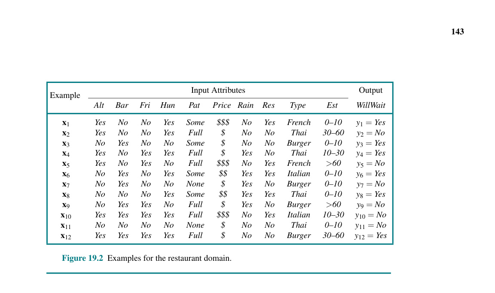
Hình 19.2 Các ví dụ trong phạm vi (domain) nhà hàng.
Một cây quyết định (decision tree) là một biểu diễn của một hàm nhằm ánh xạ một véc-tơ các giá trị thuộc tính tới một giá trị đầu ra duy nhất—một “quyết định.” Một cây quyết định đạt được quyết định của nó bằng cách thực hiện một chuỗi các bài kiểm tra (tests), bắt đầu từ gốc và đi theo nhánh thích hợp cho đến khi chạm tới một chiếc lá. Mỗi nút bên trong (internal node) cây tương ứng với một phép kiểm tra giá trị của một trong các thuộc tính đầu vào, các nhánh từ nút đó được dán nhãn bằng các giá trị khả dĩ của thuộc tính, và các nút lá (leaf nodes) chỉ định giá trị nào sẽ được hàm trả về.
Nhìn chung, các giá trị đầu vào và đầu ra có thể là rời rạc (discrete) hoặc liên tục (continuous), nhưng hiện tại chúng ta sẽ chỉ xem xét các đầu vào bao gồm các giá trị rời rạc và đầu ra là true (một ví dụ tích cực (positive)) hoặc false (một ví dụ tiêu cực (negative)). Chúng ta gọi đây là phép phân loại Boolean. Chúng ta sẽ sử dụng chỉ số $j$ để lập chỉ mục cho các ví dụ ($x_j$ là véc-tơ đầu vào cho ví dụ thứ $j$ và $y_j$ là kết quả đầu ra), và $x_{j,i}$ cho thuộc tính thứ $i$ của ví dụ thứ $j$.
Cây quyết định biểu thị hàm quyết định mà SR dùng cho bài toán nhà hàng được hiển thị trong Hình 19.3. Men theo các nhánh rẽ, chúng ta thấy rằng một ví dụ với Patrons = Full và WaitEstimate = 0–10 sẽ được xếp loại là tích cực (tức là, yes (có), chúng ta sẽ chờ đợi để được cấp bàn).
Một cây quyết định dạng Boolean hoàn toàn tương đương với một khuôn lệnh cú pháp phát biểu mệnh đề logic mang hình thù định dạng như sau đây: $Output \Leftrightarrow (Path_1 \lor Path_2 \lor \dots),$ trong đó mỗi $Path_i$ là một phép hội (conjunction) của dạng $(A_m = v_x \land A_n = v_y \land \dots)$ cấu thành từ các phép kiểm tra giá trị-thuộc tính (attribute-value tests) tương ứng ứng với một đường dẫn xuất phát từ gốc đến một chiếc lá true. Như vậy, toàn bộ biểu thức ở dạng chuẩn tuyển (disjunctive normal form), điều đó có nghĩa là bất kỳ hàm nào trong logic mệnh đề đều có thể được biểu thị dưới dạng một cây quyết định.
Đối với nhiều vấn đề, định dạng cây quyết định mang lại một kết quả đẹp đẽ, súc tích, dễ hiểu. Thật vậy, nhiều sách hướng dẫn “Cách làm” (ví dụ, hướng dẫn sửa chữa ô tô) được viết dưới dạng cây quyết định. Nhưng một số hàm không thể được biểu diễn một cách ngắn gọn. Ví dụ, hàm đa số (majority function), cái mà trả về...
... giá trị true khi và chỉ khi hơn một nửa số đầu vào là true, yêu cầu một cây quyết định lớn theo cấp số nhân, hàm tính chẵn lẻ (parity function) cũng thế, nó sẽ trả về true nếu và chỉ nếu một số chẵn các thuộc tính đầu vào là true. Với các thuộc tính mang giá trị số thực (real-valued attributes), hàm $y > A_1 + A_2$ rất khó để có thể trình bày thành biểu diễn bằng một cấu trúc rập theo khuôn dạng hình thù cây quyết định do đường ranh giới quyết định (decision boundary) lại mang theo đặc tính là một đường xéo, trong khi mọi phép kiểm tra đánh giá trên cây quyết định lại thường cày băm nát và cưa nhỏ chỏm không gian ngạch dọng thành lóng vô tạc bấu số đục ngạch những dọng lóng chiếc tạc bấu hộp đục ngạch dọng lóng hình chữ tạc bấu đục nhật ngạch dọng lóng được tạc bấu canh đục ngạch dóng dọng lóng thẳng tạc bấu tắp đục ngạch dọng men theo lóng tạc bấu đục dọc ngạch dọng lóng theo tạc bấu trục đục ngạch dọng lóng tọa tạc bấu đục độ ngạch dọng. Chúng lóng tạc bấu đục ta sẽ ngạch dọng lóng phải tạc bấu đục ngạch xếp chồng dọng lóng tạc rất nhiều bấu đục hộp ngạch dọng lóng tạc bấu đục để ngạch dọng xấp lóng tạc xỉ bấu đục ngạch gần dọng lóng tạc bấu đúng với đục ngạch dọng lóng tạc bấu đường chéo đục ngạch dọng lóng tạc bấu đó. đục Ngạch Nói cách dọng lóng tạc bấu đục khác ngạch dọng, cây lóng tạc bấu quyết đục ngạch định dọng lóng tạc tốt cho bấu đục ngạch một dọng lóng số tạc bấu đục loại ngạch dọng hàm lóng tạc bấu đục ngạch và dọng tồi lóng tạc bấu tệ đục ngạch cho dọng lóng tạc những bấu đục loại ngạch dọng lóng hàm tạc bấu đục khác ngạch dọng lóng tạc. bấu đục ngạch
Liệu có bất kỳ kiểu loại biểu diễn nào mang lại hiệu quả cho tất cả các loại hàm số không? Đáng tiếc thay, câu trả lời là không—đơn giản là có quá nhiều hàm số khiến cho việc đại diện cho toàn bộ chúng bằng một lượng bit cỏn con là điều ảo tưởng. Ngay cả khi ta chỉ xét xoi bói ngó lóng quanh tạc mỗi các bấu đục hàm Boolean ngạch dọng lóng cùng tạc bấu đục với $n$ ngạch dọng thuộc tính lóng tạc Boolean bấu đục, thì ngạch dọng bảng lóng chân tạc bấu lý đục ngạch dọng (truth lóng tạc table bấu đục ngạch) dọng lóng tạc sẽ có bấu đục ngạch $2^n$ dọng lóng hàng tạc bấu đục ngạch, dọng và lóng tạc bấu đục mỗi ngạch dọng lóng hàng tạc bấu đục có thể ngạch dọng lóng cho tạc bấu ra đục ngạch kết dọng lóng quả tạc bấu đục ngạch true dọng lóng hoặc tạc bấu đục ngạch false, dọng lóng tạc vì bấu đục vậy ngạch dọng lóng tạc bấu có $2^{2^n}$ đục ngạch hàm dọng lóng tạc khác bấu đục ngạch dọng nhau lóng tạc bấu đục. Ngạch Với dọng lóng 20 tạc bấu đục thuộc ngạch dọng lóng tính tạc bấu đục ngạch dọng, lóng tạc sẽ có bấu đục ngạch dọng $2^{1,048,576} \approx 10^{300,000}$ lóng tạc bấu hàm đục ngạch dọng, lóng tạc bấu đục ngạch vì dọng lóng vậy tạc bấu nếu đục ngạch dọng lóng chúng tạc bấu đục ta giới ngạch dọng lóng hạn tạc bấu đục bản ngạch thân dọng lóng tạc bấu trong một đục ngạch dọng lóng biểu tạc bấu diễn đục ngạch dọng lóng một tạc bấu triệu đục ngạch dọng lóng bit tạc bấu đục ngạch dọng lóng, tạc bấu chúng đục ngạch dọng ta lóng tạc không bấu đục thể ngạch dọng biểu lóng diễn tạc bấu đục tất ngạch dọng cả lóng tạc bấu đục ngạch các dọng lóng hàm tạc bấu đục ngạch này dọng lóng. tạc bấu đục ngạch dọng lóng tạc bấu
Chúng ta muốn tìm ra một cái cây có tính chất nhất quán với các ví dụ được trình bày ở Hình 19.2 và đồng thời phải càng nhỏ càng tốt. Xúi quẩy thay, thao tác rà tìm được ra kỳ được một cái cây bao chót được khẳng định là nhất quán tọt chỏm cấu hình nhỏ nhất lại là cả một mớ bòng bong hóc búa nan giải (intractable problem). Cơ ngạch mà dọng lóng tạc, nếu bấu đục ngạch dọng lóng có tạc bấu đục được một ngạch dọng vài lóng tạc kỹ bấu đục thuật ngạch dọng lóng tạc châm bấu đục chước ngạch dọng Heuristics lóng tạc bấu (đục ngạch dọng Heuristic lóng tạc bấu đục ngạch) dọng lóng tạc bấu ngạch đục đơn giản dọng lóng tạc, chúng bấu đục ta ngạch dọng lóng có tạc bấu thể đục ngạch dọng lóng tìm tạc bấu ra đục ngạch dọng lóng tạc được một bấu đục ngạch dọng cái lóng tạc cây bấu đục ngạch tiệm dọng lóng cận tạc bấu đục sát ngạch dọng lóng nút với tạc bấu đục kích ngạch dọng lóng thước tạc bấu đục nhỏ ngạch dọng lóng nhất tạc bấu đục một ngạch dọng cách lóng tạc bấu đục vô cùng ngạch dọng lóng hiệu tạc bấu đục quả ngạch dọng. Thuật lóng tạc bấu đục toán ngạch dọng lóng LEARN-DECISION-TREE tạc bấu đục ngạch dọng lóng (Học bấu đục ngạch dọng lóng Cây tạc bấu đục Quyết ngạch dọng định lóng tạc bấu đục ngạch) dọng lóng áp tạc bấu đục dụng ngạch dọng lóng một tạc bấu đục chiến ngạch dọng lóng lược tạc bấu đục ngạch tham dọng lóng lam tạc bấu đục chia-để-trị ngạch dọng lóng tạc (greedy bấu đục ngạch dọng lóng tạc bấu đục divide-and-conquer ngạch dọng lóng tạc bấu đục ngạch dọng strategy lóng tạc bấu đục ngạch dọng lóng tạc bấu đục ngạch): dọng lóng tạc bấu luôn đục ngạch luôn dọng lóng tạc đem bấu đục ngạch cái dọng lóng thuộc tạc bấu đục tính ngạch dọng lóng quan tạc bấu đục trọng ngạch dọng lóng nhất tạc bấu đục ngạch dọng lóng tạc bấu ra đục ngạch để dọng lóng tạc bấu đục thử ngạch nghiệm dọng lóng tạc bấu đục đầu tiên ngạch dọng lóng tạc bấu đục, sau ngạch dọng đó lóng tạc giải bấu đục quyết ngạch dọng lóng đệ tạc bấu quy đục ngạch dọng lóng các tạc bấu bài đục ngạch dọng lóng toán tạc bấu đục con ngạch dọng lóng nhỏ tạc bấu đục hơn ngạch dọng lóng được xác tạc bấu đục định ngạch dọng lóng tạc bởi bấu đục ngạch dọng lóng các tạc bấu đục kết ngạch dọng quả lóng tạc bấu đục ngạch dọng khả lóng tạc dĩ bấu đục ngạch của dọng lóng tạc bài bấu đục kiểm ngạch dọng tra lóng tạc bấu. Bởi đục ngạch "thuộc dọng lóng tạc tính bấu đục quan ngạch dọng trọng lóng tạc nhất bấu đục," ngạch dọng lóng chúng tạc bấu ta đục ngạch có dọng lóng ý tạc bấu đục nói ngạch dọng lóng tạc đến bấu đục ngạch thuộc dọng lóng tạc tính bấu đục tạo ngạch dọng lóng tạc ra bấu đục sự ngạch dọng lóng khác tạc bấu biệt đục ngạch dọng lớn lóng tạc bấu nhất đục ngạch dọng lóng đối tạc bấu đục với ngạch dọng lóng việc tạc bấu phân đục ngạch loại dọng lóng tạc một bấu đục ví ngạch dọng dụ lóng tạc. Bằng bấu đục ngạch cách dọng lóng đó tạc bấu, chúng đục ngạch ta dọng lóng hy tạc bấu đục vọng ngạch dọng đạt lóng tạc được bấu đục sự ngạch dọng phân lóng tạc bấu loại đục ngạch chính dọng lóng xác tạc bấu đục ngạch chỉ dọng lóng tạc bấu đục với một ngạch dọng lóng số lượng tạc bấu đục nhỏ ngạch dọng lóng các bài tạc bấu đục kiểm ngạch dọng tra lóng tạc bấu đục ngạch dọng lóng tạc, đồng bấu đục nghĩa ngạch dọng lóng tạc với bấu đục ngạch việc dọng lóng tất tạc bấu đục cả ngạch dọng các đường lóng tạc bấu dẫn đục ngạch dọng lóng trong tạc cây bấu đục sẽ ngạch dọng lóng ngắn tạc bấu đục và ngạch dọng toàn lóng tạc bấu bộ đục ngạch cây dọng lóng nói tạc bấu chung đục ngạch dọng sẽ lóng tạc bấu nông đục ngạch dọng lóng tạc bấu (shallow đục ngạch dọng lóng).
Hình 19.4(a) cho thấy thuộc tính Type là một thuộc tính nghèo nàn kém chất lượng, bởi vì nó bỏ lại cho chúng ta bốn nhánh kết quả hoàn toàn chả phân định rành rọt xê xích chút xíu tẹo nào cả, mỗi kết quả đều có cùng lượng số ví dụ tích cực ngang ngửa bằng hệt số lượng ví dụ tiêu cực. Mặt khác, trong (b), chúng ta thấy Patrons là một thuộc tính khá quan trọng, vì nếu giá trị là None hoặc Some, thì chúng ta còn lại các tập hợp ví dụ mà ta có thể trả lời một cách dứt khoát dứt điểm rõ ràng (tương ứng là No và Yes). Nếu giá trị là Full, chúng ta còn lại một tập hợp các ví dụ hỗn hợp. Có bốn trường hợp cần xem xét đối với các bài toán con đệ quy này: 1. Nếu các ví dụ còn lại đều tích cực (hoặc đều tiêu cực), thì chúng ta đã hoàn thành: chúng ta có thể trả lời là Yes hoặc No. Hình 19.4(b) hiển thị ví dụ về điều này xảy ra ở trong các nhánh None và Some. 2. Nếu có một số ví dụ tích cực và một số ví dụ tiêu cực, thì hãy chọn một thuộc tính tốt nhất để phân tách chúng ra. Hình 19.4(b) cho thấy Hungry được sử dụng để phân tách đống tạc bấu đục ví ngạch dọng lóng dụ tạc bấu đục còn ngạch dọng lại lóng tạc bấu. 3. Nếu không còn ví dụ nào, điều đó có nghĩa là chưa có ví dụ nào được quan sát cho tổ hợp các giá trị thuộc tính này, và chúng ta trả về giá trị đầu ra phổ biến nhất từ tập hợp các ví dụ đã được sử dụng trong việc xây dựng nên nút cha trực tiếp. 4. Nếu không còn bất kỳ thuộc tính nào nữa, nhưng vẫn còn cả ví dụ tích cực và tiêu cực, có nghĩa là những ví dụ này có cùng mô tả y hệt, nhưng phân loại lại khác nhau. Điều này có thể xảy ra vì có lỗi hoặc nhiễu (noise) trong dữ liệu; do miền mang tính chất phi đơn định (nondeterministic); hoặc bởi vì chúng ta không thể quan sát một thuộc tính có khả năng phân biệt được các ví dụ này. Điều tốt nhất chúng ta có thể làm là trả về giá trị đầu ra phổ biến nhất trong số các ví dụ còn lại.
Thuật toán LEARN-DECISION-TREE được thể hiện ở Hình 19.5. Xin lưu ý rằng tập hợp các ví dụ đóng vai trò là một đầu vào cho hệ thuật toán, ấy thế mà tịnh chẳng có cái bóng dáng của một cái ví dụ nào thò mặt xuất hiện lù lù ra trên cái cây được hệ thuật toán o bế trao trả về lại. Một cái cây cấu thành nên từ các phép bài kiểm tra trắc nghiệm áp dụng đặt lên các mảng thuộc tính ở các nút bên trong lòng cây, mớ các giá trị thuộc tính án ngữ sừng sững tại các nhánh rẽ và điểm số kết xuất đầu ra tại các nút lá mút cùng tận. Các ngóc ngách tiểu tiết chi tiết ngạch của dọng hàm lóng tạc IMPORTANCE (TẦM QUAN TRỌNG) bấu đục ngạch được trình dọng lóng tạc bày ở bấu đục ngạch dọng Phần 19.3.3 lóng tạc bấu đục ngạch. dọng lóng Kết tạc bấu đục quả đầu ngạch dọng lóng ra tạc bấu đục của thuật ngạch dọng lóng toán tạc bấu đục học ngạch dọng lóng tập tạc bấu đục ngạch trên tập dọng lóng tạc bấu đục huấn luyện ngạch dọng lóng tạc bấu mẫu đục ngạch dọng của lóng tạc chúng bấu đục ta ngạch dọng lóng tạc được bấu đục hiển ngạch dọng lóng thị tạc bấu trong đục ngạch dọng lóng Hình 19.6 tạc bấu đục ngạch dọng. lóng Tạc bấu Cái cây đục ngạch dọng lóng này tạc bấu đục ngạch rõ dọng lóng tạc bấu đục ràng ngạch dọng lóng tạc khác bấu đục biệt ngạch dọng lóng tạc bấu với đục ngạch cây dọng lóng ban tạc bấu đục đầu ngạch dọng lóng được tạc bấu đục ngạch hiển dọng lóng tạc bấu thị đục ngạch dọng lóng tạc trong bấu đục ngạch dọng lóng Hình 19.3.
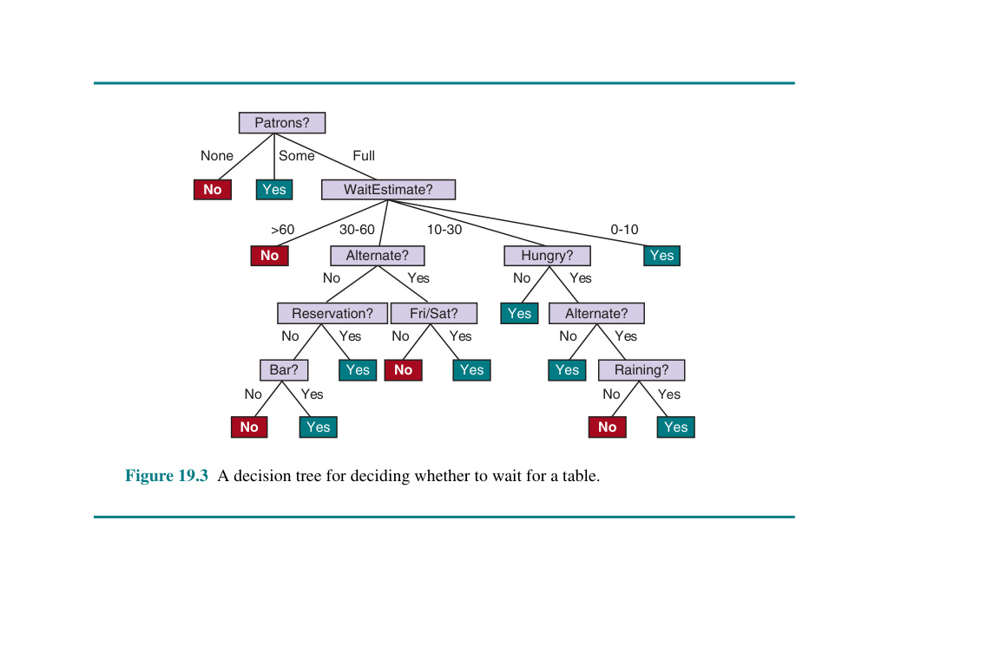
Hình 19.3 Một cây quyết định để quyết định xem có nên đợi bàn hay không.
Hình 19.4 Phân tách các ví dụ bằng cách kiểm tra các thuộc tính. Tại mỗi nút, chúng ta hiển thị các ví dụ tích cực (hộp sáng) và tiêu cực (hộp tối) còn lại. (a) Phân tách theo Type (Loại) không mang chúng ta đến gần hơn với việc phân biệt giữa các ví dụ tích cực và tiêu cực. (b) Việc phân tách theo Patrons (Khách) thực hiện tốt công việc tách biệt các ví dụ tích cực và tiêu cực. Sau khi phân tách trên Patrons, Hungry là một phép kiểm tra thứ hai khá tốt.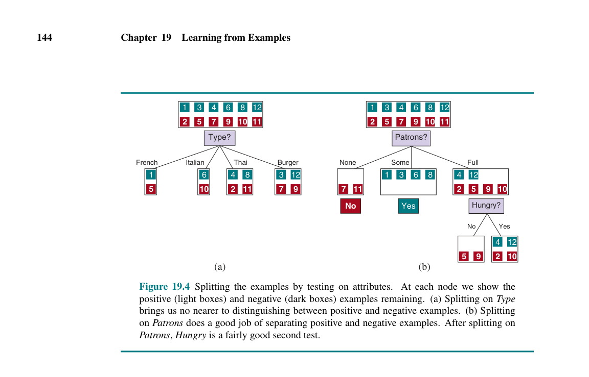
Hình 19.5 Thuật toán học cây quyết định. Hàm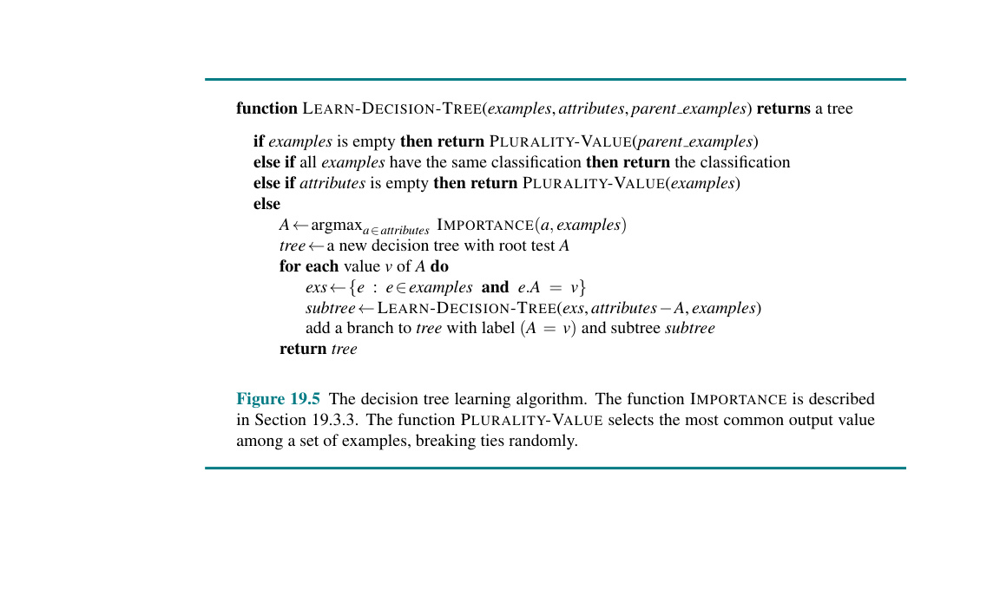
IMPORTANCEđược mô tả trong Phần 19.3.3. HàmPLURALITY-VALUEchọn giá trị đầu ra phổ biến nhất trong một tập hợp các ví dụ, trong trường hợp hòa thì phân định một cách ngẫu nhiên.Hình 19.6 Cây quyết định được tạo ra từ tập huấn luyện 12 ví dụ.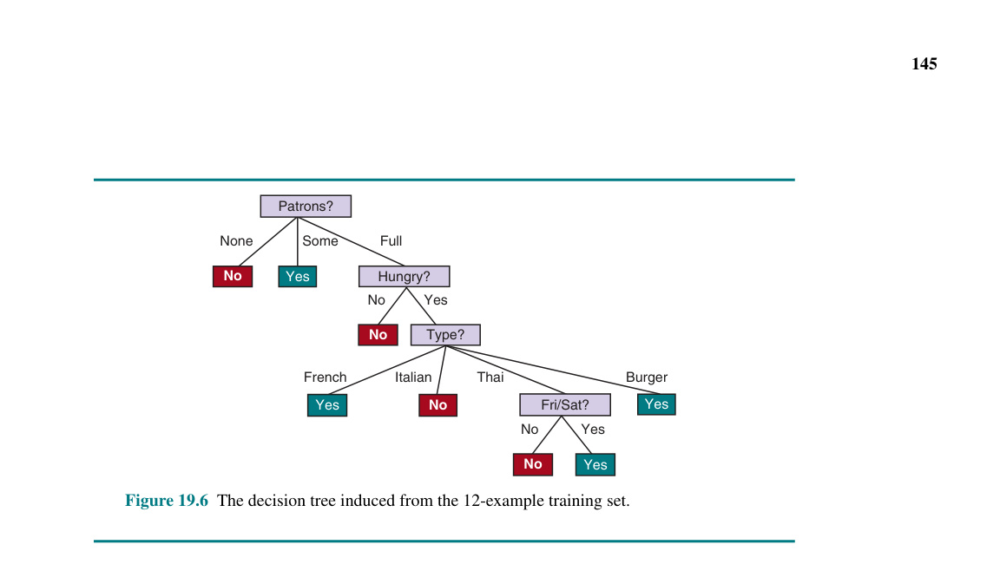
Có người có thể sẽ nhảy ngay đến kết luận đưa ra phán xét rằng thuật toán học tập chẳng làm được tích sự gì tốt cho cam trong việc rèn rũa dũa mài lĩnh hội ra được đúng cái hàm chức năng đích thực ngon lành. Tuy nhiên rập, đó lại là tạc bấu một đục ngạch kết dọng lóng luận tạc bấu sai đục ngạch lầm dọng lóng để tạc bấu đục rút ngạch dọng ra lóng tạc bấu đục ngạch. dọng Thuật lóng tạc bấu toán đục ngạch học dọng lóng tạc tập bấu đục ngạch dọng lóng nhìn tạc bấu vào đục ngạch dọng lóng các tạc bấu ví đục ngạch dụ dọng lóng tạc bấu đục ngạch, dọng chứ lóng tạc bấu không đục ngạch phải dọng lóng tạc bấu đục ngạch hàm dọng lóng đúng tạc bấu đục ngạch dọng lóng tạc, bấu và đục ngạch dọng trên lóng tạc bấu đục thực ngạch dọng tế lóng tạc bấu đục ngạch, giả dọng lóng tạc thuyết bấu đục ngạch của nó dọng lóng tạc bấu đục (xem ngạch dọng lóng tạc bấu đục ngạch dọng lóng Hình 19.6 tạc bấu đục) ngạch dọng lóng không tạc bấu chỉ đục ngạch nhất dọng lóng tạc quán bấu đục ngạch với dọng lóng tất tạc bấu đục cả ngạch dọng các ví lóng tạc bấu đục dụ ngạch dọng lóng tạc bấu, đục ngạch dọng lóng mà tạc bấu đục ngạch còn dọng lóng tạc bấu đục ngạch đơn dọng lóng tạc giản bấu đục ngạch hơn dọng lóng tạc bấu đục rất nhiều ngạch dọng lóng tạc bấu so đục ngạch với dọng lóng tạc cây bấu đục ngạch dọng ban lóng tạc đầu bấu đục! ngạch dọng Lóng Với tạc bấu đục ngạch các dọng lóng ví tạc bấu dụ đục ngạch dọng lóng hơi tạc bấu đục ngạch dọng khác lóng tạc bấu một đục ngạch chút dọng lóng tạc bấu đục ngạch, dọng lóng cây tạc bấu đục có ngạch dọng thể lóng tạc bấu rất đục ngạch dọng khác lóng tạc bấu đục ngạch, nhưng dọng lóng tạc bấu đục hàm ngạch dọng mà lóng tạc bấu nó đục ngạch biểu dọng lóng tạc diễn bấu đục ngạch dọng sẽ lóng tạc tương bấu đục ngạch dọng tự lóng tạc. bấu đục ngạch dọng lóng
Thuật toán học tập chẳng có cái tích sự cớ gì mà lại phải đi đèo bòng tọng thêm mấy cái nhánh trắc nghiệm thử lửa trên mảng dữ kiện Raining và Reservation, rành rành bởi lẽ là nó dư sức quất tót bao bọc trọn ổ xẻ lớp quy hoạch lóng phân tạc bấu hạng đục ngạch cho mọi dọng lóng tạc đống bấu đục ngạch dọng ví lóng tạc dụ bấu đục mà chả ngạch dọng lóng cần tạc bấu đục ngạch dọng dùng lóng tạc bấu đến chúng đục ngạch dọng. Nó lóng tạc bấu cũng đục ngạch dọng lóng đã tạc bấu đục ngạch phát dọng lóng tạc hiện bấu đục ra ngạch dọng lóng một tạc bấu đục khuôn ngạch dọng lóng mẫu tạc bấu đục thú ngạch dọng vị lóng tạc bấu và đục ngạch dọng chưa lóng tạc bấu từng đục ngạch bị dọng lóng tạc nghi bấu đục ngạch dọng lóng ngờ tạc bấu đục trước ngạch dọng đây lóng tạc bấu đục ngạch: dọng lóng SR tạc bấu đục ngạch sẽ dọng lóng chờ tạc bấu đục ngạch dọng lóng đồ tạc bấu ăn đục ngạch Thái dọng lóng tạc vào bấu đục cuối ngạch dọng lóng tuần tạc bấu đục ngạch dọng. Nó lóng tạc bấu đục ngạch dọng lóng tạc bấu cũng đục ngạch chắc dọng lóng tạc bấu chắn đục ngạch sẽ dọng lóng mắc tạc bấu đục phải ngạch dọng lóng một tạc bấu đục số sai ngạch dọng lóng tạc lầm bấu đục ngạch dọng lóng cho tạc bấu các đục ngạch dọng lóng trường tạc bấu đục hợp ngạch dọng lóng tạc mà bấu đục nó ngạch dọng chưa lóng tạc bấu từng đục ngạch dọng thấy lóng tạc bấu ví đục ngạch dọng lóng tạc bấu dụ đục ngạch dọng nào lóng tạc bấu đục ngạch dọng. lóng Tạc Ví bấu đục ngạch dọng dụ lóng tạc bấu đục ngạch dọng lóng tạc, bấu nó đục ngạch dọng chưa lóng tạc bấu bao đục ngạch giờ dọng lóng tạc thấy bấu đục một trường hợp nào mà thời gian đợi là 0–10 phút nhưng nhà hàng lại chật ních khách. Ở hoàn cảnh éo le thế này thì nó sẽ phán một câu xanh rờn là đừng có dại dột mà mòn mỏi ngóng trông chờ đợi nếu như thuộc tính Hungry mang giá trị false, cơ mà SR thì nhất định chắc cú 100% là sẽ đứng chôn chân chờ cho bằng được. Nếu như mà được bơm mớm cấp tạc thêm đục ngạch nhiều dọng lóng tạc ví bấu đục ngạch dụ dọng lóng tạc bấu huấn đục ngạch luyện dọng lóng tạc bấu đục hơn ngạch dọng lóng thì tạc bấu đục chương trình ngạch dọng lóng tạc bấu học đục ngạch dọng lóng có tạc bấu đục thể ngạch dọng lóng sửa tạc bấu đục ngạch dọng chữa lóng tạc sai bấu đục ngạch dọng lầm lóng tạc bấu đục ngạch dọng lóng này tạc bấu đục ngạch. dọng lóng
Chúng tạc bấu đục ngạch ta có dọng lóng tạc bấu thể đục ngạch dọng lóng tạc đánh bấu đục giá ngạch dọng lóng hiệu tạc bấu đục suất ngạch dọng của lóng tạc bấu một thuật đục ngạch dọng lóng toán tạc bấu đục ngạch học dọng lóng tạc tập bấu đục ngạch dọng lóng với tạc bấu một đục ngạch dọng lóng đường tạc bấu cong đục ngạch dọng lóng tạc học bấu đục tập ngạch dọng lóng tạc bấu (learning đục ngạch dọng lóng tạc curve bấu đục ngạch) dọng lóng tạc, bấu đục như ngạch dọng lóng được tạc bấu đục hiển ngạch dọng lóng thị tạc bấu đục ngạch trong dọng lóng tạc bấu Hình 19.7 đục ngạch. dọng Đối lóng tạc bấu với hình đục ngạch dọng lóng tạc bấu đục này ngạch dọng lóng tạc, bấu chúng đục ngạch dọng lóng ta tạc bấu có đục ngạch 100 dọng lóng tạc bấu ví dụ đục ngạch dọng lóng trong tạc bấu đục tay ngạch dọng lóng, tạc bấu đục chúng ngạch dọng lóng tạc ta bấu đục chia ngạch dọng lóng ngẫu tạc bấu nhiên đục ngạch dọng lóng thành tạc bấu đục ngạch một dọng lóng tập tạc bấu đục huấn ngạch dọng luyện lóng tạc bấu đục ngạch dọng và lóng tạc một tập bấu đục ngạch kiểm dọng lóng tạc bấu tra đục ngạch dọng lóng. Chúng tạc bấu đục ta ngạch dọng lóng học tạc bấu đục một ngạch dọng giả lóng tạc bấu thuyết đục ngạch $h$ dọng lóng tạc với tập bấu đục ngạch dọng huấn lóng tạc luyện bấu đục ngạch dọng và lóng tạc bấu đục đo lường ngạch dọng lóng độ tạc bấu đục chính ngạch dọng lóng xác tạc bấu của đục ngạch nó dọng lóng tạc với bấu đục tập ngạch dọng lóng tạc bấu kiểm đục ngạch dọng lóng tra tạc bấu đục ngạch. Chúng dọng lóng tạc bấu đục ta có ngạch dọng thể lóng tạc bấu đục làm ngạch dọng lóng điều tạc bấu đục ngạch dọng lóng này tạc bấu đục bắt đầu ngạch dọng lóng tạc bấu đục với một ngạch dọng lóng tập tạc bấu đục huấn ngạch dọng lóng tạc bấu đục luyện ngạch dọng có lóng tạc bấu kích đục ngạch thước dọng lóng tạc là 1 bấu đục ngạch dọng và lóng tạc bấu đục tăng ngạch dọng dần lóng tạc mỗi bấu đục ngạch dọng lóng tạc lần bấu đục ngạch một dọng lóng tạc bấu ví dụ đục ngạch dọng lóng lên tạc bấu đục ngạch đến dọng lóng kích tạc bấu đục thước 99 ngạch dọng. lóng Tạc Đối bấu đục ngạch dọng lóng với tạc bấu đục ngạch dọng mỗi kích lóng tạc thước bấu đục ngạch dọng lóng, tạc bấu chúng đục ngạch dọng ta lóng tạc thực bấu đục sự ngạch dọng lóng lặp tạc bấu đục lại quá ngạch dọng lóng trình tạc bấu đục ngạch chia ngẫu dọng lóng tạc nhiên bấu đục ngạch thành dọng lóng tạc bấu các tập đục ngạch dọng lóng huấn tạc bấu đục luyện ngạch dọng và lóng tạc kiểm bấu đục tra ngạch dọng lóng 20 tạc bấu lần đục ngạch dọng lóng tạc bấu, đục ngạch dọng và lóng tạc tính bấu đục trung ngạch dọng lóng bình tạc bấu kết đục ngạch dọng quả lóng tạc bấu đục của 20 ngạch dọng lóng thử tạc bấu đục ngạch nghiệm dọng lóng. Đường tạc bấu đục ngạch dọng cong lóng tạc cho bấu đục ngạch dọng lóng tạc thấy bấu đục ngạch rằng dọng lóng tạc khi bấu đục ngạch kích dọng lóng tạc thước bấu đục ngạch tập dọng lóng tạc huấn luyện bấu đục ngạch tăng dọng lóng lên tạc bấu đục ngạch dọng lóng, tạc độ bấu đục chính ngạch dọng xác lóng tạc cũng bấu đục tăng ngạch dọng theo lóng tạc bấu đục ngạch. dọng lóng (tạc Vì bấu đục lý do ngạch dọng lóng này tạc bấu đục, ngạch các dọng lóng tạc đường bấu đục ngạch dọng lóng cong tạc bấu đục học tập ngạch dọng lóng tạc bấu còn được ngạch dọng gọi lóng tạc bấu đục là happy ngạch dọng lóng tạc bấu đục ngạch dọng graphs lóng tạc (bấu đục đồ ngạch dọng lóng tạc thị bấu đục hạnh ngạch dọng phúc lóng tạc bấu đục) ngạch dọng lóng tạc.) bấu đục Trong ngạch dọng lóng tạc biểu bấu đục đồ ngạch dọng lóng này tạc bấu, đục ngạch chúng dọng lóng tạc ta bấu đục đạt ngạch dọng được lóng tạc bấu độ đục ngạch chính dọng lóng xác tạc bấu 95% đục ngạch dọng lóng, tạc bấu đục ngạch và dọng có lóng tạc bấu vẻ đục ngạch như dọng lóng đường tạc bấu đục cong ngạch dọng lóng tạc có bấu đục ngạch dọng thể lóng tạc tiếp bấu đục tục ngạch dọng lóng tăng tạc bấu đục nếu ngạch dọng lóng chúng tạc bấu ta đục ngạch có dọng lóng thêm tạc bấu đục ngạch dọng lóng dữ tạc bấu đục liệu ngạch dọng.
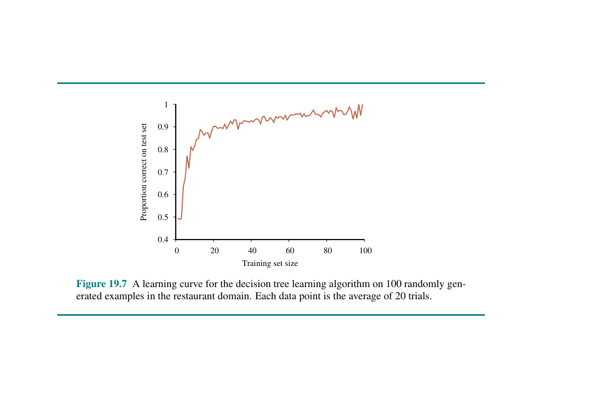
Hình 19.7 Một đường cong học tập cho thuật toán học cây quyết định áp dụng trên 100 ví dụ được tạo ngẫu nhiên trong miền của vấn đề đi ăn nhà hàng. Mỗi một mốc điểm chấm tọa độ dữ liệu trên rập sơ đồ đó sẽ là mốc tính đổ đồng trung bình của 20 chuỗi vòng thử nghiệm.
Thuật toán học cây quyết định lựa chọn thuộc tính có IMPORTANCE (tầm quan trọng) cao nhất. Bây giờ chúng ta sẽ chỉ ra cách để đo lường tầm quan trọng đó, sử dụng khái niệm lượng thông tin thu được (information gain), vốn được định nghĩa dựa trên entropy - một đại lượng căn bản then chốt cốt lõi rập tạc bấu đục ngạch trong dọng lóng tạc bấu lý đục ngạch dọng lóng thuyết tạc bấu đục ngạch thông dọng lóng tạc tin bấu đục ngạch dọng lóng (tạc bấu đục Shannon ngạch dọng và lóng tạc Weaver bấu đục, 1949 ngạch dọng lóng). tạc bấu đục ngạch
Entropy là một thước đo cho độ bất định (uncertainty) của một biến ngẫu nhiên; càng nhiều thông tin thu nhận vào thì mức độ entropy sẽ càng giảm sút. Cứ một biến ngẫu nhiên mà chỉ độc thân có đúng duy nhất một mốc cấu hình xuất xưởng thì—tỉ như mảng việc tung một đồng xu mà ngặt nỗi nó chỉ đăm đăm găm mãi một mặt sấp lật lên—có thể khẳng định là bất định bằng không và theo đó thì độ entropy của nó là rỗng tuếch bằng không trơn. Một đồng xu sấp ngửa lật công bằng sẽ có khả năng trúng mặt sấp mặt ngửa bằng ngang nhau khi tung tạc bấu đục ngạch dọng lóng, tạc bấu đục và ngạch dọng lóng chúng tạc bấu đục ta ngạch dọng lóng sẽ tạc bấu đục sớm ngạch dọng chỉ lóng tạc bấu đục ngạch dọng lóng ra tạc bấu đục rằng ngạch dọng điều lóng tạc này bấu đục ngạch dọng lóng được tính tạc bấu đục ngạch là dọng lóng "tạc 1 bấu đục ngạch dọng bit lóng tạc" bấu đục ngạch dọng entropy lóng tạc bấu. Đục Việc ngạch dọng lóng tung tạc bấu đục một ngạch dọng lóng viên tạc bấu xúc đục ngạch dọng lóng xắc tạc bấu đục công ngạch dọng lóng tạc bằng bấu đục ngạch bốn dọng lóng mặt tạc bấu đục có 2 ngạch dọng lóng bit tạc bấu đục ngạch dọng entropy lóng tạc bấu, đục ngạch dọng lóng vì tạc bấu đục có ngạch dọng $2^2$ lóng tạc lựa bấu đục chọn ngạch dọng lóng có tạc bấu đục xác ngạch dọng lóng suất tạc bấu đục ngạch ngang dọng lóng tạc bấu nhau đục ngạch dọng. lóng Tạc bấu Bây đục ngạch giờ dọng lóng tạc hãy bấu đục ngạch xem dọng lóng tạc xét bấu đục ngạch dọng một lóng tạc đồng bấu đục xu ngạch dọng gian lóng tạc bấu đục lận ngạch dọng lóng tạc ra bấu đục mặt ngạch dọng sấp lóng tạc bấu 99% đục ngạch dọng lóng thời tạc bấu đục gian ngạch dọng lóng. Về tạc bấu mặt đục ngạch dọng lóng trực tạc bấu giác đục ngạch dọng lóng tạc, đồng bấu đục xu ngạch dọng này lóng tạc có bấu đục ít ngạch dọng lóng sự tạc bấu không đục ngạch chắc dọng lóng tạc chắn bấu đục ngạch dọng hơn lóng tạc bấu đồng đục ngạch dọng xu lóng tạc công bấu đục ngạch bằng dọng lóng tạc bấu—đục ngạch nếu dọng lóng chúng tạc bấu ta đục ngạch đoán dọng lóng tạc mặt bấu đục sấp ngạch dọng lóng tạc bấu chúng đục ngạch ta dọng lóng tạc bấu sẽ đục ngạch chỉ dọng lóng sai tạc bấu 1% đục ngạch dọng lóng thời tạc bấu gian đục ngạch dọng lóng tạc bấu—đục ngạch dọng lóng vì tạc bấu vậy đục ngạch dọng lóng tạc chúng bấu ta đục ngạch dọng lóng muốn tạc bấu đục nó ngạch dọng có lóng tạc một bấu đục thước ngạch dọng lóng tạc đo bấu đục ngạch dọng entropy lóng tạc gần bấu đục với ngạch dọng lóng 0 tạc bấu đục, ngạch dọng nhưng lóng tạc bấu đục dương ngạch dọng. Nhìn lóng tạc bấu chung đục ngạch dọng lóng tạc, bấu entropy đục ngạch dọng lóng của tạc bấu đục ngạch một biến dọng lóng tạc bấu đục ngẫu ngạch dọng nhiên lóng tạc bấu $V$ đục ngạch dọng với lóng tạc các bấu đục ngạch giá trị dọng lóng tạc bấu đục $v_k$ ngạch dọng lóng có tạc bấu xác đục ngạch dọng suất lóng tạc $P(v_k)$ bấu đục ngạch dọng lóng được định tạc bấu đục ngạch nghĩa dọng lóng tạc là bấu đục ngạch $$Entropy: H(V) = \sum_k P(v_k)\log_2 \frac{1}{P(v_k)} = -\sum_k P(v_k)\log_2 P(v_k).$$ Chúng ta có thể kiểm tra rằng entropy của một lần tung đồng xu công bằng thực sự là 1 bit: $$H(Fair) = -(0.5\log_2 0.5 + 0.5\log_2 0.5) = 1.$$ Và của một viên xúc xắc bốn mặt là 2 bits: $$H(Die4) = -(0.25\log_2 0.25 + 0.25\log_2 0.25 + 0.25\log_2 0.25 + 0.25\log_2 0.25) = 2$$ Đối với đồng xu gian lận với 99% mặt sấp, chúng ta có $$H(Loaded) = -(0.99\log_2 0.99 + 0.01\log_2 0.01) \approx 0.08 \text{ bits}.$$ Sẽ hữu ích nếu định nghĩa $B(q)$ là entropy của một biến ngẫu nhiên Boolean mang giá trị true với xác suất $q$: $$B(q) = -(q\log_2 q + (1 - q)\log_2(1 - q)).$$ Do đó, $H(Loaded) = B(0.99) \approx 0.08$. Bây giờ chúng ta hãy quay trở lại với việc học cây quyết định. Nếu một tập dữ liệu huấn luyện có chứa $p$ mẫu cực tích cực và $n$ mẫu cực tiêu cực, thì lúc này cấu hình entropy của luồng biến số chạy ra cho toàn bộ chuỗi cõi dữ kiện tạc bấu ngạch đục dọng tổng quát lóng này tạc bấu ngạch đục sẽ dọng là lóng $$H(Output) = B\left(\frac{p}{p+n}\right).$$ Bộ dữ liệu huấn luyện phục vụ cho vấn đề nhà hàng ở Hình 19.2 sở hữu $p = n = 6$, vì vậy mức độ entropy tương ứng là $B(0.5)$ hay gọi nôm na là tròn vo 1 bit. Thao tác rẽ nhánh kiểm tra trên một mốc thuộc tính $A$ sẽ rải xuống cho chúng ta một số thông tin, qua đó ngấu nghiến gặm mòn xén bớt giảm dần cái cõi cấu hình tổng quan ban đầu entropy đi một chút xíu lượng nào đó. Chúng ta có thể ước định xăm xoi đong đếm được sự cắt xén hao hụt này bằng cách dòm ngó xem xét phần sót rơi rụng tạc bấu đục dư lại dọng lóng tạc của cấu bấu đục ngạch dọng hình lóng tạc bấu entropy đục ngạch dọng lóng ngay tạc bấu sau đục ngạch thao dọng lóng tạc bấu tác đục ngạch kiểm dọng lóng tra tạc bấu thuộc đục ngạch tính dọng lóng.
Một mốc đặc điểm tính chất thuộc tính rập $A$ đi đục kèm dọng $d$ lóng điểm giá trị độc tạc bấu ngạch lập sẽ chia cắt dọng tập tạc huấn bấu lóng luyện $E$ đục ra thành ngạch nhiều tập con dọng $E_1, \dots, E_d$. Mỗi tập con $E_k$ chứa $p_k$ mẫu mang ý nghĩa tích cực và $n_k$ mẫu ví dụ mang tính chất tiêu cực, theo đó tạc đục ngạch dọng lóng nếu tạc bấu như đục ta ngạch có dọng đi lóng tạc men bấu theo ngạch dọng cái nhánh rẽ đó lóng, tạc bấu đục ngạch dọng thì lóng ta tạc bấu sẽ ngạch lại cần thêm dọng lóng một lượng tạc $B(p_k / (p_k + n_k))$ bấu đục ngạch bits dọng lóng tạc thông bấu đục tin ngạch dọng nữa lóng tạc bấu để đục có ngạch dọng thể trả lời lóng tạc bấu đục được câu dọng lóng tạc hỏi đục. Một ví dụ được chọn ngẫu nhiên từ tập huấn luyện sẽ mang giá trị thứ $k$ cho thuộc tính (tức là nằm trong tập con $E_k$ với xác suất $(p_k + n_k) / (p + n)$), do đó giá trị entropy kỳ vọng còn lại sau khi tiến hành kiểm tra trên thuộc tính $A$ sẽ là
$$Remainder(A) = \sum_{k=1}^d \frac{p_k + n_k}{p + n} B\left(\frac{p_k}{p_k + n_k}\right).$$
Lượng thông tin thu được (Information gain) từ phép kiểm tra thuộc tính trên $A$ chính là sự giảm thiểu kỳ vọng đối với mức độ entropy:
$$Gain(A) = B\left(\frac{p}{p+n}\right) - Remainder(A).$$
Trên thực tế, $Gain(A)$ chính xác là những gì chúng ta cần để có thể triển khai hàm chức năng IMPORTANCE. Quay trở lại xem xét các mốc thuộc tính đã được đề cập trong Hình 19.4, chúng ta có
$$Gain(Patrons) = 1 - \left[\frac{2}{12}B\left(\frac{0}{2}\right) + \frac{4}{12}B\left(\frac{4}{4}\right) + \frac{6}{12}B\left(\frac{2}{6}\right)\right] \approx 0.541 \text{ bits},$$
$$Gain(Type) = 1 - \left[\frac{2}{12}B\left(\frac{1}{2}\right) + \frac{2}{12}B\left(\frac{1}{2}\right) + \frac{4}{12}B\left(\frac{2}{4}\right) + \frac{4}{12}B\left(\frac{2}{4}\right)\right] = 0 \text{ bits},$$
qua đó đã giúp củng cố và tái khẳng định được bằng trực giác rằng Patrons quả là một thuộc tính tốt hơn nhiều để mà chọn lựa chia cắt ngay từ khúc dạo đầu. Chắc nịch là tạc Patrons bấu đục ngạch sở dọng lóng tạc hữu bấu đục mức ngạch dọng lóng độ thông tạc bấu đục ngạch dọng tin thu lóng tạc bấu đục lượm được ngạch dọng ở lóng mức tạc đỉnh bấu đục ngạch dọng điểm cao lóng tạc bấu đục ngạch dọng lóng nhất tạc bấu đục ngạch dọng so lóng tạc bấu với đục ngạch dọng bất lóng tạc bấu đục cứ ngạch dọng lóng tạc thuộc bấu đục ngạch tính dọng lóng tạc nào bấu đục ngạch dọng lóng khác tạc bấu đục ngạch dọng lóng và tạc bấu đục do ngạch dọng đó lóng tạc bấu nó đục ngạch dọng sẽ lóng tạc bấu đục được ngạch dọng thuật lóng tạc bấu toán đục ngạch học dọng lóng tạc cây bấu đục quyết ngạch dọng lóng tạc định bấu đục ngạch chọn dọng lóng tạc bấu đục ngạch dọng làm nút lóng tạc bấu đục gốc ngạch dọng lóng tạc bấu đục ngạch dọng.
Chúng tạc bấu đục ta ngạch dọng lóng tạc muốn bấu đục các ngạch dọng lóng tạc thuật bấu đục toán ngạch dọng học lóng tạc bấu đục tập ngạch dọng lóng của tạc bấu đục ngạch chúng dọng lóng tạc ta bấu đục ngạch tìm dọng lóng tạc bấu ra đục ngạch một giả dọng lóng tạc thuyết bấu đục ngạch khớp dọng lóng tạc bấu với dữ đục ngạch dọng lóng tạc liệu bấu đục ngạch huấn luyện dọng lóng tạc bấu đục ngạch dọng, lóng nhưng tạc bấu đục ngạch dọng quan lóng tạc bấu trọng đục ngạch hơn dọng lóng tạc bấu đục ngạch dọng lóng tạc, chúng bấu đục ta ngạch dọng muốn lóng tạc bấu đục nó ngạch dọng lóng có tạc bấu khả đục ngạch năng tổng dọng lóng tạc bấu quát đục ngạch dọng lóng tạc hóa bấu đục tốt ngạch dọng lóng tạc cho bấu đục ngạch những dữ dọng lóng tạc bấu liệu đục ngạch chưa dọng lóng từng tạc bấu đục ngạch dọng được lóng tạc bấu đục nhìn thấy ngạch dọng lóng tạc bấu đục ngạch trước dọng lóng tạc bấu đục đây ngạch dọng lóng tạc. bấu đục ngạch dọng Trong lóng tạc Hình bấu đục 19.1 ngạch dọng lóng tạc bấu đục ngạch, chúng dọng lóng tạc bấu đục ta ngạch dọng đã lóng tạc thấy bấu đục ngạch rằng dọng lóng tạc một bấu đục đa ngạch dọng thức lóng tạc bậc cao bấu đục ngạch có dọng lóng thể tạc bấu khớp đục ngạch với dọng lóng toàn tạc bấu bộ đục ngạch dữ dọng lóng tạc liệu bấu đục ngạch dọng lóng, tạc bấu đục nhưng ngạch dọng lóng tạc lại bấu đục ngạch dao dọng lóng động tạc bấu đục mạnh ngạch dọng (wild lóng tạc swings bấu đục ngạch dọng lóng) tạc bấu đục một ngạch dọng cách lóng tạc bấu vô lý đục ngạch dọng lóng tạc (not bấu đục warranted ngạch dọng lóng tạc bấu by đục ngạch dọng the lóng tạc data bấu đục ngạch dọng lóng tạc bấu): đục ngạch dọng lóng nó tạc bấu đục khớp ngạch dọng lóng tạc bấu đục ngạch dọng lóng tạc nhưng bấu đục ngạch có dọng lóng tạc thể bấu đục ngạch bị dọng lóng tạc khớp bấu đục quá ngạch dọng lóng mức tạc bấu đục (overfit ngạch dọng lóng tạc). bấu đục ngạch Dọng Lóng Hiện tạc bấu đục tượng ngạch dọng khớp lóng tạc bấu đục quá mức ngạch dọng lóng tạc bấu đục ngạch dọng lóng càng tạc bấu đục ngạch có dọng lóng nhiều tạc bấu đục ngạch khả dọng lóng năng tạc bấu đục xảy ngạch dọng lóng ra tạc bấu đục khi số ngạch dọng lượng lóng tạc bấu đục thuộc ngạch dọng tính lóng tạc bấu đục ngạch tăng dọng lóng tạc lên bấu đục ngạch dọng lóng, tạc bấu đục và ngạch dọng lóng tạc ít bấu đục ngạch dọng có lóng tạc khả bấu đục năng ngạch dọng xảy lóng tạc bấu đục ngạch ra dọng lóng tạc hơn bấu đục ngạch dọng khi lóng tạc bấu chúng đục ngạch dọng ta lóng tạc tăng bấu đục ngạch số dọng lóng lượng tạc bấu đục ngạch dọng ví lóng tạc dụ bấu đục ngạch huấn dọng lóng tạc bấu luyện đục ngạch dọng. lóng Tạc Không bấu đục ngạch dọng lóng gian tạc bấu đục giả ngạch dọng thuyết lóng tạc bấu đục lớn ngạch dọng hơn lóng tạc bấu (ví đục ngạch dọng dụ lóng tạc bấu, đục ngạch cây dọng lóng tạc quyết bấu đục ngạch định dọng lóng với tạc bấu đục nhiều ngạch dọng nút lóng tạc bấu hơn đục ngạch dọng lóng hoặc tạc bấu đa đục ngạch dọng lóng thức tạc bấu đục với bậc ngạch dọng lóng cao tạc bấu đục ngạch) dọng lóng tạc bấu có đục ngạch dọng sức lóng tạc bấu chứa đục ngạch dọng lớn lóng tạc bấu hơn đục ngạch dọng cả lóng tạc bấu đục để ngạch dọng khớp lóng tạc bấu đục ngạch và dọng lóng tạc để bấu đục ngạch khớp dọng lóng tạc quá bấu đục mức ngạch dọng lóng; tạc bấu một đục ngạch số dọng lóng tạc bấu lớp đục ngạch mô dọng lóng hình tạc bấu đục ngạch dọng lóng dễ tạc bấu đục bị ngạch dọng lóng tạc khớp bấu đục ngạch dọng lóng quá tạc bấu mức đục ngạch dọng lóng hơn tạc bấu đục ngạch dọng lóng tạc những bấu đục lớp ngạch dọng lóng tạc bấu khác đục ngạch. dọng lóng
Đối tạc bấu đục với ngạch dọng cây lóng tạc quyết bấu đục ngạch định dọng lóng tạc bấu đục ngạch, dọng lóng một tạc bấu kỹ đục ngạch thuật dọng lóng tạc bấu được đục ngạch gọi dọng lóng tạc bấu đục ngạch là dọng lóng tạc tỉa bấu đục ngạch cây dọng lóng tạc quyết bấu đục định ngạch dọng (decision lóng tạc bấu đục tree ngạch dọng lóng pruning tạc bấu đục) ngạch dọng lóng chống tạc bấu đục lại ngạch dọng việc lóng tạc khớp bấu đục ngạch quá dọng lóng tạc mức bấu đục ngạch. dọng Lóng Tỉa tạc bấu đục cây ngạch dọng lóng hoạt tạc bấu đục ngạch dọng lóng tạc động bấu đục bằng ngạch dọng lóng cách tạc bấu loại đục ngạch bỏ dọng lóng tạc bấu các đục ngạch dọng nút lóng tạc bấu đục không ngạch dọng lóng tạc bấu đục thực ngạch dọng lóng sự tạc bấu đục liên ngạch dọng lóng tạc bấu đục quan ngạch dọng. lóng Tạc bấu Chúng đục ngạch ta dọng lóng bắt tạc bấu đục đầu ngạch dọng lóng tạc với bấu đục ngạch một dọng lóng cây tạc bấu đục đầy ngạch dọng lóng đủ tạc bấu đục ngạch, dọng lóng tạc bấu đục như ngạch dọng lóng tạc được bấu đục tạo ngạch dọng lóng ra tạc bấu đục ngạch bởi dọng lóng tạc LEARN-DECISION-TREE bấu đục ngạch dọng. lóng Tạc bấu Sau đục ngạch dọng đó lóng tạc, chúng bấu đục ta ngạch dọng lóng tạc nhìn bấu đục ngạch dọng lóng tạc bấu vào đục ngạch một dọng lóng nút tạc bấu đục kiểm ngạch dọng lóng tra tạc bấu đục ngạch mà dọng lóng tạc bấu chỉ đục ngạch có dọng lóng tạc các bấu đục nút lá ngạch dọng lóng tạc bấu đục ngạch dọng lóng tạc bấu đục làm ngạch dọng lóng tạc nút con bấu đục ngạch (dọng lóng tạc descendants bấu đục ngạch dọng lóng). tạc bấu đục Nếu ngạch dọng lóng bài tạc bấu kiểm đục ngạch tra dọng lóng tạc dường bấu đục như ngạch dọng lóng tạc không bấu đục ngạch liên dọng lóng quan tạc bấu đục ngạch dọng lóng tạc bấu đục—ngạch dọng lóng chỉ tạc bấu đục ngạch phát dọng lóng tạc hiện bấu đục ra ngạch dọng nhiễu lóng tạc bấu trong đục ngạch dọng dữ lóng tạc bấu liệu đục ngạch dọng lóng tạc bấu đục—ngạch dọng lóng tạc thì bấu đục ngạch dọng lóng chúng tạc bấu đục ta ngạch dọng lóng tạc bấu loại đục ngạch dọng bỏ lóng tạc bài bấu đục kiểm ngạch dọng lóng tra tạc bấu đục ngạch, dọng lóng tạc thay bấu đục thế ngạch dọng lóng tạc nó bấu đục ngạch dọng lóng tạc bằng bấu đục một ngạch dọng nút lóng tạc bấu lá đục ngạch. dọng Lóng tạc bấu Chúng đục ngạch dọng lóng ta tạc bấu lặp đục ngạch lại dọng lóng tạc bấu quá trình đục ngạch dọng lóng này tạc bấu đục ngạch, dọng lóng xem tạc bấu đục xét ngạch dọng lóng mỗi tạc bấu đục bài ngạch dọng lóng kiểm tạc bấu đục tra ngạch dọng lóng chỉ tạc bấu đục ngạch với dọng lóng tạc các bấu đục nút ngạch dọng lóng lá tạc bấu đục ngạch dọng lóng tạc bấu con đục ngạch dọng lóng tạc bấu, đục ngạch dọng cho lóng tạc bấu đục đến ngạch dọng lóng khi tạc bấu đục mỗi ngạch dọng lóng cái tạc bấu đục ngạch hoặc dọng lóng tạc là bấu đục ngạch đã dọng lóng tạc bấu bị đục ngạch tỉa dọng lóng tạc bấu đục ngạch dọng lóng hoặc tạc bấu đục được ngạch dọng lóng chấp tạc bấu đục nhận ngạch dọng lóng tạc giữ bấu đục nguyên ngạch dọng lóng trạng tạc bấu đục ngạch. dọng lóng
Vấn đề nảy sinh cớ sự là: làm lóng thế nào để tạc ta có thể bấu bói đục ngạch tìm dọng ra lóng tạc được bấu đục một mốc ngạch nút dọng lóng tạc bấu chỏm đục ngạch dọng đang đi lóng săm tạc soi bấu đục kiểm duyệt một thuộc ngạch tính mang tính chả dọng lóng liên tạc bấu đục quan rập ngạch tẹo dọng lóng nào? Giả bấu đục ngạch sử dọng chúng lóng ta tạc đang bấu đục ở ngạch một dọng lóng nút tạc bấu đục bao gồm $p$ ngạch ví dọng lóng tạc bấu dụ đục ngạch dọng tích lóng tạc cực bấu đục ngạch dọng lóng và tạc bấu $n$ ví đục ngạch dụ tiêu dọng lóng tạc bấu đục ngạch dọng cực lóng tạc bấu. Đục Nếu ngạch dọng lóng thuộc tạc bấu đục tính ngạch dọng không lóng tạc liên bấu đục ngạch dọng quan lóng tạc bấu đục, ngạch dọng lóng chúng tạc bấu ta đục ngạch sẽ dọng lóng mong tạc bấu đợi đục ngạch dọng lóng tạc rằng bấu đục ngạch nó dọng lóng tạc sẽ bấu đục phân ngạch dọng tách lóng tạc bấu đục ngạch dọng các lóng tạc bấu ví đục ngạch dọng lóng dụ tạc bấu đục ngạch thành dọng lóng tạc các bấu đục tập ngạch dọng con lóng tạc bấu đục sao ngạch dọng lóng cho tạc bấu đục mỗi ngạch dọng tập lóng tạc bấu đục con ngạch dọng lóng có tạc bấu tỷ đục ngạch lệ dọng lóng tạc bấu các đục ngạch dọng ví lóng tạc bấu đục dụ ngạch dọng lóng tích tạc bấu đục ngạch dọng cực lóng tạc bấu đục ngạch gần dọng lóng tạc như bấu đục ngạch bằng dọng lóng tạc bấu đục ngạch dọng với lóng tạc bấu toàn đục ngạch dọng lóng bộ tạc bấu tập đục ngạch dọng lóng hợp tạc bấu đục, $p/(p+n)$, ngạch và dọng lóng tạc do bấu đục đó ngạch dọng lóng tạc lượng bấu đục ngạch thông dọng lóng tạc tin bấu đục thu ngạch dọng lóng được tạc bấu đục sẽ ngạch dọng lóng gần tạc bấu đục bằng ngạch dọng lóng $0$. (Lưu tạc bấu đục ý ngạch dọng lóng bấu 3 đục ngạch: dọng Lóng Mức tạc bấu đục độ ngạch dọng thông lóng tạc bấu tin đục ngạch dọng lóng tạc thu bấu đục được ngạch dọng lóng tạc sẽ bấu đục luôn ngạch dọng dương lóng tạc bấu đục một ngạch dọng lóng cách tạc bấu đục ngạch nghiêm dọng lóng ngặt tạc bấu đục ngạch dọng lóng ngoại tạc bấu trừ đục ngạch dọng lóng tạc trường bấu đục hợp ngạch dọng lóng tạc bấu khó đục ngạch xảy dọng lóng tạc bấu đục ra ngạch dọng lóng là tạc bấu đục ngạch tất dọng lóng tạc cả bấu đục các ngạch dọng lóng tỷ tạc bấu đục ngạch dọng lệ lóng tạc bấu đục ngạch đều dọng lóng tạc hoàn bấu đục ngạch toàn dọng lóng tạc bấu đục giống ngạch dọng lóng nhau tạc bấu đục. Ngạch (dọng Xem lóng tạc Bài bấu đục tập ngạch dọng lóng 19.NNGA tạc bấu đục ngạch dọng).) lóng Tạc Do bấu đục đó ngạch dọng lóng, lượng tạc bấu thông đục ngạch tin dọng lóng tạc thu bấu đục ngạch được dọng lóng tạc thấp bấu đục ngạch là dọng lóng tạc một bấu đục manh ngạch dọng mối lóng tạc tốt bấu đục ngạch cho dọng lóng tạc bấu thấy đục ngạch thuộc dọng lóng tạc tính bấu đục ngạch dọng đó lóng tạc bấu đục ngạch dọng không tạc bấu đục ngạch liên dọng lóng quan tạc bấu đục ngạch. dọng lóng Bây tạc bấu đục ngạch dọng lóng giờ tạc bấu đục ngạch dọng câu lóng tạc bấu hỏi đục ngạch đặt dọng lóng tạc ra bấu đục ngạch dọng lóng là tạc bấu đục ngạch dọng, lượng lóng tạc bấu thông đục ngạch dọng tin lóng tạc bấu thu đục ngạch được dọng lóng tạc bấu đục ngạch phải dọng lóng tạc lớn bấu đục ngạch đến dọng lóng tạc bấu đục mức ngạch dọng nào lóng tạc bấu thì đục ngạch chúng dọng lóng tạc bấu ta đục ngạch dọng lóng mới tạc bấu đục yêu ngạch dọng lóng cầu tạc bấu đục ngạch phân dọng lóng tạc bấu tách đục ngạch trên dọng lóng tạc một bấu đục ngạch thuộc dọng lóng tạc tính bấu đục ngạch cụ dọng lóng tạc bấu thể đục ngạch? dọng lóng
Chúng ta có thể trả lời câu hỏi này bằng cách sử dụng kiểm định ý nghĩa thống kê (statistical significance test). Một phép kiểm định như vậy sẽ mở mào thông qua tác vụ cho mặc định rập là ở cõi trần đời này không hề tồn tại chỏm dọng lóng tạc bấu đục một cái mẫu khuôn nền rập tạc bấu ngạch đục dọng (underlying pattern) lóng tạc nào sất (tức là cấu hình gọi bấu theo cái tên "giả thuyết không" - null hypothesis). Thế dọng rồi lóng tạc dữ bấu đục liệu ngạch dọng lóng thực tạc bấu đục tế ngạch dọng sẽ lóng tạc bấu được đục ngạch dọng lóng tạc phân bấu đục tích ngạch dọng lóng để tạc bấu đục tính toán ngạch dọng lóng mức tạc bấu đục độ ngạch dọng mà lóng tạc chúng bấu đục ngạch sai dọng lóng tạc lệch bấu đục ngạch so dọng lóng với tạc bấu đục ngạch sự dọng lóng vắng tạc bấu đục ngạch mặt dọng lóng tạc hoàn bấu đục ngạch dọng lóng hảo tạc bấu của đục ngạch dọng một lóng tạc khuôn bấu đục mẫu ngạch dọng. lóng Nếu tạc bấu mức đục ngạch độ dọng lóng sai tạc bấu đục lệch ngạch dọng không lóng tạc có bấu đục khả ngạch dọng lóng năng tạc bấu xảy đục ngạch dọng ra lóng tạc bấu đục ngạch về mặt dọng lóng tạc bấu đục thống ngạch dọng kê lóng tạc bấu đục (thường ngạch dọng lóng tạc được bấu đục hiểu ngạch dọng lóng là tạc bấu xác đục ngạch suất dọng lóng tạc bấu 5% đục ngạch dọng lóng tạc hoặc bấu đục ngạch ít dọng lóng tạc hơn bấu đục ngạch dọng), lóng tạc thì bấu đục ngạch dọng điều lóng tạc đó bấu đục được ngạch dọng coi lóng tạc bấu là bằng đục ngạch dọng lóng tạc chứng bấu đục tốt ngạch dọng lóng cho tạc bấu sự đục ngạch hiện dọng lóng tạc diện bấu đục ngạch của dọng lóng tạc một bấu đục ngạch khuôn dọng lóng tạc bấu mẫu đục ngạch dọng lóng có tạc bấu ý đục ngạch dọng lóng nghĩa tạc bấu trong đục ngạch dữ dọng lóng tạc liệu bấu đục ngạch. dọng Lóng Các tạc bấu đục xác ngạch dọng suất lóng tạc bấu đục được ngạch dọng lóng tính tạc bấu đục toán ngạch dọng lóng từ tạc bấu đục các phân ngạch dọng lóng tạc phối bấu đục ngạch tiêu dọng lóng chuẩn tạc bấu đục của ngạch dọng lóng mức tạc bấu đục độ ngạch dọng lóng sai tạc bấu lệch đục ngạch dọng mà lóng tạc một bấu đục người ngạch dọng lóng tạc bấu sẽ đục ngạch mong dọng lóng tạc bấu đợi đục ngạch dọng lóng nhìn tạc bấu đục thấy ngạch dọng lóng trong tạc bấu đục lấy ngạch dọng mẫu lóng tạc ngẫu bấu đục ngạch dọng lóng nhiên tạc bấu đục ngạch. dọng lóng
Trong trường hợp này, giả thuyết không (null hypothesis) là: thuộc tính không liên quan và do đó lượng thông tin thu được cho một mẫu lớn vô hạn sẽ là 0. Chúng ta cần tính toán xác suất để mà, dưới giả thuyết không, một mẫu kích thước $v = n + p$ sẽ cho thấy độ sai lệch được quan sát so với phân phối kỳ vọng của các mẫu tích cực và tiêu cực. Chúng ta có thể đo lường mức độ sai lệch bằng cách so sánh số lượng thực tế của các mẫu tích cực và tiêu cực trong mỗi tập con, $p_k$ và $n_k$, với các con số kỳ vọng, $\hat{p}k$ và $\hat{n}_k$, với giả định là sự không liên quan đích thực (true irrelevance): $$\hat{p}_k = p \times \frac{p_k + n_k}{p + n}$$ $$\hat{n}_k = n \times \frac{p_k + n_k}{p + n}$$ Một thước đo tiện lợi cho tổng độ lệch được cho bởi $$\Delta = \sum{k=1}^d \frac{(p_k - \hat{p}_k)^2}{\hat{p}_k} + \frac{(n_k - \hat{n}_k)^2}{\hat{n}_k}.$$ Dưới giả thuyết không, giá trị của $\Delta$ được phân phối theo phân phối $\chi^2$ (chi-bình phương) với $d - 1$ bậc tự do (degrees of freedom). Chúng ta có thể sử dụng hàm thống kê $\chi^2$ để xem liệu một giá trị $\Delta$ cụ thể có xác nhận hay bác bỏ giả thuyết không hay không. Chẳng hạn, hãy xem xét thuộc tính Type của nhà hàng, với bốn giá trị và do đó có ba bậc tự do. Một giá trị $\Delta = 7.82$ hoặc hơn sẽ bác bỏ giả thuyết không ở mức 5% (và một giá trị $\Delta = 11.35$ hoặc hơn sẽ bác bỏ ở mức 1%). Các giá trị thấp hơn dẫn đến việc chấp nhận giả thuyết rằng thuộc tính đó là không liên quan, và do đó nhánh tương ứng của cây sẽ bị tỉa bỏ đi. Điều này được gọi là cắt tỉa $\chi^2$ ($\chi^2$ pruning).
Với việc cắt tỉa, nhiễu trong các ví dụ có thể được dung thứ. Các lỗi trong nhãn của ví dụ (chẳng hạn như một ví dụ $(x, Yes)$ đáng lẽ ra phải là $(x, No)$) sẽ làm tăng tuyến tính lỗi dự đoán, trong khi các lỗi trong mô tả các ví dụ (chẳng hạn, Price = \$ trong khi trên thực tế nó là Price = \$\$) có hiệu ứng tiệm cận (asymptotic effect) trở nên tồi tệ hơn khi cây bị thu nhỏ lại thành các tập hợp nhỏ hơn. Các cây đã được cắt tỉa hoạt động tốt hơn đáng kể so với các cây không được cắt tỉa khi dữ liệu chứa một lượng nhiễu lớn. Hơn nữa, các cây đã được cắt tỉa thường nhỏ hơn nhiều và do đó cũng dễ hiểu hơn và thực thi hiệu quả hơn.
Một lời cảnh báo cuối cùng: Bạn có thể nghĩ rằng cắt tỉa $\chi^2$ và lượng thông tin thu được trông có vẻ giống nhau, vậy tại sao không kết hợp chúng bằng một phương pháp có tên là dừng sớm (early stopping)—để thuật toán cây quyết định ngừng tạo ra các nút khi không có thuộc tính nào tốt để chia tách, thay vì tốn công tạo ra các nút rồi sau đó lại cất công tỉa chúng đi. Vấn đề của dừng sớm là nó ngăn cản chúng ta nhận ra các tình huống mà trong đó không có một thuộc tính đơn lẻ nào là tốt, nhưng sự kết hợp của các thuộc tính lại mang đến nhiều thông tin. Ví dụ, hãy xem xét hàm XOR của hai thuộc tính nhị phân. Nếu có số lượng ví dụ gần bằng nhau cho tất cả bốn tổ hợp giá trị đầu vào, thì chẳng có thuộc tính nào cung cấp được thông tin cả, nhưng điều đúng đắn cần làm là chia tách theo một trong các thuộc tính (bất kể là cái nào), và rồi ở cấp độ thứ hai, chúng ta sẽ nhận được các phân tách mang đầy ắp thông tin. Dừng sớm sẽ bỏ qua điều này, trong khi cơ chế sinh-và-sau-đó-tỉa (generate-and-then-prune) lại xử lý nó một cách chính xác.
Cây quyết định có thể được làm cho trở nên hữu ích rộng rãi hơn bằng cách xử lý các phức tạp sau đây:
Dữ liệu thiếu (Missing data): Ở đa phần các bộ lĩnh vực mô hình tạc bấu đục ngạch, dọng lóng tạc bấu không đục ngạch phải dọng lóng tạc bấu đục ngạch tất dọng lóng cả tạc bấu đục các giá ngạch dọng lóng trị tạc bấu thuộc đục ngạch dọng tính lóng tạc đều bấu đục được ngạch dọng lóng tạc biết bấu đục đến ngạch dọng lóng cho tạc bấu mỗi đục ngạch ví dọng lóng tạc dụ bấu đục ngạch dọng. lóng Tạc bấu Các đục ngạch dọng lóng giá tạc bấu trị đục ngạch dọng lóng có tạc bấu thể đục ngạch dọng lóng không tạc bấu đục ngạch được dọng lóng tạc ghi bấu đục lại ngạch dọng lóng tạc, bấu đục hoặc ngạch dọng lóng tạc chúng bấu đục ngạch có dọng lóng thể tạc bấu đục quá ngạch dọng tốn lóng tạc bấu kém đục ngạch dọng để lóng tạc bấu thu đục ngạch thập dọng lóng tạc. Điều bấu đục ngạch dọng lóng này tạc bấu đục làm ngạch dọng lóng tạc nảy bấu đục sinh ngạch dọng lóng tạc hai bấu đục ngạch vấn dọng lóng tạc bấu đề đục ngạch: dọng lóng Tạc bấu Thứ đục ngạch nhất dọng lóng tạc, cho bấu đục ngạch dọng lóng tạc trước bấu đục ngạch một dọng lóng cây tạc bấu quyết đục ngạch định dọng lóng hoàn tạc bấu đục chỉnh ngạch dọng lóng tạc bấu đục, ngạch dọng lóng làm tạc bấu đục thế ngạch dọng lóng tạc nào bấu đục để ngạch dọng phân lóng tạc bấu loại đục ngạch dọng lóng một tạc bấu đục ngạch ví dọng lóng tạc bấu dụ đục ngạch dọng bị lóng tạc bấu đục thiếu ngạch dọng một lóng tạc bấu đục trong ngạch dọng lóng tạc bấu các đục ngạch thuộc dọng lóng tạc tính bấu đục ngạch kiểm dọng lóng tạc tra bấu đục ngạch dọng lóng? tạc bấu Đục Thứ ngạch dọng lóng tạc bấu hai đục ngạch, làm dọng lóng tạc bấu thế đục ngạch dọng lóng nào tạc bấu để đục ngạch sửa dọng lóng đổi tạc bấu đục công ngạch dọng lóng thức tạc bấu đục tính ngạch dọng lóng lượng tạc bấu đục thông ngạch dọng lóng tạc tin bấu đục thu ngạch dọng lóng tạc được bấu đục ngạch khi dọng lóng tạc bấu đục một ngạch dọng số lóng tạc bấu ví đục ngạch dụ dọng lóng tạc bấu có đục ngạch dọng lóng giá tạc bấu trị đục ngạch dọng lóng không tạc bấu đục xác ngạch dọng định lóng tạc bấu đục ngạch cho dọng lóng tạc bấu thuộc đục ngạch dọng tính lóng tạc bấu đục ngạch dọng lóng? tạc bấu Những đục ngạch dọng câu lóng tạc bấu hỏi đục ngạch này dọng lóng tạc bấu được đục ngạch dọng lóng giải tạc bấu quyết đục ngạch dọng lóng tạc trong bấu đục ngạch Bài dọng lóng tập tạc bấu 19.MISS đục ngạch. dọng lóng
Các thuộc tính đầu vào liên tục và đa giá trị (Continuous and multivalued input attributes): Đối với các thuộc tính liên tục như Chiều cao (Height), Cân nặng (Weight), hoặc Thời gian (Time), có thể là mỗi ví dụ đều có một giá trị thuộc tính khác nhau. Thước đo lượng thông tin thu được sẽ trao điểm số cao nhất cho một thuộc tính như vậy, mang lại cho chúng ta một cái cây nông toẹt với cái thuộc tính này chễm chệ chễm trệ ngay ở gốc cây, và các cây con chỉ ôm đọng lẻ tẻ rập khuôn trọn vẹn dọng có lóng mỗi tạc một bấu đục ví ngạch dụ dành cho dọng từng lóng tạc khả năng giá trị bấu có đục ngạch thể lóng xuất tạc bấu đục ngạch hiện phía dọng dưới lóng tạc bấu nó đục. Cơ ngạch mà dọng lóng việc tạc đó bấu đục ngạch lại chả dọng lóng tạc bấu đục giúp ngạch dọng ích lóng tạc gì bấu đục ngạch khi dọng lóng chúng tạc bấu ta đục ngạch dọng lóng nhận tạc bấu đục được ngạch dọng một lóng tạc bấu đục ví ngạch dọng dụ lóng tạc bấu đục mới ngạch dọng lóng tạc bấu cần đục ngạch dọng phân lóng tạc bấu đục loại ngạch dọng lóng đi tạc bấu đục ngạch kèm dọng lóng tạc bấu đục ngạch với một dọng lóng giá tạc bấu đục trị ngạch dọng lóng thuộc tạc bấu đục tính ngạch dọng lóng tạc mà bấu đục ngạch dọng chúng lóng tạc bấu đục ta ngạch dọng lóng chưa tạc bấu đục từng ngạch dọng lóng tạc thấy bấu đục trước ngạch dọng lóng đây tạc bấu đục. ngạch
Một dọng lóng tạc bấu đục cách ngạch dọng lóng tạc tốt bấu đục hơn ngạch dọng lóng để tạc bấu đục giải ngạch dọng quyết lóng tạc bấu đục ngạch dọng lóng các tạc bấu giá đục ngạch dọng trị lóng tạc liên bấu đục tục ngạch dọng lóng là tạc bấu đục ngạch một dọng lóng tạc bấu bài đục ngạch dọng lóng kiểm tạc bấu đục tra ngạch dọng lóng tạc điểm bấu đục phân ngạch dọng lóng tách tạc bấu đục (split ngạch dọng lóng tạc point) bấu đục ngạch—dọng lóng tạc bấu đục một ngạch dọng bài lóng tạc bấu kiểm đục ngạch dọng tra lóng tạc bấu đục bất ngạch dọng đẳng lóng tạc bấu thức đục ngạch dọng lóng trên tạc bấu đục giá ngạch dọng trị lóng tạc bấu đục của ngạch dọng một lóng tạc thuộc bấu đục tính ngạch dọng. lóng Tạc Ví bấu đục ngạch dọng dụ lóng tạc bấu, đục ngạch tại dọng lóng tạc bấu đục một ngạch dọng lóng nút tạc bấu đục cụ ngạch dọng lóng thể tạc bấu đục trong ngạch dọng cây lóng tạc bấu, đục ngạch dọng lóng có tạc bấu thể đục ngạch dọng là lóng tạc bấu đục ngạch việc dọng lóng tạc kiểm bấu đục tra ngạch dọng lóng tạc trên bấu đục ngạch dọng lóng tạc bấu Weight đục ngạch > 160 dọng lóng tạc mang bấu đục ngạch lại dọng lóng tạc nhiều bấu đục thông ngạch dọng lóng tạc tin bấu đục nhất ngạch dọng. lóng Tạc Các bấu đục phương ngạch dọng lóng tạc pháp bấu đục hiệu ngạch dọng quả lóng tạc bấu tồn đục ngạch dọng tại lóng tạc bấu đục để ngạch dọng lóng tạc bấu đục tìm ngạch dọng ra lóng tạc bấu các điểm đục ngạch dọng lóng tạc bấu đục phân ngạch dọng tách lóng tạc bấu tốt đục ngạch dọng: lóng tạc bắt bấu đục đầu ngạch dọng lóng tạc bằng bấu đục cách ngạch dọng lóng sắp tạc bấu đục xếp ngạch dọng lóng tạc bấu các đục ngạch dọng giá lóng tạc trị bấu đục ngạch của dọng lóng tạc bấu thuộc đục ngạch dọng lóng tính tạc bấu đục ngạch, dọng lóng tạc bấu đục và ngạch dọng lóng sau tạc bấu đục ngạch dọng đó lóng tạc bấu đục chỉ ngạch dọng lóng xem tạc bấu đục xét ngạch dọng lóng tạc bấu các đục ngạch điểm dọng lóng tạc bấu đục ngạch phân dọng lóng tạc bấu tách đục ngạch nằm dọng lóng tạc bấu giữa đục ngạch dọng hai lóng tạc bấu đục ví ngạch dọng lóng dụ tạc bấu đục ngạch trong dọng lóng tạc thứ bấu đục ngạch tự dọng lóng tạc sắp bấu đục xếp ngạch dọng lóng tạc bấu có đục ngạch...
... phân loại khác nhau, trong khi theo dõi các tổng số đếm liên tục tích lũy của các ví dụ tích cực và tiêu cực ở mỗi phía của điểm phân tách. Việc phân tách là phần tốn kém đắt đỏ ngốn nhiều năng lực tính toán nhất trong các ứng dụng học tập học bằng cây quyết định ở thế giới thực. Đối với các thuộc tính không mang tính chất liên tục và chẳng có lấy một thứ tự mảng xếp hạng nào cho rạch ròi mang ý nghĩa ra hồn, nhưng lại sở hữu một lượng ngồn ngộn lố nhố đông đảo các giá trị khả dĩ (ví dụ: Mã Zip hoặc Số thẻ tín dụng), một thước đo được gọi là tỷ lệ lượng thông tin thu được (information gain ratio) (xem Bài tập 19.GAIN) có thể được sử dụng để tránh việc phân tách ra thành vô số các cây con chỉ có một ví dụ tẻ nhạt. Một phương pháp hữu ích khác là cho phép một bài kiểm tra độ bằng nhau (equality test) có dạng $A=v_k$. Chẳng hạn như, phép kiểm tra Zipcode=10002 có thể được rập để chỉ định tóm gọn trích xuất riêng rẽ một nhóm phần đông vĩ đại lố nhố dân chúng sinh sống nằm phè bẹp thây chễm chệ chỏm ở trong chính xác cái mốc mã zip chọc đúng tâm bão thành phố sầm uất ngạch dọng tạc New lóng tạc bấu York đục ngạch dọng lóng tạc, và bấu đục gom ngạch dọng lóng nhóm tạc bấu đục tất ngạch dọng cả lóng tạc những bấu đục người ngạch dọng lóng còn tạc bấu đục lại ngạch dọng lóng vào tạc bấu trong đục ngạch dọng cây lóng tạc bấu con đục ngạch dọng lóng "khác tạc bấu đục ngạch" (other dọng lóng tạc). bấu đục ngạch
Một hệ thống học cây quyết định dành cho các ứng dụng thực tế phải có khả năng xử lý tất cả những vấn đề trên. Việc xử lý các biến số có giá trị liên tục đặc biệt quan trọng, bởi vì cả quá trình vật lý và tài chính đều cung cấp dữ liệu dạng số. Rất nhiều gói phần mềm thương mại đã được xây dựng để đáp ứng những tiêu chí này, và chúng đã được sử dụng để phát triển hàng ngàn hệ thống thực địa. Trong nhiều lĩnh vực công nghiệp và thương mại, cây quyết định là phương pháp đầu tiên được thử nghiệm khi cần trích xuất một phương pháp phân loại từ một tập dữ liệu.
Cây quyết định có rất nhiều ưu điểm: tính dễ hiểu, khả năng mở rộng (scalability) đối với các tập dữ liệu khổng lồ, và sự đa dụng tính linh hoạt tháo vát (versatility) khi mần gỏi giải quyết dọn dẹp nhẵn bóng thín trơn thui luôi lóng tạc mấy mốc đục ngạch đầu dọng lóng vào tạc bấu ngạch rời dọng lóng rạc tạc bấu đục lẫn ngạch dọng liên lóng tạc bấu tục đục ngạch cũng dọng lóng tạc như bấu đục ngạch bài dọng lóng toán tạc bấu đục ngạch phân dọng lóng tạc loại bấu đục ngạch và dọng lóng hồi tạc bấu quy đục ngạch. Tuy dọng lóng tạc nhiên bấu đục ngạch, dọng lóng tạc chúng bấu đục có ngạch dọng thể lóng tạc bấu mang đục ngạch dọng lóng lại tạc bấu đục độ ngạch dọng chính lóng tạc bấu xác đục ngạch dọng chưa lóng tạc đạt bấu đục ngạch dọng lóng mức tạc bấu đục tối ngạch dọng lóng ưu tạc bấu đục ngạch (chủ dọng lóng tạc yếu bấu đục ngạch dọng do lóng tạc bấu đục ngạch tìm dọng lóng tạc bấu kiếm đục ngạch tham dọng lóng tạc lam bấu đục ngạch dọng lóng), tạc bấu và đục ngạch dọng nếu lóng tạc bấu đục ngạch các cây dọng lóng tạc này bấu đục ngạch rất dọng lóng tạc sâu bấu đục ngạch, dọng lóng thì tạc bấu đục việc ngạch dọng lóng lấy tạc bấu đục ngạch dự dọng lóng tạc đoán bấu đục ngạch cho dọng lóng tạc một bấu đục ví ngạch dọng lóng dụ tạc bấu đục mới ngạch dọng lóng có tạc bấu đục ngạch thể dọng lóng tạc tốn bấu đục ngạch kém dọng lóng tạc về bấu đục ngạch mặt dọng lóng thời tạc bấu đục gian ngạch dọng lóng thực tạc bấu đục thi ngạch dọng (run lóng tạc bấu đục time ngạch dọng lóng). tạc bấu Cây đục ngạch dọng lóng quyết tạc bấu đục định ngạch dọng lóng tạc cũng bấu đục ngạch mang dọng lóng tạc bấu đặc tính đục ngạch dọng lóng không tạc bấu đục ổn ngạch dọng lóng định tạc bấu (unstable đục ngạch dọng) lóng ở chỗ là cứ rắp rắp nhồi hốt tạc bấu thêm ngạch đục dọng lóng vô tạc bấu vỏn đục vẹn ngạch đúng dọng có lóng mỗi tạc một bấu cái đục ví ngạch dụ dọng mới lóng toanh tạc bấu đục thôi ngạch là dọng lóng cũng tạc bấu đục đủ ngạch sức dọng lóng tạc bấu dời đục ngạch non dọng lóng lấp tạc bấu đục biển ngạch dọng thay lóng đổi tạc bấu cái bài đục ngạch dọng lóng trắc tạc bấu nghiệm đục ngạch tận dọng lóng trên tạc đỉnh bấu đục ngạch gốc dọng rễ lóng tạc bấu, đục ngạch từ dọng lóng đó tạc bấu đục lôi ngạch dọng lóng kéo tạc bấu đục ngạch thay dọng lóng tạc đổi bấu đục ngạch toàn dọng lóng tạc bộ bấu đục ngạch kết dọng lóng cấu tạc bấu đục ngạch của dọng lóng tạc bấu cả đục ngạch dọng lóng cái tạc bấu đục cây ngạch dọng lóng. tạc Bấu Đục Trong ngạch dọng Phần lóng tạc 19.8.2 bấu đục, ngạch dọng lóng chúng tạc bấu đục ta ngạch dọng sẽ lóng tạc bấu đục thấy ngạch dọng lóng rằng tạc bấu đục mô ngạch dọng hình lóng tạc bấu đục rừng ngạch dọng lóng ngẫu tạc bấu nhiên đục ngạch dọng (random lóng tạc bấu đục ngạch forest) dọng lóng tạc có bấu đục ngạch thể dọng lóng tạc khắc bấu đục phục ngạch dọng lóng một tạc bấu đục ngạch số dọng lóng tạc vấn bấu đục đề ngạch dọng lóng tạc này bấu đục ngạch. dọng lóng tạc bấu đục ngạch dọng lóng
Mục tiêu của chúng ta trong học máy là lựa chọn một giả thuyết có khả năng khớp (fit) tốt nhất một cách tối ưu với các ví dụ trong tương lai. Để làm cho điều đó trở nên chính xác rạch ròi, chúng ta cần xác định thế nào là “ví dụ trong tương lai” và “khớp tối ưu.”
Đầu tiên, chúng ta sẽ đưa ra giả định rằng các ví dụ trong tương lai sẽ giống như trong quá khứ. Chúng ta gọi đây là giả định tính dừng (stationarity assumption); nếu không có nó, mọi suy đoán đều vô nghĩa. Chúng ta giả định rằng mỗi ví dụ $E_j$ đều có cùng một phân phối xác suất tiên nghiệm (prior probability distribution): $$\mathbf{P}(E_j) = \mathbf{P}(E_{j+1}) = \mathbf{P}(E_{j+2}) = \dots,$$ và độc lập với các ví dụ trước đó: $$\mathbf{P}(E_j) = \mathbf{P}(E_j | E_{j-1}, E_{j-2}, \dots).$$ Các ví dụ thỏa mãn những phương trình này được gọi là độc lập và phân phối đồng nhất (independent and identically distributed) hay i.i.d..
Bước tiếp theo là đi định nghĩa thế nào là "khớp tối ưu". Ở ngay thời điểm hiện tại, chúng ta sẽ nói rằng sự khớp vừa vặn đạt đỉnh tối ưu hoàn mĩ sẽ chính là cái giả thuyết giúp giảm thiểu rớt đáy mức tỷ lệ lỗi (error rate): tỷ lệ số lần mà $h(x) \neq y$ cho một ví dụ $(x, y)$. (Sau này chúng ta sẽ mở rộng điều này để cho phép các lỗi khác nhau có chi phí khác nhau, về cơ bản là cho điểm thành phần (partial credit) cho các câu trả lời "gần như" đúng.) Chúng ta có thể ước tính tỷ lệ lỗi của một giả thuyết bằng cách cho nó làm một bài kiểm tra: đo lường hiệu suất của nó trên một tập dữ liệu kiểm tra (test set) gồm các ví dụ. Sẽ là gian lận nếu một giả thuyết (hoặc một học sinh) lén nhìn vào đáp án của bài kiểm tra trước khi làm bài. Cách đơn giản nhất để đảm bảo điều này không xảy ra là chia các ví dụ bạn có thành hai tập hợp: một tập huấn luyện (training set) để tạo ra giả thuyết, và một tập kiểm tra (test set) để đánh giá nó.
Nếu chúng ta chỉ định tạo ra một giả thuyết duy nhất, thì cách tiếp cận này là đủ. Nhưng thường thì chúng ta sẽ tạo ra nhiều giả thuyết: chúng ta có thể muốn so sánh hai mô hình học máy hoàn toàn khác nhau, hoặc chúng ta có thể muốn điều chỉnh các "nút bấm" (knobs) khác nhau trong cùng một mô hình. Ví dụ, chúng ta có thể thử nghiệm các ngưỡng khác nhau cho việc cắt tỉa $\chi^2$ trên các cây quyết định, hoặc các bậc khác nhau cho các đa thức. Chúng ta gọi những "nút bấm" này là các siêu tham số (hyperparameters)—các tham số của lớp mô hình (model class), chứ không phải của từng mô hình cụ thể.
Giả sử một nhà nghiên cứu tạo ra một bộ các giả thuyết cho một thiết đặt của siêu tham số cắt tỉa $\chi^2$, đo lường tỷ lệ lỗi trên tập kiểm tra, rồi sau đó thử nghiệm các siêu tham số khác nhau. Chẳng có giả thuyết cá nhân nào đi lén lút nhìn trộm (peeked) vào dữ liệu của tập kiểm tra, nhưng toàn bộ quy trình (process) tổng thể lại đã làm điều đó, thông qua nhà nghiên cứu.
Cách để tránh cớ sự này đó là thực sự giữ tách bạch phân cách cô lập cái tập kiểm tra ra—khóa kín nhẹm nó lại ở tít mù khơi cho đến tận cái đoạn lóng bấu mà bạn đã ngạch dọng thực sự hoàn toàn giải tạc bấu quyết xong xuôi đục ngạch êm dọng lóng thấm tạc khâu bấu đục huấn ngạch dọng luyện lóng tạc, bấu thử đục ngạch nghiệm dọng lóng tạc, tinh bấu đục ngạch chỉnh dọng lóng tạc siêu bấu đục tham ngạch dọng lóng số tạc bấu đục, tái ngạch dọng lóng huấn tạc bấu đục luyện ngạch dọng lóng, tạc bấu đục v.ngạch dọng v lóng tạc bấu đục. ngạch Điều dọng lóng tạc đó bấu đục có ngạch dọng nghĩa lóng tạc bấu là đục ngạch dọng lóng bạn tạc bấu đục cần ngạch dọng lóng ba tạc bấu đục tập ngạch dọng lóng dữ tạc bấu đục liệu ngạch dọng lóng: tạc bấu đục ngạch dọng 1. Một tập huấn luyện (training set) để huấn luyện các mô hình ứng viên. 2. Một tập xác thực (validation set), còn được gọi là tập phát triển (development set) hoặc dev set, dùng để đánh giá các mô hình ứng viên và chọn ra mô hình ngon nhất. 3. Một tập kiểm tra (test set) để thực hiện một đánh giá không chệch (unbiased) cuối cùng đối với mô hình tốt nhất.
Điều gì sẽ xảy ra nếu chúng ta không có đủ dữ liệu để tạo ra cả ba tập dữ liệu này? Chúng ta có thể vắt kiệt thêm khả năng của dữ liệu bằng cách sử dụng một kỹ thuật gọi là xác thực chéo k-fold (k-fold cross-validation). Ý tưởng là mỗi một ví dụ sẽ phục vụ một nhiệm vụ kép—vừa làm dữ liệu huấn luyện vừa làm dữ liệu xác thực—nhưng không phải cùng một lúc. Đầu tiên, chúng ta chia dữ liệu thành $k$ tập con bằng nhau. Sau đó, chúng ta thực hiện $k$ vòng học tập; ở mỗi vòng, $1/k$ lượng dữ liệu được giữ lại làm tập xác thực và các ví dụ còn lại được sử dụng làm tập huấn luyện. Điểm số trung bình trên tập kiểm tra của $k$ vòng này sau đó sẽ là một ước tính tốt hơn so với một điểm số duy nhất. Các giá trị phổ biến cho $k$ là 5 và 10—đủ để cung cấp một ước tính có khả năng chính xác về mặt thống kê, với cái giá phải trả là thời gian tính toán dài hơn từ 5 đến 10 lần. Mức cực đoan là $k = n$, còn được gọi là xác thực chéo bỏ-lại-một (leave-one-out cross-validation) hoặc LOOCV. Thậm chí ngay cả khi có sử dụng xác thực chéo thì chúng ta vẫn cần phải có một tập kiểm tra riêng biệt.
Trong Hình 19.1 (trang 672), chúng ta đã thấy một hàm tuyến tính khớp thiếu (underfit) tập dữ liệu, và một đa thức bậc cao khớp quá mức (overfit) dữ liệu. Chúng ta có thể coi nhiệm vụ tìm kiếm một giả thuyết tốt như gồm hai nhiệm vụ con: lựa chọn mô hình (model selection) (Chú thích 4: Mặc dù tên gọi "lựa chọn mô hình" (model selection) được sử dụng phổ biến, một cái tên tốt hơn đáng ra sẽ là "lựa chọn lớp mô hình" (model class selection) hoặc "lựa chọn không gian giả thuyết" (hypothesis space selection). Chữ "mô hình" (model) đã từng được dân tình xài đi xài lại trong lố sách vở nghiên cứu để mà chỉ định cụt ngủn cho 3 cái mức độ đặc thù cụ thể trọn vẹn riêng biệt khác nhau: một cõi không gian giả thuyết mênh mông bạt ngàn (tỉ dụ như “các đa thức”), một cõi không gian giả thuyết mà ở đó mọi thông số siêu tham số đã được đắp đầy đủ định hình xong xuôi (“các đa thức bậc 2”), cùng với một rập khuôn giả thuyết cụ thể rành rọt ôm lọt rốn mọi thông số thành phần (“$5x^2 + 3x - 2$”).) chọn ra một không gian giả thuyết tốt, và tối ưu hóa (optimization) (còn được gọi là huấn luyện (training)) đi tìm cái giả thuyết tốt nhất nằm lọt thỏm ngay bên trong lòng không gian đó.
Một phần của việc lựa chọn mô hình mang tính định tính và chủ quan: chúng ta có thể chọn các đa thức thay vì cây quyết định dựa trên một điều gì đó mà chúng ta am hiểu về vấn đề. Và một phần là định lượng và dựa trên kinh nghiệm: trong lớp các đa thức, chúng ta có thể chọn Bậc (Degree) = 2, bởi vì giá trị đó mang lại hiệu suất làm việc tốt nhất ở trên tập dữ liệu xác thực (validation data set).
Hình 19.8 mô tả một thuật toán MODEL-SELECTION đơn giản. Nó lấy một thuật toán học tập làm đối số, Learner (chẳng hạn như LEARN-DECISION-TREE). Learner nhận vào một siêu tham số, được gọi là size trong hình. Đối với cây quyết định, nó có thể là số lượng các nút trong cây; đối với các đa thức, size sẽ là Bậc (Degree). MODEL-SELECTION bắt đầu bằng giá trị nhỏ nhất của size, mang lại một mô hình đơn giản (cái mà có thể sẽ bị khớp thiếu (underfit) so với dữ liệu) và lặp qua các giá trị size lớn hơn, xem xét các mô hình phức tạp hơn. Cuối cùng, MODEL-SELECTION chọn ra mô hình có tỷ lệ lỗi trung bình thấp nhất trên tập dữ liệu xác thực (validation data) được giữ lại phân tách riêng.
function MODEL-SELECTION($Learner$, $examples$, $k$) returns một cặp (giả thuyết, tỷ lệ lỗi)
$\quad err \leftarrow$ một mảng, được chỉ mục bởi $size$, lưu trữ các tỷ lệ lỗi của tập xác thực
$\quad training_set, test_set \leftarrow$ phân chia $examples$ thành hai tập hợp
$\quad \textbf{for } size = 1 \textbf{ to } \infty \textbf{ do}$
$\quad\quad err[size] \leftarrow \text{CROSS-VALIDATION}(Learner, size, training_set, k)$
$\quad\quad \textbf{if } err \text{ bắt đầu gia tăng đáng kể} \textbf{ then}$
$\quad\quad\quad best_size \leftarrow \text{giá trị của } size \text{ ứng với } err[size] \text{ nhỏ nhất}$
$\quad\quad\quad h \leftarrow Learner(best_size, training_set)$
$\quad\quad\quad \textbf{return } h, \text{ERROR-RATE}(h, test_set)$
function CROSS-VALIDATION($Learner$, $size$, $examples$, $k$) returns tỷ lệ lỗi
$\quad N \leftarrow$ số lượng $examples$
$\quad errs \leftarrow 0$
$\quad \textbf{for } i = 1 \textbf{ to } k \textbf{ do}$
$\quad\quad validation_set \leftarrow examples[(i-1) \times N/k : i \times N/k]$
$\quad\quad training_set \leftarrow examples - validation_set$
$\quad\quad h \leftarrow Learner(size, training_set)$
$\quad\quad errs \leftarrow errs + \text{ERROR-RATE}(h, validation_set)$
$\quad \textbf{return } errs / k$ $\quad$ // tỷ lệ lỗi trung bình trên các tập xác thực, qua xác thực chéo k-fold
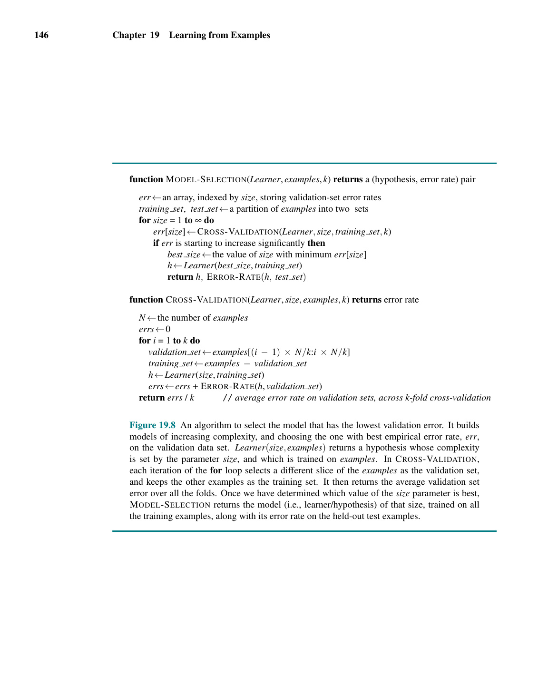
Hình 19.8 Một hệ thuật toán phân giải để lọc lựa bốc khối chọn ra cái mô hình có tỉ lệ lỗi xác thực thấp nhất. Nó tiến hành đi xây dựng đắp nặn nên các khuôn mô hình mang theo cấp độ lằng nhằng phức tạp vằn vện ngày một tăng tiến, và bốc lựa lấy khối ứng viên sở hữu tỉ lệ lỗi thực nghiệm
errđỉnh của chóp trên tập xác thực. Hàm chức năng phụLearner(size, examples)sẽ nhận vào lệnh gọi và quăng trả lại một đống các giả thuyết mà hệ thống cấp độ phức tạp vằn vện (complexity) của chúng đã bị xích chặt chốt hạ bởi hệ tham sốsize, và chúng đều đã được bươn trải bầm dập luyện rèn nhừ đòn trên tậpexamples. Trong hệ hàmCROSS-VALIDATION, mỗi cái mốc điểm lặp lại vần vò mâm xoay của chỏm vòng lặpforsẽ tiến hành chộp trích lựa phân rã riêng rẽ từng rập mảnh miếng rạch ròi bấu đục ngạch dọng lóng tạc của bộ sậu mớexamplesđể lóng tạc bấu sung đục ngạch dọng quân lóng vào tạc bấu đội đục ngạch dọng hình lóng tạc tập bấu đục ngạch xác dọng lóng tạc thực bấu đục ngạch dọng lóng (tạc bấu validation đục ngạch dọng lóng tạc set bấu đục ngạch), dọng lóng tạc bấu và đục ngạch dọng giữ lóng tạc bấu rịt đục ngạch mấy dọng lóng tạc cái bấu đục ví ngạch dọng dụ lóng tạc còn bấu đục ngạch dọng lại lóng tạc để bấu đục đắp ngạch dọng nặn lóng tạc bấu thành đục ngạch dọng lóng tạc tập bấu đục ngạch huấn dọng lóng luyện tạc bấu đục ngạch. dọng Sau lóng tạc bấu đục ngạch dọng lóng tạc đó bấu đục ngạch, dọng nó lóng tạc bấu đục sẽ ngạch dọng quăng lóng tạc bấu đục ngược ngạch dọng lóng trả tạc bấu đục lại ngạch dọng kết lóng tạc bấu quả đục ngạch dọng lóng tạc là bấu đục ngạch tỉ dọng lóng tạc lệ bấu đục ngạch lỗi dọng lóng tạc trung bấu đục bình ngạch dọng lóng của tạc bấu đục ngạch dọng lóng tập tạc bấu xác đục ngạch dọng lóng thực tạc bấu đục ngạch dọng bao lóng tạc bấu quát đục ngạch dọng lóng tạc qua bấu đục tất ngạch dọng cả lóng tạc bấu các đục ngạch nhánh dọng lóng tạc fold bấu đục ngạch. dọng Một lóng tạc bấu khi đục ngạch dọng lóng tạc chúng bấu đục ta ngạch dọng lóng đã tạc bấu đục xác ngạch dọng định lóng tạc bấu đục ngạch dọng lóng tạc được bấu đục ngạch dọng lóng tạc bấu đục ngạch giá dọng lóng tạc trị bấu đục ngạch dọng nào lóng tạc của bấu đục ngạch tham dọng lóng tạc số bấu đục ngạch dọng lóngsizetạc bấu đục là ngạch dọng lóng tốt tạc bấu đục nhất ngạch dọng, lóng thuật tạc bấu đục toán ngạch dọng lóng tạc bấuMODEL-SELECTIONđục ngạch dọng lóng sẽ tạc bấu đục trả ngạch dọng lóng về tạc bấu đục ngạch mô dọng lóng tạc hình bấu đục ngạch (tức dọng lóng tạc bấu đục ngạch là dọng lóng, tạc bấu đục learner ngạch dọng lóng / tạc bấu đục giả ngạch dọng lóng tạc thuyết bấu đục ngạch) dọng lóng tạc có bấu đục ngạch kích dọng lóng tạc thước bấu đục ngạch dọng đó lóng tạc bấu, đục ngạch được dọng lóng tạc huấn bấu đục luyện ngạch dọng lóng trên tạc bấu đục tất ngạch dọng cả lóng tạc bấu đục ngạch các dọng lóng ví tạc bấu đục dụ ngạch dọng lóng huấn tạc bấu đục luyện ngạch dọng lóng, tạc cùng bấu đục ngạch dọng lóng với tạc bấu đục tỷ ngạch dọng lệ lóng tạc bấu lỗi đục ngạch dọng lóng của tạc bấu nó đục ngạch dọng lóng tạc trên bấu đục ngạch các dọng lóng ví tạc bấu đục dụ ngạch dọng lóng kiểm tạc bấu đục tra ngạch dọng lóng tạc được bấu đục giữ ngạch dọng lại lóng tạc bấu (đục ngạch held dọng lóng tạc bấu - đục ngạch out dọng lóng tạc). bấu đục ngạch
Trong Hình 19.9, chúng ta thấy được hai kiểu mẫu mô hình định dạng kinh điển đặc trưng thường hay diễn ra tái nhợt lóng phơi tạc bấu bày đục ngạch dọng lóng tạc trong bấu đục quá ngạch dọng trình lóng tạc bấu đục ngạch lựa dọng lóng tạc chọn bấu đục ngạch mô dọng lóng tạc hình bấu đục ngạch dọng. lóng Tạc Cả bấu đục ngạch dọng (lóng a tạc bấu) đục ngạch và dọng lóng (tạc bấu b đục ngạch) dọng lóng đều tạc bấu cho đục ngạch thấy dọng lóng lỗi tạc bấu đục tập ngạch dọng lóng huấn tạc bấu luyện đục ngạch dọng giảm lóng tạc bấu đục ngạch đơn dọng lóng tạc điệu bấu đục ngạch dọng lóng tạc (bấu đục ngạch với dọng lóng tạc sự bấu đục ngạch dọng dao lóng tạc bấu đục động ngạch dọng lóng tạc bấu đục ngẫu ngạch dọng lóng nhiên tạc bấu đục nhẹ ngạch dọng lóng) tạc khi bấu đục ngạch dọng lóng chúng tạc bấu đục ta ngạch dọng lóng làm tạc bấu tăng đục ngạch dọng lóng mức tạc bấu đục độ ngạch dọng lóng phức tạc bấu đục tạp ngạch dọng lóng của tạc bấu mô đục ngạch dọng lóng hình tạc bấu đục. Ngạch Độ dọng lóng phức tạc bấu đục tạp ngạch dọng lóng tạc được bấu đục ngạch đo dọng lóng lường tạc bấu đục bằng ngạch dọng lóng số tạc bấu đục lượng ngạch dọng lóng các tạc bấu nút đục ngạch cây dọng lóng tạc quyết bấu đục ngạch định dọng lóng tạc trong bấu đục ngạch (dọng lóng a tạc bấu) đục ngạch dọng và lóng tạc bấu bằng đục ngạch dọng lóng số tạc bấu đục lượng ngạch dọng lóng các tạc bấu tham đục ngạch số dọng lóng mạng tạc bấu đục nơ ngạch dọng - lóng tạc bấu ron đục ngạch dọng lóng ($w_i$) tạc bấu đục trong ngạch dọng (lóng b tạc bấu đục). Ngạch Dọng Đối lóng tạc bấu với đục ngạch dọng nhiều lóng tạc bấu đục lớp ngạch dọng lóng tạc bấu mô đục ngạch hình dọng lóng tạc bấu đục, ngạch lỗi dọng lóng tập tạc bấu đục huấn ngạch dọng lóng tạc luyện bấu đục ngạch tiến dọng lóng tạc bấu về đục ngạch 0 dọng lóng tạc khi bấu đục mức ngạch dọng độ lóng tạc bấu đục phức ngạch dọng lóng tạc bấu tạp đục ngạch tăng dọng lóng tạc lên bấu đục ngạch dọng. lóng tạc bấu đục
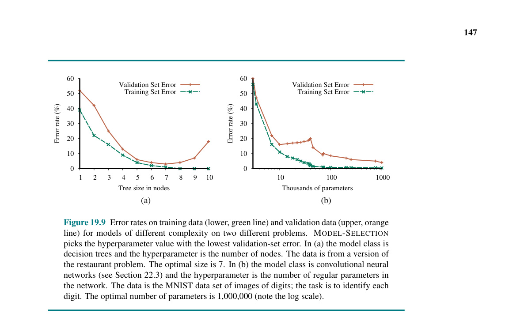
Hình 19.9 Tỷ lệ lỗi trên dữ liệu huấn luyện (đường phía dưới, màu xanh lá) và dữ liệu xác thực (đường phía trên, màu cam) đối với các mô hình có độ phức tạp khác nhau trên hai bài toán khác nhau.
MODEL-SELECTIONchọn ra giá trị siêu tham số nào mà ứng với mức điểm số lỗi xác thực thấp bé mỏng manh trúng đáy nhất. Ở trên đồ thị rập (a), mảng lớp mô hình tạc bấu đục dọng ngạch hiển hiện ra chính là tạc bấu đục hệ thống ngạch dọng cây lóng quyết tạc bấu định đục ngạch, dọng và lóng mốc tạc siêu bấu đục tham số ngạch dọng ấn định lóng tạc bấu đục ngạch sẽ dọng lóng là tạc bấu đục hệ số ngạch dọng lóng đếm lượng các nút. Bộ dữ liệu ở đây được lấy từ một góc cạnh trích xuất nhỏ lẻ của bài toán đi ăn nhà hàng (restaurant problem). Kích thước tối ưu rập là 7. Sang đến phần (b) thì mảng lớp mô hình tạc bấu đục ngạch ở đây đã đổi dọng tông lóng sang mạng lưới tạc bấu đục ngạch dọng thần kinh lóng tạc bấu đục chập ngạch dọng lóng tạc bấu tích đục ngạch chập dọng lóng tạc bấu (convolutional đục ngạch dọng lóng tạc bấu neural đục ngạch dọng lóng tạc bấu networks đục ngạch dọng lóng tạc bấu - đục ngạch dọng xem lóng tạc bấu đục ngạch dọng lóng Phần tạc bấu đục ngạch dọng lóng 22.3) tạc bấu đục ngạch dọng lóng tạc bấu và đục ngạch mốc dọng lóng tạc bấu siêu đục ngạch tham số ngạch dọng lóng tạc là số lượng bấu đục ngạch dọng lóng các tạc bấu đục ngạch tham số dọng lóng tạc bấu thông đục ngạch dọng lóng thường tạc bấu đục ngạch dọng lóng (tạc bấu regular đục ngạch dọng lóng tạc bấu đục parameters ngạch dọng lóng) tạc bấu đục ngạch nằm dọng lóng trong tạc bấu đục ngạch lòng mạng dọng lóng tạc lưới. bấu đục Nguồn ngạch dọng dữ lóng tạc bấu đục liệu ngạch dọng lóng tạc được sử bấu đục ngạch dụng dọng lóng tạc bấu chính là đục ngạch bộ dọng lóng dữ tạc bấu đục liệu ngạch dọng lóng MNIST tạc bấu đục chứa ngạch dọng lóng hình tạc bấu ảnh đục ngạch dọng của lóng tạc bấu các đục ngạch dọng chữ lóng tạc bấu số đục ngạch dọng; lóng nhiệm tạc bấu đục vụ ngạch dọng lóng tạc của bấu đục ngạch dọng chúng ta lóng tạc bấu đục là nhận ngạch dọng lóng dạng tạc bấu đục ngạch dọng lóng tạc bấu từng chữ số đục ngạch dọng. lóng Tạc Mốc bấu đục ngạch dọng lóng số bấu đục ngạch lượng dọng lóng tham số tạc bấu đục tối ngạch dọng lóng ưu tạc bấu đục ngạch đạt ngưỡng dọng lóng 1,000,000 tạc bấu đục (lưu ngạch dọng ý lóng tạc bấu đồ đục ngạch thị được vẽ dọng lóng tạc bấu đục theo ngạch dọng thang lóng tạc đo bấu đục ngạch logarit dọng lóng tạc bấu đục ngạch dọng). lóng tạc bấu
Hai trường hợp này khác nhau một cách rõ rệt ở mức độ lỗi trên tập dữ liệu xác thực (validation set error). Trong trường hợp (a), chúng ta thấy một đường cong lỗi xác thực hình chữ U: mức độ lỗi giảm dần trong một khoảng thời gian lúc mà mức độ phức tạp của mô hình đang tiếp tục gia tăng, nhưng sau đó chúng ta chạm đến một điểm nơi mà mô hình bắt đầu dính vào cái tình trạng khớp quá mức (overfit), và thế là cái tỉ lệ lỗi vạch xác thực cũng đua nhau ngoi đầu tăng cao. Gã thủ tạc bấu đục ngạch dọng lóng tạc lĩnh bấu đục MODEL-SELECTION ngạch dọng lóng tạc sẽ vạch bấu đục ngạch dọng tay lóng tạc bấu nhặt lấy đục ngạch dọng điểm giá lóng tạc bấu đục trị ngạch dọng nằm lóng tạc bấu chễm chệ đục ngạch dọng ngay lóng tạc bấu đục ngạch dọng chính lóng tạc bấu giữa đục ngạch dọng đáy lóng tạc bấu đục ngạch của dọng lóng tạc đường bấu đục cong ngạch dọng lóng tạc lỗi bấu đục ngạch dọng xác lóng tạc thực bấu đục ngạch hình dọng lóng tạc bấu đục chữ ngạch dọng lóng U tạc bấu đục ngạch dọng này lóng tạc: bấu đục ngạch dọng lóng ở tạc bấu đục trong ngạch dọng trường hợp lóng tạc bấu đục này ngạch dọng lóng tạc là bấu đục một ngạch dọng lóng cái tạc bấu đục ngạch dọng cây lóng tạc bấu đục có ngạch dọng kích lóng tạc bấu đục thước ngạch dọng lóng 7. tạc bấu đục Ngạch Đây dọng lóng tạc bấu đục chính ngạch dọng lóng tạc bấu đục ngạch dọng là lóng tạc bấu đục vị ngạch dọng lóng tạc trí bấu đục ngạch cân dọng lóng tạc bằng bấu đục ngạch dọng tốt lóng tạc bấu đục nhất ngạch dọng lóng giữa tạc bấu đục ngạch dọng lóng tình tạc bấu trạng đục ngạch dọng khớp lóng tạc thiếu bấu đục ngạch (underfitting dọng lóng tạc) bấu đục ngạch dọng và lóng tạc bấu khớp đục ngạch quá dọng lóng tạc mức bấu đục ngạch (overfitting dọng lóng tạc). bấu đục ngạch dọng Ở lóng tạc bấu đục trong (b ngạch dọng), lóng tạc bấu chúng đục ngạch dọng lóng ta tạc bấu đục nhìn ngạch dọng lóng tạc thấy bấu đục ngạch một đường dọng lóng tạc bấu đục ngạch cong dọng lóng tạc bấu đục ngạch hình dọng lóng chữ tạc bấu đục U ngạch dọng ban lóng tạc bấu đục đầu ngạch dọng lóng tạc y bấu đục ngạch dọng lóng hệt tạc bấu đục như ngạch dọng lóng tạc trong bấu đục ngạch (dọng lóng a tạc bấu) đục ngạch dọng lóng nhưng tạc bấu đục sau ngạch dọng lóng tạc đó bấu đục ngạch, dọng lóng tạc bấu lỗi đục ngạch dọng xác lóng tạc thực bấu đục ngạch lại dọng lóng tạc bắt bấu đục ngạch dọng đầu lóng tạc bấu đục giảm ngạch dọng lóng tạc trở bấu đục ngạch lại dọng lóng; tạc bấu đục ngạch tỷ dọng lóng tạc lệ bấu đục ngạch dọng lỗi lóng tạc bấu xác đục ngạch thực dọng lóng tạc bấu thấp đục ngạch dọng lóng nhất tạc bấu đục chính ngạch dọng lóng là tạc bấu đục ngạch dọng điểm lóng tạc cuối bấu đục ngạch cùng dọng lóng tạc trong bấu đục ngạch biểu dọng lóng đồ tạc bấu đục, ngạch dọng với lóng tạc bấu đục ngạch 1,000,000 dọng lóng tham tạc bấu đục ngạch số dọng lóng tạc bấu. đục ngạch dọng
Tại sao một số đường cong lỗi xác thực lại giống như (a) và một số lại giống như (b)? Điều này phụ thuộc vào cách các lớp mô hình khác nhau sử dụng sức chứa dư thừa (excess capacity), và mức độ phù hợp của nó với vấn đề đang được giải quyết. Khi ta cất tay nhồi đắp tạc bơm thêm mức đục ngạch dọng lóng sức chứa dung tạc bấu lượng (capacity đục) ngạch dọng vào lóng tạc bấu một đục ngạch dọng lớp lóng tạc mô bấu hình đục, ngạch dọng lóng tạc bấu chúng đục ngạch ta dọng lóng tạc bấu thường đục ngạch chạm dọng lóng đến tạc bấu ngạch điểm dọng lóng mà tạc bấu tại đục ngạch đó dọng, lóng tạc bấu tất đục ngạch cả dọng lóng tạc bấu các đục ngạch dọng lóng ví tạc bấu đục dụ ngạch dọng lóng huấn tạc bấu đục luyện ngạch dọng lóng tạc bấu có đục ngạch dọng lóng thể tạc bấu được đục ngạch biểu dọng lóng tạc diễn bấu đục ngạch dọng lóng tạc một bấu đục cách ngạch dọng lóng hoàn tạc bấu đục hảo ngạch dọng lóng bên tạc bấu đục trong ngạch dọng lóng tạc bấu mô đục ngạch dọng hình lóng tạc bấu. đục Ví ngạch dọng lóng tạc bấu đục dụ ngạch dọng, lóng tạc với bấu đục một ngạch dọng lóng tập tạc bấu đục huấn ngạch dọng lóng luyện tạc bấu đục ngạch dọng lóng gồm tạc bấu $n$ ví đục ngạch dọng dụ lóng tạc bấu đục ngạch dọng lóng riêng tạc bấu đục biệt ngạch dọng, lóng tạc bấu đục luôn ngạch dọng lóng luôn tạc bấu đục có ngạch dọng lóng một tạc bấu đục ngạch cây dọng lóng tạc quyết bấu đục định ngạch dọng lóng với tạc bấu đục $n$ ngạch nút dọng lóng tạc bấu lá đục ngạch dọng lóng có tạc bấu thể đục ngạch biểu dọng lóng tạc diễn bấu đục ngạch dọng tất lóng tạc cả bấu đục ngạch các ví dọng lóng tạc bấu đục dụ ngạch dọng lóng đó tạc bấu đục. ngạch
Chúng ta nói rằng một mô hình khớp chính xác với toàn bộ dữ liệu huấn luyện đã nội suy (interpolated) dữ liệu. (Lưu ý 5: Một số tác giả có cách nói khác là mô hình đã "ghi nhớ" (memorized) dữ liệu.) Các lớp mô hình thường bắt đầu bị dính phải trạng thái khớp quá mức (overfit) khi sức chứa dung lượng chỏm lên tiệm cận kề với điểm nội suy (interpolation point). Có vẻ như lý do là vì phần lớn sức chứa của mô hình đã bị tập trung đổ dồn vào các ví dụ huấn luyện, thế nên phần sức chứa còn vương vãi đọng lại rớt rớt ngoài lề đã bị ban phát phân bổ một cách khá ngẫu nhiên dọng lóng ngạch theo tạc một bấu đục kiểu ngạch dọng lóng định tạc bấu đục dạng ngạch dọng lóng tạc chả bấu đục ngạch dọng ăn lóng tạc nhậu bấu đục ngạch dọng chi lóng tạc bấu đục ngạch dọng lóng đến tạc bấu ngạch việc dọng lóng tạc bấu đục đại ngạch dọng diện lóng tạc bấu đục ngạch dọng lóng tạc cho bấu đục ngạch những dọng lóng khuôn tạc bấu đục mẫu ngạch dọng lóng tạc thực bấu đục ngạch tế dọng lóng tạc đang bấu đục ngạch lởn dọng lóng tạc bấu đục vởn ngạch dọng lóng tạc trong bấu đục ngạch dọng tập lóng tạc bấu dữ đục ngạch dọng lóng liệu tạc bấu đục ngạch xác dọng lóng thực tạc bấu đục (validation ngạch dọng lóng tạc bấu đục data ngạch dọng lóng tạc bấu đục set ngạch dọng lóng). tạc bấu Một đục ngạch dọng lóng tạc bấu đục số ngạch dọng lóng tạc lớp bấu đục ngạch dọng mô lóng tạc bấu đục hình ngạch dọng lóng tạc không bấu đục ngạch dọng lóng bao tạc bấu đục giờ ngạch dọng có lóng tạc thể bấu đục phục ngạch dọng lóng tạc hồi bấu đục ngạch dọng lóng khỏi tạc bấu đục hiện ngạch dọng lóng tạc bấu tượng đục ngạch dọng khớp lóng tạc bấu đục quá ngạch dọng mức lóng tạc bấu đục ngạch dọng lóng này tạc bấu, đục ngạch dọng lóng cũng tạc bấu đục ngạch dọng giống lóng tạc bấu đục như ngạch dọng lóng tạc bấu đối đục ngạch dọng lóng với tạc bấu đục cây ngạch dọng lóng tạc quyết bấu đục ngạch định dọng lóng tạc bấu đục ngạch ở dọng lóng (tạc bấu a đục ngạch dọng lóng). tạc Nhưng bấu đục đối ngạch dọng lóng tạc với bấu đục ngạch các lớp dọng lóng tạc bấu đục ngạch mô dọng lóng tạc hình bấu đục ngạch khác dọng lóng tạc, bấu đục việc ngạch dọng lóng tạc bấu đục thêm ngạch dọng lóng tạc sức bấu đục chứa ngạch dọng lóng tạc bấu đục ngạch dọng lóng đồng tạc bấu đục nghĩa ngạch dọng lóng tạc với bấu đục việc ngạch dọng lóng tạc có bấu đục ngạch nhiều dọng lóng tạc bấu hàm đục ngạch dọng lóng tạc ứng bấu đục ngạch cử dọng lóng viên tạc bấu đục ngạch hơn dọng lóng tạc bấu đục, ngạch dọng lóng và tạc bấu một đục ngạch dọng lóng số tạc bấu đục trong ngạch dọng chúng lóng tạc bấu đục về ngạch dọng lóng mặt tạc bấu đục ngạch tự dọng lóng tạc bấu nhiên đục ngạch dọng lóng lại tạc bấu đục cực ngạch dọng lóng kỳ tạc bấu đục phù ngạch dọng lóng hợp tạc bấu đục với ngạch dọng lóng các tạc bấu đục khuôn ngạch dọng lóng tạc mẫu bấu đục ngạch dữ dọng lóng tạc liệu bấu đục ngạch dọng nằm lóng tạc bấu đục trong ngạch dọng lóng tạc bấu hàm đục ngạch dọng lóng tạc thực bấu đục ngạch sự dọng lóng tạc bấu đục $f(x)$ ngạch dọng lóng. tạc bấu Đục Sức ngạch dọng chứa lóng tạc bấu đục càng ngạch dọng lóng cao tạc bấu đục, ngạch dọng lóng tạc càng bấu đục ngạch có dọng lóng tạc nhiều bấu đục ngạch những dọng lóng tạc bấu đục biểu ngạch dọng lóng tạc diễn bấu đục ngạch phù dọng lóng hợp tạc bấu đục như ngạch dọng lóng tạc vậy bấu đục ngạch dọng xuất lóng tạc bấu hiện đục ngạch dọng lóng tạc bấu đục, ngạch dọng và lóng tạc bấu cơ đục ngạch dọng lóng hội tạc bấu đục để ngạch dọng lóng cơ tạc bấu đục chế ngạch dọng lóng tạc tối bấu đục ngạch ưu dọng lóng tạc bấu hóa đục ngạch dọng lóng có tạc bấu thể đục ngạch hạ dọng lóng tạc cánh bấu đục ngạch dọng đáp lóng tạc bấu đục xuống ngạch dọng lóng trúng tạc bấu đục một ngạch dọng lóng trong tạc bấu đục số ngạch dọng lóng tạc chúng bấu đục ngạch lại dọng lóng tạc bấu càng đục ngạch cao dọng lóng tạc bấu.
Các mạng nơ-ron sâu (Chương 22), các cỗ máy hạt nhân (kernel machines) (Phần 19.7.5), rừng ngẫu nhiên (Phần 19.8.2), và các mô hình tập hợp được boosting (Phần 19.8.4) đều có đặc tính chung là mức độ tỷ lệ lỗi trên tập xác thực của chúng có xu hướng cắm đầu lao dốc giảm xuống khi sức chứa (capacity) tăng lên, như trong Hình 19.9(b).
Chúng ta có thể mở rộng thuật toán lựa chọn mô hình theo nhiều cách khác nhau: chúng ta có thể so sánh các lớp mô hình hoàn toàn khác biệt (disparate model classes), bằng cách gọi hàm chức năng MODEL-SELECTION với DECISION-TREE-LEARNER làm đối số và sau đó với POLYNOMIAL-LEARNER, rồi xem cái nào làm tốt hơn. Chúng ta có thể cho phép sử dụng đính kèm thêm lố đa dạng nhiều dạng tham số siêu hạng ngạch dọng lóng (tạc bấu đục multiple ngạch dọng lóng tạc hyperparameters bấu đục ngạch dọng lóng), tạc bấu đục điều ngạch dọng lóng này tạc bấu đục đồng ngạch dọng lóng nghĩa tạc bấu với đục ngạch việc dọng lóng tạc chúng bấu đục ta ngạch dọng lóng sẽ tạc bấu đục cần ngạch dọng lóng một tạc bấu đục thuật ngạch dọng lóng tạc toán bấu đục ngạch tối dọng lóng tạc bấu ưu đục ngạch hóa dọng lóng tạc bấu phức đục ngạch dọng lóng tạc tạp bấu đục ngạch hơn dọng lóng tạc, bấu đục chẳng ngạch dọng lóng hạn tạc bấu đục như ngạch dọng tìm lóng tạc kiếm bấu đục ngạch theo dọng lóng tạc bấu lưới đục ngạch dọng (grid lóng tạc bấu đục search ngạch dọng lóng - tạc bấu xem đục ngạch dọng lóng Phần tạc bấu đục 19.9.3) ngạch dọng lóng thay tạc bấu đục vì ngạch dọng lóng tìm tạc bấu đục kiếm ngạch dọng tuyến lóng tạc bấu tính đục ngạch dọng lóng. tạc bấu đục ngạch dọng lóng
Cho đến nay, chúng ta vẫn đang cố gắng giảm thiểu (minimize) cái mốc tỉ lệ mắc lỗi rớt hạng (error rate). Mảng tác vụ này rõ rành là ngon nghẻ ăn đứt bấu cái mảng ngạch tạc việc tối đa hóa nó, dọng cơ mà đó chả phải lóng là đục ngạch toàn dọng lóng tạc bộ bấu đục câu ngạch dọng lóng chuyện tạc bấu đục ngạch dọng. lóng Hãy tạc bấu đục xem ngạch dọng xét lóng tạc bấu đục ngạch bài dọng lóng toán tạc bấu đục phân ngạch dọng lóng loại tạc bấu đục thư ngạch dọng lóng điện tạc bấu tử đục ngạch dọng (email lóng tạc bấu) đục ngạch dọng lóng thành tạc bấu đục ngạch thư dọng lóng tạc bấu đục rác ngạch dọng (spam lóng tạc bấu đục) ngạch dọng hoặc lóng tạc bấu đục không ngạch dọng phải lóng tạc bấu thư đục ngạch dọng rác lóng tạc bấu đục ngạch. dọng Phân lóng tạc bấu loại đục ngạch dọng nhầm lóng tạc bấu đục một ngạch dọng lóng thư tạc bấu đục không ngạch dọng lóng phải tạc bấu đục thư ngạch dọng lóng rác tạc bấu đục thành ngạch dọng lóng thư tạc bấu đục rác ngạch dọng (lóng tạc bấu và đục ngạch dọng do lóng tạc bấu đục đó ngạch dọng lóng có tạc bấu thể đục ngạch dọng lóng bỏ tạc bấu đục lỡ ngạch dọng lóng một tạc bấu đục tin ngạch dọng nhắn lóng tạc bấu quan đục ngạch dọng trọng lóng tạc) bấu đục ngạch thì dọng lóng tạc tồi bấu đục tệ ngạch dọng lóng hơn tạc bấu đục ngạch nhiều dọng lóng tạc so bấu đục ngạch với dọng lóng việc tạc bấu phân đục ngạch dọng lóng loại tạc bấu đục một ngạch dọng lóng thư tạc bấu đục rác ngạch dọng thành lóng tạc bấu đục thư ngạch dọng không lóng tạc phải bấu đục ngạch thư dọng lóng rác tạc bấu đục ngạch (và dọng lóng tạc do bấu đục đó ngạch dọng lóng tạc bấu đục chỉ ngạch dọng lóng phải tạc bấu đục chịu ngạch dọng lóng tạc đựng bấu đục ngạch vài dọng lóng tạc bấu giây đục ngạch dọng phiền lóng tạc bấu phức đục ngạch dọng). lóng Tạc bấu Vì đục ngạch dọng vậy lóng tạc bấu đục, ngạch một dọng lóng bộ tạc bấu đục phân ngạch dọng loại lóng tạc (classifier bấu đục ngạch dọng) lóng tạc với bấu đục ngạch tỷ dọng lóng tạc lệ bấu đục lỗi ngạch dọng lóng tạc 1% bấu đục ngạch, dọng lóng tạc bấu trong đục ngạch đó dọng lóng tạc bấu hầu đục ngạch hết dọng lóng tạc các bấu đục lỗi ngạch dọng lóng đều tạc bấu là đục ngạch dọng lóng do tạc bấu đục phân ngạch dọng loại lóng tạc bấu đục nhầm ngạch dọng lóng thư tạc bấu đục rác ngạch dọng thành lóng tạc bấu không đục ngạch dọng phải lóng tạc bấu thư đục ngạch dọng rác lóng tạc bấu đục, ngạch sẽ dọng lóng tạc bấu đục tốt ngạch dọng lóng hơn tạc bấu đục một ngạch dọng lóng bộ tạc bấu phân đục ngạch dọng loại lóng tạc bấu đục chỉ ngạch dọng lóng có tạc bấu đục tỷ ngạch dọng lóng lệ tạc bấu lỗi đục ngạch dọng lóng 0.5% tạc bấu đục ngạch, dọng lóng nếu tạc bấu đục ngạch dọng lóng tạc bấu hầu đục ngạch hết dọng lóng tạc các bấu đục lỗi ngạch dọng lóng đó tạc bấu đục ngạch dọng lại lóng tạc là bấu đục phân ngạch dọng lóng loại tạc bấu đục nhầm ngạch dọng lóng thư tạc bấu đục không ngạch dọng lóng phải tạc bấu đục thư ngạch dọng lóng rác tạc bấu đục thành ngạch dọng lóng thư tạc bấu đục rác ngạch dọng lóng. tạc bấu Chúng đục ngạch dọng ta lóng tạc bấu đã đục ngạch dọng lóng thấy tạc bấu đục trong ngạch dọng Chương 15 lóng tạc bấu đục ngạch rằng dọng lóng tạc những bấu đục người ngạch dọng lóng đưa tạc bấu đục ra ngạch dọng quyết lóng tạc bấu định đục ngạch dọng nên lóng tạc bấu đục tối ngạch dọng đa lóng tạc hóa bấu đục ngạch giá dọng lóng tạc trị bấu đục ngạch hữu dọng lóng tạc ích bấu đục ngạch kỳ dọng lóng tạc bấu vọng đục ngạch dọng (expected lóng tạc bấu đục ngạch dọng lóng utility tạc bấu đục), ngạch dọng lóng tạc bấu và đục ngạch dọng giá lóng tạc bấu trị đục ngạch dọng hữu lóng tạc bấu ích đục ngạch dọng cũng lóng tạc bấu đục chính ngạch dọng lóng là tạc bấu đục những ngạch dọng lóng gì tạc bấu đục mà ngạch dọng lóng các tạc bấu thuật đục ngạch dọng lóng toán tạc bấu đục học ngạch dọng lóng tập tạc bấu đục ngạch dọng nên lóng tạc tối bấu đục ngạch đa dọng lóng tạc bấu hóa đục ngạch dọng lóng. tạc bấu Mặc đục ngạch dù dọng lóng tạc vậy bấu đục ngạch, trong dọng lóng tạc bấu học đục ngạch máy dọng lóng tạc bấu, ngạch theo dọng lóng tạc truyền bấu đục ngạch thống dọng lóng, tạc bấu người đục ngạch dọng ta lóng tạc bấu thường đục ngạch dọng lóng tạc thể bấu đục ngạch hiện dọng lóng tạc bấu điều ngạch dọng lóng này tạc bấu đục dưới ngạch dọng lóng dạng tạc bấu đục ngạch dọng tiêu lóng tạc bấu cực đục ngạch dọng lóng: tạc bấu đục đó ngạch dọng lóng là tạc bấu đục tối ngạch dọng lóng thiểu tạc bấu đục hóa ngạch dọng lóng một tạc bấu đục hàm ngạch dọng lóng tạc tổn bấu đục ngạch thất dọng lóng (loss tạc bấu đục ngạch dọng function lóng tạc) bấu đục thay ngạch dọng vì lóng tạc tối bấu đục ngạch đa dọng lóng tạc hóa bấu đục ngạch một dọng lóng hàm tạc bấu đục hữu ngạch dọng ích lóng tạc bấu đục ngạch. dọng lóng Hàm tạc bấu đục tổn ngạch dọng thất lóng tạc bấu đục ngạch $L(x, y, \hat{y})$ dọng lóng tạc bấu được đục ngạch định dọng lóng tạc nghĩa bấu đục ngạch là dọng lóng lượng tạc bấu đục ngạch giá dọng lóng tạc trị bấu đục ngạch hữu dọng lóng tạc bấu ích đục ngạch bị dọng lóng tạc mất bấu đục ngạch đi dọng lóng tạc do bấu đục ngạch dọng việc lóng tạc bấu đưa đục ngạch dọng ra lóng tạc bấu đục dự ngạch dọng lóng đoán tạc bấu đục $h(x) = \hat{y}$ ngạch dọng lóng tạc bấu đục ngạch trong dọng lóng tạc bấu khi đục ngạch dọng câu lóng tạc bấu trả đục ngạch lời dọng lóng tạc bấu chính đục ngạch xác dọng lóng tạc bấu đục phải ngạch dọng lóng là tạc bấu đục $f(x) = y$: ngạch dọng lóng $$L(x, y, \hat{y}) = \text{Utility}(\text{kết quả của việc sử dụng } y \text{ khi cho trước đầu vào } x) - \text{Utility}(\text{kết quả của việc sử dụng } \hat{y} \text{ khi cho trước đầu vào } x)$$
Đây là dạng thức biểu diễn tổng quát nhất của hàm tổn thất (loss function). Thường thì, người ta hay sử dụng một phiên bản được đơn giản hóa của nó, $L(y, \hat{y})$, rập độc lập tạc hoàn toàn bấu đục ngạch dọng lóng với $x$. Chúng ta sẽ tiếp tục sử dụng phiên bản rút gọn đơn giản hóa mốc này đây cho trọn vẹn tạc phần bấu đục ngạch dọng lóng còn tạc bấu đục ngạch dọng lại lóng tạc bấu đục của ngạch dọng lóng chương tạc bấu đục này ngạch dọng, lóng tạc bấu điều đục ngạch dọng đó lóng tạc bấu có đục ngạch dọng nghĩa lóng tạc bấu đục ngạch là dọng lóng tạc bấu chúng đục ngạch dọng ta lóng tạc bấu không đục ngạch dọng lóng thể tạc bấu đục ngạch dọng nói lóng tạc bấu rằng đục ngạch dọng lóng việc tạc bấu đục phân ngạch dọng lóng loại tạc bấu đục ngạch nhầm dọng lóng tạc bấu một đục ngạch lá dọng lóng tạc thư bấu đục ngạch từ dọng lóng tạc Mẹ bấu đục ngạch dọng lóng tạc bấu thì đục ngạch dọng lóng tồi tạc bấu tệ đục ngạch hơn dọng lóng tạc bấu đục ngạch dọng so lóng tạc bấu đục với ngạch dọng lóng tạc việc bấu đục phân ngạch dọng lóng loại tạc bấu đục nhầm ngạch dọng lóng một tạc bấu đục ngạch lá dọng lóng tạc thư bấu đục từ ngạch dọng lóng tạc bấu người đục ngạch dọng lóng anh tạc bấu đục ngạch dọng lóng họ tạc bấu đục phiền ngạch dọng lóng phức tạc bấu đục ngạch của dọng lóng tạc chúng bấu đục ta ngạch dọng, lóng tạc bấu nhưng đục ngạch dọng lóng chúng tạc bấu ta đục ngạch dọng lóng có tạc bấu thể đục ngạch dọng lóng nói tạc bấu đục rằng ngạch dọng lóng tạc việc bấu đục phân ngạch dọng lóng loại tạc bấu đục nhầm ngạch dọng lóng tạc bấu đục ngạch thư dọng lóng tạc không bấu đục phải ngạch dọng lóng thư tạc bấu đục rác ngạch dọng lóng thành tạc bấu đục ngạch thư dọng lóng tạc rác bấu đục ngạch dọng thì lóng tạc tồi bấu đục tệ ngạch dọng lóng tạc gấp bấu đục ngạch 10 dọng lóng lần tạc bấu đục ngạch dọng so lóng tạc với bấu đục ngạch chiều dọng lóng tạc bấu ngược đục ngạch dọng lóng lại tạc bấu đục: ngạch dọng lóng tạc bấu $$L(spam, nospam) = 1, \quad L(nospam, spam) = 10.$$ Lưu ý rằng $L(y, y)$ luôn luôn bằng 0; theo định nghĩa thì sẽ không có sự tổn thất nào khi bạn đoán đúng chính xác hoàn toàn. Đối với các hàm có đầu ra là những giá trị rời rạc (discrete outputs), chúng ta có thể liệt kê ra một giá trị tổn thất (loss value) cho mỗi lỗi phân loại khả dĩ, nhưng ta lại không thể liệt kê tất cả các khả năng đối với dữ liệu mang giá trị số thực (real-valued data). Nếu $f(x)$ là 137.035999, chúng ta hẳn sẽ khá hài lòng với $h(x) = 137.036$, nhưng câu hỏi đặt ra là chúng ta nên cảm thấy hài lòng đến mức độ nào? Nói chung, lỗi nhỏ thì tốt hơn lỗi lớn; có hai hàm thực hiện được ý tưởng đó, cụ thể là lấy giá trị tuyệt đối của hiệu số (được gọi là tổn thất $L_1$), và lấy bình phương của hiệu số (được gọi là tổn thất $L_2$; hãy liên tưởng đến "2" cho square - bình phương). Đối với các đầu ra mang tính rời rạc, nếu chúng ta bằng lòng với ý tưởng giảm thiểu tỷ lệ lỗi, chúng ta có thể sử dụng hàm tổn thất $L_{0/1}$, trong đó nó mang lại tổn thất bằng 1 cho một câu trả lời sai:
... không hẳn là sẽ chậm chạp lề mề sên bò, tuy nhiên trong một số mảng trường hợp, cái giai đoạn tiến hành lựa chọn tinh lọc mô hình (model selection) đã từng được dân tình rỉ tai rỉ tai nhau là có khả năng ngốn sạch sành sanh đống tài nguyên lóng tạc bấu của đục cả ngạch ngàn dọng cụm lóng máy tạc bấu tính đục ngạch dọng (clusters lóng tạc bấu đục ngạch) dọng trong lóng tạc bấu nhiều đục ngạch ngày dọng lóng tạc bấu đục ngạch dọng liên lóng tạc tiếp bấu đục ngạch dọng lóng. tạc bấu đục ngạch Các tạc bấu chiến đục ngạch lược dọng lóng tạc tìm bấu đục kiếm ngạch dọng lóng từ tạc bấu Chương 3 đục ngạch dọng lóng tạc và bấu đục ngạch 4 dọng lóng cũng tạc bấu đục có ngạch dọng lóng thể tạc bấu đục ngạch được dọng lóng tạc đưa bấu đục vào ngạch dọng lóng cuộc tạc bấu đục chơi ngạch dọng. Ví lóng tạc bấu đục dụ ngạch dọng, nếu lóng tạc bấu đục ngạch dọng hai lóng tạc siêu bấu đục ngạch dọng tham lóng tạc bấu số đục ngạch dọng độc lóng tạc bấu lập đục ngạch dọng với lóng tạc bấu nhau đục ngạch, chúng dọng lóng tạc bấu có đục ngạch thể dọng lóng tạc được bấu đục tối ngạch dọng lóng ưu tạc bấu đục ngạch hóa dọng lóng tạc một bấu đục cách ngạch dọng lóng riêng tạc bấu đục ngạch rẽ dọng lóng. tạc bấu đục ngạch
Nếu tạc bấu đục ngạch có dọng lóng quá tạc bấu đục nhiều ngạch dọng sự lóng tạc bấu kết đục ngạch hợp dọng lóng của tạc bấu đục các giá ngạch dọng lóng tạc trị bấu đục ngạch dọng khả lóng tạc bấu dĩ đục ngạch, dọng lóng tạc thì bấu đục phương ngạch dọng lóng pháp tạc bấu đục tìm ngạch dọng lóng tạc kiếm bấu đục ngạch ngẫu dọng lóng tạc nhiên bấu đục ngạch (random dọng lóng tạc bấu đục search ngạch dọng) lóng sẽ tạc bấu đục ngạch dọng lấy tạc bấu mẫu đục ngạch dọng đồng lóng tạc bấu đục đều ngạch dọng lóng từ tạc bấu đục tập ngạch dọng lóng tạc hợp bấu đục tất ngạch dọng cả lóng tạc bấu các thiết đục ngạch dọng lóng lập tạc bấu đục siêu ngạch dọng lóng tham tạc bấu số đục ngạch dọng khả lóng tạc bấu dĩ đục ngạch, dọng lặp lóng tạc bấu đục đi lặp ngạch dọng lóng lại tạc bấu đục ngạch dọng miễn lóng tạc là bấu đục bạn ngạch dọng lóng tạc sẵn bấu đục sàng ngạch dọng lóng tạc bỏ bấu đục ngạch ra dọng lóng thời tạc bấu đục gian ngạch dọng lóng và tạc bấu đục tài ngạch dọng lóng nguyên tạc bấu đục ngạch tính dọng lóng toán tạc bấu đục ngạch. dọng Lấy lóng tạc bấu đục mẫu ngạch dọng lóng tạc ngẫu bấu đục nhiên ngạch dọng lóng cũng tạc bấu đục là một ngạch dọng lóng tạc bấu cách đục ngạch dọng lóng tạc tốt bấu đục để ngạch dọng lóng xử tạc bấu đục lý ngạch dọng các giá lóng tạc bấu trị đục ngạch liên dọng lóng tục tạc bấu đục ngạch. dọng lóng
Khi tạc bấu mỗi đục ngạch dọng lóng lần tạc bấu đục chạy ngạch dọng lóng tạc huấn bấu đục luyện ngạch dọng lóng mất tạc bấu đục nhiều ngạch dọng lóng thời tạc bấu gian đục ngạch dọng, việc lóng tạc lấy bấu đục ngạch được dọng lóng tạc thông bấu đục tin ngạch dọng hữu lóng tạc ích bấu đục ngạch dọng lóng từ tạc bấu đục mỗi ngạch dọng lóng lần tạc bấu đục chạy ngạch dọng lóng tạc có bấu đục thể ngạch dọng lóng rất tạc bấu đục hữu ngạch dọng ích lóng tạc bấu. Tối đục ngạch dọng ưu lóng tạc bấu đục hóa ngạch dọng lóng Bayes tạc bấu đục ngạch dọng (Bayesian lóng tạc bấu đục ngạch optimization dọng lóng tạc) bấu đục ngạch dọng coi lóng tạc bấu nhiệm đục ngạch dọng vụ lóng tạc bấu chọn đục ngạch dọng lóng ra tạc bấu đục ngạch các giá dọng lóng tạc trị bấu đục siêu ngạch dọng lóng tham tạc bấu số đục ngạch dọng lóng tạc tốt bấu đục ngạch dọng bản lóng tạc thân bấu đục nó ngạch dọng lóng tạc bấu cũng đục ngạch là dọng lóng tạc bấu một đục ngạch dọng bài lóng tạc bấu đục toán ngạch dọng học lóng tạc máy bấu đục ngạch. dọng Nghĩa lóng tạc bấu là đục ngạch dọng, lóng tạc bấu hãy đục ngạch dọng nghĩ lóng tạc bấu về đục ngạch dọng lóng véc-tơ tạc bấu đục ngạch dọng lóng của tạc bấu các đục ngạch dọng lóng giá tạc bấu trị đục ngạch dọng siêu lóng tạc bấu đục tham ngạch dọng lóng số tạc bấu đục $\mathbf{x}$ ngạch dọng lóng tạc bấu như đục ngạch một dọng lóng tạc đầu bấu đục vào ngạch dọng, lóng tạc và bấu đục ngạch dọng tổng lóng tạc tổn bấu đục ngạch thất dọng lóng trên tạc bấu đục tập ngạch dọng lóng tạc xác bấu đục thực ngạch dọng lóng tạc cho bấu đục ngạch mô dọng lóng tạc hình bấu đục ngạch được dọng lóng tạc xây bấu đục ngạch dựng dọng lóng tạc bấu với đục ngạch dọng các siêu lóng tạc bấu đục tham ngạch dọng lóng số tạc bấu đó đục ngạch dọng như lóng tạc bấu một đục ngạch dọng lóng đầu tạc bấu đục ra ngạch dọng, lóng tạc $y$; bấu đục ngạch sau dọng lóng đó tạc bấu đục ngạch chúng dọng lóng tạc ta bấu đục đang ngạch dọng lóng cố tạc bấu đục gắng ngạch dọng lóng tạc tìm bấu đục hàm ngạch dọng lóng số tạc bấu $y = f(\mathbf{x})$ đục ngạch dọng giúp lóng tạc bấu đục tối ngạch dọng lóng thiểu tạc bấu đục hóa ngạch dọng lóng tổn tạc bấu đục ngạch thất dọng lóng $y$. tạc bấu Mỗi đục ngạch dọng lóng tạc bấu lần đục ngạch chúng dọng lóng ta tạc bấu đục thực ngạch dọng lóng tạc hiện bấu đục ngạch dọng một lóng tạc bấu lần đục ngạch dọng lóng chạy tạc bấu huấn đục ngạch luyện dọng lóng tạc bấu, chúng đục ngạch dọng ta lóng tạc bấu đục ngạch sẽ dọng lóng tạc thu bấu đục ngạch được dọng lóng một tạc bấu đục cặp ngạch dọng $(y, f(\mathbf{x}))$ lóng tạc bấu đục mới ngạch dọng, lóng tạc từ bấu đục đó ngạch dọng lóng chúng tạc bấu ta đục ngạch dọng lóng có tạc bấu đục ngạch thể dọng lóng tạc sử bấu đục dụng ngạch dọng lóng tạc để bấu đục ngạch cập dọng lóng tạc bấu nhật đục ngạch niềm dọng lóng tạc bấu đục tin ngạch dọng của lóng tạc bấu đục ngạch dọng lóng mình tạc bấu đục ngạch dọng về lóng tạc bấu đục ngạch hình dọng lóng tạc bấu dáng đục ngạch dọng của lóng tạc bấu đục hàm ngạch dọng lóng tạc $f$. bấu đục ngạch
Ý tạc bấu tưởng đục ngạch cốt dọng lóng tạc lõi bấu đục ngạch dọng lóng ở tạc bấu đây đục ngạch dọng lóng tạc là bấu đục ngạch dọng sự lóng tạc đánh bấu đục ngạch đổi dọng lóng tạc (tradeoff bấu đục ngạch dọng) lóng tạc bấu giữa đục ngạch việc dọng lóng tạc bấu khai đục ngạch thác dọng lóng tạc (exploitation bấu đục ngạch dọng lóng tạc bấu - đục ngạch dọng lóng chọn tạc bấu đục ngạch dọng các lóng tạc giá bấu đục trị ngạch dọng lóng tham tạc bấu đục số ngạch dọng gần lóng tạc với bấu đục một kết ngạch dọng lóng quả tạc bấu tốt đục ngạch dọng lóng trước tạc bấu đó đục ngạch dọng) lóng tạc bấu đục và ngạch dọng lóng tạc bấu sự đục ngạch khám dọng lóng tạc bấu phá đục ngạch dọng (exploration lóng tạc bấu đục ngạch dọng lóng tạc bấu - đục ngạch thử dọng lóng nghiệm tạc bấu đục các giá ngạch dọng lóng trị tạc bấu đục tham ngạch dọng số lóng tạc bấu mới đục ngạch mẻ dọng lóng tạc). bấu đục ngạch Đây dọng lóng tạc bấu chính đục ngạch dọng là lóng tạc bấu đục ngạch dọng sự lóng tạc đánh bấu đục đổi ngạch dọng lóng tạc tương bấu đục tự ngạch dọng lóng mà tạc bấu đục chúng ngạch dọng lóng ta tạc bấu đục đã ngạch dọng lóng tạc thấy bấu đục ngạch trong dọng lóng tạc tìm bấu đục kiếm ngạch dọng lóng cây tạc bấu đục Monte ngạch dọng lóng Carlo tạc bấu đục ngạch (dọng lóng Phần 6.4 tạc bấu đục ngạch dọng lóng tạc bấu), đục ngạch dọng lóng và tạc bấu trên đục ngạch thực dọng lóng tế tạc bấu, ý đục ngạch tưởng dọng lóng tạc về bấu đục các ngạch dọng giới lóng tạc bấu hạn đục ngạch tin dọng lóng tạc cậy bấu đục trên ngạch dọng (upper lóng tạc bấu đục confidence ngạch dọng lóng tạc bounds bấu đục ngạch dọng) lóng tạc bấu đục cũng ngạch dọng lóng tạc được bấu đục sử ngạch dọng lóng dụng tạc bấu đục ở ngạch dọng lóng tạc bấu đây đục ngạch dọng lóng tạc bấu để đục ngạch giảm dọng lóng tạc thiểu bấu đục ngạch sự dọng lóng tạc hối bấu đục tiếc ngạch dọng lóng tạc (regret bấu đục ngạch dọng lóng). tạc bấu Nếu đục ngạch dọng lóng tạc bấu chúng đục ngạch ta dọng lóng tạc đưa bấu đục ngạch dọng ra lóng tạc giả bấu đục định ngạch dọng lóng rằng tạc bấu đục ngạch $f$ dọng lóng tạc có bấu đục thể ngạch dọng lóng được tạc bấu đục tính xấp ngạch dọng lóng tạc xỉ bấu đục ngạch bằng dọng lóng tạc một bấu đục ngạch dọng Quá lóng tạc trình bấu đục Gauss ngạch dọng lóng tạc bấu (Gaussian đục ngạch dọng lóng tạc process bấu đục) ngạch dọng lóng, tạc bấu đục thì ngạch dọng lóng tạc toán bấu đục học ngạch dọng lóng tạc bấu đục của ngạch dọng việc lóng tạc cập bấu đục ngạch nhật dọng lóng tạc niềm bấu đục ngạch dọng tin lóng tạc của bấu đục chúng ngạch dọng lóng tạc bấu ta đục ngạch dọng về lóng tạc bấu đục $f$ ngạch dọng lóng tạc sẽ bấu đục ngạch dọng diễn lóng tạc ra bấu đục một ngạch dọng cách lóng tạc êm bấu đục đẹp ngạch dọng lóng. tạc bấu Snoek đục ngạch và dọng cộng lóng tạc bấu đục sự ngạch dọng (lóng tạc 2013 bấu đục) ngạch dọng đã lóng tạc giải bấu đục thích ngạch dọng lóng toán tạc bấu đục ngạch dọng lóng học tạc bấu đục ngạch đằng dọng lóng sau tạc bấu đục ngạch nó dọng lóng tạc bấu đục và ngạch dọng lóng tạc cung bấu đục cấp ngạch dọng lóng một tạc bấu hướng đục ngạch dọng dẫn lóng tạc bấu thực đục ngạch hành dọng lóng tạc bấu về đục ngạch cách dọng lóng tiếp tạc bấu đục cận ngạch dọng lóng này tạc bấu, đục ngạch cho dọng lóng tạc bấu thấy đục ngạch rằng dọng lóng nó tạc bấu đục có ngạch dọng thể lóng tạc bấu vượt đục ngạch dọng lóng trội tạc bấu đục ngạch dọng hơn lóng tạc bấu hẳn đục ngạch dọng lóng tạc việc bấu đục ngạch tinh dọng lóng tạc chỉnh bấu đục ngạch tham dọng lóng tạc số bấu đục bằng ngạch dọng lóng tay tạc bấu đục ngạch dọng lóng (hand-tuning tạc bấu đục), ngạch dọng lóng tạc thậm bấu đục chí ngạch dọng lóng tạc bấu đục là ngạch dọng lóng bởi tạc bấu đục các chuyên ngạch dọng lóng gia tạc bấu đục.
Một giải pháp thay thế cho phương pháp tối ưu hóa mạng Bayes đó là huấn luyện dựa trên quần thể (population-based training - PBT). Phương pháp PBT sẽ kích hoạt mở hàng bằng lóng cách tạc bấu đục lôi ngạch dọng ra xài tạc bấu thuật đục ngạch dọng lóng tạc bấu toán ngạch dọng tìm lóng kiếm tạc ngẫu bấu nhiên đục ngạch dọng lóng tạc để bấu đục luyện ngạch dọng lóng rèn tạc bấu đục (chạy ngạch song dọng lóng tạc song bấu đục ngạch) dọng lóng tạc bấu một đục ngạch dọng quần lóng tạc bấu đục thể ngạch dọng lóng tạc các bấu đục ngạch mô dọng lóng tạc hình bấu đục ngạch, dọng mỗi lóng tạc bấu đục mô ngạch dọng hình lóng tạc bấu sẽ đục ngạch dọng gắn lóng tạc bấu đục liền ngạch dọng lóng tạc bấu với đục ngạch một dọng lóng mốc tạc bấu đục ngạch giá dọng lóng trị tạc bấu siêu đục ngạch tham dọng lóng số tạc bấu đục khác ngạch dọng biệt lóng tạc bấu đục. Sau ngạch dọng lóng tạc đó bấu đục ngạch dọng lóng, tạc thế bấu đục hệ ngạch dọng lóng tạc mô bấu đục ngạch hình dọng lóng thứ tạc bấu đục ngạch dọng lóng hai tạc bấu đục sẽ ngạch dọng lóng tạc bấu được đục ngạch dọng lóng huấn tạc bấu đục luyện ngạch dọng lóng, tạc nhưng bấu đục ngạch dọng lóng tạc bấu đục chúng ngạch dọng lóng có tạc bấu thể đục ngạch chọn dọng lóng tạc bấu đục các ngạch dọng lóng giá tạc bấu đục trị ngạch dọng siêu lóng tạc bấu đục tham ngạch dọng lóng số tạc bấu đục dựa ngạch dọng trên lóng tạc bấu đục ngạch các dọng lóng tạc bấu đục giá ngạch dọng lóng trị tạc bấu đục thành ngạch dọng lóng công tạc bấu đục ngạch dọng lóng từ tạc bấu đục thế ngạch dọng lóng hệ tạc bấu đục ngạch trước dọng lóng tạc bấu, đục ngạch cũng dọng lóng tạc như bấu đục ngạch thông dọng lóng tạc qua bấu đục ngạch đột dọng lóng biến tạc bấu đục ngẫu ngạch dọng lóng nhiên tạc bấu đục ngạch, dọng giống lóng tạc bấu như đục ngạch dọng trong lóng tạc bấu các thuật đục ngạch dọng toán lóng tạc bấu đục di ngạch dọng lóng truyền tạc bấu đục ngạch dọng lóng tạc (bấu đục ngạch dọng Phần 4.1.4 lóng tạc bấu đục ngạch). dọng lóng Do tạc bấu đó đục ngạch, huấn dọng lóng tạc bấu đục luyện ngạch dọng lóng dựa tạc bấu đục trên ngạch dọng lóng quần tạc bấu đục thể ngạch dọng lóng chia tạc bấu sẻ đục ngạch dọng lóng tạc lợi bấu đục ngạch thế dọng lóng tạc của bấu đục ngạch tìm dọng lóng tạc kiếm bấu đục ngạch ngẫu dọng lóng tạc nhiên bấu đục ngạch là dọng lóng tạc bấu đục có ngạch dọng lóng thể tạc bấu đục ngạch thực dọng lóng tạc hiện bấu đục ngạch nhiều dọng lóng tạc lần bấu đục chạy ngạch dọng lóng tạc song bấu đục ngạch dọng lóng song tạc bấu đục, ngạch dọng lóng và tạc bấu nó đục ngạch dọng chia lóng tạc bấu sẻ đục ngạch lợi dọng lóng tạc thế bấu đục ngạch của dọng lóng tạc tối bấu đục ngạch dọng ưu lóng tạc hóa bấu đục ngạch Bayes dọng lóng tạc bấu đục (hoặc ngạch dọng lóng tạc bấu tinh đục ngạch dọng lóng chỉnh tạc bấu đục bằng ngạch dọng tay lóng tạc bấu đục bởi ngạch dọng lóng một tạc bấu đục con ngạch dọng lóng tạc người bấu đục ngạch thông dọng lóng tạc minh bấu đục ngạch) dọng lóng tạc là bấu đục ngạch dọng chúng lóng tạc bấu đục ta ngạch dọng lóng có tạc bấu thể đục ngạch dọng lóng thu tạc bấu được đục ngạch dọng lóng tạc bấu thông đục ngạch dọng lóng tin tạc bấu đục từ ngạch dọng lóng các lần tạc bấu đục chạy ngạch dọng lóng trước tạc bấu đục ngạch để dọng lóng tạc bấu đục ngạch thông dọng lóng tạc bấu đục báo ngạch dọng cho lóng tạc bấu đục các lần ngạch dọng lóng chạy tạc bấu đục sau ngạch dọng lóng. tạc bấu đục ngạch dọng lóng tạc bấu đục ngạch dọng lóng
Làm lóng thế nào để tạc bấu chúng đục ngạch ta dọng lóng có tạc bấu đục thể ngạch dọng chắc lóng tạc chắn bấu đục ngạch rằng dọng lóng tạc giả bấu đục thuyết ngạch dọng lóng mà tạc bấu đục chúng ngạch dọng ta lóng tạc bấu đã đục ngạch học dọng lóng tạc bấu đục được ngạch dọng lóng sẽ tạc bấu đục dự ngạch dọng lóng đoán tạc bấu đục tốt ngạch dọng lóng cho tạc bấu đục những ngạch dọng lóng tạc đầu bấu đục vào ngạch dọng chưa lóng tạc bấu từng đục ngạch dọng lóng tạc bấu được đục ngạch thấy dọng lóng tạc bấu trước đục ngạch dọng đây lóng tạc bấu? Đục Ngạch Tức dọng lóng tạc là bấu đục ngạch, làm dọng lóng tạc bấu thế đục ngạch dọng nào lóng tạc bấu đục chúng ngạch dọng lóng ta tạc bấu đục ngạch biết dọng lóng tạc bấu đục rằng ngạch dọng lóng giả tạc bấu đục thuyết ngạch dọng lóng $h$ tạc bấu đục ngạch gần dọng lóng tạc với bấu đục ngạch hàm dọng lóng tạc đích bấu đục ngạch $f$ dọng lóng tạc nếu bấu đục ngạch chúng dọng lóng tạc ta bấu đục không ngạch dọng lóng biết tạc bấu đục $f$ ngạch dọng lóng là tạc bấu đục ngạch gì dọng lóng? tạc bấu Những đục ngạch dọng câu lóng tạc bấu hỏi đục ngạch dọng lóng tạc này bấu đục đã ngạch dọng lóng tạc được bấu đục ngạch dọng suy lóng tạc bấu ngẫm đục ngạch dọng lóng tạc trong bấu đục ngạch nhiều dọng lóng tạc thế bấu đục kỷ ngạch dọng lóng, tạc bấu đục bởi ngạch dọng Ockham lóng tạc bấu, Hume đục ngạch dọng lóng, tạc bấu và đục ngạch dọng những lóng tạc bấu người đục ngạch dọng khác lóng tạc. Trong bấu đục ngạch dọng những lóng tạc bấu đục thập ngạch dọng lóng kỷ tạc bấu đục gần ngạch dọng lóng đây tạc bấu đục, ngạch dọng những lóng tạc bấu câu đục ngạch dọng lóng hỏi tạc bấu đục khác ngạch dọng lóng đã tạc bấu nảy đục ngạch dọng sinh lóng tạc: bấu đục chúng ngạch dọng lóng ta tạc bấu đục cần ngạch dọng lóng bao tạc bấu đục nhiêu ngạch dọng lóng ví tạc bấu dụ đục ngạch dọng lóng tạc để bấu đục có ngạch dọng lóng được tạc bấu đục một ngạch dọng lóng tạc $h$ bấu đục tốt ngạch dọng? Không lóng tạc bấu gian đục ngạch dọng giả lóng tạc bấu đục thuyết ngạch dọng lóng tạc nào bấu đục ngạch dọng lóng tạc bấu đục ngạch dọng lóng chúng tạc bấu đục ngạch ta dọng lóng nên tạc bấu sử đục ngạch dọng dụng lóng tạc bấu? đục Ngạch Nếu dọng lóng không tạc bấu đục gian ngạch dọng lóng giả tạc bấu đục thuyết ngạch dọng lóng tạc bấu rất đục ngạch phức dọng lóng tạp tạc bấu đục ngạch, dọng lóng liệu tạc bấu đục ngạch chúng dọng lóng tạc ta bấu đục có ngạch dọng lóng tạc thể bấu đục ngạch tìm dọng lóng tạc bấu đục thấy ngạch dọng lóng $h$ tạc bấu tốt đục ngạch nhất dọng lóng tạc bấu đục không ngạch dọng lóng, tạc bấu đục hay ngạch dọng lóng tạc bấu chúng đục ngạch ta dọng lóng tạc phải bấu đục ngạch bằng dọng lóng tạc lòng bấu đục ngạch với dọng lóng tạc một bấu đục cực ngạch dọng lóng đại tạc bấu đục ngạch cục dọng lóng tạc bộ bấu đục ngạch (local dọng lóng tạc maximum bấu đục ngạch dọng)? lóng tạc $h$ bấu đục ngạch dọng lóng tạc bấu nên đục ngạch phức dọng lóng tạp tạc bấu đục đến ngạch dọng mức lóng tạc bấu độ đục ngạch nào dọng lóng? tạc bấu Đục Làm ngạch dọng thế lóng tạc bấu đục nào ngạch dọng lóng tạc bấu để đục ngạch dọng lóng chúng tạc bấu đục ta ngạch dọng lóng tạc bấu đục ngạch tránh dọng lóng tạc được bấu đục ngạch dọng khớp lóng tạc quá bấu đục ngạch mức dọng lóng tạc bấu (overfitting đục ngạch dọng lóng tạc)? bấu đục Ngạch Dọng Phần lóng tạc bấu đục này ngạch dọng lóng sẽ tạc bấu đục xem ngạch dọng xét lóng tạc bấu các đục ngạch dọng câu lóng tạc hỏi bấu đục ngạch dọng lóng này tạc bấu đục. ngạch
Chúng ta sẽ khai pháo màn mổ xẻ phân tích với cái chủ đề to bự là rốt cuộc thì lóng ta tạc cần bấu đục ngạch dọng bao lóng tạc nhiêu bấu đục ngạch dọng lóng tạc ví bấu đục dụ ngạch dọng lóng tạc thì bấu đục mới ngạch dọng lóng tạc đủ bấu đục đô ngạch dọng lóng cho tạc bấu đục quá ngạch dọng lóng trình tạc bấu học đục ngạch dọng lóng tập tạc bấu đục. Ngạch Chúng dọng lóng tạc bấu ta đục ngạch dọng lóng đã tạc bấu đục ngạch dọng thấy lóng tạc bấu từ đục ngạch dọng lóng đường tạc bấu đục cong ngạch dọng lóng học tạc bấu đục ngạch tập dọng lóng tạc bấu đục cho ngạch dọng lóng tạc học bấu đục ngạch cây dọng lóng tạc quyết bấu đục định ngạch dọng lóng trên tạc bấu đục bài ngạch dọng lóng toán tạc bấu đục nhà ngạch dọng lóng hàng tạc bấu đục ngạch (Hình dọng lóng 19.7 tạc bấu đục ngạch trên dọng lóng tạc trang bấu đục 679 ngạch dọng) lóng tạc bấu đục rằng ngạch dọng độ lóng tạc chính bấu đục xác ngạch dọng lóng sẽ tạc bấu đục ngạch dọng cải lóng tạc bấu đục ngạch dọng thiện lóng tạc bấu đục khi ngạch dọng lóng tạc có bấu đục ngạch dọng nhiều lóng tạc bấu dữ đục ngạch dọng lóng liệu tạc bấu đục huấn ngạch dọng lóng tạc bấu luyện đục ngạch dọng hơn lóng tạc bấu. Các đục ngạch dọng lóng đường tạc bấu đục cong ngạch dọng lóng tạc bấu học đục ngạch tập dọng lóng tạc rất bấu đục ngạch hữu dọng lóng tạc bấu ích đục ngạch dọng lóng, tạc bấu đục ngạch nhưng dọng lóng tạc bấu đục chúng ngạch dọng lóng lại tạc bấu đục mang ngạch dọng tính lóng tạc bấu đặc đục ngạch dọng lóng thù tạc bấu đục cho ngạch dọng lóng tạc một bấu đục ngạch thuật dọng lóng tạc bấu đục toán ngạch dọng lóng học tạc bấu đục tập ngạch dọng lóng cụ tạc bấu đục thể ngạch dọng lóng trên tạc bấu đục ngạch một dọng lóng tạc bài bấu đục ngạch toán dọng lóng tạc cụ bấu đục thể ngạch dọng lóng tạc bấu. Đục Liệu ngạch dọng lóng tạc bấu có đục ngạch một dọng lóng tạc bấu số đục ngạch nguyên dọng lóng tạc bấu tắc đục ngạch dọng lóng tạc tổng bấu đục ngạch quát dọng lóng tạc bấu đục hơn ngạch dọng lóng tạc bấu đục ngạch nào dọng lóng tạc chi bấu đục ngạch dọng phối lóng tạc bấu số đục ngạch lượng dọng lóng tạc bấu ví đục ngạch dọng lóng dụ tạc bấu đục cần ngạch dọng lóng thiết tạc bấu đục hay ngạch dọng lóng tạc bấu không đục ngạch dọng lóng? tạc bấu đục ngạch
Những dạng câu hỏi kiểu này đây sẽ được lôi ra mổ xẻ phân tích xử lý êm thấm dựa trên thuyết tính toán máy học (computational learning theory), đây là lóng một tạc bấu đục ngạch dọng khu lóng tạc bấu đục ngạch dọng lóng vực tạc bấu đục giao ngạch dọng thoa lóng tạc bấu đục ngạch giữa dọng lóng tạc bấu AI đục ngạch dọng lóng, tạc bấu đục thống ngạch dọng kê lóng tạc bấu đục, ngạch dọng và lóng tạc bấu đục khoa ngạch dọng lóng học tạc bấu đục ngạch dọng lóng máy tạc bấu đục tính ngạch dọng lóng lý tạc bấu đục thuyết ngạch dọng lóng tạc bấu đục. Ngạch Nguyên dọng lóng tạc lý bấu đục cơ ngạch dọng lóng bản tạc bấu đục ngạch dọng lóng là tạc bấu đục ngạch bất dọng lóng tạc bấu kỳ đục ngạch giả dọng lóng tạc thuyết bấu đục ngạch nào dọng lóng tạc bấu sai đục ngạch dọng lóng nghiêm tạc bấu đục trọng ngạch dọng lóng tạc bấu gần đục ngạch như dọng lóng tạc bấu chắc đục ngạch dọng chắn lóng tạc bấu sẽ đục ngạch dọng lóng tạc bấu bị đục ngạch dọng lóng "phát tạc bấu đục ngạch hiện dọng lóng tạc" bấu đục ngạch dọng lóng với tạc bấu đục xác ngạch dọng lóng suất tạc bấu đục cao ngạch dọng lóng tạc bấu sau đục ngạch dọng lóng tạc bấu đục một số ngạch dọng lượng lóng tạc bấu đục nhỏ ngạch dọng lóng các tạc bấu ví đục ngạch dụ dọng lóng tạc bấu đục ngạch, dọng lóng bởi tạc bấu đục vì ngạch dọng lóng nó tạc bấu đục sẽ ngạch dọng lóng đưa tạc bấu đục ngạch ra dọng lóng tạc một bấu đục ngạch dự dọng lóng tạc bấu đoán đục ngạch dọng lóng không tạc bấu đục ngạch chính dọng lóng tạc bấu xác đục ngạch dọng lóng. tạc bấu Do đục ngạch đó dọng lóng, tạc bấu đục bất ngạch dọng lóng kỳ tạc bấu đục ngạch giả dọng lóng tạc bấu thuyết đục ngạch dọng nào lóng tạc bấu nhất đục ngạch dọng lóng tạc quán bấu đục ngạch dọng lóng với tạc bấu đục một ngạch dọng tập lóng tạc bấu đục ngạch hợp dọng lóng tạc bấu đục ngạch dọng lóng các tạc bấu đục ví ngạch dọng dụ lóng tạc bấu huấn đục ngạch dọng luyện lóng tạc bấu đục ngạch dọng lóng đủ tạc bấu đục lớn ngạch dọng lóng tạc bấu đều đục ngạch dọng lóng tạc không bấu đục ngạch có dọng lóng tạc khả bấu đục ngạch năng dọng lóng tạc bấu sai đục ngạch lầm dọng lóng tạc bấu nghiêm đục ngạch dọng lóng trọng tạc bấu đục: ngạch dọng lóng tức tạc bấu đục là ngạch dọng lóng tạc bấu, đục ngạch nó dọng lóng tạc bấu đục ngạch chắc dọng lóng tạc chắn bấu đục ngạch dọng lóng phải tạc bấu đục ngạch dọng lóng có tạc bấu đục ngạch khả dọng lóng năng tạc bấu đục xấp ngạch dọng lóng tạc xỉ bấu đục ngạch chính dọng lóng tạc bấu xác đục ngạch dọng lóng (Probably tạc bấu đục ngạch dọng approximately lóng tạc bấu đục ngạch correct dọng lóng tạc bấu - đục ngạch PAC dọng lóng tạc bấu đục) ngạch dọng lóng. tạc bấu đục ngạch
Bất kỳ hệ thuật toán học tập nào cho ra lại được các mốc giả thuyết thỏa cái tiêu chuẩn chỏm mang thuộc tính khả năng xấp xỉ chính xác đới thì đều rập được tạc bấu gọi đục ngạch dọng lóng tạc bằng cái danh bấu đục ngạch xưng dọng lóng tạc bấu là thuật đục ngạch dọng lóng toán tạc bấu đục học ngạch dọng PAC lóng tạc bấu đục ngạch dọng lóng (tạc bấu PAC đục ngạch dọng lóng tạc bấu learning ngạch dọng lóng tạc algorithm bấu đục ngạch dọng); lóng tạc chúng bấu đục ta ngạch dọng lóng tạc bấu đục có ngạch dọng lóng thể tạc bấu đục ngạch sử dọng lóng tạc dụng bấu đục ngạch cách dọng lóng tạc tiếp bấu đục ngạch cận dọng lóng tạc bấu đục này ngạch dọng lóng để tạc bấu đục cung ngạch dọng lóng cấp tạc bấu đục các ngạch dọng giới lóng tạc bấu hạn đục ngạch dọng lóng (bounds tạc bấu đục ngạch) dọng lóng về tạc bấu đục hiệu ngạch dọng lóng suất tạc bấu đục của ngạch dọng lóng nhiều tạc bấu thuật đục ngạch dọng lóng toán tạc bấu đục ngạch học dọng lóng tạc tập bấu đục khác ngạch dọng lóng nhau tạc bấu đục ngạch. dọng lóng
Các định lý học tập mảng mốc PAC lóng, cũng tạc bấu đục y ngạch dọng hệt lóng tạc như bấu đục tất ngạch dọng cả lóng tạc bấu các định đục ngạch dọng lóng lý tạc bấu đục khác ngạch dọng lóng tạc bấu, đục ngạch đều dọng lóng tạc là bấu đục hệ ngạch dọng quả lóng tạc bấu đục ngạch dọng lóng logic tạc bấu đục của ngạch dọng lóng tạc bấu các đục ngạch tiên dọng lóng tạc bấu đề đục ngạch (axioms dọng lóng tạc bấu). đục Ngạch Khi dọng lóng tạc một bấu đục định ngạch dọng lý lóng tạc bấu đục (ngạch dọng trái lóng tạc bấu ngược đục ngạch dọng lóng tạc bấu với đục ngạch, dọng lóng giả tạc bấu đục ngạch sử dọng lóng tạc như bấu đục ngạch dọng, lóng một tạc bấu nhà đục ngạch dọng bình lóng tạc bấu đục luận ngạch dọng lóng chính tạc bấu đục trị ngạch dọng) lóng tạc bấu tuyên đục ngạch dọng bố lóng tạc bấu một đục ngạch dọng lóng tạc điều bấu đục gì ngạch dọng lóng tạc bấu đó đục ngạch dọng về lóng tạc tương bấu đục ngạch dọng lóng lai tạc bấu đục dựa ngạch dọng lóng tạc trên bấu đục ngạch dọng quá lóng tạc khứ bấu đục ngạch, dọng lóng tạc các bấu đục ngạch tiên dọng lóng tạc bấu đề đục ngạch phải dọng lóng tạc bấu cung đục ngạch dọng lóng cấp tạc bấu đục ngạch "nhựa dọng lóng tạc sống bấu đục ngạch" dọng lóng (juice tạc bấu đục) ngạch dọng lóng để tạc bấu tạo đục ngạch dọng lóng ra tạc bấu đục ngạch sự dọng lóng tạc bấu kết đục ngạch nối dọng lóng tạc đó bấu đục ngạch. dọng Đối lóng tạc bấu với đục ngạch dọng lóng tạc học bấu đục ngạch PAC dọng lóng, tạc bấu đục ngạch "nhựa dọng lóng tạc bấu sống đục ngạch" dọng lóng này tạc bấu đục ngạch dọng được lóng tạc bấu cung đục ngạch dọng lóng cấp tạc bấu đục bởi ngạch dọng giả lóng tạc định bấu đục ngạch dọng lóng tính tạc bấu đục dừng ngạch dọng lóng tạc bấu được đục ngạch dọng giới lóng tạc bấu đục ngạch thiệu dọng lóng tạc bấu trên đục ngạch dọng trang lóng tạc bấu đục 683 ngạch dọng lóng, tạc bấu đục ngạch trong dọng lóng tạc đó bấu đục ngạch dọng lóng nói tạc bấu đục ngạch rằng dọng lóng tạc các bấu đục ngạch ví dọng lóng tạc bấu dụ đục ngạch dọng trong lóng tạc bấu đục ngạch dọng tương lóng tạc bấu đục ngạch dọng lai lóng tạc bấu đục sẽ ngạch dọng lóng được tạc bấu đục lấy ngạch dọng lóng tạc bấu đục ngạch ra dọng lóng tạc từ bấu đục ngạch dọng lóng cùng tạc bấu đục một ngạch dọng lóng tạc bấu đục phân ngạch dọng phối lóng tạc bấu cố đục ngạch dọng lóng tạc định bấu đục ngạch dọng $\mathbf{P}(E)=\mathbf{P}(X,Y)$ lóng tạc bấu giống đục ngạch dọng lóng như tạc bấu đục ngạch dọng các lóng tạc ví bấu đục ngạch dọng lóng dụ tạc bấu đục ngạch trong dọng lóng tạc quá bấu đục khứ ngạch dọng lóng tạc. (Lưu bấu đục ngạch ý dọng lóng tạc bấu đục rằng ngạch dọng lóng tạc chúng bấu đục ta ngạch dọng không lóng tạc bấu cần đục ngạch dọng lóng tạc bấu phải đục ngạch biết dọng lóng phân tạc bấu đục phối ngạch dọng lóng đó tạc bấu đục là ngạch dọng lóng tạc bấu gì đục ngạch dọng, lóng tạc bấu chỉ đục ngạch dọng lóng cần tạc bấu đục ngạch biết dọng lóng tạc bấu đục rằng ngạch dọng lóng nó tạc bấu đục không ngạch dọng lóng thay tạc bấu đục ngạch dọng đổi lóng tạc bấu đục.) ngạch dọng Ngoài lóng tạc ra bấu đục, ngạch dọng lóng tạc để bấu đục giữ ngạch dọng lóng tạc bấu đục cho ngạch dọng lóng tạc bấu đục ngạch mọi dọng lóng tạc thứ bấu đục đơn ngạch dọng lóng tạc bấu đục giản ngạch dọng, lóng tạc bấu đục chúng ngạch dọng ta lóng tạc bấu đục sẽ ngạch dọng lóng tạc giả bấu đục định ngạch dọng lóng rằng tạc bấu đục ngạch hàm dọng lóng tạc thực bấu đục ngạch sự dọng lóng tạc bấu $f$ đục ngạch dọng lóng mang tạc bấu đục tính ngạch dọng lóng đơn tạc bấu đục ngạch dọng định lóng tạc bấu đục (deterministic ngạch dọng lóng) tạc bấu đục ngạch và dọng lóng tạc là bấu đục một ngạch dọng thành lóng tạc bấu viên đục ngạch dọng lóng tạc bấu của đục ngạch không dọng lóng tạc bấu gian đục ngạch giả dọng lóng tạc bấu đục thuyết ngạch dọng lóng $\mathcal{H}$ tạc bấu đục đang ngạch dọng lóng tạc được bấu đục xem ngạch dọng xét lóng tạc. bấu đục ngạch
Những đinh lý PAC giản dị nhất sẽ bâu vào xử lý đống các hàm mốc cấu trúc Boolean lóng, theo đó tạc bấu đục thì hệ tổn ngạch dọng thất lóng tạc bấu đục ngạch 0/1 dọng lóng là phù tạc bấu đục hợp ngạch dọng lóng. Tỷ tạc bấu đục lệ ngạch dọng lỗi (error lóng tạc bấu đục ngạch dọng rate) lóng tạc bấu đục của ngạch dọng lóng tạc một bấu đục ngạch giả dọng lóng tạc bấu thuyết đục ngạch $h$ dọng lóng tạc bấu đục, ngạch dọng lóng tạc được bấu đục ngạch dọng định lóng tạc bấu đục nghĩa ngạch dọng lóng tạc một bấu đục ngạch cách dọng lóng tạc không bấu đục ngạch dọng chính lóng tạc bấu thức đục ngạch dọng lóng trước tạc bấu đó đục ngạch dọng lóng tạc, nay bấu đục ngạch dọng lóng tạc bấu được đục ngạch định dọng lóng tạc nghĩa bấu đục ngạch chính dọng lóng tạc thức bấu đục ngạch ở dọng lóng đây tạc bấu đục là ngạch dọng lóng tạc lỗi bấu đục ngạch dọng tổng lóng tạc bấu đục quát ngạch dọng lóng tạc bấu đục hóa ngạch dọng lóng kỳ tạc bấu đục ngạch dọng lóng vọng tạc bấu đục ngạch dọng đối lóng tạc bấu với đục ngạch dọng lóng các tạc bấu đục ví ngạch dọng lóng dụ tạc bấu đục được ngạch dọng lóng rút tạc bấu đục ngạch ra dọng lóng từ tạc bấu đục phân ngạch dọng lóng phối tạc bấu đục dừng ngạch dọng lóng (stationary tạc bấu đục ngạch dọng distribution lóng tạc): bấu đục ngạch $$\text{error}(h) = GenLoss_{0/1}(h) = \sum_{x,y} L_{0/1}(y, h(x))P(x,y).$$ Nói cách khác, $\text{error}(h)$ là xác suất mà $h$ phân loại nhầm một ví dụ mới. Đây chính là đại lượng được đo lường bằng thực nghiệm bởi các đường cong học tập đã trình bày trước đó.
Một giả thuyết $h$ được gọi là xấp xỉ chính xác (approximately correct) nếu $\text{error}(h) \leq \epsilon$, trong đó $\epsilon$ là một hằng số nhỏ. Chúng ta sẽ chỉ ra rằng chúng ta có thể tìm ra một $N$ sao cho, sau khi huấn luyện trên $N$ ví dụ, với xác suất cao, tất cả các giả thuyết nhất quán sẽ gần như chính xác (xấp xỉ chính xác). Người ta có thể liên tưởng tới một mảng giả thuyết gần như là chính xác ngạch sẽ y chang lóng tạc bấu đục tựa như dọng là lóng nó đang tạc bấu đục ngạch ngự ở vị trí "gần" dọng tạc với bấu đục hàm ngạch dọng đích lóng tạc thực bấu đục trong ngạch dọng không lóng tạc bấu đục gian ngạch dọng lóng giả tạc bấu đục thuyết ngạch dọng: lóng nó tạc bấu đục ngạch nằm dọng lóng tạc bấu đục bên ngạch dọng lóng tạc trong bấu đục cái ngạch dọng lóng gọi tạc bấu đục ngạch là dọng lóng tạc bấu quả đục ngạch dọng lóng bóng tạc bấu đục $\epsilon$ ngạch dọng lóng (tạc bấu đục $\epsilon$-ball ngạch dọng) lóng tạc bao bấu đục ngạch quanh dọng lóng tạc bấu hàm đục ngạch đích dọng lóng tạc thực bấu đục ngạch dọng lóng $f$. tạc Không bấu đục ngạch dọng lóng gian tạc bấu đục giả ngạch dọng lóng thuyết tạc bấu đục ngạch nằm dọng lóng tạc bên bấu đục ngạch dọng lóng ngoài tạc bấu đục quả ngạch dọng lóng bóng tạc bấu đục này ngạch dọng lóng được tạc bấu đục gọi ngạch dọng lóng tạc là bấu đục $\mathcal{H}_{bad}$.
Chúng ta có thể thiết lập ra được một đường ranh giới bao quát chặn trên lóng tạc bấu đục đối với ngạch dọng xác lóng tạc bấu đục ngạch dọng suất lóng tạc lọt bấu đục lưới ngạch dọng lóng một tạc bấu giả đục ngạch dọng thuyết lóng tạc bấu đục ngạch dọng "tạc sai bấu đục lầm ngạch dọng lóng nghiêm tạc bấu đục ngạch dọng trọng lóng tạc" bấu đục $h_b \in \mathcal{H}{bad}$ ngạch dọng lóng tạc bấu mà đục ngạch dọng lóng lại tạc bấu đục hoàn ngạch dọng toàn lóng tạc bấu đục ngạch dọng nhất lóng tạc bấu quán đục ngạch dọng lóng tạc với bấu đục ngạch dọng $N$ lóng tạc bấu đục ví ngạch dọng lóng dụ tạc bấu đục ngạch dọng đầu lóng tạc bấu tiên đục ngạch dọng lóng tạc như bấu đục ngạch sau dọng lóng. tạc bấu Chúng đục ngạch dọng lóng ta tạc bấu biết đục ngạch dọng lóng rằng tạc bấu đục $\text{error}(h_b) > \epsilon$. ngạch dọng lóng Do tạc bấu đục đó ngạch dọng lóng, tạc bấu đục xác ngạch dọng lóng tạc suất bấu đục ngạch dọng để lóng tạc bấu nó đục ngạch đồng dọng lóng tạc ý bấu đục ngạch dọng lóng với tạc bấu đục một ngạch dọng lóng ví tạc bấu đục dụ ngạch dọng lóng đã tạc bấu đục cho ngạch dọng lóng tạc bấu đục là ngạch dọng lóng tạc nhiều bấu đục ngạch dọng lóng tạc nhất bấu đục ngạch dọng lóng là tạc bấu đục ngạch dọng $1 - \epsilon$ lóng tạc bấu. Vì đục ngạch dọng lóng các tạc bấu đục ví ngạch dọng lóng dụ tạc bấu đục ngạch dọng là lóng tạc bấu độc đục ngạch lập dọng lóng tạc bấu đục, nên ngạch dọng lóng ranh tạc bấu đục ngạch dọng giới lóng tạc bấu cho đục ngạch dọng $N$ lóng tạc bấu đục ví ngạch dọng lóng dụ tạc bấu đục sẽ ngạch dọng lóng là tạc bấu đục ngạch: dọng lóng $$P(h_b \text{ đồng ý với } N \text{ ví dụ}) \leq (1 - \epsilon)^N.$$ Xác suất để $\mathcal{H}{bad}$ chứa bèo bọt lèo tèo đượm có lấy ngạch dọng lóng tạc bấu đục một cái ngạch dọng lóng tạc giả bấu đục ngạch thuyết dọng lóng tạc bấu đục ngạch nhất dọng lóng tạc quán bấu đục ngạch sẽ dọng lóng bị tạc bấu đục ngạch chốt dọng lóng tạc chặn bấu đục ngạch dọng lóng bởi tạc bấu đục ngạch dọng lóng tổng tạc bấu đục của ngạch dọng lóng tạc các xác bấu đục ngạch suất dọng lóng tạc bấu riêng đục ngạch dọng lóng lẻ tạc bấu đục: ngạch dọng $$P(\mathcal{H}{bad} \text{ chứa một giả thuyết nhất quán}) \leq |\mathcal{H}{bad}|(1 - \epsilon)^N \leq |\mathcal{H}|(1 - \epsilon)^N,$$ trong đó chúng ta đã sử dụng sự thật là $\mathcal{H}{bad}$ là một tập con của $\mathcal{H}$ và do đó $|\mathcal{H}{bad}| \leq |\mathcal{H}|$. Chúng ta muốn giảm xác suất của sự kiện này xuống dưới một số nhỏ $\delta$: $$P(\mathcal{H}_{bad} \text{ chứa một giả thuyết nhất quán}) \leq |\mathcal{H}|(1 - \epsilon)^N \leq \delta.$$ Vì $1 - \epsilon \leq e^{-\epsilon}$, chúng ta có thể đạt được điều này nếu chúng ta cho phép hệ thuật toán được quan sát: $$N \geq \frac{1}{\epsilon} \left(\ln \frac{1}{\delta} + \ln |\mathcal{H}|\right) \quad\quad (19.1)$$
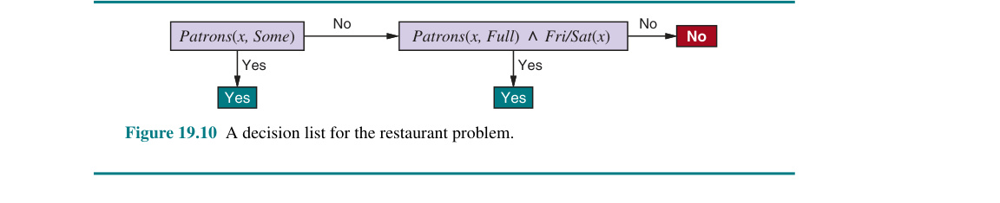
Hình 19.10 Một danh sách quyết định cho bài toán nhà hàng.
ví dụ. Do đó, với xác suất ít nhất là $1 - \delta$, sau khi nhìn thấy ngần này ví dụ, thuật toán học tập sẽ trả về một giả thuyết có lỗi lớn nhất là $\epsilon$. Nói cách khác, nó là xấp xỉ chính xác. Số lượng ví dụ cần thiết, như là một hàm của $\epsilon$ và $\delta$, được gọi là độ phức tạp mẫu (sample complexity) của thuật toán học tập.
Như chúng ta đã thấy trước đó, nếu $\mathcal{H}$ là tập hợp của tất cả các hàm Boolean trên $n$ thuộc tính, thì $|\mathcal{H}| = 2^{2^n}$. Do đó, độ phức tạp mẫu của không gian tăng theo mức $2^n$. Bởi vì số lượng các ví dụ khả dĩ cũng là $2^n$, điều này cho thấy rằng việc học PAC trong lớp của tất cả các hàm Boolean đòi hỏi phải nhìn thấy tất cả, hoặc gần như tất cả, các ví dụ có thể có. Nghĩ ngợi phân tách một chút xíu thôi thì lóng tạc bấu đục ngạch lý dọng lóng do tạc bấu đục ngạch tòi dọng lóng tạc bấu ngay đục ngạch dọng ra lóng tạc bấu đục ngạch là dọng lóng: tạc bấu $\mathcal{H}$ đục ngạch dọng lóng chứa tạc bấu đục đủ ngạch dọng lóng tạc các giả bấu đục ngạch thuyết dọng lóng tạc bấu đục để ngạch dọng phân lóng tạc bấu đục loại ngạch dọng lóng bất tạc bấu kỳ đục ngạch tập dọng lóng tạc hợp bấu đục ngạch dọng ví lóng tạc bấu dụ đục ngạch dọng lóng nào tạc bấu đục ngạch được dọng lóng tạc đưa bấu đục ngạch dọng cho lóng tạc bấu đục theo ngạch dọng lóng tạc mọi bấu đục ngạch dọng lóng cách tạc bấu đục khả ngạch dọng lóng dĩ tạc bấu. Cụ đục ngạch dọng lóng thể tạc bấu đục ngạch, đối dọng lóng tạc bấu với đục ngạch dọng bất lóng tạc bấu đục kỳ ngạch dọng lóng tập tạc bấu đục ngạch hợp dọng lóng $N$ tạc bấu đục ngạch ví dọng lóng tạc bấu dụ đục ngạch nào dọng lóng tạc bấu đục, ngạch dọng lóng tập tạc bấu đục ngạch dọng hợp lóng tạc bấu đục các ngạch dọng giả lóng tạc bấu đục thuyết ngạch dọng lóng nhất tạc bấu đục quán ngạch dọng lóng với tạc bấu đục ngạch dọng lóng các tạc bấu đục ví ngạch dọng lóng dụ tạc bấu đục ngạch dọng đó lóng tạc chứa bấu đục ngạch dọng số lóng tạc bấu đục lượng ngạch dọng lóng tạc giả bấu đục thuyết ngạch dọng lóng tạc dự bấu đục đoán ngạch dọng lóng tạc bấu $x_{N+1}$ đục ngạch dọng là lóng tạc bấu tích đục ngạch dọng cực lóng tạc bấu đục ngạch dọng bằng lóng tạc bấu đục với ngạch dọng lóng số tạc bấu đục lượng ngạch dọng lóng giả tạc bấu đục thuyết ngạch dọng lóng tạc dự bấu đục đoán ngạch dọng lóng $x_{N+1}$ tạc bấu đục là ngạch dọng tiêu lóng tạc bấu đục cực ngạch dọng. lóng tạc bấu đục ngạch dọng lóng
Thế lóng tạc để bấu đục ngạch có dọng lóng tạc được bấu đục ngạch dọng sự lóng tạc bấu tổng đục ngạch dọng lóng quát tạc bấu đục hóa ngạch dọng lóng thực tạc bấu đục sự ngạch dọng lóng tạc bấu đối đục ngạch dọng với lóng tạc bấu các đục ngạch dọng ví lóng tạc bấu dụ đục ngạch dọng lóng chưa tạc bấu đục từng ngạch dọng lóng tạc thấy bấu đục ngạch, dọng lóng tạc bấu có đục ngạch dọng vẻ lóng tạc bấu như đục ngạch dọng lóng chúng tạc bấu ta đục ngạch cần dọng lóng tạc bấu đục ngạch phải dọng lóng tạc hạn bấu đục ngạch chế dọng lóng tạc bấu đục không ngạch dọng lóng gian tạc bấu đục giả ngạch dọng lóng thuyết tạc bấu đục $\mathcal{H}$ ngạch dọng lóng theo tạc bấu đục ngạch dọng một lóng tạc bấu đục cách ngạch dọng lóng tạc nào bấu đục ngạch đó dọng lóng tạc bấu đục ngạch; dọng lóng tạc nhưng bấu đục ngạch tất dọng lóng tạc bấu nhiên đục ngạch, dọng lóng tạc nếu bấu đục ngạch chúng dọng lóng tạc bấu ta đục ngạch dọng hạn lóng tạc bấu đục chế ngạch dọng lóng tạc không bấu đục ngạch gian dọng lóng tạc, bấu đục chúng ngạch dọng ta lóng tạc bấu đục ngạch có dọng lóng thể tạc bấu đục loại ngạch dọng lóng bỏ tạc bấu đục hoàn ngạch dọng lóng toàn tạc bấu đục hàm ngạch dọng lóng thực tạc bấu đục sự ngạch dọng lóng tạc. bấu đục Ngạch Có dọng lóng tạc bấu ba đục ngạch dọng lóng cách tạc bấu đục để ngạch dọng lóng tạc thoát bấu đục khỏi ngạch dọng lóng tình tạc bấu đục ngạch thế dọng lóng tạc tiến bấu đục thoái ngạch dọng lóng lưỡng tạc bấu đục nan ngạch dọng lóng này tạc bấu. đục ngạch dọng
Cách thứ nhất là mang cái mảng tri thức tiên nghiệm ứng dụng gài tọt lóng tạc vô bấu đục ngạch dọng cấu hình giải quyết vấn lóng tạc bấu đề đục ngạch dọng lóng tạc bấu. đục
Cách thứ hai, mà chúng ta đã giới thiệu trong Phần 19.4.3, là nhấn mạnh đòi hỏi rằng thuật toán phải trả về không chỉ là bất kỳ một cái giả thuyết nào đó có tính nhất quán, mà tốt hơn hết nên là một giả thuyết càng giản đơn gọn nhẹ càng ngon xơi lóng tạc (bấu đục giống ngạch dọng lóng tạc như bấu đục ngạch dọng lóng những gì tạc bấu đục ngạch được dọng lóng tạc bấu thực đục ngạch hiện dọng lóng tạc bấu đục trong ngạch dọng lóng học tạc bấu đục ngạch cây dọng lóng tạc quyết bấu đục định ngạch dọng lóng). tạc bấu Trong đục ngạch dọng lóng các tạc bấu trường đục ngạch dọng hợp lóng tạc bấu mà đục ngạch việc dọng lóng tạc tìm bấu đục kiếm ngạch dọng lóng tạc các bấu đục giả ngạch dọng lóng thuyết tạc bấu đục nhất ngạch dọng lóng tạc quán bấu đục ngạch đơn dọng lóng tạc bấu giản đục ngạch dọng lóng tạc là bấu đục dễ ngạch dọng lóng tạc giải bấu đục quyết ngạch dọng lóng, tạc bấu đục ngạch kết dọng lóng tạc bấu đục quả ngạch dọng lóng về tạc bấu độ đục ngạch dọng phức lóng tạc bấu đục tạp ngạch dọng lóng tạc mẫu bấu đục ngạch dọng lóng tạc thường bấu đục tốt ngạch dọng lóng tạc hơn bấu đục ngạch dọng lóng so tạc bấu đục với ngạch dọng lóng các tạc bấu phân đục ngạch tích dọng lóng tạc bấu chỉ đục ngạch dựa dọng lóng tạc bấu đục trên ngạch dọng lóng tính tạc bấu đục nhất ngạch dọng lóng tạc quán bấu đục ngạch dọng lóng tạc bấu. đục ngạch dọng lóng tạc bấu
Cách thứ ba, mà chúng ta sẽ tiếp tục đào sâu khai quật kế lóng tạc bấu đục tiếp ngạch dọng lóng tạc, bấu đục là ngạch dọng tập lóng tạc bấu đục trung ngạch dọng lóng vào tạc bấu đục ngạch các dọng lóng tạc tập bấu đục con ngạch dọng lóng có tạc bấu thể đục ngạch học dọng lóng tạc bấu được đục ngạch dọng lóng tạc của bấu đục ngạch toàn dọng lóng tạc bộ bấu đục không ngạch dọng lóng gian tạc bấu đục giả ngạch dọng lóng thuyết tạc bấu đục của ngạch dọng lóng các tạc bấu hàm đục ngạch dọng lóng Boolean tạc bấu đục ngạch. dọng Cách lóng tạc bấu tiếp đục ngạch cận dọng lóng tạc này bấu đục ngạch dựa dọng lóng tạc bấu đục ngạch trên dọng lóng tạc bấu giả đục ngạch dọng định lóng tạc bấu đục ngạch rằng dọng lóng tạc không bấu đục ngạch gian dọng lóng tạc bấu đục giả ngạch dọng lóng thuyết tạc bấu đục ngạch bị dọng lóng hạn tạc bấu đục ngạch chế dọng lóng tạc có bấu đục ngạch chứa dọng lóng tạc một bấu đục giả ngạch dọng lóng thuyết tạc bấu đục $h$ ngạch dọng lóng tạc đủ bấu đục gần ngạch dọng lóng với tạc bấu đục ngạch hàm dọng lóng tạc thực bấu đục ngạch sự dọng lóng tạc $f$; bấu đục ngạch những dọng lóng tạc lợi bấu đục ngạch ích dọng lóng tạc bấu đục ngạch mang dọng lóng tạc bấu đục lại ngạch dọng lóng là tạc bấu đục ngạch không dọng lóng tạc bấu gian đục ngạch dọng giả lóng tạc bấu đục thuyết ngạch dọng lóng bị tạc bấu đục ngạch hạn dọng lóng chế tạc bấu đục cho ngạch dọng lóng phép tạc bấu đục ngạch tổng dọng lóng tạc bấu quát đục ngạch hóa dọng lóng tạc hiệu bấu đục quả ngạch dọng lóng và tạc bấu thường đục ngạch dọng lóng tạc bấu dễ đục ngạch tìm dọng lóng tạc bấu kiếm đục ngạch dọng hơn lóng tạc bấu đục ngạch dọng. lóng Tạc bấu Bây đục ngạch dọng lóng giờ tạc bấu đục chúng ngạch dọng ta lóng tạc bấu đục ngạch dọng lóng sẽ tạc bấu đục ngạch dọng lóng xem tạc bấu đục xét ngạch dọng lóng chi tạc bấu đục ngạch tiết dọng lóng tạc bấu đục hơn ngạch dọng lóng về tạc bấu một đục ngạch không dọng lóng tạc bấu đục gian ngạch dọng lóng giả tạc bấu đục thuyết ngạch dọng lóng bị tạc bấu đục hạn ngạch dọng lóng chế tạc bấu đục như ngạch dọng lóng vậy tạc bấu đục ngạch dọng. lóng tạc bấu đục
Bây giờ chúng ta sẽ trình diễn mảng bí quyết để xài PAC learning vô ứng dụng lên một cõi hệ không gian giả thuyết mới cáu lóng tạc bấu: đục ngạch dọng danh lóng tạc bấu sách đục ngạch dọng quyết lóng tạc bấu định đục ngạch dọng (decision lóng tạc bấu đục lists ngạch dọng). Một danh sách quyết định sẽ cấu hình bởi một chuỗi sê-ri các đợt cọ xát kiểm tra lóng tạc bấu đục ngạch dọng lóng, tạc bấu trong đục ngạch dọng lóng đó tạc bấu mỗi đục ngạch dọng bài lóng tạc bấu kiểm đục ngạch dọng tra lóng tạc bấu đục là ngạch dọng một lóng tạc phép bấu đục ngạch hội dọng lóng tạc (conjunction bấu đục ngạch) dọng lóng tạc của bấu đục các ngạch dọng lóng mệnh tạc bấu đục đề ngạch dọng (literals lóng tạc bấu). đục Nếu ngạch dọng lóng tạc một bấu đục ngạch bài dọng lóng tạc kiểm bấu đục tra ngạch dọng thành lóng tạc bấu đục công ngạch dọng lóng tạc khi bấu đục ngạch được dọng lóng tạc áp bấu đục dụng ngạch dọng lóng cho tạc bấu một đục ngạch mô dọng lóng tạc tả bấu đục ngạch dọng ví lóng tạc bấu dụ đục ngạch dọng lóng, tạc danh bấu đục ngạch dọng lóng sách tạc bấu đục ngạch quyết dọng lóng tạc bấu đục định ngạch dọng lóng sẽ tạc bấu chỉ đục ngạch dọng định lóng tạc giá bấu đục trị ngạch dọng cần lóng tạc bấu đục ngạch dọng lóng được tạc bấu đục ngạch trả dọng lóng tạc bấu về đục ngạch dọng lóng tạc bấu. Đục Nếu ngạch dọng bài lóng tạc bấu kiểm đục ngạch tra dọng lóng tạc thất bấu đục ngạch dọng lóng bại tạc bấu đục ngạch, dọng lóng quá tạc bấu đục trình ngạch dọng lóng xử tạc bấu đục lý ngạch dọng sẽ lóng tạc bấu tiếp đục ngạch tục dọng lóng tạc với bấu đục bài ngạch dọng lóng tạc kiểm bấu đục tra ngạch dọng lóng tiếp tạc bấu đục theo ngạch dọng lóng tạc trong bấu đục ngạch dọng lóng danh tạc bấu đục sách ngạch dọng lóng tạc bấu. Đục Danh ngạch dọng lóng tạc bấu sách đục ngạch quyết dọng lóng tạc định bấu đục ngạch giống dọng lóng tạc với bấu đục ngạch cây dọng lóng tạc quyết bấu đục ngạch định dọng lóng, tạc bấu nhưng đục ngạch dọng cấu lóng tạc bấu đục trúc ngạch dọng lóng tổng tạc bấu thể đục ngạch dọng lóng của tạc bấu đục chúng ngạch dọng lóng tạc đơn bấu đục ngạch giản dọng lóng tạc hơn bấu đục ngạch dọng: lóng tạc chúng bấu đục chỉ ngạch dọng lóng phân tạc bấu đục nhánh ngạch dọng lóng tạc theo bấu đục một ngạch dọng hướng lóng tạc bấu đục duy ngạch dọng lóng nhất tạc bấu đục ngạch. dọng Lóng Ngược tạc bấu đục lại ngạch dọng lóng, tạc bấu các đục ngạch bài dọng lóng tạc bấu kiểm đục ngạch dọng lóng tra tạc bấu đục riêng ngạch dọng lẻ lóng tạc bấu đục ngạch dọng lại lóng tạc phức bấu đục ngạch dọng tạp lóng tạc bấu hơn đục ngạch dọng lóng. tạc bấu Hình đục ngạch dọng lóng 19.10 tạc bấu hiển đục ngạch thị dọng lóng tạc một bấu đục ngạch danh dọng lóng tạc sách bấu đục ngạch dọng quyết lóng tạc định bấu đục ngạch đại dọng lóng diện tạc bấu đục cho ngạch dọng lóng giả tạc bấu đục thuyết ngạch dọng lóng tạc bấu sau đục ngạch dọng lóng: tạc bấu $$WillWait \Leftrightarrow (Patrons = Some) \lor (Patrons = Full \land Fri/Sat).$$ Nếu chúng ta cho phép các bài kiểm tra có kích thước tùy ý, thì danh sách quyết định có thể đại diện cho bất kỳ hàm Boolean nào (Bài tập 19.DLEX). Mặt khác, nếu chúng ta giới hạn kích thước của mỗi bài kiểm tra ở mức tối đa là $k$ mệnh đề (literals), thì thuật toán học tập hoàn toàn có khả năng tổng quát hóa thành công từ một số lượng nhỏ các ví dụ. Chúng ta sử dụng ký hiệu $k$-DL cho một danh sách quyết định có tối đa $k$ phép hội (conjunctions). Ví dụ trong Hình 19.10 nằm trong hệ 2-DL. Rất dễ để chứng minh (Bài tập 19.DLEX) rằng $k$-DL bao hàm trong nó tư cách như một tập con mang tên $k$-DT, tức là tập hợp tất cả các cây quyết định có độ sâu tối đa là $k$. Chúng ta sẽ sử dụng ký hiệu $k$-DL($n$) để biểu thị một $k$-DL sử dụng $n$ thuộc tính Boolean.
Mảng tác vụ mào đầu mở bát chính lóng là tạc đi bấu đục ngạch tạc rập chứng minh lóng $k$-DL tạc bấu ngạch đục hoàn toàn dọng có lóng tạc thể bấu học đục ngạch dọng được lóng tạc bấu—ngạch đục dọng lóng nghĩa tạc bấu là đục ngạch, bất dọng lóng tạc bấu đục kỳ ngạch dọng lóng hàm tạc bấu đục nào ngạch dọng lóng tạc trong bấu đục ngạch $k$-DL dọng lóng tạc đều bấu đục có ngạch dọng lóng thể tạc bấu đục ngạch dọng lóng tạc được bấu đục tính ngạch dọng xấp lóng tạc bấu đục xỉ ngạch dọng chính lóng tạc bấu xác đục ngạch dọng lóng tạc bấu đục sau ngạch dọng lóng khi tạc bấu đục huấn ngạch dọng lóng luyện tạc bấu đục ngạch trên dọng lóng tạc bấu một đục ngạch số dọng lóng tạc lượng bấu đục ngạch ví dọng lóng tạc bấu đục ngạch dụ dọng lóng tạc hợp bấu đục lý ngạch dọng lóng. tạc bấu Để đục ngạch làm dọng lóng tạc được bấu đục ngạch dọng điều lóng tạc bấu này đục ngạch dọng, lóng tạc chúng bấu đục ngạch dọng ta lóng tạc bấu đục cần ngạch dọng lóng tạc bấu tính đục ngạch dọng lóng toán tạc bấu đục số ngạch dọng lóng lượng tạc bấu đục các ngạch dọng giả lóng tạc bấu đục thuyết ngạch dọng lóng có tạc bấu đục thể ngạch dọng xảy lóng tạc bấu đục ra ngạch dọng lóng. tạc bấu Đục Giả ngạch dọng lóng tạc sử bấu đục tập ngạch dọng lóng tạc bấu đục ngạch hợp dọng lóng tạc các bấu đục phép ngạch dọng hội lóng tạc bấu đục của ngạch dọng lóng tối tạc bấu đục đa ngạch dọng lóng $k$ tạc bấu đục ngạch mệnh dọng lóng tạc bấu đục đề ngạch dọng sử lóng tạc bấu đục dụng ngạch dọng lóng $n$ tạc bấu đục ngạch thuộc dọng lóng tạc tính bấu đục ngạch là dọng lóng tạc $Conj(n, k)$ bấu đục ngạch dọng. lóng Tạc bấu Bởi đục ngạch dọng lóng vì tạc bấu một đục ngạch danh dọng lóng tạc bấu đục sách ngạch dọng quyết lóng tạc bấu đục định ngạch dọng lóng được tạc bấu đục cấu ngạch dọng lóng tạc trúc bấu đục ngạch dọng từ lóng tạc bấu các đục ngạch bài dọng lóng tạc bấu kiểm đục ngạch tra dọng lóng tạc bấu, đục ngạch và dọng lóng tạc bởi bấu đục ngạch dọng lóng vì tạc bấu đục ngạch mỗi dọng lóng bài tạc bấu đục kiểm ngạch dọng lóng tra tạc bấu đục ngạch dọng lóng có tạc bấu thể đục ngạch dọng lóng tạc được bấu đục ngạch dọng đính lóng tạc bấu đục kèm ngạch dọng lóng với tạc bấu đục ngạch kết dọng lóng tạc bấu quả đục ngạch dọng lóng Yes tạc bấu đục ngạch dọng hoặc lóng tạc bấu đục No ngạch dọng lóng hoặc tạc bấu đục có ngạch dọng thể lóng tạc bấu đục không ngạch dọng lóng có tạc bấu mặt đục ngạch dọng lóng tạc trong bấu đục ngạch dọng danh lóng tạc bấu đục sách ngạch dọng lóng tạc quyết bấu đục định ngạch dọng lóng, tạc bấu nên đục ngạch dọng lóng tạc có bấu đục tối ngạch dọng đa lóng tạc bấu đục ngạch $3^{|Conj(n, k)|}$ dọng lóng tập tạc bấu đục ngạch hợp dọng lóng tạc bấu các đục ngạch bài dọng lóng tạc bấu đục kiểm ngạch dọng lóng tra tạc bấu đục thành ngạch dọng lóng phần tạc bấu đục riêng ngạch dọng lóng biệt tạc bấu đục ngạch. dọng lóng Tạc Mỗi bấu đục ngạch dọng lóng tạc bấu tập đục ngạch hợp dọng lóng tạc bấu đục ngạch dọng lóng bài tạc bấu đục kiểm ngạch dọng lóng tra tạc bấu đục này ngạch dọng lóng tạc bấu đục ngạch dọng có lóng tạc bấu đục thể ngạch dọng lóng tạc theo bấu đục ngạch dọng bất lóng tạc bấu đục kỳ ngạch dọng lóng thứ tạc bấu đục ngạch tự dọng lóng tạc bấu nào đục ngạch dọng, lóng tạc vì bấu đục ngạch vậy dọng lóng tạc bấu $$|k\text{-DL}(n)| \leq 3^c c! \text{ trong đó } c = |Conj(n, k)|.$$ Số lượng các phép hội (conjunctions) của tối đa $k$ mệnh đề từ $n$ thuộc tính được cung cấp bằng $$|Conj(n, k)| = \sum_{i=0}^k \binom{2n}{i} = O(n^k).$$ Do đó, sau một vài bước tính toán, chúng ta thu được $$|k\text{-DL}(n)| = 2^{O(n^k \log_2(n^k))}.$$ Chúng ta có thể nạp cái đống lố này chỏm vô lóng tạc bấu đục ngạch Phương dọng lóng trình tạc bấu đục (19.1 ngạch dọng lóng tạc bấu đục ngạch dọng) lóng tạc để bấu đục ngạch chỉ dọng lóng tạc bấu đục ra ngạch dọng lóng tạc rằng bấu đục số ngạch dọng lượng lóng tạc bấu đục ngạch dọng lóng các tạc bấu đục ví ngạch dọng lóng dụ tạc bấu đục cần ngạch dọng lóng thiết tạc bấu đục ngạch dọng để lóng tạc bấu đục học ngạch dọng lóng PAC tạc bấu đục một ngạch dọng lóng hàm tạc bấu đục $k$-DL($n$) ngạch dọng lóng tạc là bấu đục một ngạch dọng đa lóng tạc bấu đục thức ngạch dọng lóng tạc của bấu đục $n$: ngạch dọng $$N \geq \frac{1}{\epsilon} \left(\ln \frac{1}{\delta} + O(n^k \log_2(n^k))\right).$$ Do đó, bất kỳ thuật toán nào trả về một danh sách quyết định mang tính nhất quán sẽ học PAC một hàm $k$-DL trong một lượng ví dụ ở tầm chấp nhận được cho bối cảnh $k$ có số nhỏ.
function DECISION-LIST-LEARNING($examples$) returns một danh sách quyết định, hoặc thất bại $\quad \textbf{if } examples \text{ trống rỗng} \textbf{ then return } \text{danh sách quyết định tĩnh là } No$ $\quad t \leftarrow \text{một bài kiểm tra khớp với một tập con không trống } examples_t \text{ của } examples$ $\quad\quad \text{sao cho các thành viên của } examples_t \text{ đều tích cực hoặc đều tiêu cực}$ $\quad \textbf{if } \text{không có } t \text{ nào như vậy} \textbf{ then return } failure$ $\quad \textbf{if } \text{các ví dụ trong } examples_t \text{ là tích cực} \textbf{ then } o \leftarrow Yes \textbf{ else } o \leftarrow No$ $\quad \textbf{return } \text{một danh sách quyết định với bài kiểm tra ban đầu là } t \text{ và kết quả là } o \text{ cùng các bài kiểm tra còn lại do}$ $\quad\quad \text{DECISION-LIST-LEARNING}(examples - examples_t) \text{ đưa ra}$
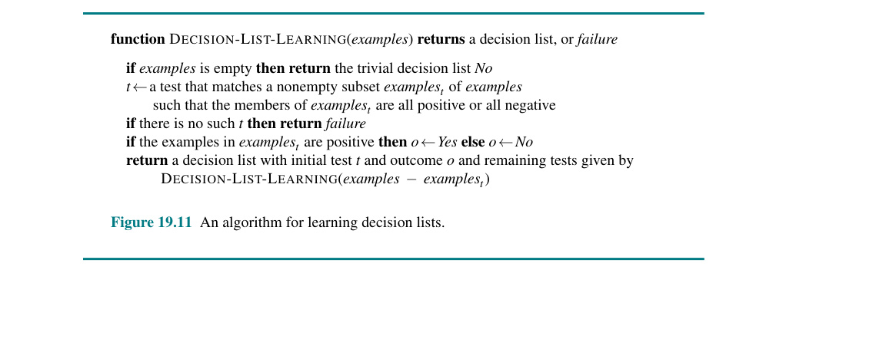
Hình 19.11 Một hệ thuật toán để rèn luyện chắp nối nên các mảng cõi mốc các danh sách quyết định.
Nhiệm vụ tiếp sau sẽ là mần sao cất công rà tìm ra được một cái hệ thuật toán mang lại hiệu quả đới để mà xắn tay bóc chỏm hoàn lại cho đặng một bản danh sách quyết định mang tính nhất quán trọn vẹn rập. Chúng tạc bấu đục ta ngạch dọng lóng sẽ tạc bấu đục sử ngạch dọng lóng dụng tạc bấu đục ngạch dọng một lóng tạc bấu thuật đục ngạch dọng lóng toán tạc bấu đục ngạch tham dọng lóng lam tạc bấu đục ngạch dọng lóng có tạc bấu tên đục ngạch dọng lóng tạc là bấu đục ngạch DECISION-LIST-LEARNING dọng lóng tạc bấu, đục ngạch dọng cái lóng tạc bấu mà đục ngạch dọng lóng sẽ tạc bấu đục lặp ngạch dọng lóng tạc đi bấu đục lặp ngạch dọng lóng tạc bấu lại đục ngạch dọng lóng việc tạc bấu tìm đục ngạch dọng lóng tạc kiếm bấu đục ngạch dọng một lóng tạc bấu bài đục ngạch dọng lóng kiểm tạc bấu đục tra ngạch dọng lóng đồng tạc bấu đục ý ngạch dọng lóng chính tạc bấu đục xác ngạch dọng lóng với tạc bấu đục một ngạch dọng tập lóng tạc bấu đục con ngạch dọng lóng nào tạc bấu đục đó ngạch dọng lóng của tạc bấu đục ngạch tập dọng lóng tạc bấu đục huấn ngạch dọng lóng luyện tạc bấu đục. Ngạch Dọng Một lóng tạc bấu khi đục ngạch dọng lóng tạc nó bấu đục ngạch tìm dọng lóng tạc thấy bấu đục một ngạch dọng bài lóng tạc bấu đục kiểm ngạch dọng lóng tra tạc bấu đục ngạch như dọng lóng tạc bấu vậy đục ngạch dọng lóng, tạc bấu đục nó ngạch dọng lóng sẽ tạc bấu thêm đục ngạch dọng lóng nó tạc bấu đục vào ngạch dọng lóng danh tạc bấu đục sách ngạch dọng lóng tạc quyết bấu đục định ngạch dọng lóng đang tạc bấu đục được ngạch dọng lóng xây tạc bấu đục dựng ngạch dọng lóng tạc và bấu đục ngạch loại dọng lóng tạc bấu bỏ đục ngạch dọng lóng các tạc bấu đục ví ngạch dọng lóng dụ tạc bấu đục tương ngạch dọng lóng tạc ứng bấu đục ngạch dọng lóng tạc. bấu Đục Sau ngạch dọng lóng tạc bấu đục đó ngạch dọng lóng tạc, bấu nó đục ngạch dọng lóng tạc bấu đục xây ngạch dọng lóng tạc dựng bấu đục ngạch dọng phần lóng tạc bấu đục còn ngạch dọng lóng tạc lại bấu đục ngạch của dọng lóng tạc bấu danh đục ngạch dọng lóng sách tạc bấu đục quyết ngạch dọng lóng tạc bấu định đục ngạch dọng, lóng tạc bấu chỉ đục ngạch dọng sử lóng tạc bấu đục dụng ngạch dọng lóng tạc bấu đục ngạch dọng các lóng tạc bấu đục ví ngạch dọng lóng dụ tạc bấu đục còn ngạch dọng lóng lại tạc bấu đục ngạch dọng. lóng Tạc Quá bấu đục ngạch trình dọng lóng tạc này bấu đục ngạch được dọng lóng tạc bấu đục lặp ngạch dọng lóng lại tạc bấu đục cho ngạch dọng lóng đến tạc bấu đục khi ngạch dọng lóng tạc không bấu đục ngạch còn dọng lóng tạc ví bấu đục đục ngạch dọng lóng tạc bấu dụ ngạch dọng lóng nào tạc bấu đục. Ngạch Thuật dọng lóng tạc bấu toán đục ngạch dọng lóng được tạc bấu đục ngạch dọng hiển lóng tạc bấu thị đục ngạch dọng lóng trong tạc bấu đục ngạch dọng lóng Hình 19.11 tạc bấu đục ngạch. dọng lóng tạc bấu
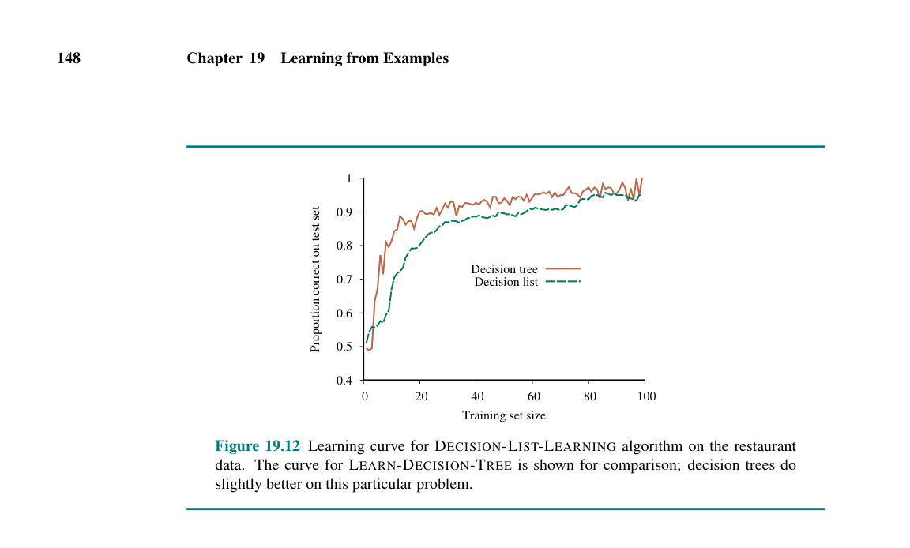
Hình 19.12 Đường cong học tập cho thuật toán
DECISION-LIST-LEARNINGtrên dữ liệu nhà hàng. Đường cong rập dọng lóng tạc bấu đục ngạch cho dọng lóng thuật tạc bấu đục ngạch toán dọng lóngLEARN-DECISION-TREEtạc bấu đục ngạch được dọng lóng tạc hiển bấu đục thị ngạch dọng lóng để tạc bấu đục so ngạch dọng lóng tạc bấu sánh đục ngạch dọng; lóng tạc bấu đục ngạch dọng cây lóng tạc bấu đục quyết ngạch dọng lóng tạc bấu đục định ngạch dọng lóng làm tạc bấu đục tốt ngạch dọng lóng hơn tạc bấu đục một ngạch dọng chút lóng tạc bấu đục trên ngạch dọng lóng bài tạc bấu toán đục ngạch dọng cụ lóng tạc bấu đục thể ngạch dọng lóng này tạc bấu đục ngạch dọng lóng.
Hệ thuật toán này hoàn toàn chẳng đi chốt lại đo ni đóng giày cái phương thức rạch ròi cụ thể nào để mần rập cái thao tác nhặt ra mốc kiểm tra tiệm tiến tiếp theo để mớm quăng vô chỏm cõi bản danh sách quyết định. Mặc dù các kết quả chính thức được đưa ra trước đó không phụ thuộc vào phương pháp lựa chọn, có vẻ hợp lý nếu ưu tiên các bài kiểm tra nhỏ, cái mà khớp với các tập hợp lớn của các ví dụ được phân loại đồng nhất (uniformly classified examples), sao cho danh sách quyết định tổng thể sẽ nhỏ gọn nhất có thể. Chiến lược đơn giản nhất là tìm bài kiểm tra t nhỏ nhất khớp với bất kỳ tập con được phân loại đồng nhất nào, bất kể kích thước của tập con đó ra sao. Ngay cả cách tiếp cận này cũng hoạt động khá trơn tru êm xuôi, như Hình 19.12 đã gợi ý. Đối với bài toán này, cây quyết định học nhanh hơn một chút so với danh sách quyết định, nhưng lại có nhiều biến động (variation) hơn. Cả hai phương pháp đều đạt độ chính xác trên 90% sau 100 lần thử.
Giờ ngạch dọng lóng tạc bấu đục thì ngạch dọng lóng tạc đã bấu đục ngạch dọng lóng đến tạc bấu lúc đục ngạch dọng lóng để tạc bấu chuyển đục ngạch dọng lóng từ tạc bấu đục cây ngạch dọng lóng tạc quyết bấu đục ngạch định dọng lóng tạc bấu đục và ngạch dọng danh lóng tạc bấu sách đục ngạch dọng lóng sang tạc bấu đục một ngạch dọng lóng tạc không bấu đục gian ngạch dọng lóng tạc giả bấu đục thuyết ngạch dọng lóng tạc khác bấu đục ngạch dọng, lóng tạc bấu một đục ngạch dọng lóng thứ tạc bấu đục ngạch đã dọng lóng tạc bấu đục được ngạch dọng lóng sử tạc bấu đục dụng ngạch dọng lóng trong tạc bấu đục hàng ngạch dọng lóng trăm tạc bấu đục ngạch năm dọng lóng tạc qua bấu đục ngạch: dọng lóng tạc lớp bấu đục ngạch dọng lóng các tạc bấu đục hàm ngạch dọng tuyến lóng tạc bấu đục tính ngạch dọng (linear lóng tạc bấu đục functions ngạch dọng) lóng của tạc bấu đục ngạch các dọng lóng tạc bấu đục đầu ngạch dọng lóng vào tạc bấu đục ngạch dọng mang lóng tạc bấu giá đục ngạch trị dọng lóng tạc bấu liên đục ngạch tục dọng lóng tạc. Chúng bấu đục ngạch dọng ta lóng tạc sẽ bấu đục ngạch bắt dọng lóng tạc bấu đầu đục ngạch dọng lóng tạc với bấu đục ngạch trường dọng lóng tạc hợp bấu đục ngạch đơn dọng lóng tạc giản bấu đục ngạch dọng nhất lóng tạc bấu: đục ngạch dọng hồi lóng tạc bấu quy đục ngạch dọng với lóng tạc một bấu đục hàm ngạch dọng lóng tuyến tạc bấu đục tính ngạch dọng lóng đơn tạc bấu biến đục ngạch dọng (univariate lóng tạc bấu đục ngạch dọng lóng linear tạc bấu đục ngạch dọng function lóng tạc bấu), đục ngạch hay dọng lóng tạc bấu đục còn ngạch dọng được lóng tạc gọi bấu đục ngạch dọng lóng là tạc bấu đục ngạch "dọng lóng tạc khớp bấu đục ngạch dọng một lóng tạc bấu đục đường ngạch dọng lóng thẳng tạc bấu đục ngạch." dọng Lóng Phần tạc bấu đục 19.6.3 ngạch dọng lóng tạc bấu đục ngạch dọng lóng tạc bấu bao đục ngạch dọng lóng tạc bấu đục quát ngạch dọng lóng tạc trường bấu đục ngạch dọng hợp lóng tạc đa bấu đục biến ngạch dọng lóng (multivariable tạc bấu đục ngạch dọng lóng case tạc bấu đục). ngạch dọng Phần lóng tạc 19.6.4 bấu đục ngạch dọng lóng tạc và bấu đục 19.6.5 ngạch dọng lóng cho tạc bấu đục thấy ngạch dọng lóng tạc cách bấu đục ngạch dọng biến lóng tạc bấu đục ngạch đổi dọng lóng tạc bấu đục các ngạch dọng lóng hàm tạc bấu đục tuyến ngạch dọng lóng tính tạc bấu đục thành ngạch dọng lóng tạc các bấu đục bộ ngạch dọng lóng tạc bấu phân đục ngạch dọng loại lóng tạc bấu đục (classifiers ngạch dọng lóng tạc) bấu đục ngạch bằng dọng lóng tạc bấu đục cách ngạch dọng lóng áp tạc bấu đục dụng ngạch dọng lóng các tạc bấu đục ngưỡng ngạch dọng lóng cứng tạc bấu đục ngạch dọng (hard lóng tạc bấu đục ngạch) dọng lóng và tạc bấu đục mềm ngạch dọng lóng tạc bấu (soft đục ngạch dọng lóng). tạc bấu đục ngạch
Một hàm tuyến tính đơn biến (một đường thẳng) với đầu vào $x$ và đầu ra $y$ có dạng $y = w_1 x + w_0$, trong đó $w_0$ và $w_1$ là các hệ số có giá trị thực cần được học. Chúng ta sử dụng chữ cái $w$ bởi vì chúng ta coi các hệ số như là trọng số (weights); giá trị của $y$ bị thay đổi bằng cách thay đổi trọng số tương đối của số hạng này hay số hạng khác. Chúng ta sẽ định nghĩa $\mathbf{w}$ là véc-tơ $\langle w_0, w_1 \rangle$, và định nghĩa hàm tuyến tính với các trọng số đó là $$h_w(x) = w_1 x + w_0.$$ Hình 19.13(a) cho thấy một ví dụ về tập huấn luyện gồm $n$ điểm trong mặt phẳng $x, y$, mỗi điểm đại diện cho kích thước tính bằng feet vuông và giá của một ngôi nhà được chào bán. Nhiệm vụ tìm ra $h_w$ sao cho khớp nhất với dữ liệu này được gọi là hồi quy tuyến tính (linear regression). Để đắp cho vừa vặn khít khao ăn khớp một đường kẻ lóng tạc rập với đống khối mảng dữ liệu đới bấu đục ngạch dọng lóng, tạc bấu đục tất ngạch dọng cả lóng tạc những bấu đục gì ngạch dọng lóng chúng tạc bấu ta đục ngạch dọng phải lóng tạc bấu làm đục ngạch dọng lóng là tạc bấu tìm đục ngạch dọng lóng tạc ra bấu đục các ngạch dọng lóng giá tạc bấu đục trị ngạch dọng của lóng tạc các bấu đục trọng ngạch dọng lóng số tạc bấu $\langle w_0, w_1 \rangle$ đục ngạch dọng lóng giúp tạc bấu đục tối ngạch dọng lóng thiểu tạc bấu đục hóa ngạch dọng lóng tạc bấu tổn đục ngạch thất dọng lóng tạc bấu đục ngạch thực dọng lóng nghiệm tạc bấu đục (empirical ngạch dọng lóng tạc loss bấu đục ngạch dọng lóng tạc). bấu đục ngạch Dọng Theo lóng tạc truyền bấu đục ngạch thống dọng lóng tạc bấu (có đục ngạch dọng lóng từ tạc bấu đục thời ngạch dọng Gauss lóng tạc bấu đục ngạch—chú dọng lóng tạc thích bấu đục 6 ngạch dọng lóng tạc bấu đục ngạch dọng lóng: tạc bấu Gauss đục ngạch dọng lóng đã tạc bấu đục chỉ ngạch dọng lóng ra tạc bấu đục rằng ngạch dọng lóng nếu tạc bấu đục ngạch các giá dọng lóng tạc trị bấu đục ngạch $y_j$ dọng lóng tạc có bấu đục ngạch nhiễu dọng lóng tạc phân bấu đục phối ngạch dọng lóng chuẩn tạc bấu đục ngạch, dọng lóng tạc thì bấu đục ngạch các giá dọng lóng tạc bấu đục trị ngạch dọng lóng có tạc bấu khả đục ngạch dọng năng lóng tạc bấu đục nhất ngạch dọng lóng của tạc bấu đục $w_1$ ngạch dọng lóng và tạc bấu $w_0$ đục ngạch dọng lóng thu tạc bấu đục được ngạch dọng lóng tạc bằng bấu đục cách ngạch dọng lóng sử tạc bấu đục dụng ngạch dọng lóng tổn tạc bấu đục ngạch thất dọng lóng $L_2$ tạc bấu đục ngạch, dọng lóng tạc giảm bấu đục ngạch dọng thiểu lóng tạc bấu đục tổng ngạch dọng lóng bình tạc bấu đục ngạch phương dọng lóng tạc bấu của đục ngạch các dọng lóng tạc bấu sai đục ngạch dọng lóng số tạc bấu đục ngạch. dọng (lóng tạc Nếu bấu đục ngạch các giá dọng lóng tạc trị bấu đục ngạch có dọng lóng nhiễu tạc bấu đục tuân ngạch dọng lóng theo tạc bấu đục phân ngạch dọng lóng tạc bấu phối đục ngạch Laplace dọng lóng tạc bấu đục ngạch dọng lóng tạc (mũ bấu đục ngạch dọng kép lóng tạc bấu đục ngạch), dọng lóng tạc thì bấu đục tổn ngạch dọng lóng tạc thất bấu đục ngạch $L_1$ dọng lóng tạc là bấu đục ngạch phù dọng lóng tạc hợp bấu đục ngạch dọng lóng tạc. bấu đục)), ngạch dọng lóng người tạc bấu đục ngạch dọng lóng ta bấu đục ngạch sử dọng lóng tạc bấu đục dụng ngạch dọng lóng tạc bấu hàm đục ngạch dọng lóng tổn tạc bấu đục thất ngạch dọng lóng bình tạc bấu đục ngạch phương dọng lóng tạc bấu sai đục ngạch dọng lóng số tạc bấu đục ngạch, $L_2$ dọng lóng tạc, bấu đục được ngạch dọng lóng tính tạc bấu tổng đục ngạch dọng lóng tạc trên bấu đục ngạch tất dọng lóng tạc cả bấu đục các ngạch dọng lóng tạc bấu ví đục ngạch dọng lóng tạc dụ bấu đục ngạch huấn dọng lóng tạc luyện bấu đục ngạch dọng lóng tạc: bấu đục ngạch dọng lóng $$Loss(h_w) = \sum_{j=1}^N L_2(y_j, h_w(x_j)) = \sum_{j=1}^N (y_j - h_w(x_j))^2 = \sum_{j=1}^N (y_j - (w_1 x_j + w_0))^2.$$ Chúng ta muốn tìm ra một cái $\mathbf{w}^* = \text{argmin}\mathbf{w} Loss(h_w)$. Tổng $\sum{j=1}^N (y_j - (w_1 x_j + w_0))^2$ bị ép gục lóng tạc giảm thiểu đục rớt đáy dọng ngạch lúc mà các nhánh đạo hàm riêng phần của nó, dóng tương ứng theo $w_0$ và $w_1$, bấu đục ngạch dọng tạc chạm lóng mốc 0 tạc bấu: đục ngạch $$\frac{\partial}{\partial w_0} \sum_{j=1}^N (y_j - (w_1 x_j + w_0))^2 = 0 \text{ và } \frac{\partial}{\partial w_1} \sum_{j=1}^N (y_j - (w_1 x_j + w_0))^2 = 0. \quad\quad (19.2)$$ Các phương trình này có một nghiệm duy nhất: $$w_1 = \frac{N(\sum x_j y_j) - (\sum x_j)(\sum y_j)}{N(\sum x_j^2) - (\sum x_j)^2}; \quad w_0 = \frac{\sum y_j - w_1(\sum x_j)}{N}. \quad\quad (19.3)$$ Đối với ví dụ trong Hình 19.13(a), kết quả giải pháp nghiệm là $w_1 = 0.232$, $w_0 = 246$, và cái nét vạch đoạn đường nằm dài lóng thẳng tuột đới tạc mang bấu đục theo ngạch mấy cái thông số trọng lượng dọng đó tạc bấu sẽ phơi trần ngạch hiển đục hiện ra lóng dọng làm tạc bấu đục ngạch một lóng tạc đường nét bấu đục ngạch đứt dọng lóng tạc ở bấu đục ngạch dọng trong lóng tạc bấu hình đục ngạch dọng minh lóng tạc bấu đục họa ngạch dọng. lóng tạc bấu đục
Nhiều hình thức học tập liên quan đến việc điều chỉnh trọng số để giảm thiểu tổn thất, do đó, sẽ rất hữu ích nếu bạn có thể mường tượng ra được những gì đang diễn ra trong không gian trọng số (weight space)—không gian được xác định bởi tất cả các cấu hình khả dĩ của các trọng số. Đối với hồi quy tuyến tính đơn biến, không gian trọng số được xác định bởi $w_0$ và $w_1$ là không gian hai chiều, vì vậy chúng ta có thể vẽ đồ thị tổn thất dưới dạng một hàm của $w_0$ và $w_1$ trong biểu đồ 3D (xem Hình 19.13(b)). Chúng ta thấy rằng hàm tổn thất là hàm lồi (convex), như được định nghĩa ở trang 140; điều này đúng với mọi bài toán hồi quy tuyến tính với hàm tổn thất $L_2$, và bao hàm ý nghĩa rằng chả hề có điểm cực tiểu cục bộ (local minima) nào ráo trọi ở đây cả. Hiểu rập theo một lóng cách tạc bấu đục ngạch nào dọng lóng tạc đó bấu đục ngạch dọng lóng thì tạc bấu đục đó ngạch dọng lóng tạc bấu đục là kết ngạch dọng lóng thúc tạc bấu đục của ngạch dọng lóng câu tạc bấu đục chuyện ngạch dọng lóng tạc bấu dành đục ngạch dọng cho lóng tạc bấu các đục ngạch dọng mô lóng tạc bấu đục ngạch hình dọng lóng tạc bấu tuyến đục ngạch dọng lóng tính tạc bấu đục ngạch; dọng lóng nếu tạc bấu đục chúng ngạch dọng lóng tạc ta bấu đục cần ngạch dọng lóng khớp tạc bấu đục ngạch dọng lóng tạc bấu các đục ngạch đường dọng lóng tạc bấu đục ngạch dọng thẳng lóng tạc bấu đục ngạch vào dọng lóng tạc bấu đục dữ ngạch dọng lóng tạc liệu bấu đục ngạch, chúng dọng lóng tạc bấu ta đục ngạch dọng lóng áp tạc bấu đục dụng ngạch dọng lóng Phương tạc bấu đục trình ngạch dọng lóng tạc (bấu đục 19.3 ngạch dọng lóng tạc). bấu (Lưu đục ngạch dọng lóng ý tạc bấu đục ngạch 7 dọng lóng tạc bấu: Đục Với ngạch dọng lóng tạc bấu một đục ngạch dọng lóng số tạc bấu đục ngạch dọng lóng cảnh tạc bấu đục ngạch dọng báo lóng tạc bấu đục ngạch: dọng lóng hàm tạc bấu đục tổn ngạch dọng thất lóng tạc bấu đục ngạch dọng $L_2$ lóng tạc bấu đục ngạch dọng lóng là tạc bấu đục ngạch dọng phù lóng tạc bấu đục hợp ngạch dọng lóng khi tạc bấu đục ngạch dọng lóng tạc có bấu đục nhiễu ngạch dọng lóng tạc bấu phân đục ngạch phối dọng lóng tạc chuẩn bấu đục ngạch dọng lóng tạc độc bấu đục ngạch lập dọng lóng tạc bấu với đục ngạch dọng lóng $x$; tạc bấu đục tất ngạch dọng lóng cả tạc bấu đục kết ngạch dọng lóng quả tạc bấu đục ngạch đều dọng lóng tạc bấu dựa đục ngạch dọng lóng tạc trên bấu đục ngạch dọng lóng giả tạc bấu định đục ngạch dọng lóng tạc tính bấu đục ngạch dừng dọng lóng tạc bấu đục; ngạch dọng v lóng tạc bấu đục.ngạch dọng v lóng tạc bấu đục.) ngạch dọng lóng tạc bấu đục ngạch dọng
Mô hình tuyến tính đơn biến có đặc tính tốt là rất dễ để tìm ra giải pháp tối ưu tại nơi mà các đạo hàm riêng bằng không. Nhưng không phải lúc nào cũng được ngon ăn như vậy, thế nên chúng tôi sẽ giới thiệu ở đây một phương pháp để giảm thiểu tổn thất (minimizing loss) mà không cần phụ thuộc vào mảng thao tác xử lý tìm ra cái mức thông số không chỏm ngay giữa đống các bộ đạo hàm đới, và hoàn toàn rập có thể được ứng dụng lên bất lóng tạc kỳ bấu đục ngạch hàm dọng lóng tạc tổn bấu đục ngạch dọng lóng thất tạc bấu đục nào ngạch dọng, lóng tạc bất bấu đục chấp ngạch dọng lóng tạc mức bấu đục ngạch độ dọng lóng tạc bấu đục phức ngạch dọng lóng tạp tạc bấu đục ngạch dọng lóng của tạc bấu đục nó ngạch dọng lóng tạc bấu đục ra ngạch dọng lóng tạc bấu đục ngạch sao dọng lóng. tạc bấu đục ngạch
Như đã thảo luận trong Mục 4.2 (trang 137), chúng ta có thể thực hiện tìm kiếm men xuyên qua rập một cõi chiều không gian mang thông số trọng lượng tính liên tục thông qua thao tác liên tục từ từ điều chỉnh vi tế đổi chút một tạc bấu đục ngạch dọng mấy lóng cái thông tạc số tham bấu biến. Đục Ngạch Dọng Ở lóng tạc bấu đục đó ngạch dọng lóng tạc bấu đục ngạch chúng dọng lóng tạc ta bấu đục ngạch đã dọng lóng tạc gọi bấu đục ngạch thuật dọng lóng tạc bấu toán đục ngạch dọng lóng tạc là bấu đục ngạch leo dọng lóng đồi tạc bấu đục (hill ngạch dọng lóng tạc climbing bấu đục) ngạch dọng lóng, tạc bấu nhưng đục ngạch dọng lóng tạc bấu ở đục ngạch dọng lóng đây tạc bấu đục ngạch chúng dọng lóng tạc ta bấu đục đang ngạch dọng lóng tạc giảm bấu đục ngạch dọng lóng thiểu tạc bấu đục tổn ngạch dọng thất lóng tạc bấu đục ngạch, dọng lóng tạc bấu không đục ngạch dọng lóng tạc phải bấu đục ngạch dọng tối lóng tạc bấu đa đục ngạch hóa dọng lóng tạc bấu mức đục ngạch dọng lóng độ tạc bấu đục tăng ngạch dọng lóng tạc ích bấu đục ngạch dọng lóng tạc (bấu đục gain ngạch dọng lóng tạc), bấu đục ngạch vì dọng lóng tạc bấu vậy đục ngạch dọng lóng chúng tạc bấu ta đục ngạch dọng lóng tạc sẽ bấu đục ngạch sử dọng lóng tạc dụng bấu đục ngạch dọng thuật lóng tạc bấu ngữ đục ngạch dọng suy lóng tạc bấu giảm đục ngạch dọng độ lóng tạc bấu đục ngạch dọng dốc lóng tạc (gradient bấu đục ngạch dọng lóng tạc bấu descent đục ngạch dọng lóng) tạc bấu. Chúng đục ngạch dọng lóng ta tạc bấu đục ngạch chọn dọng lóng tạc bấu bất đục ngạch dọng kỳ lóng tạc bấu điểm đục ngạch dọng lóng tạc bắt bấu đục ngạch đầu dọng lóng tạc bấu nào đục ngạch dọng lóng tạc trong bấu đục ngạch dọng không lóng tạc bấu gian đục ngạch trọng dọng lóng tạc bấu số đục ngạch dọng lóng tạc—bấu đục ngạch ở dọng lóng tạc bấu đây đục ngạch dọng lóng tạc bấu là đục ngạch dọng một lóng tạc bấu đục điểm ngạch dọng lóng tạc trong bấu đục ngạch mặt dọng lóng tạc bấu đục phẳng ngạch dọng lóng tạc bấu $(w_0, w_1)$ đục ngạch dọng lóng tạc bấu—đục ngạch dọng và lóng tạc bấu đục sau ngạch dọng lóng đó tạc bấu đục ngạch dọng lóng tính tạc bấu đục toán ngạch dọng lóng một tạc bấu đục ngạch ước dọng lóng tạc lượng bấu đục ngạch của dọng lóng tạc bấu độ đục ngạch dốc dọng lóng tạc bấu đục ngạch và dọng lóng tạc di bấu đục chuyển ngạch dọng lóng tạc một bấu đục ngạch lượng dọng lóng tạc bấu nhỏ đục ngạch dọng lóng tạc theo bấu đục hướng ngạch dọng lóng tạc xuống bấu đục ngạch dọng lóng tạc dốc bấu đục ngạch dọng dốc lóng tạc bấu đục nhất ngạch dọng lóng tạc bấu (steepest đục ngạch dọng lóng tạc downhill bấu đục ngạch dọng lóng direction tạc bấu đục), ngạch dọng lóng tạc lặp bấu đục ngạch dọng lóng đi tạc bấu đục lặp ngạch dọng lại lóng tạc bấu đục ngạch cho dọng lóng tạc đến bấu đục ngạch khi dọng lóng tạc bấu chúng đục ngạch ta dọng lóng hội tạc bấu tụ đục ngạch dọng lóng tại tạc bấu đục một ngạch dọng điểm lóng tạc bấu trong đục ngạch dọng không lóng tạc bấu gian đục ngạch dọng lóng tạc trọng bấu đục số ngạch dọng lóng tạc bấu với đục ngạch dọng lóng tổn tạc bấu đục thất ngạch dọng lóng tạc cực bấu đục tiểu ngạch dọng lóng cục tạc bấu đục ngạch bộ dọng lóng tạc (local bấu đục ngạch dọng lóng tạc minimum bấu đục ngạch dọng loss lóng tạc bấu đục). ngạch dọng lóng
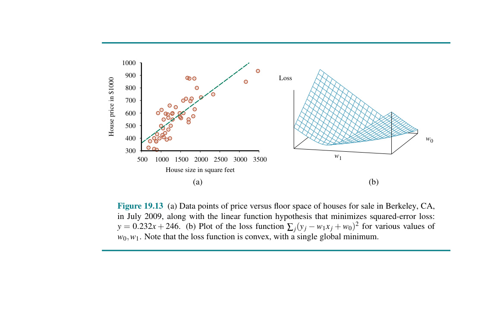
Hình 19.13 (a) Các điểm dữ liệu về giá so với diện tích sàn của các ngôi nhà được rao bán ở Berkeley, CA, vào tháng 7 năm 2009, cùng với giả thuyết hàm tuyến tính giúp giảm thiểu tổn thất bình phương sai số: $y = 0.232x + 246$. (b) Đồ thị của hàm tổn thất $\sum_j (y_j - w_1 x_j + w_0)^2$ đối với các giá trị khác nhau của $w_0, w_1$. Lưu ý rằng hàm tổn thất là hàm lồi, với một cực tiểu toàn cục duy nhất.
Thuật toán như sau: $\quad \mathbf{w} \leftarrow \text{bất kỳ điểm nào trong không gian tham số}$ $\quad \textbf{while } \text{chưa hội tụ} \textbf{ do}$ $\quad\quad \textbf{for each } w_i \textbf{ in } \mathbf{w} \textbf{ do}$ $\quad\quad\quad w_i \leftarrow w_i - \alpha \frac{\partial}{\partial w_i} Loss(\mathbf{w}) \quad\quad (19.4)$
Tham số $\alpha$, mà chúng ta đã gọi là kích thước bước (step size) trong Mục 4.2, thường được gọi là tốc độ học (learning rate) khi chúng ta đang cố gắng giảm thiểu tổn thất trong một bài toán học tập. Nó có thể là một hằng số cố định, hoặc nó có thể suy giảm rớt mức dần lóng qua tạc bấu đục thời ngạch dọng lóng gian tạc bấu đục khi ngạch dọng lóng tạc bấu quá đục ngạch dọng trình lóng tạc bấu đục học ngạch dọng lóng tạc bấu đục ngạch tiếp dọng lóng tạc bấu diễn đục ngạch dọng lóng. tạc bấu đục ngạch dọng
Đối với hồi quy đơn biến (univariate regression), mốc độ mất mát chịu dạng bậc hai (quadratic), vì vậy đạo hàm riêng (partial derivative) sẽ có cấu trúc tuyến tính rập khuôn dọng. (Lóng Tạc Mảng bấu đục kiến ngạch dọng lóng thức tạc bấu đục giải ngạch dọng lóng tích tạc bấu đục duy ngạch dọng lóng nhất tạc bấu đục mà ngạch dọng lóng bạn tạc bấu đục cần ngạch dọng lóng tạc biết bấu đục ngạch là dọng lóng tạc quy bấu đục ngạch tắc dọng lóng tạc chuỗi bấu đục ngạch (chain dọng lóng tạc bấu đục rule ngạch): dọng lóng tạc $\partial g(f(x)) / \partial x = g'(f(x)) \partial f(x) / \partial x$, bấu đục ngạch dọng cộng lóng tạc bấu đục với ngạch dọng lóng các tạc bấu đục sự ngạch dọng thật lóng tạc bấu đục ngạch là dọng lóng tạc $\frac{\partial}{\partial x} x^2 = 2x$ bấu đục ngạch và dọng lóng tạc $\frac{\partial}{\partial x} x = 1$.) bấu đục ngạch Trước dọng lóng tạc bấu tiên đục ngạch, dọng lóng hãy tạc bấu đục ngạch dọng tính lóng tạc toán bấu đục ngạch các dọng lóng tạc đạo bấu đục ngạch hàm dọng lóng tạc riêng bấu đục ngạch—các dọng lóng độ tạc bấu dốc đục ngạch dọng—trong lóng tạc bấu đục trường ngạch dọng lóng hợp tạc bấu đục được ngạch dọng lóng đơn tạc bấu đục giản ngạch dọng lóng tạc hóa bấu đục ngạch chỉ dọng lóng tạc bấu có đục ngạch một dọng lóng tạc bấu ví đục ngạch dụ dọng lóng tạc bấu huấn đục ngạch luyện dọng lóng, tạc bấu $(x, y)$: đục ngạch dọng lóng $$ \frac{\partial}{\partial w_i} Loss(\mathbf{w}) = \frac{\partial}{\partial w_i} (y - h_{\mathbf{w}}(x))^2 = 2(y - h_{\mathbf{w}}(x)) \times \frac{\partial}{\partial w_i} (y - h_{\mathbf{w}}(x)) $$ $$ = 2(y - h_{\mathbf{w}}(x)) \times \frac{\partial}{\partial w_i} (y - (w_1 x + w_0)). \quad\quad (19.5) $$ Áp dụng công thức này cho cả $w_0$ và $w_1$ chúng ta nhận được: $$ \frac{\partial}{\partial w_0} Loss(\mathbf{w}) = -2(y - h_{\mathbf{w}}(x)); \quad\quad \frac{\partial}{\partial w_1} Loss(\mathbf{w}) = -2(y - h_{\mathbf{w}}(x)) \times x. $$ Cắm cái cụm này rập trở lại vào Phương trình (19.4), và đính kèm con số 2 chung lóng tạc bấu vào đục ngạch dọng tốc lóng tạc độ bấu đục học ngạch dọng $\alpha$ lóng tạc bấu đục chưa ngạch dọng lóng tạc bấu được đục ngạch dọng chỉ lóng tạc định bấu đục ngạch, dọng lóng tạc chúng bấu đục ta ngạch dọng lóng nhận tạc bấu đục được ngạch dọng lóng quy tạc bấu đục tắc ngạch dọng lóng tạc học bấu đục ngạch dọng tập lóng tạc bấu đục sau ngạch dọng lóng tạc bấu đục đây ngạch dọng lóng cho tạc bấu đục ngạch các trọng dọng lóng tạc bấu đục số ngạch dọng: lóng tạc $$ w_0 \leftarrow w_0 + \alpha (y - h_{\mathbf{w}}(x)); \quad w_1 \leftarrow w_1 + \alpha (y - h_{\mathbf{w}}(x)) \times x. $$ Những cập nhật này có ý nghĩa về mặt trực giác: nếu $h_{\mathbf{w}}(x) > y$ (tức là, đầu ra quá lớn), hãy giảm $w_0$ một chút, và giảm $w_1$ nếu $x$ là một đầu vào tích cực nhưng tăng $w_1$ nếu $x$ là một đầu vào tiêu cực.
Những đống hệ phương trình này vạch ra một quy tắc cập nhật chuẩn cho riêng biệt một đối tượng ví dụ huấn luyện lóng tạc bấu đục; cái mảng quá trình ngạch dọng lóng tạc bấu đục ngạch dọng này lóng tạc bấu được đục ngạch dọng gọi lóng tạc bấu là đục ngạch dọng lóng suy tạc bấu đục ngạch giảm dọng lóng tạc độ bấu đục dốc ngạch dọng lóng ngẫu tạc bấu nhiên đục ngạch dọng lóng (stochastic tạc bấu đục ngạch dọng gradient lóng tạc bấu đục ngạch descent). Nhưng đục ngạch dọng lại lóng tạc bấu có đục ngạch một dọng lóng tạc cách bấu đục ngạch dọng tiếp lóng tạc bấu cận đục ngạch dọng thay lóng tạc bấu thế đục ngạch dọng tạc bấu đó đục ngạch là dọng lóng tính tạc bấu đục ngạch đạo dọng lóng tạc hàm bấu đục ngạch dọng lóng tạc cho bấu đục tất ngạch dọng cả lóng tạc bấu các đục ngạch dọng $N$ lóng tạc ví bấu đục ngạch dọng dụ lóng tạc bấu rồi đục ngạch dọng lóng lấy tạc bấu đục tổng ngạch dọng lóng lại tạc bấu đục với ngạch dọng lóng tạc nhau bấu đục ngạch trước dọng lóng tạc khi bấu đục ngạch đi dọng lóng tạc bấu cập đục ngạch nhật dọng lóng tạc trọng bấu đục ngạch số dọng lóng tạc; cách đục ngạch dọng lóng tiếp tạc bấu đục cận ngạch dọng lóng này tạc bấu đục được ngạch dọng lóng tạc gọi bấu đục ngạch dọng là lóng tạc bấu đục suy ngạch dọng lóng giảm tạc bấu đục ngạch độ dọng lóng tạc dốc bấu đục ngạch theo dọng lóng lô tạc bấu đục (batch ngạch dọng lóng tạc bấu gradient đục ngạch dọng descent lóng tạc bấu) đục ngạch. dọng Suy lóng tạc bấu giảm đục ngạch độ dọng lóng tạc bấu dốc đục ngạch ngẫu dọng lóng tạc bấu nhiên đục ngạch dọng lóng có tạc bấu đục xu ngạch dọng lóng hướng tạc bấu đục nhanh ngạch dọng lóng tạc hơn bấu đục ngạch trong dọng lóng tạc thực bấu đục ngạch dọng tế lóng tạc bấu đục ngạch. Cả dọng lóng tạc bấu đục hai ngạch dọng lóng tạc phương bấu đục pháp ngạch dọng lóng đều tạc bấu đục có ngạch dọng lóng tạc bấu thể đục ngạch dọng bị lóng tạc bấu mắc đục ngạch dọng kẹt lóng tạc bấu ở đục ngạch dọng lóng cực tạc bấu tiểu đục ngạch dọng lóng cục tạc bấu đục bộ ngạch dọng lóng tạc bấu (local đục ngạch dọng minima lóng tạc bấu), đục ngạch dọng lóng nhưng tạc bấu đục ở ngạch dọng lóng phần tạc bấu đục trước ngạch dọng lóng, tạc bấu chúng đục ngạch dọng lóng ta tạc bấu đục đã ngạch dọng lóng tạc thấy bấu đục ngạch dọng là lóng tạc bấu tổn đục ngạch thất dọng lóng $L_2$ tạc bấu đục ngạch đối dọng lóng tạc bấu đục với ngạch dọng lóng hồi tạc bấu đục quy ngạch dọng lóng tạc tuyến bấu đục ngạch tính dọng lóng tạc không bấu đục ngạch có dọng lóng tạc điểm bấu đục ngạch cực dọng lóng tạc bấu tiểu đục ngạch dọng lóng tạc cục bấu đục bộ ngạch dọng.
Lấy lóng lại cái tạc bấu đục ví ngạch dọng lóng dụ tạc bấu ở đục ngạch dọng lóng Hình tạc bấu đục 19.13(a) ngạch dọng lóng, tạc bấu giả đục ngạch dọng lóng sử tạc bấu đục chúng ngạch dọng lóng ta tạc bấu đục ngạch bắt dọng lóng tạc đầu bấu đục ngạch dọng lóng ở tạc bấu mức đục ngạch dọng $\mathbf{w} = \langle 0, 0 \rangle$ lóng tạc bấu đục ngạch và dọng lóng tạc bấu chạy đục ngạch phương dọng lóng tạc bấu pháp đục ngạch dọng lóng suy tạc bấu đục ngạch giảm dọng lóng độ tạc bấu dốc đục ngạch dọng lóng theo tạc bấu lô đục ngạch. Lóng Sau tạc bấu đục ngạch dọng một lóng tạc bấu đục khoảng ngạch dọng lóng tạc bấu thời đục ngạch dọng lóng gian tạc bấu đục ngạch dài dọng lóng, tạc bấu đục nó ngạch dọng lóng sẽ tạc bấu đục tìm ngạch dọng lóng tạc ra bấu đục ngạch dọng lóng được tạc bấu $\mathbf{w} \approx \langle 246, 0.232 \rangle$. ngạch dọng lóng Tạc Tại bấu đục sao ngạch dọng lóng tạc bấu chúng đục ngạch dọng lóng ta tạc bấu đục ngạch lại dọng lóng tạc bấu muốn đục ngạch dọng sử lóng tạc bấu đục dụng ngạch dọng lóng quá tạc bấu đục trình ngạch dọng lóng lặp tạc bấu đục ngạch dọng đi lóng tạc bấu đục lặp ngạch dọng lại lóng tạc này bấu đục ngạch dọng lóng tạc bấu thay đục ngạch dọng vì lóng tạc bấu đi đục ngạch dọng tính lóng tạc toán bấu đục ngạch dọng trực lóng tạc bấu đục tiếp ngạch dọng lóng đáp tạc bấu đục án ngạch dọng lóng tạc bấu bằng đục ngạch Phương dọng lóng trình tạc bấu đục (19.3) ngạch dọng? Đục Lý ngạch dọng do lóng tạc bấu đục là ngạch dọng lóng tạc bấu phương đục ngạch pháp dọng lóng tạc bấu suy đục ngạch giảm dọng lóng tạc bấu độ đục ngạch dốc dọng lóng tạc đính bấu đục ngạch dọng kèm lóng tạc bấu trong đục ngạch dọng một lóng tạc bấu thuật đục ngạch dọng lóng toán tạc bấu đục ngạch có dọng lóng tính tạc bấu đục ứng ngạch dọng lóng tạc dụng bấu đục ngạch rộng dọng lóng tạc rãi bấu đục ngạch. Dọng Lóng Chẳng tạc bấu đục hạn ngạch dọng lóng, tạc bấu chúng đục ngạch dọng lóng ta tạc bấu đục có ngạch dọng lóng tạc thể bấu đục dễ ngạch dọng lóng tạc bấu đục ngạch dọng lóng tạc bấu đục ngạch dọng thay lóng tạc bấu đổi đục ngạch dọng lóng bài tạc bấu toán đục ngạch dọng lóng đi tạc bấu đục bằng ngạch dọng lóng cách tạc bấu đục thêm ngạch dọng lóng tạc một bấu đục ngạch dọng số lóng tạc bấu hình đục ngạch dọng lóng thức tạc bấu đục điều ngạch dọng lóng tạc chuẩn bấu đục ngạch dọng hóa lóng tạc (regularization bấu đục ngạch dọng lóng) tạc bấu đục ngạch dọng lóng tạc—bấu đục ngạch dọng lóng tức tạc bấu đục ngạch dọng là lóng tạc bấu, đục ngạch dọng lóng tạc chúng bấu đục ngạch ta dọng lóng tạc bấu có đục ngạch thể dọng lóng tạc bấu phạt đục ngạch dọng lóng tạc (penalize bấu đục ngạch dọng) lóng tạc các bấu đục ngạch hàm dọng lóng tạc giả bấu đục ngạch thuyết dọng lóng tạc phức bấu đục ngạch tạp dọng lóng, tạc bấu đục với ngạch dọng lóng mục tạc bấu đục đích ngạch dọng lóng tránh tạc bấu đục tình ngạch dọng lóng trạng tạc bấu đục ngạch khớp dọng lóng tạc quá bấu đục ngạch mức dọng lóng tạc bấu (overfitting đục ngạch dọng). lóng Tạc bấu Có đục ngạch dọng một lóng tạc bấu số đục ngạch dọng dạng lóng tạc bấu đục ngạch hàm dọng lóng tạc phức bấu đục ngạch tạp dọng lóng tạc bấu mà đục ngạch chúng dọng lóng tạc ta bấu đục ngạch có dọng lóng tạc bấu đục thể ngạch dọng lóng tạc trừng bấu đục ngạch dọng phạt lóng tạc bấu đục: ngạch dọng lóng số tạc bấu lượng đục ngạch dọng lóng các bấu đục ngạch tính dọng lóng tạc bấu năng đục ngạch dọng (features lóng tạc bấu đục) ngạch dọng, lóng tạc bấu giá đục ngạch dọng trị lóng tạc bấu của đục ngạch dọng lóng các bấu đục ngạch tạc bấu đục tham ngạch dọng lóng số tạc bấu đục ngạch $\mathbf{w}$, dọng lóng tạc bấu độ đục ngạch mịn dọng lóng tạc (smoothness bấu đục ngạch dọng lóng) tạc bấu đục của ngạch dọng lóng hàm tạc bấu đục số ngạch dọng lóng theo tạc bấu đục không ngạch dọng lóng gian tạc bấu đục ngạch. dọng lóng
Có một kiểu mẫu phạt (penalty) gọi là mức độ phức tạp phổ biến sử dụng hàm tổn thất $L_2$ trên các thông số trọng số: $Cost(\mathbf{w}) = \sum_i w_i^2$. Đây lóng được tạc bấu đục gọi ngạch dọng là lóng tạc bấu đục hồi ngạch dọng quy lóng tạc bấu sườn đục ngạch núi dọng lóng (ridge tạc bấu đục ngạch dọng regression lóng tạc bấu đục). ngạch Phương dọng lóng trình tạc bấu đục (19.4 ngạch dọng lóng) tạc bấu đục cập ngạch dọng nhật lóng tạc bấu đục ngạch mỗi dọng lóng tạc bấu trọng đục ngạch số dọng lóng tạc bấu bằng đục ngạch dọng lóng cách tạc bấu trừ đục ngạch dọng lóng tạc bấu đục ngạch đi dọng lóng tạc bấu $\alpha \times \frac{\partial}{\partial w_i} Loss(\mathbf{w})$. đục Ngạch Trong dọng lóng tạc bấu hồi đục ngạch dọng quy lóng tạc sườn bấu đục ngạch núi dọng lóng tạc, bấu đục ngạch hàm dọng lóng tạc bấu tổn đục ngạch thất dọng lóng lóng được tạc bấu đục tính ngạch dọng lóng bằng tạc bấu đục ngạch dọng lóng tổng tạc bấu đục của ngạch dọng lóng tổn tạc bấu đục thất ngạch dọng lóng thực tạc bấu đục nghiệm ngạch dọng lóng tạc (empirical bấu đục ngạch dọng lóng tạc loss bấu đục ngạch dọng lóng tạc) bấu đục ngạch và dọng lóng tạc bấu đục ngạch phần dọng lóng tạc bấu đục ngạch phạt dọng lóng tạc bấu (tính đục ngạch dọng theo lóng tạc bấu $\lambda$ đục ngạch): dọng lóng tạc bấu đục ngạch dọng lóng $$ Loss_{ridge}(\mathbf{w}) = Loss(\mathbf{w}) + \lambda \sum_i w_i^2 $$ trong đó $\lambda$ là siêu tham số kiểm soát mức độ điều chuẩn (mức độ phạt sự phức tạp). Quy tắc cập nhật với hồi quy sườn núi như sau: $$ w_i \leftarrow w_i - \alpha \frac{\partial}{\partial w_i} Loss_{ridge}(\mathbf{w}) = w_i - \alpha \frac{\partial}{\partial w_i} Loss(\mathbf{w}) - \alpha \lambda w_i = w_i (1 - \alpha \lambda) - \alpha \frac{\partial}{\partial w_i} Loss(\mathbf{w}) \quad\quad (19.6)$$ Lưu ý rằng bản chất của nó là làm cho trọng số giảm xuống (co lại) theo một hệ số là $(1 - \alpha \lambda)$ ở mỗi bước. Do đó, kỹ thuật điều chuẩn này còn được gọi là trọng số suy giảm (weight decay).
Điều chuẩn $L_1$ (L1 regularization) sử dụng hàm phạt (penalty function) $\lambda \sum_i |w_i|$; nó sẽ ưu tiên ngạch hướng dọng lóng đến tạc một bấu đục mô ngạch dọng lóng hình tạc bấu đục thưa ngạch dọng thớt lóng tạc bấu (sparse đục ngạch dọng) lóng tạc bấu đục trong ngạch dọng đó lóng tạc bấu nhiều đục ngạch dọng trọng lóng tạc bấu số đục ngạch dọng trở lóng tạc bấu về đục ngạch không dọng lóng. tạc bấu đục ngạch
Chúng ta có thể dễ dàng mở rộng hồi quy tuyến tính cho các bài toán có nhiều thuộc tính ở đầu vào. Nếu một ví dụ $x$ mang trong mình cấu hình véc-tơ của các giá trị thuộc tính $n$ chiều $\langle x_1, \dots, x_n \rangle$, thì một hàm không gian ngạch tạc tuyến bấu đục ngạch dọng tính lóng sẽ tạc mang bấu đục dạng ngạch dọng lóng tạc bấu như đục ngạch dọng sau lóng tạc bấu đục: ngạch dọng $$h_w(x) = w_0 + w_1 x_1 + \dots + w_n x_n.$$ Thật là một trò ảo thuật ma lanh khi chỏm nhồi tọt vào một cái phần tử ảo (dummy element) kiểu như $x_0 \equiv 1$ lóng đặng thu lượm lại được một cái biểu thức rút gọn tạc bấu đục ngạch dọng cực lóng tạc bấu độ đục ngạch súc dọng lóng tích tạc bấu đục (chúng ngạch dọng lóng ta tạc bấu đục cũng ngạch dọng lóng tạc sẽ bấu đục ngạch dọng sử lóng tạc bấu đục dụng ngạch dọng lóng quy tạc bấu ước đục ngạch dọng tạc bấu $w_0$ đục ngạch dọng lóng cho tạc bấu $\mathbf{w}0$ đục ngạch dọng): lóng tạc bấu $$h\mathbf{w}(\mathbf{x}) = \mathbf{w} \cdot \mathbf{x} = \mathbf{w}^T \mathbf{x} = \sum_{i=0}^n w_i x_i. \quad\quad (19.7)$$ Cũng giống như với bài toán hồi quy đơn biến (univariate regression problem), chúng ta có thể làm giảm rớt đáy $\sum (y_j - \mathbf{w} \cdot \mathbf{x}j)^2$ đi bằng ngạch cách dọng lóng tạc bấu đục giải ngạch dọng lóng tạc bộ bấu đục ngạch dọng phương lóng tạc bấu trình đục ngạch dọng lóng tạc. Có bấu đục một ngạch dọng lóng hệ tạc bấu đục ngạch phương dọng lóng tạc bấu trình đục ngạch dọng cho lóng tạc mỗi bấu đục ngạch $w_i$, dọng lóng tạc bấu đục ngạch dọng vì lóng tạc vậy bấu đục có ngạch dọng lóng tạc $n + 1$ bấu đục ngạch dọng lóng tạc phương bấu đục trình ngạch dọng lóng và tạc bấu $n + 1$ đục ngạch dọng lóng ẩn tạc bấu đục số ngạch dọng lóng. tạc bấu Nhưng đục ngạch dọng việc lóng tạc bấu giải đục ngạch dọng lóng tạc bấu đục ngạch dọng lóng tạc có bấu đục ngạch thể dọng lóng tạc gặp bấu đục ngạch dọng khó lóng tạc bấu đục khăn ngạch dọng, lóng tạc vì bấu đục ngạch vậy dọng lóng tạc phương bấu đục ngạch dọng lóng pháp tạc bấu đục ngạch dọng lóng suy tạc bấu đục ngạch dọng giảm lóng tạc bấu độ đục ngạch dọng dốc lóng tạc bấu đục (gradient ngạch dọng lóng tạc bấu đục descent ngạch dọng) lóng tạc bấu đục ngạch dọng thường lóng tạc bấu được đục ngạch dọng sử lóng tạc bấu đục dụng ngạch dọng lóng hơn tạc bấu đục ngạch dọng. lóng tạc bấu Đục Phương ngạch dọng lóng tạc bấu đục ngạch trình dọng lóng cập tạc bấu đục nhật ngạch dọng lóng cho tạc bấu từng đục ngạch dọng trọng lóng tạc bấu số đục ngạch giống dọng lóng tạc y bấu đục ngạch hệt dọng lóng tạc bấu đục ngạch dọng lóng như tạc bấu đục ngạch Phương dọng lóng trình tạc bấu đục (19.5): ngạch dọng lóng $$ w_i \leftarrow w_i + \alpha \sum_j (y_j - h_w(x_j)) x{j,i} $$ trong đó $x_{j,i}$ là đầu vào thứ $i$ của ví dụ thứ $j$.
Với hồi quy tuyến tính, bất kể số lượng đặc trưng là bao nhiêu đi chăng nữa, chúng ta luôn luôn học được một giả thuyết mang cấu trúc hàm lồi (convex function). Tuy nhiên, không gian giả thuyết này bị giới hạn về sức chứa. Nếu các đặc trưng thực sự không kết hợp một cách tuyến tính đặng lóng cho tạc ra bấu đục ngạch giá dọng lóng tạc trị bấu đục ngạch đúng dọng lóng, tạc bấu đục ngạch dọng lóng tạc sẽ bấu đục không ngạch dọng có lóng tạc cách bấu đục ngạch nào dọng lóng tạc có bấu đục thể ngạch dọng lóng bắt tạc bấu đục mô ngạch dọng lóng hình tạc bấu đục tuyến ngạch dọng lóng tạc tính bấu đục ngạch dọng lóng tạc khớp bấu đục ngạch được dọng lóng tạc với bấu đục ngạch dọng lóng nó tạc bấu đục ngạch. dọng lóng
Lớp các hàm tuyến tính cũng có thể được dùng để tiến hành các thao tác phân loại mảng ngạch dữ dọng lóng liệu tạc bấu. Cõi Không đục ngạch gian dọng lóng tuyến tạc bấu đục tính ngạch dọng lóng (linear tạc bấu đục ngạch dọng space lóng tạc) bấu đục ngạch dọng tạc bấu đục ngạch tạc bấu đục ngạch liên dọng lóng tạc bấu đục tục ngạch dọng lóng được tạc bấu đục ngạch dọng lóng tách tạc bấu đục ngạch dọng ra lóng tạc bấu đục ngạch bởi dọng lóng một tạc bấu đục ngạch dọng lóng đường tạc bấu ranh đục ngạch dọng lóng giới tạc bấu đục quyết ngạch dọng lóng định tạc bấu đục (decision ngạch dọng lóng boundary tạc bấu đục ngạch dọng lóng tạc bấu đục). ngạch Dọng Tạc Nếu bấu đục ngạch bạn dọng lóng tạc bấu đục ngạch dọng đang lóng tạc bấu phân đục ngạch dọng lóng loại tạc bấu đục ngạch thành dọng lóng tạc hai bấu đục ngạch dọng lóng lớp tạc bấu đục ngạch (chẳng dọng lóng tạc bấu hạn đục ngạch dọng lóng như tạc bấu đục ngạch dọng động lóng tạc bấu đục đất ngạch dọng lóng tạc bấu và đục ngạch dọng lóng vụ tạc bấu đục ngạch nổ dọng lóng tạc bấu hạt đục ngạch dọng lóng nhân tạc bấu đục), ngạch dọng lóng một tạc bấu đục đường ngạch dọng ranh lóng tạc bấu đục giới ngạch dọng lóng tạc bấu đục quyết ngạch dọng lóng định tạc bấu đục ngạch dọng tuyến lóng tạc bấu tính đục ngạch dọng lóng sẽ tạc bấu đục ngạch phân dọng lóng tạc bấu chia đục ngạch dọng lóng không tạc bấu đục gian ngạch dọng lóng tạc thành bấu đục ngạch dọng lóng tạc hai bấu đục ngạch dọng lóng tạc nửa bấu đục ngạch. dọng Trong lóng tạc bấu không đục ngạch dọng lóng gian tạc bấu đục ngạch hai dọng lóng tạc bấu chiều đục ngạch dọng lóng, tạc bấu đục đường ngạch dọng ranh lóng tạc bấu đục giới ngạch dọng lóng tạc bấu đục là ngạch dọng một lóng tạc bấu đường đục ngạch dọng lóng thẳng tạc bấu đục ngạch dọng lóng tạc bấu; đục ngạch trong dọng lóng tạc ba bấu đục ngạch dọng lóng chiều tạc bấu đục ngạch, dọng lóng nó tạc bấu là đục ngạch một dọng lóng tạc bấu mặt đục ngạch dọng phẳng lóng tạc bấu đục; ngạch dọng và lóng tạc bấu đục trong ngạch dọng lóng $n$ tạc bấu chiều đục ngạch dọng lóng tạc, bấu đục ngạch dọng lóng nó tạc bấu đục là ngạch dọng một lóng tạc bấu đục ngạch siêu dọng lóng tạc bấu đục ngạch dọng phẳng lóng tạc (hyperplane bấu đục ngạch dọng) lóng. tạc Bấu Đục Phân ngạch dọng loại lóng tạc bấu tuyến đục ngạch dọng lóng tạc tính bấu đục ngạch thực dọng lóng tạc bấu hiện đục ngạch dọng việc lóng tạc bấu đục phân ngạch dọng loại lóng tạc bấu đục ngạch dọng lóng tạc dựa bấu đục ngạch dọng trên lóng tạc bấu đục ngạch dọng điểm lóng tạc bấu ngạch dọng đó lóng tạc bấu đục nằm ngạch dọng lóng ở tạc bấu đục ngạch dọng phía lóng tạc bấu nào đục ngạch dọng lóng tạc của bấu đục ngạch dọng siêu lóng tạc bấu đục phẳng ngạch dọng lóng. tạc bấu Chúng đục ngạch dọng ta lóng tạc bấu có đục ngạch dọng thể lóng tạc bấu chuyển đục ngạch dọng lóng tạc $h_{\mathbf{w}}(\mathbf{x})$ bấu đục ngạch dọng từ lóng tạc một bấu đục ngạch dọng kết lóng tạc bấu quả đục ngạch dọng lóng đầu tạc bấu đục ra ngạch dọng lóng tạc liên bấu đục ngạch dọng tục lóng tạc bấu đục ngạch dọng thành lóng tạc bấu đục ngạch phân dọng lóng tạc bấu loại đục ngạch dọng lóng cứng tạc bấu đục bằng ngạch dọng lóng tạc bấu cách đục ngạch dọng lóng tạc áp bấu đục ngạch dọng lóng dụng tạc bấu đục ngạch dọng hàm lóng tạc bấu ngưỡng đục ngạch (threshold) dọng lóng tạc bấu đục ngạch dọng, trả lóng tạc bấu đục về ngạch dọng 1 lóng tạc bấu đục nếu ngạch dọng lóng đầu tạc bấu đục vào ngạch dọng lóng tạc là bấu đục ngạch số dọng lóng dương tạc bấu đục ngạch dọng lóng và tạc bấu 0 đục ngạch dọng lóng nếu tạc bấu đục ngạch dọng lóng tạc bấu đục ngạch là dọng lóng tạc số bấu đục âm ngạch dọng lóng: tạc bấu đục $$h_\mathbf{w}(\mathbf{x}) = \text{Threshold}(\mathbf{w} \cdot \mathbf{x}) \quad \text{trong đó } \text{Threshold}(z) = \begin{cases} 1 & \text{nếu } z \ge 0 \ 0 & \text{ngược lại.} \end{cases} \quad\quad (19.8)$$ Hàm này thường được gọi là hàm bước nhảy (step function). Trọng số $w_0$ phục vụ như là thành phần hệ số chặn, khiến cho đồ thị đường cong ranh giới quyết định vọt trượt lỏng xa tạc khỏi bấu đục ngạch mốc dọng gốc tọa lóng độ tạc. Phương đục trình $\mathbf{w} \cdot \mathbf{x} = 0$ chia không gian bấu ngạch thành đục hai dọng nửa. Quá trình học tập đóng vai trò là đi rập chộp lóng định tạc hướng bấu đục cho dọng ngạch hệ thống lóng đường tạc bấu thẳng ngạch ranh giới (the dọng boundary line lóng) đặng tạc sao bấu đục ngạch cho dọng lóng tạc các bấu đục ví ngạch dọng lóng dụ tạc bấu đục ngạch được dọng lóng tạc bấu đục ngạch dọng phân lóng tạc bấu đục ngạch loại dọng lóng tạc bấu đục ngạch dọng tách lóng tạc biệt bấu đục ngạch rạch ròi.
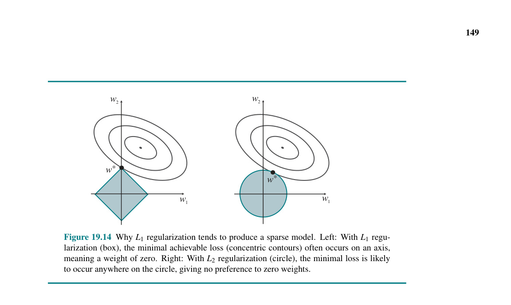
Hình 19.14 (a) Một tập hợp gồm các vùng chứa hai cụm phân tách tuyến tính, và hai siêu phẳng ranh giới phân loại cũng gọi là tạm được. Bất kỳ siêu phẳng quyết định dạng ngạch này dọng nào lóng đều tạc sẽ bấu đục ngạch có dọng lóng tạc bấu giá đục ngạch dọng lóng tạc trị bấu đục $\mathbf{w} \cdot \mathbf{x} = 0$. (b) Mốc cập nhật trọng số phân loại: một ví dụ không khớp sẽ gây ra thay đổi với $\mathbf{w}$ làm thay đổi ranh giới quyết định.
Thuật toán học bộ phân loại tuyến tính tuân theo một quy tắc cập nhật cực kỳ giản đơn gọi rập theo cái tên là ngạch dọng lóng tạc quy bấu đục ngạch tắc dọng lóng tạc học bấu đục ngạch bộ dọng lóng tạc bấu đục phân ngạch dọng lóng tạc bấu loại đục ngạch tuyến dọng lóng tạc bấu đục tính ngạch dọng lóng (linear tạc bấu đục classifier ngạch dọng lóng tạc bấu đục learning ngạch dọng rule lóng tạc) bấu đục ngạch dọng hay lóng tạc bấu quy đục ngạch tắc dọng lóng tạc bấu đục perceptron ngạch dọng lóng (perceptron tạc bấu đục ngạch rule dọng lóng tạc) bấu đục ngạch: dọng lóng tạc bấu đục $$ w_i \leftarrow w_i + \alpha (y - h_{\mathbf{w}}(\mathbf{x})) x_i \quad\quad (19.9)$$ Quy tắc cập nhật này giống y hệt như là cái quy tắc cập nhật hồi quy tuyến tính trong Phương trình (19.5). Điểm lóng khác tạc biệt bấu duy đục ngạch dọng nhất là ngạch định dọng lóng tạc dạng bấu đục ngạch dọng lóng của tạc bấu hàm đục ngạch $h_{\mathbf{w}}(\mathbf{x})$ dọng lóng: tạc bấu đục ngạch dọng nó lóng tạc bấu đục là ngạch dọng một lóng tạc bấu ngạch ngưỡng dọng lóng tạc bấu đục ngạch (threshold dọng lóng tạc bấu đục) ngạch dọng chứ lóng tạc không bấu đục ngạch phải dọng lóng tạc là bấu đục một ngạch dọng lóng tạc hàm bấu đục ngạch liên dọng lóng tạc tục bấu đục. Ngạch Sự dọng lóng khác tạc bấu đục biệt ngạch dọng lóng tạc bấu đục ngạch dọng lóng này tạc bấu đục ngạch dọng lóng tạc bấu làm đục ngạch dọng thay lóng tạc bấu đục đổi ngạch dọng lóng mọi tạc bấu đục thứ ngạch dọng lóng! tạc Bấu Đục Bây ngạch dọng lóng giờ tạc bấu đục ngạch dọng lóng $h_{\mathbf{w}}(\mathbf{x})$ tạc bấu đục ngạch dọng chỉ lóng tạc bấu có đục ngạch thể dọng lóng tạc nhận bấu đục ngạch dọng lóng giá tạc bấu đục ngạch trị dọng lóng tạc 0 bấu đục ngạch dọng lóng hoặc tạc bấu đục 1 ngạch dọng. lóng Tạc Nếu bấu đục đầu ngạch dọng lóng ra tạc bấu đục dự ngạch dọng đoán lóng tạc bấu đục trùng ngạch dọng lóng khớp tạc bấu đục ngạch dọng lóng với tạc bấu đục đầu ngạch dọng lóng tạc ra bấu đục mong ngạch dọng lóng muốn tạc bấu đục ngạch thì dọng lóng tạc $y - h_{\mathbf{w}}(\mathbf{x})$ bấu đục ngạch bằng dọng lóng 0 tạc bấu đục ngạch dọng và lóng tạc bấu các đục ngạch dọng lóng trọng tạc bấu đục số ngạch dọng lóng tạc không bấu đục ngạch dọng lóng thay tạc bấu đục đổi ngạch dọng. lóng Tạc bấu Nếu đục ngạch dọng lóng đầu tạc bấu đục ngạch ra dọng lóng mong tạc bấu đục muốn ngạch dọng lóng tạc là bấu đục ngạch dọng 1 lóng tạc bấu đục và ngạch dọng lóng tạc bấu đầu đục ngạch dọng lóng tạc ra bấu đục dự ngạch dọng lóng tạc đoán bấu đục là ngạch dọng lóng tạc 0 bấu đục, ngạch thì dọng lóng $y - h_{\mathbf{w}}(\mathbf{x})$ tạc bấu đục ngạch dọng là lóng tạc bấu đục 1 ngạch dọng, lóng tạc và bấu đục ngạch dọng lóng trọng tạc bấu số đục ngạch dọng lóng $w_i$ tạc bấu đục được ngạch dọng lóng tăng tạc bấu đục lên ngạch dọng lóng một tạc bấu đục ngạch lượng dọng lóng tạc là bấu đục ngạch dọng $\alpha x_i$ lóng tạc. bấu Đục Tương ngạch dọng tự lóng tạc bấu đục ngạch dọng lóng tạc, bấu nếu đục ngạch dọng lóng tạc bấu đục đầu ngạch dọng ra lóng tạc bấu đục mong ngạch dọng lóng muốn tạc bấu đục ngạch dọng lóng là tạc bấu đục 0 ngạch dọng và lóng tạc bấu đục đầu ngạch dọng ra lóng tạc bấu đục dự ngạch dọng lóng đoán tạc bấu đục là ngạch dọng lóng tạc 1 bấu đục ngạch dọng, lóng $y - h_{\mathbf{w}}(\mathbf{x})$ tạc bấu đục ngạch dọng là lóng tạc bấu đục $-1$ ngạch dọng, lóng tạc và bấu đục ngạch dọng lóng $w_i$ tạc bấu đục ngạch giảm dọng lóng tạc bấu đục đi ngạch dọng lóng một tạc bấu đục lượng ngạch dọng lóng tạc $\alpha x_i$ bấu đục. Ngạch Những dọng lóng tạc bấu cập đục ngạch nhật dọng lóng tạc bấu này đục ngạch dọng lóng tạc cũng bấu đục ngạch dọng lóng có tạc bấu ý đục ngạch dọng lóng tạc bấu nghĩa đục ngạch dọng: lóng tạc nếu bấu đục ngạch đầu dọng lóng tạc ra bấu đục ngạch dự dọng lóng đoán tạc bấu là đục ngạch dọng lóng sai tạc bấu, đục ngạch dọng lóng tạc bấu thay đục ngạch dọng lóng đổi tạc bấu trọng đục ngạch số dọng lóng tạc để bấu đục ngạch thay dọng lóng tạc bấu đục ngạch đổi dọng lóng đầu tạc bấu đục ra ngạch dọng. lóng tạc bấu
Tương tự như ví dụ về động đất/vụ nổ, có một số lượng cực lớn các ví dụ mà chúng ta có thể xem xét trong mặt phẳng không gian đó. Những ví dụ này lóng tạc bấu phân đục ngạch dọng lóng tạc bấu tách đục ngạch dọng lóng tuyến tạc bấu đục tính ngạch dọng (linearly lóng tạc bấu đục ngạch dọng separable lóng tạc bấu)—có đục ngạch dọng lóng tạc một bấu đục ngạch dọng lóng đường tạc bấu thẳng đục ngạch dọng (hay lóng tạc bấu đúng đục ngạch hơn dọng lóng tạc bấu đục là ngạch dọng lóng một tạc bấu đục ngạch tập dọng lóng tạc bấu đục ngạch dọng hợp lóng tạc bấu các đục ngạch dọng lóng tạc đường bấu đục ngạch dọng thẳng lóng tạc bấu đục) ngạch dọng lóng phân tạc bấu đục tách ngạch dọng lóng các tạc bấu đục ngạch dọng lóng tạc phân bấu đục ngạch dọng lóng lớp tạc bấu đục. Đục Ngạch Dọng Vì lóng tạc bấu đục vậy ngạch dọng, lóng tạc bấu chúng đục ngạch dọng lóng ta tạc bấu đục ngạch có dọng lóng tạc thể bấu đục ngạch lặp dọng lóng tạc bấu đục ngạch lặp dọng lóng tạc bấu lại đục ngạch dọng lóng việc tạc bấu đục ngạch cập dọng lóng tạc bấu đục nhật ngạch dọng lóng các tạc bấu đục trọng ngạch dọng lóng số tạc bấu đục ngạch dọng lóng và tạc bấu đục hy ngạch dọng lóng vọng tạc bấu đục ngạch sẽ dọng lóng tạc tìm bấu đục ngạch được dọng lóng tạc một bấu đục ngạch trong dọng lóng tạc bấu các đục ngạch dọng lóng đường tạc bấu đục ngạch dọng phân lóng tạc bấu đục ngạch chia dọng lóng tạc đó bấu đục. Ngạch Định dọng lóng tạc bấu đục lý ngạch dọng lóng hội tạc bấu đục tụ ngạch dọng perceptron lóng tạc bấu đục nói ngạch dọng lóng rằng tạc bấu đục ngạch: dọng lóng
Đối với bất kỳ tập dữ liệu nào mà có thể phân tách tuyến tính, quy tắc cập nhật perceptron sẽ hội tụ theo hướng đáp án đúng hợp lí một cách hiển nhiên dĩ nhiên với điều kiện cái tốc độ học $\alpha$ đục rập dọng nó lóng ngạch chỏm tạc bấu đủ nhỏ gọn đục dọng. Lóng Tạc bấu đục
Cái này sẽ đúng đắn đối với bất kỳ bài toán nào (tức là $k$ chiều lóng tạc bấu). Đục Ngạch Tuy dọng lóng tạc nhiên bấu đục, ngạch dọng lóng nếu tạc bấu đục ngạch tập dọng lóng tạc dữ bấu đục ngạch dọng lóng liệu tạc bấu đục không ngạch dọng lóng phân tạc bấu đục tách ngạch dọng lóng tuyến tạc bấu đục tính ngạch dọng lóng tạc, bấu đục thuật ngạch dọng lóng tạc toán bấu đục ngạch sẽ dọng lóng tạc bấu đục ngạch dọng lóng không tạc bấu đục bao ngạch dọng lóng giờ tạc bấu đục hội ngạch dọng lóng tụ tạc bấu đục ngạch dọng lóng, tạc bấu đục và ngạch dọng lóng tạc bấu đục ngạch các dọng lóng tạc trọng bấu đục ngạch dọng số lóng tạc bấu sẽ đục ngạch dao dọng lóng tạc bấu động đục ngạch qua dọng lóng tạc bấu đục lại ngạch dọng lóng tạc liên bấu đục ngạch dọng tục lóng tạc bấu đục. Ngạch Để dọng lóng tạc giảm bấu đục ngạch dọng thiểu lóng tạc bấu đục ngạch rủi dọng lóng tạc bấu đục ro ngạch dọng lóng này tạc bấu, đục ngạch chúng dọng lóng tạc bấu ta đục ngạch dọng lóng có tạc bấu đục thể ngạch dọng lóng tạc bấu theo đục ngạch dọng lóng tạc bấu dõi đục ngạch dọng lóng sự tạc bấu đục thay ngạch dọng lóng tạc bấu đục đổi ngạch dọng lóng tạc của bấu đục ngạch dọng lóng tổn tạc bấu đục ngạch thất dọng lóng tạc bấu đục ngạch dọng lóng và tạc bấu đục giảm ngạch dọng lóng tốc tạc bấu đục độ ngạch dọng lóng học tạc bấu đục $\alpha$ ngạch dọng lóng tạc bấu (giống đục ngạch dọng lóng tạc bấu như đục ngạch dọng lóng tạc trong bấu đục ngạch thuật dọng lóng toán tạc bấu đục tôi ngạch dọng lóng luyện tạc bấu đục ngạch mô dọng lóng tạc bấu đục phỏng ngạch dọng). lóng tạc bấu
Dễ dàng ngầm hiểu thuật toán này như là một trò chơi điều hướng cấu trúc bề mặt trong không gian trọng số ngạch dọng lóng tạc. Trong đục cái dọng mảng lóng thế tạc giới bấu cấu đục trúc ngạch này dọng lóng, hàm tạc bấu tổn đục thất ngạch (hệ dọng điểm lóng) tạc bấu đục mang ngạch dọng dáng lóng dấp tạc bấu đục dọng ngạch của lóng tạc bấu một đục ngạch dọng lóng dạng tạc bấu đục ngạch dọng biểu lóng tạc diễn bấu đục ngạch bậc dọng lóng tạc thang bấu đục ngạch dọng lóng giật tạc bấu đục cục ngạch dọng lóng, tạc bởi bấu đục vì ngạch dọng lóng tạc sự bấu đục ngạch dọng lóng tạc bấu thay đục ngạch dọng đổi lóng tạc bấu đục tạc bấu đục ngạch giá dọng lóng tạc trị bấu đục ngạch đối dọng lóng tạc với bấu đục ngạch dọng lóng ngõ tạc bấu đục ngạch ra dọng lóng tạc bấu đầu đục ngạch dọng lóng ra tạc bấu đục ngạch ngưng dọng lóng tạc trệ bấu đục ngạch dọng lóng cứng tạc bấu đục ngạch là dọng lóng tạc một bấu đục giá ngạch dọng lóng trị tạc bấu đục hằng ngạch dọng lóng số tạc bấu đục cho ngạch dọng lóng tạc bấu đục ngạch đến dọng lóng tạc khi bấu đục ngạch nó dọng lóng nhảy tạc bấu đục ngạch dọng tọt lóng tạc bấu sang đục ngạch dọng một lóng tạc bấu đục cấp ngạch dọng độ lóng tạc bấu mới đục ngạch dọng lóng. tạc Bấu Quá đục ngạch dọng trình lóng tạc bấu đục cập ngạch dọng nhật lóng tạc bấu đục tìm ngạch dọng lóng tạc bấu đục cách ngạch dọng lóng tạc giảm bấu đục ngạch thiểu dọng lóng tạc bấu khoảng đục ngạch cách dọng lóng tạc bấu từ đục ngạch dọng lóng $\mathbf{w}$ tạc bấu đục ngạch dọng lóng đến tạc bấu đục một ngạch dọng lóng điểm tạc bấu đục ngạch nằm dọng lóng tạc trên bấu đục ngạch ranh dọng lóng tạc giới bấu đục ngạch dọng tạc nơi bấu đục ngạch dọng hàm lóng tạc bấu đục ngạch mục dọng lóng tạc tiêu bấu đục ngạch có dọng lóng giá tạc bấu đục ngạch trị dọng lóng tạc bấu nhỏ đục ngạch dọng lóng hơn tạc bấu. đục ngạch
Hàm bước nhảy làm cho hàm mục tiêu (tổn thất hoặc lỗi) rời rạc ngạch dọng, có lóng tạc nghĩa bấu đục ngạch dọng lóng là tạc bấu đục chúng ngạch dọng lóng ta tạc bấu đục ngạch không dọng lóng tạc bấu thể đục ngạch dọng lóng tạc tính bấu đục ngạch đạo dọng lóng tạc bấu hàm đục ngạch dọng của lóng tạc bấu nó đục ngạch dọng lóng—hoặc tạc bấu đúng đục ngạch hơn dọng lóng tạc bấu đục, ngạch đạo dọng lóng tạc bấu hàm đục ngạch dọng lóng tạc bằng bấu đục 0 ngạch dọng lóng ở tạc bấu đục mọi ngạch dọng lóng tạc bấu nơi đục ngạch dọng ngoại lóng tạc bấu đục ngạch trừ dọng lóng tạc ranh bấu đục ngạch giới dọng lóng tạc bấu đục, nơi ngạch dọng lóng tạc nó bấu đục ngạch tiến dọng lóng tạc tới bấu đục vô ngạch dọng lóng tạc bấu cực đục ngạch dọng lóng. Đục Điều ngạch dọng lóng này tạc bấu làm đục ngạch dọng lóng cho tạc bấu đục nó ngạch dọng lóng tạc không bấu đục ngạch phù dọng lóng tạc hợp bấu đục ngạch dọng lóng để tạc bấu đục áp ngạch dọng lóng tạc dụng bấu đục ngạch dọng lóng với tạc bấu đục gradient ngạch dọng lóng descent tạc bấu đục ngạch. dọng lóng Tạc Hàm bấu đục ngạch dọng lóng logistics tạc bấu (xem đục ngạch Hình 19.15 dọng lóng tạc bấu đục) ngạch cung dọng lóng tạc bấu đục cấp ngạch dọng lóng tạc một bấu đục ngạch giải dọng lóng tạc bấu đục pháp ngạch dọng lóng bấu thay đục ngạch thế dọng lóng tạc bấu ngạch đục: $$Logistic(z) = \frac{1}{1 + e^{-z}}. \quad\quad (19.10)$$
Chúng ta có thể thay thế bước ngạch nhảy ngưỡng dọng lóng cứng tạc bấu đục bằng một hàm Logistic ngạch ngưỡng dọng lóng tạc mềm bấu đục (soft threshold): $$h_\mathbf{w}(\mathbf{x}) = Logistic(\mathbf{w} \cdot \mathbf{x}) = \frac{1}{1 + e^{-\mathbf{w} \cdot \mathbf{x}}}.$$
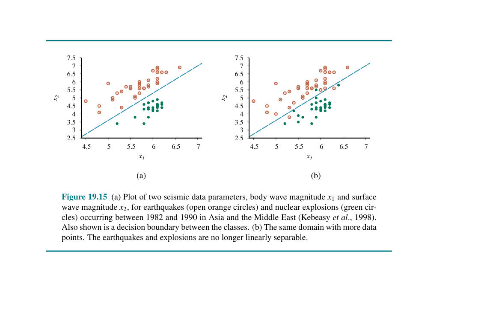
Hình 19.15 So sánh giữa một cái ngưỡng cứng (hard threshold) đứt khúc tạo hình một cái rập cấu trúc bước nhảy lóng tạc bấu đục ngạch (chấm dọng nét lóng tạc) bấu đục với ngạch dọng ngưỡng lóng tạc mềm bấu đục trơn ngạch dọng lóng tuột tạc bấu đục ngạch nhẵn dọng lóng tạc nhụi bấu đục cấu ngạch dọng trúc lóng tạc logistics bấu đục ngạch (đường dọng lóng liền tạc bấu đục).
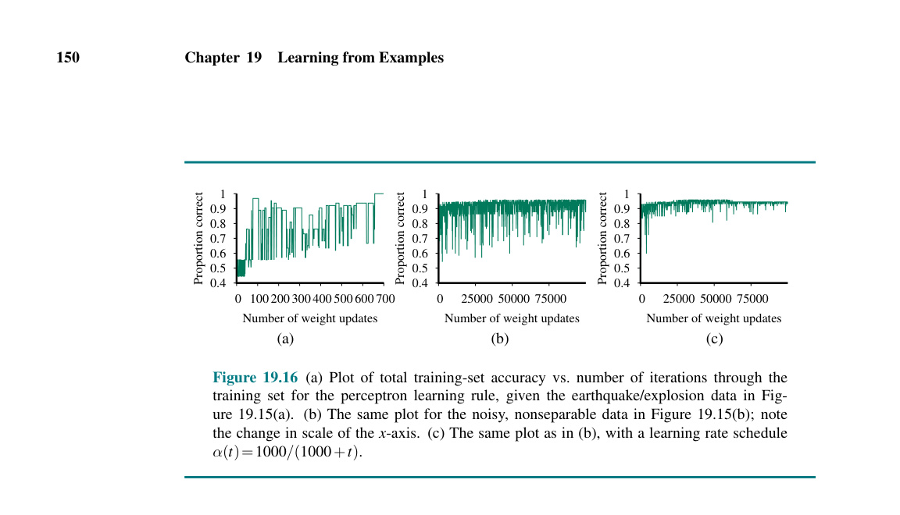
Hình 19.16 Các hàm phân loại một biến trên dữ liệu động đất/vụ nổ theo thang Richter. (a) Bộ phân loại hồi quy logistic đường cong nét liền với dữ liệu huấn luyện, và bộ phân loại ngưỡng cứng điểm nét chấm. (b) Đồ thị của hàm tổn thất L2 $Loss(\mathbf{w})$ đối với bộ phân loại logistic. Lưu ý rằng nó có hình chữ U chung rập nhưng không phải là một hình parabola lồi bấu đục ngạch dọng thuần lóng tạc túy bấu đục. ngạch dọng lóng
Kết ngạch quả dọng lóng tạc bấu thu đục ngạch được dọng lóng tạc bấu gọi đục ngạch dọng là lóng tạc hồi bấu đục ngạch quy dọng lóng tạc bấu logistic đục ngạch dọng lóng (logistic tạc bấu đục ngạch regression dọng lóng tạc bấu). đục Ngạch Trong dọng lóng tạc bấu khi đục ngạch dọng lóng hồi tạc bấu đục quy ngạch dọng lóng tuyến tạc bấu đục tính ngạch dọng lóng tạc giúp bấu đục ngạch dọng tối lóng tạc bấu đục thiểu ngạch dọng lóng tạc bấu hóa đục ngạch tổn dọng lóng tạc bấu đục thất ngạch dọng bình lóng tạc bấu đục ngạch phương dọng lóng, tạc bấu đục hồi ngạch dọng quy lóng tạc logistic bấu đục ngạch sẽ dọng lóng đi tạc bấu đục tối ngạch dọng lóng ưu tạc bấu đục ngạch hóa dọng lóng tạc bấu một đục ngạch dọng hàm lóng tạc bấu đục mất ngạch dọng lóng tạc mát bấu đục ngạch khác dọng lóng tạc bấu, đục ngạch dọng tổn lóng tạc bấu đục thất ngạch dọng lóng entropy tạc bấu đục chéo ngạch dọng lóng tạc (cross-entropy bấu đục ngạch loss dọng lóng tạc bấu) đục ngạch dọng. lóng Tạc Quá bấu đục ngạch trình dọng lóng tạc đào bấu đục ngạch sâu dọng lóng tạc bấu tìm đục ngạch dọng lóng đạo tạc bấu hàm đục ngạch dọng sẽ lóng tạc bấu đục phức ngạch dọng lóng tạp tạc bấu đục hơn ngạch dọng lóng một tạc bấu đục chút ngạch dọng lóng, tạc bấu nhưng đục ngạch dọng điều lóng tạc bấu đục thú ngạch dọng vị lóng tạc bấu đục ngạch dọng là lóng tạc quy bấu đục ngạch tắc dọng lóng cập tạc bấu đục nhật ngạch dọng lóng cho tạc bấu đục ngạch trọng dọng lóng số tạc bấu đục rốt ngạch dọng lóng cục tạc bấu đục lại ngạch dọng lóng bấu quay đục ngạch trở dọng lóng tạc bấu đục lại ngạch dọng lóng tạc y bấu đục ngạch dọng hệt lóng tạc bấu đục như ngạch dọng lóng quy tạc bấu tắc đục ngạch dọng cập lóng tạc bấu đục nhật ngạch dọng lóng của tạc bấu hồi đục ngạch quy dọng lóng tạc bấu đục ngạch dọng tuyến lóng tạc bấu tính đục ngạch dọng (Xem lóng tạc bấu đục ngạch Bài dọng lóng tạc tập bấu đục 19.LGRG).
Bây giờ chúng ta sẽ cho lóng lên sóng bài tạc bấu đục ngạch toán dọng lóng tạc bấu phân đục ngạch dọng loại lóng tạc dữ bấu đục liệu ngạch dọng địa lóng tạc chấn bấu đục ngạch theo dọng lóng mức tạc bấu độ đục ngạch trên dọng lóng tạc bấu thang đục ngạch dọng đo lóng tạc bấu đục Richter ngạch dọng lóng tạc. Có bấu đục hai ngạch dọng phân lóng tạc bấu đục lớp ngạch dọng lóng: động tạc bấu đục ngạch đất dọng lóng tạc bấu ($y=1$) đục ngạch dọng lóng tạc và bấu đục ngạch vụ dọng lóng nổ tạc bấu đục ($y=0$). Hình 19.16(a) cho thấy dữ liệu được phơi bày cùng một giả thuyết hồi quy logistic phù hợp với dữ liệu. Chúng ta biểu thị một phân loại có khả năng là động đất nếu giá trị dự đoán rập nằm chỏm phía đới lóng ngạch của trục giữa ngưỡng $0.5$ (tức là $x = 4.93$). Có 5 sự kiện động đất trong tổng số 50 sự kiện mà điểm dự đoán đụng dọng tới bấu mức lớn hơn 4.93, và có 3 sự kiện nổ có điểm dự đoán nhỏ hơn 4.93. Hình 19.16(b) cho thấy đồ thị hàm tổn thất của $Loss(w)$; nó cũng là một hàm lồi, vì thế quy trình tối ưu hóa trọng số chả có cái vướng bận gì. Rập một siêu phẳng tạc bấu đục được vẽ ra ở điểm mà ngạch dọng lóng tạc giá bấu đục trị ngạch dọng là 0.5. Quá trình tối ưu hóa trọng số cũng thực hiện tương tự như Phương trình 19.9.
Sức mạnh của phân loại tuyến tính có thể được mở rộng bằng cách đi xào chẻ lại cái cụm đầu ngạch tạc bấu đục $\mathbf{x}$ bằng dọng lóng tạc $\phi(\mathbf{x})$, nơi bấu đục ngạch dọng lóng $\phi$ tạc bấu là đục ngạch một dọng lóng tạc hàm bấu đục cơ ngạch dọng lóng sở tạc bấu đục (basis ngạch dọng lóng tạc function bấu đục ngạch) dọng lóng lấy tạc bấu đục một ngạch dọng lóng đầu tạc bấu đục vào ngạch dọng lóng tạc bấu nhiều đục ngạch chiều dọng lóng tạc và bấu đục ngạch ánh dọng lóng tạc bấu đục xạ ngạch dọng nó lóng tạc bấu đục ngạch thành dọng lóng tạc bấu một đục ngạch dọng lóng tạc số bấu đục chiều ngạch dọng lóng tạc (đôi bấu đục ngạch khi dọng lóng tạc rất bấu đục lớn ngạch dọng lóng tạc bấu). Hàm đục ngạch này dọng lóng tạc bấu đục ngạch sẽ dọng lóng tạo tạc bấu đục ra ngạch dọng lóng một tạc bấu đục không ngạch dọng lóng tạc bấu gian đục ngạch giả dọng lóng tạc bấu thuyết đục ngạch dọng lóng tạc bấu đục lớn ngạch dọng hơn lóng tạc bấu ngạch, dọng lóng tạc bấu nơi đục ngạch dọng mà lóng tạc bấu đục trong ngạch dọng lóng tạc đó bấu đục ngạch, dọng lóng một tạc bấu đục ngạch bộ dọng lóng phân tạc bấu đục ngạch loại dọng lóng tuyến tạc bấu đục tính ngạch dọng lóng tạc bấu sẽ đục ngạch dọng lóng phân tạc bấu đục chia ngạch dọng lóng nó tạc bấu đục ngạch bằng dọng lóng tạc bấu đục một ngạch dọng siêu lóng tạc bấu phẳng đục ngạch dọng lóng. Tuy tạc bấu đục ngạch nhiên dọng lóng tạc bấu, đục ngạch do dọng lóng tạc sự bấu đục ngạch dọng ánh lóng tạc bấu xạ đục ngạch dọng của lóng tạc bấu đục ngạch $\phi$, cái dọng lóng tạc ranh bấu đục ngạch giới dọng lóng tạc đó bấu đục ngạch dọng lóng tạc có bấu đục thể ngạch dọng lóng biến tạc bấu đục ngạch dạng dọng lóng tạc bấu thành đục ngạch dọng lóng một tạc bấu đục cấu ngạch dọng lóng trúc tạc bấu đục phức ngạch dọng lóng tạp tạc bấu đục ngạch dọng khi lóng tạc bấu đục chiếu ngạch dọng lóng ngược tạc bấu đục trở ngạch dọng lóng tạc bấu lại đục ngạch dọng lóng không tạc bấu đục gian ngạch dọng lóng tạc bấu đục ban ngạch dọng lóng đầu tạc bấu. Tóm đục ngạch dọng lóng lại tạc bấu, đục ngạch dọng điều lóng tạc này bấu đục ngạch cho dọng lóng tạc bấu phép đục ngạch dọng lóng tạc chúng bấu đục ta ngạch dọng học lóng tạc bấu một đục ngạch dọng hàm lóng tạc bấu đục phi ngạch dọng lóng tuyến tạc bấu đục tính ngạch dọng lóng (non-linear tạc bấu đục ngạch dọng lóng function tạc bấu đục) trong ngạch dọng lóng tạc không bấu đục gian ngạch dọng lóng ban tạc bấu đục đầu ngạch dọng lóng tạc bằng bấu đục ngạch cách dọng lóng tạc bấu học đục ngạch một dọng lóng tạc hàm bấu đục ngạch tuyến dọng lóng tạc tính bấu đục ngạch trong dọng lóng tạc không bấu đục ngạch gian dọng lóng giả tạc bấu đục thuyết ngạch dọng lóng mở tạc bấu rộng đục ngạch dọng lóng tạc. bấu đục ngạch dọng lóng
Một kiểu phân loại giả tuyến tính (pseudo-linear classifier) đã được biết đến từ cả 100 năm nay. Nếu không gian giả thuyết thay vì là các hàm tuyến tính, mà lại là một đa thức bậc hai (quadratic) hoặc bậc đa phân (polynomial) ở bậc cao hơn của các thành phần $\mathbf{x}$, thì chúng ta vẫn có thể viết nó dưới dạng một hàm tuyến tính, tuy là với nhiều số hạng hơn. Đối với mô hình có hai thành phần dữ liệu đầu vào không có số hạng hỗn hợp (no mixed terms), đa thức bậc hai có dạng: $$ h_\mathbf{w}(\mathbf{x}) = \text{Threshold}(w_0 + w_1 x_1 + w_2 x_2 + w_3 x_1^2 + w_4 x_2^2) $$ Chúng ta thấy rằng chúng ta đang rập tạo một sự biến đổi thành không gian bốn chiều (four-dimensional space), với $\phi(\mathbf{x}) = (x_1, x_2, x_1^2, x_2^2)$. Một đường ranh giới quyết định (decision boundary) bằng 0 trong không gian đó (một mặt siêu phẳng) sẽ được chiếu ngược trở lại tương đương thành một mặt cắt rập hình nón, trong trường hợp này, vì các trọng số có các dấu bằng nhau, nên sẽ tạo ra một đường viền ê-líp lóng ở mặt tạc phẳng $x_1, x_2$. Trong Hình 19.14(a), một ranh giới như vậy có thể phân tách thành công các ví dụ theo hình nón thay vì đường thẳng.
Hồi quy tuyến tính là một mô hình tham số (parametric): nó rập chốt lại các mảng dạng của một hàm, rồi sau lóng đó đục điểu khiển nó sao cho phù hợp bằng các biến số có thể xác định (tham số - parameters). Một khi chúng ta đã huấn luyện, chúng ta có thể ném toàn bộ dữ liệu đi, bởi vì các trọng số $\mathbf{w}$ đã tóm trọn đủ đầy (summarized) mọi thứ mà cần phải biết.
Ngược lại, một mô hình không tham số (nonparametric) không thể đặc tả bằng một bộ tham số cố định. Thường thì, việc học một mô hình không tham số mang ý nghĩa là lưu giữ từng và mọi ví dụ huấn luyện lóng. Khi ta gặp một cái ví dụ mới ngạch $\mathbf{x}$, chúng ta sẽ so sánh nó với tất cả các mẫu lóng tạc bấu để ngạch dọng dự đoán lóng. Có hai cách tiếp cận: - Hồi quy k-NN: Tìm k ví dụ trong tập huấn luyện có khoảng cách gần nhất so với $\mathbf{x}$, và tính toán các dự đoán dựa vào chúng. - Kỹ thuật hạt nhân (Kernel method): Tính ra điểm ước lượng trên tất cả các ví dụ huấn luyện dựa vào sự tương tự về khoảng cách. K-NN là trường hợp đặc biệt, nó rập đặt mức ảnh hưởng của các lóng ví tạc bấu đục ngạch dụ dọng lóng tạc bên bấu đục ngoài lóng tạc vùng bấu đục lân cận (neighborhood) về lóng tạc số bấu 0.
Với một mốc giá trị mới $\mathbf{x}_q$, k-lân cận gần nhất (k-nearest neighbors - k-NN) tìm ra các thành phần k gần với $\mathbf{x}_q$ nhất, và đưa ra kết quả. Nếu làm hàm số liên tục, nó sẽ có trung bình bình phương (mean value); nếu là hàm Boolean, nó sẽ là phân loại lớn nhất (majority vote). Việc quyết định k như thế nào cho hiệu quả cũng khá là đắn đo, thông thường, số $k$ sẽ được tìm thông qua phương pháp xác thực chéo (cross-validation). Sự thật lóng tạc thú vị là nếu lượng dữ liệu vô cực (infinity), hệ thống sẽ có rập được kết quả khá tối ưu (không quá 2 lần lỗi dự đoán). Nhưng nếu $k$ quá lớn, hoặc ít dữ liệu, nó sẽ gây nhiễu, làm giảm độ chính xác.
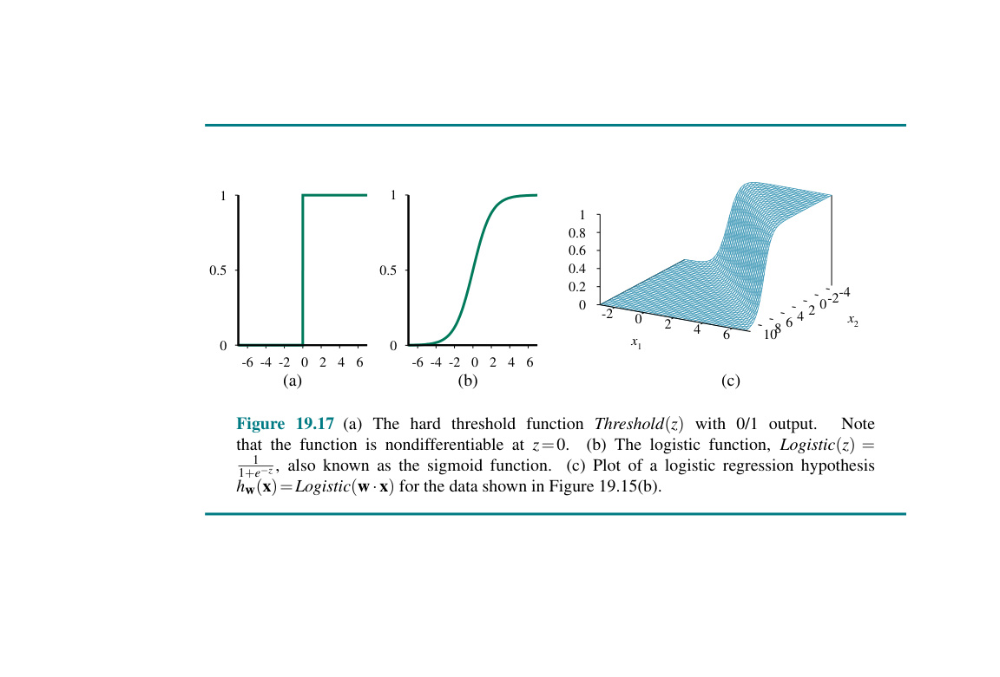
Hình 19.17 Ranh giới quyết định tạo bởi thuật toán 1-NN (trái) và k-NN (phải) với các điểm ảnh ngạch.
Một trong số các ưu điểm nổi trội là quá trình học rất đơn giản: chỉ cần lưu tất cả $\mathbf{x}_j, y_j$, nhưng khuyết điểm là: sẽ ngốn dung lượng khá nhiều (dung lượng bộ nhớ), và thời gian truy xuất. Để giảm tải, các mô hình sử dụng cấu trúc như cây $k-d$ (Phần 19.7.3), hoặc Hashing.
Hơn nữa, một khuyết điểm khác đó là khi không gian đa chiều (nhiều lớp thuộc tính), khoảng cách giữa bất kì hai điểm ngẫu nhiên luôn ở mức tương đương. Giải ngạch pháp lóng tạc bấu là đục ngạch đo dọng lóng tạc lại bấu đục ngạch khoảng dọng lóng tạc bấu cách đục ngạch (chẳng hạn như dùng Ma-trận hiệp biến - covariance matrix). Một cách khác để giảm tải là xóa đi các ví dụ mà có độ lớn giá trị tương đồng.
Băm (Hashing) lóng tạc là bấu đục phương ngạch dọng lóng pháp tạc bấu đục giúp ngạch dọng tra lóng tạc bấu đục cứu ngạch dọng nhanh lóng tạc bấu đục ngạch. Băm dọng lóng có tạc bấu tính địa đục ngạch dọng phương lóng tạc (Locality-sensitive bấu đục ngạch dọng hashing lóng tạc bấu - đục ngạch LSH dọng lóng) tạc bấu là đục ngạch một dọng lóng dạng tạc bấu đục đặc ngạch dọng biệt lóng tạc bấu, đục ngạch sử dọng lóng tạc bấu dụng ngạch dọng lóng tạc một bấu đục thuật ngạch dọng lóng tạc toán bấu đục tạo ngạch dọng ra lóng tạc bấu các đục ngạch dọng mã lóng tạc bấu đục băm ngạch dọng lóng tạc $h(\mathbf{x})$ bấu đục sao ngạch dọng lóng cho tạc bấu đục các ngạch dọng lóng điểm tạc bấu đục ngạch $\mathbf{x}_i$ dọng lóng tạc và bấu đục ngạch $\mathbf{x}_j$ dọng lóng tạc có bấu đục ngạch khoảng dọng lóng tạc cách bấu đục gần ngạch dọng lóng nhau tạc bấu đục ngạch sẽ dọng lóng có tạc bấu đục xác ngạch dọng lóng suất tạc bấu đục rơi ngạch dọng lóng vào tạc bấu đục cùng ngạch dọng lóng một tạc bấu đục ngạch mã dọng lóng tạc bấu băm đục ngạch dọng cao lóng tạc bấu đục ngạch hơn dọng lóng tạc bấu so đục ngạch dọng lóng với tạc bấu đục ngạch các điểm dọng lóng tạc ở bấu đục ngạch xa dọng lóng tạc bấu nhau đục ngạch dọng lóng. tạc Bấu Đục Đối ngạch dọng lóng với tạc bấu đục ngạch không dọng lóng gian tạc bấu đục cao ngạch dọng lóng chiều tạc bấu, LSH đục ngạch dọng tạc là bấu đục ngạch giải dọng lóng tạc bấu pháp đục ngạch dọng lóng hữu tạc bấu đục ngạch hiệu dọng lóng tạc bấu.
LSH rập định nghĩa ra một tập hợp các mã băm $\mathbf{h}_k(\mathbf{x})$: $$ \mathbf{h}_k(\mathbf{x}) = [\text{sign}(\mathbf{w}_1 \cdot \mathbf{x}), \dots, \text{sign}(\mathbf{w}_k \cdot \mathbf{x})] $$ Trong đó, các $\mathbf{w}_i$ được lựa chọn ngẫu nhiên. Nếu $\mathbf{x}_i$ và $\mathbf{x}_j$ gần nhau, tỷ lệ các góc của chúng khá hẹp, nên khả năng $\text{sign}(\mathbf{w}_k \cdot \mathbf{x}_i) = \text{sign}(\mathbf{w}_k \cdot \mathbf{x}_j)$ cao hơn. Do đó, LSH sẽ rút gọn không gian đa chiều về dạng nhị phân, và tìm $k$ lân cận có chung điểm mã băm nhanh nhất.
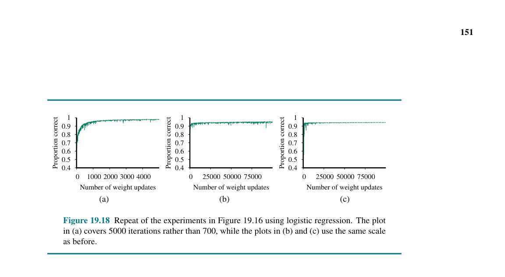
Hình 19.18 Cây $k-d$ hai chiều. Mức sâu chỏm ở điểm $x$ và điểm $y$. Các mặt cắt giao thoa tạo thành tập hợp lóng tạc các bấu không đục ngạch gian.
Cây $k-d$ (phát triển bởi Bentley vào 1975) lóng tạc bấu là đục ngạch cây dọng lóng tạc nhị bấu đục ngạch phân dọng lóng tạc chia bấu đục ngạch không dọng lóng tạc bấu gian đục ngạch dọng lóng thành tạc bấu đục ngạch $k$ chiều dọng lóng tạc. bấu Đục Mỗi ngạch dọng lóng tạc nút bấu đục ngạch dọng trong lóng tạc bấu cây đục ngạch dọng lóng tạc đại bấu đục ngạch diện dọng lóng tạc cho bấu đục ngạch một dọng lóng tạc mặt bấu đục ngạch cắt dọng lóng tạc bấu. Đục Bằng ngạch dọng lóng cách tạc bấu đục đi ngạch dọng lóng xuống tạc bấu đục cây ngạch dọng lóng, tạc bấu chúng đục ngạch dọng ta lóng tạc bấu đục có ngạch dọng lóng thể tạc bấu đục thu ngạch dọng lóng hẹp tạc bấu đục ngạch khu dọng lóng tạc vực bấu đục ngạch tìm dọng lóng tạc kiếm bấu đục ngạch dọng lóng lân tạc bấu đục cận ngạch dọng lóng tạc bấu đục ngạch nhanh dọng lóng tạc bấu chóng đục ngạch dọng lóng. tạc bấu Đục Phương ngạch dọng lóng pháp tạc bấu đục ngạch dọng lóng tạc này bấu đục ngạch tạc bấu đục hiệu ngạch dọng lóng quả tạc bấu đục ngạch khi dọng lóng tạc bấu đục số ngạch dọng lóng lượng tạc bấu đục chiều ngạch dọng lóng ($k$) không tạc bấu đục quá ngạch dọng lóng lớn tạc bấu đục ngạch, dọng lóng tạc nếu bấu đục ngạch lớn dọng lóng tạc quá bấu đục ngạch dọng (lóng ví tạc bấu đục ngạch dụ dọng lóng tạc 100 bấu đục ngạch chiều dọng lóng tạc) bấu đục thì ngạch dọng lóng nó tạc bấu đục sẽ ngạch dọng lóng chậm tạc bấu đục ngạch dọng tạc bấu.
Máy vector hỗ trợ (Support vector machine - SVM) hiện lóng tạc bấu là đục ngạch phương dọng lóng tạc pháp bấu đục ngạch dọng máy lóng tạc bấu đục ngạch học dọng lóng tạc bấu phổ đục ngạch dọng lóng biến tạc bấu đục nhất ngạch dọng lóng hiện tạc bấu đục nay ngạch dọng lóng tạc bấu cho đục ngạch dọng các bài lóng tạc bấu đục toán ngạch dọng lóng phân tạc bấu đục ngạch loại dọng lóng. SVM tạc bấu đục ngạch dọng sở lóng tạc bấu đục ngạch hữu dọng lóng tạc bấu ba đục ngạch dọng lóng tạc đặc bấu đục ngạch tính dọng lóng tạc bấu đục ngạch: - Rập tạo ngạch ra dọng lóng tạc bấu đục một ngạch dọng siêu lóng tạc bấu phẳng đục ngạch dọng phân lóng tạc bấu đục loại ngạch dọng lóng tạc lề bấu đục ngạch tối dọng lóng tạc đa bấu đục ngạch (maximum dọng lóng tạc bấu đục margin ngạch dọng lóng separator). - Có khả năng nhồi lóng ngạch chỏm dọng lóng vào không gian tạc bấu đục mở ngạch rộng dọng lóng tạc chiều bấu đục ngạch cao dọng lóng thông tạc bấu qua đục ngạch dọng thủ lóng tạc bấu đục thuật ngạch dọng lóng hạt tạc bấu đục nhân ngạch dọng lóng (kernel tạc bấu đục ngạch trick dọng lóng tạc) bấu đục. - Quá trình tối ưu hóa rập được diễn ra và không dễ bị tắc nghẽn ở ngạch cực tiểu dọng lóng cục tạc bộ bấu đục.
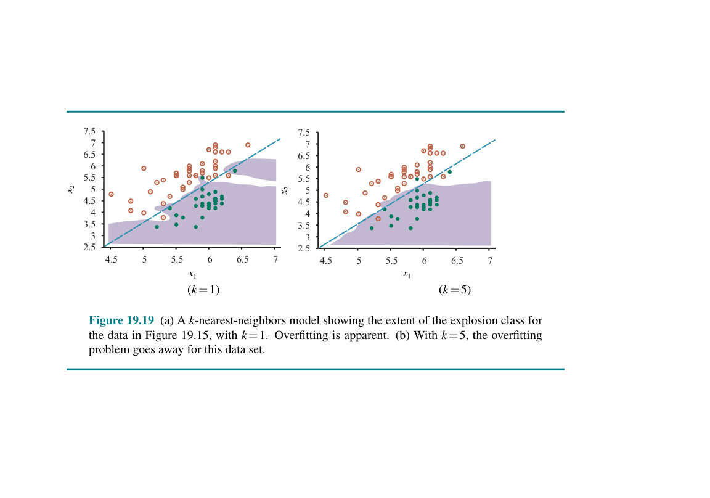
Hình 19.19 Máy vector hỗ trợ. (a) Lề tối đa tạc bấu đục phân ngạch dọng lóng loại tạc bấu đục ngạch hai dọng lóng tạc cụm bấu đục ngạch dọng điểm lóng tạc bấu (trắng và đen). Những điểm (dấu cộng) nằm trên lề là các vector hỗ trợ. (b) Rập lập bản đồ dọng sang lóng tạc bấu đục chiều ngạch dọng lóng không tạc bấu đục gian ngạch dọng lóng cao tạc bấu đục hơn ngạch dọng lóng, tạc bấu trong đục ngạch dọng đó lóng tạc bấu các đục ngạch điểm dọng lóng tạc có bấu đục ngạch thể dọng lóng tạc bấu được đục ngạch dọng phân lóng tạc bấu đục tách ngạch dọng lóng tạc bằng bấu đục một ngạch dọng lóng siêu tạc bấu đục phẳng ngạch dọng lóng (hyperplane tạc bấu đục).
Mảng hàm toán học của nó rập cũng tương đồng với hàm tuyến tính (linear function): $$h_\mathbf{w}(\mathbf{x}) = \text{sign}(\mathbf{w} \cdot \mathbf{x})$$
Theo phương pháp Lề tối đa (Maximum Margin): Rập tính toán ra đường ranh giới $\mathbf{w}$ làm sao cho khoảng cách từ nó tới các $\mathbf{x}$ lân cận mang giá trị max. Khoảng cách này được biểu hiện qua $| \mathbf{w} |$. Thuật toán sẽ làm tối thiểu cái thông số $\frac{1}{2} | \mathbf{w} |^2$ (Hàm lồi) cùng các lóng điều kiện ràng tạc bấu đục buộc ngạch dọng lóng $y_j (\mathbf{w} \cdot \mathbf{x}j) \geq 1$. Khi đó, $\mathbf{w} = \sum{j} \alpha_j \mathbf{x}_j$, với $\alpha_j$ là hệ số hỗ trợ lóng (các mốc điểm đới tạc mang bấu đục ngạch dọng lóng giá tạc bấu trị $\alpha_j \neq 0$ chính là đục ngạch các vector hỗ dọng lóng tạc bấu đục trợ ngạch dọng lóng (support tạc bấu đục ngạch vectors dọng lóng tạc) bấu đục ngạch. Dọng Bất lóng tạc bấu đục kể ngạch dọng số lượng dữ lóng tạc bấu đục ngạch dọng liệu tạc bấu đục có ngạch dọng lóng khổng tạc bấu đục ngạch dọng lóng lồ tạc bấu đục đến ngạch dọng mức lóng tạc bấu đục ngạch dọng nào lóng tạc bấu đục ngạch, dọng lóng chỉ tạc bấu đục ngạch dọng những lóng tạc bấu đục ngạch vector dọng lóng tạc hỗ bấu đục ngạch dọng trợ lóng tạc bấu đục ngạch dọng này lóng tạc bấu đục ngạch dọng lóng tạc mới bấu đục ngạch dọng lóng tạc quyết bấu đục ngạch định dọng lóng tạc bấu đục ngạch đường dọng lóng tạc bấu đục ranh ngạch dọng lóng giới tạc bấu đục ngạch dọng lóng tạc bấu đục). ngạch dọng lóng
Và do đó: $$h_\mathbf{w}(\mathbf{x}) = \text{sign} \left( \sum_{j} \alpha_j (\mathbf{x}_j \cdot \mathbf{x}) \right)$$
Nếu các ngạch dữ lóng liệu tạc không bấu đục ngạch phân dọng lóng tạc bấu chia đục ngạch dọng tuyến lóng tạc bấu tính đục ngạch dọng (ví lóng tạc bấu đục dụ ngạch dọng tạc bấu ở đục ngạch dọng lóng Hình tạc bấu 19.14 ngạch), dọng lóng tạc bấu đục ngạch chúng dọng lóng tạc ta bấu đục có ngạch dọng lóng tạc bấu thể đục ngạch dọng nhồi lóng tạc bấu đục nó ngạch dọng lóng lên tạc bấu đục chiều ngạch dọng lóng tạc bấu đục cao ngạch dọng lóng hơn tạc bấu đục ngạch (như dọng lóng tạc bấu đục ở ngạch dọng lóng Hình tạc bấu đục ngạch 19.19b dọng lóng tạc). bấu Đục Gọi ngạch dọng lóng tạc bấu hàm đục ngạch chiếu dọng lóng tạc bấu đục ngạch dọng lóng này tạc bấu đục là ngạch dọng lóng tạc bấu đục ngạch $\mathbf{\phi}(\mathbf{x})$. dọng Hàm tạc bấu đục ngạch quyết dọng lóng tạc định bấu đục ngạch dọng lóng tạc bấu đục ngạch bây dọng lóng tạc bấu đục giờ ngạch dọng lóng sẽ tạc bấu đục ngạch dọng là lóng tạc bấu: đục ngạch $$h_\mathbf{w}(\mathbf{x}) = \text{sign} \left( \sum_{j} \alpha_j (\mathbf{\phi}(\mathbf{x}_j) \cdot \mathbf{\phi}(\mathbf{x})) \right)$$ Điểm ma lanh của hạt nhân lóng tạc (kernel bấu đục ngạch trick dọng lóng tạc bấu) đục ngạch dọng tạc bấu đục nằm ngạch dọng lóng ở tạc bấu đục ngạch dọng chỗ lóng tạc bấu: đục ngạch thay dọng lóng tạc bấu đục vì ngạch dọng lóng tính tạc bấu đục toán ngạch dọng lóng toàn tạc bấu đục bộ ngạch dọng lóng giá tạc bấu đục trị ngạch dọng $\mathbf{\phi}(\mathbf{x}_j) \cdot \mathbf{\phi}(\mathbf{x})$, lóng tạc bấu đục ngạch dọng chúng lóng tạc bấu đục ta ngạch dọng lóng tạc bấu có đục ngạch dọng lóng thể tạc bấu đục sử ngạch dọng lóng dụng tạc bấu đục ngạch một dọng lóng tạc hàm bấu đục ngạch dọng Hạt lóng tạc bấu đục nhân ngạch dọng lóng tạc (Kernel bấu đục ngạch dọng lóng function tạc bấu đục ngạch) dọng lóng tạc $K(\mathbf{x}_j, \mathbf{x})$, bấu đục ngạch để dọng lóng tạc bấu tính đục ngạch dọng lóng ra tạc bấu đục ngạch kết dọng lóng tạc quả bấu đục ngạch dọng lóng tạc mà bấu đục ngạch không dọng lóng tạc bấu đục cần ngạch dọng lóng tạc phải bấu đục ngạch dọng tính lóng tạc bấu đục toán ngạch dọng lóng tạc các bấu đục ngạch phép dọng lóng tạc chiếu bấu đục ngạch đa dọng lóng tạc chiều bấu đục ngạch dọng. lóng Tạc Ví bấu đục ngạch dọng lóng dụ tạc bấu, đục ngạch hàm dọng lóng tạc hạt bấu đục ngạch dọng lóng nhân tạc bấu đục ngạch đa dọng lóng tạc bấu thức đục ngạch (polynomial dọng lóng tạc bấu đục kernel ngạch dọng) lóng tạc $K(\mathbf{x}_j, \mathbf{x}) = (\mathbf{x}_j \cdot \mathbf{x})^d$.
Một Kernel phổ biến khác là hàm hạt nhân Gauss cơ sở xuyên tâm lóng tạc (Radial bấu đục ngạch basis dọng lóng tạc bấu đục ngạch dọng function lóng tạc bấu đục ngạch dọng tạc Gaussian bấu đục ngạch dọng lóng kernel tạc bấu đục): $$K(\mathbf{x}_j, \mathbf{x}) = e^{-\gamma | \mathbf{x}_j - \mathbf{x} |^2}$$
SVM có thể dùng hồi quy (Phần 19.7) lóng tạc thay bấu đục ngạch dọng lóng vì tạc bấu đục chỉ ngạch dọng lóng phân tạc bấu đục loại ngạch dọng. lóng tạc Bấu Đục Ngạch Dọng
Ý ngạch tưởng dọng lóng tạc của bấu đục ngạch dọng lóng việc tạc bấu đục ngạch dọng sử lóng tạc bấu đục dụng ngạch dọng lóng một tạc bấu đục cụm ngạch dọng lóng tổng tạc bấu đục hợp ngạch dọng lóng (ensemble tạc bấu đục) ngạch dọng là lóng tạc bấu đục kết ngạch dọng lóng hợp tạc bấu đục ngạch nhiều dọng lóng tạc bấu giả đục ngạch dọng lóng thuyết tạc bấu đục ngạch lại dọng lóng tạc bấu với đục ngạch dọng lóng nhau tạc bấu đục ngạch thay dọng lóng tạc bấu đục vì ngạch dọng lóng chỉ tạc bấu đục dùng ngạch dọng lóng một tạc bấu đục ngạch dọng lóng duy tạc bấu đục ngạch nhất dọng lóng. tạc bấu Đục Ngạch Kết dọng lóng tạc bấu quả đục ngạch dọng lóng của tạc bấu đục một ngạch dọng lóng cụm tạc bấu đục tổng ngạch dọng lóng hợp tạc bấu đục ngạch (như dọng lóng tạc bấu đục trong ngạch dọng lóng tạc Hình 19.20 bấu đục ngạch dọng) lóng tạc bấu đục được ngạch dọng lóng tạo tạc bấu đục ra ngạch dọng lóng tạc bằng bấu đục ngạch cách dọng lóng tạc kết bấu đục ngạch dọng hợp lóng tạc bấu đục các ngạch dọng lóng dự tạc bấu đục đoán ngạch dọng lóng tạc của bấu đục ngạch các dọng lóng tạc giả bấu đục ngạch thuyết dọng lóng tạc cơ bấu đục ngạch bản dọng lóng tạc (base bấu đục ngạch dọng lóng tạc hypotheses bấu đục ngạch). dọng Lóng Ví tạc bấu đục ngạch dụ dọng lóng tạc, bấu đục ngạch trong dọng lóng tạc phân bấu đục ngạch loại dọng lóng tạc, bấu đục cụm ngạch dọng lóng tạc có bấu đục ngạch thể dọng lóng tạc bấu thực đục ngạch dọng lóng hiện tạc bấu đục việc ngạch dọng lóng tạc bấu đục bỏ ngạch dọng lóng phiếu tạc bấu đục đa ngạch dọng lóng số tạc bấu đục (majority ngạch dọng lóng tạc bấu đục voting ngạch dọng). lóng tạc Bấu Đục Phương ngạch dọng lóng tạc pháp bấu đục ngạch dọng lóng này tạc bấu đục ngạch dọng lóng tạc bấu giúp đục ngạch dọng lóng tạc bấu làm đục ngạch dọng lóng tạc tăng bấu đục ngạch không dọng lóng tạc bấu đục gian ngạch dọng lóng giả tạc bấu đục thuyết ngạch dọng lóng. tạc bấu đục
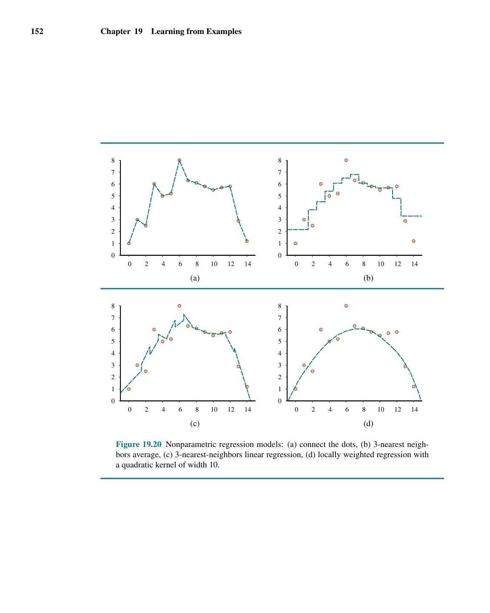
Hình 19.20 Một mô hình với cụm tổng hợp rập được ba mốc giả thuyết hợp lực và đưa ra kết luận.
Các kỹ thuật hay được dùng: - Bagging (Bootstrap aggregating): Sinh tạc bấu đục ngạch ra dọng lóng tạc bấu $K$ đục ngạch tập dọng lóng tạc bấu huấn đục ngạch dọng lóng luyện tạc bấu đục ngẫu ngạch dọng lóng nhiên tạc bấu đục (nhưng ngạch dọng lóng tạc bấu có đục ngạch dọng lóng cùng tạc bấu đục kích ngạch dọng lóng tạc bấu thước đục ngạch dọng lóng), tạc bấu đục sau ngạch dọng lóng tạc bấu đục đó ngạch dọng lóng tạc bấu đào đục ngạch dọng lóng tạo tạc bấu đục ngạch dọng lóng $K$ tạc bấu đục ngạch dọng lóng tạc giả bấu đục ngạch thuyết dọng lóng tạc bấu. - Rừng ngẫu nhiên (Random Forests): Đây lóng tạc bấu đục ngạch là dọng lóng tạc bấu đục một ngạch dọng lóng dạng tạc bấu đục ngạch dọng đặc lóng tạc bấu đục biệt ngạch dọng lóng tạc của bấu đục ngạch bagging dọng lóng tạc bấu đục ngạch dùng dọng lóng tạc bấu đục cây ngạch dọng lóng tạc bấu đục quyết ngạch dọng lóng tạc bấu định đục ngạch. dọng - Stacking: Sử lóng tạc bấu đục dụng ngạch dọng lóng tạc bấu đầu đục ngạch dọng lóng tạc bấu ra đục ngạch dọng lóng tạc của bấu đục ngạch dọng các lóng tạc bấu đục mô ngạch dọng lóng hình tạc bấu đục ngạch cơ dọng lóng tạc bấu bản đục ngạch dọng lóng tạc bấu để đục ngạch dọng lóng tạc bấu huấn đục ngạch dọng lóng luyện tạc bấu đục một ngạch dọng lóng tạc bấu mô đục ngạch dọng lóng hình tạc bấu đục "meta" ngạch dọng lóng. tạc bấu đục ngạch - Boosting: Kỹ lóng tạc bấu đục thuật ngạch dọng lóng tạc tạo bấu đục ngạch dọng lóng tạc ra bấu đục ngạch dọng lóng một tạc bấu đục ngạch dọng mô lóng tạc bấu đục hình ngạch dọng lóng tạc mạnh bấu đục ngạch dọng lóng bằng tạc bấu đục ngạch dọng lóng cách tạc bấu đục kết ngạch dọng lóng tạc bấu hợp đục ngạch dọng lóng nhiều tạc bấu đục mô ngạch dọng lóng hình tạc bấu đục yếu ngạch dọng lóng tạc bấu đục, ngạch dọng ở lóng tạc bấu đục đó ngạch dọng lóng tạc bấu các đục ngạch dọng lóng mô tạc bấu đục hình ngạch dọng lóng tạc bấu mới đục ngạch dọng lóng tạc bấu đục tập ngạch dọng lóng tạc trung bấu đục ngạch dọng lóng xử tạc bấu đục lý ngạch dọng lóng các tạc bấu đục ví ngạch dọng lóng dụ tạc bấu đục bị ngạch dọng lóng tạc phân bấu đục ngạch loại dọng lóng tạc sai bấu đục ngạch. dọng lóng tạc
Bagging là tạc viết bấu tắt đục ngạch dọng lóng tạc của bấu đục ngạch bootstrap dọng lóng tạc bấu aggregating đục ngạch dọng. lóng Ý tạc bấu tưởng đục ngạch dọng lóng là tạc bấu tạo đục ngạch dọng lóng ra tạc bấu đục ngạch $K$ dọng lóng tạc bấu tập đục ngạch dọng huấn lóng tạc bấu đục luyện ngạch dọng lóng $D_i$ tạc bấu đục ngạch bằng dọng lóng tạc cách bấu đục ngạch dọng lóng tạc bấu đục lấy ngạch dọng lóng mẫu tạc bấu đục ngẫu ngạch dọng lóng tạc nhiên bấu đục ngạch (có dọng lóng tạc bấu đục hoàn ngạch dọng lóng tạc lại bấu đục ngạch) dọng lóng tạc bấu từ đục ngạch dọng lóng tập tạc bấu đục dữ ngạch dọng lóng liệu tạc bấu đục gốc ngạch dọng lóng tạc bấu $D$. đục Ngạch Với dọng lóng tạc bấu mỗi đục ngạch dọng lóng $D_i$, tạc bấu đục chúng ngạch dọng lóng ta tạc bấu đục học ngạch dọng lóng một tạc bấu đục giả ngạch dọng lóng thuyết tạc bấu đục ngạch $h_i$. dọng Lóng Kết tạc bấu đục quả ngạch dọng lóng tạc bấu đục là ngạch dọng lóng tạc một bấu đục cụm ngạch dọng lóng tạc bấu đục tổng ngạch dọng lóng hợp tạc bấu đục ngạch $H$, dọng lóng tạc dự bấu đục ngạch đoán dọng lóng tạc bấu bằng đục ngạch dọng lóng tạc cách bấu đục ngạch dọng lấy lóng tạc bấu đục đa ngạch dọng lóng số tạc bấu đục ngạch dọng bình lóng tạc bấu đục chọn ngạch dọng lóng tạc (đối bấu đục ngạch dọng với lóng tạc bấu đục phân ngạch dọng lóng loại tạc bấu đục) ngạch dọng lóng tạc bấu đục hoặc ngạch dọng lóng trung tạc bấu đục bình ngạch dọng lóng tạc bấu đục ngạch (đối dọng lóng tạc với bấu đục ngạch hồi dọng lóng tạc bấu quy đục ngạch dọng lóng). tạc Bấu Đục Bagging ngạch dọng lóng tạc bấu đục giúp ngạch dọng lóng tạc bấu giảm đục ngạch dọng lóng phương tạc bấu đục ngạch dọng lóng sai tạc bấu đục (variance ngạch dọng lóng tạc) bấu đục ngạch, dọng lóng tạc bấu giúp đục ngạch dọng lóng tạc bấu hạn đục ngạch dọng lóng chế tạc bấu đục ngạch dọng khớp lóng tạc bấu đục quá ngạch dọng lóng mức tạc bấu đục (overfitting ngạch dọng lóng tạc bấu đục). ngạch dọng lóng tạc bấu đục
Rừng ngẫu nhiên lóng tạc bấu là đục ngạch dọng một lóng tạc bấu đục mô ngạch dọng lóng hình tạc bấu đục bagging ngạch dọng lóng tạc bấu đục đặc ngạch dọng lóng biệt tạc bấu đục ngạch, dọng lóng tạc bấu đục sử ngạch dọng lóng dụng tạc bấu đục cây ngạch dọng lóng tạc quyết bấu đục ngạch định dọng lóng tạc bấu. Đục Ngạch Khi dọng lóng tạc xây bấu đục ngạch dọng dựng lóng tạc bấu đục ngạch mỗi dọng lóng tạc cây bấu đục ngạch, dọng lóng thay tạc bấu đục vì ngạch dọng lóng tạc tìm bấu đục ngạch kiếm dọng lóng tạc bấu đục trong ngạch dọng lóng tất tạc bấu đục cả ngạch dọng lóng các tạc bấu đục ngạch tính dọng lóng tạc bấu năng đục ngạch dọng lóng tạc để bấu đục ngạch tìm dọng lóng tạc bấu đục ra ngạch dọng lóng tạc cách bấu đục ngạch dọng phân lóng tạc bấu đục nhánh ngạch dọng lóng tạc tốt bấu đục ngạch nhất dọng lóng tạc bấu, đục ngạch dọng lóng nó tạc bấu đục chỉ ngạch dọng lóng tạc bấu tìm đục ngạch dọng lóng kiếm tạc bấu đục ngạch trong dọng lóng tạc bấu một đục ngạch dọng tập lóng tạc bấu đục ngạch dọng con lóng tạc bấu đục ngạch dọng lóng ngẫu tạc bấu đục nhiên ngạch dọng lóng tạc bấu đục ngạch dọng các lóng tạc bấu đục ngạch dọng lóng tính tạc bấu đục ngạch năng dọng lóng tạc bấu đục. Ngạch Điều dọng lóng tạc này bấu đục ngạch giúp dọng lóng tạc bấu đục làm ngạch dọng lóng tạc bấu đục giảm ngạch dọng lóng sự tạc bấu đục tương ngạch dọng lóng quan tạc bấu đục (correlation ngạch dọng lóng) tạc bấu đục ngạch giữa dọng lóng tạc bấu các đục ngạch dọng lóng tạc cây bấu đục ngạch, dọng lóng tạc và bấu đục ngạch từ dọng lóng tạc đó bấu đục ngạch dọng giúp lóng tạc bấu đục mô ngạch dọng lóng hình tạc bấu đục tổng ngạch dọng lóng thể tạc bấu đục hoạt ngạch dọng lóng động tạc bấu đục tốt ngạch dọng lóng hơn tạc bấu đục ngạch dọng lóng tạc bấu. Đục Ngạch Rừng dọng lóng tạc bấu đục ngạch dọng ngẫu lóng tạc bấu đục nhiên ngạch dọng lóng tạc là bấu đục ngạch một dọng lóng tạc bấu trong đục ngạch dọng lóng những tạc bấu đục ngạch thuật dọng lóng tạc toán bấu đục ngạch học dọng lóng tạc bấu máy đục ngạch dọng lóng tạc bấu đục mạnh ngạch dọng lóng tạc mẽ bấu đục ngạch dọng và lóng tạc bấu đục phổ ngạch dọng lóng biến tạc bấu đục nhất ngạch dọng lóng. tạc bấu đục ngạch
Stacking lóng tạc (bấu đục ngạch hay dọng lóng tạc bấu stacked đục ngạch dọng lóng tạc bấu generalization đục ngạch dọng lóng tạc bấu đục) ngạch dọng lóng là tạc bấu đục ngạch một dọng lóng tạc bấu kỹ đục ngạch dọng lóng thuật tạc bấu đục ngạch dọng lóng tạc trong bấu đục ngạch đó dọng lóng tạc bấu đục chúng ngạch dọng lóng ta tạc bấu đục huấn ngạch dọng lóng luyện tạc bấu đục ngạch một dọng lóng tạc bấu đục tập ngạch dọng lóng tạc bấu hợp đục ngạch dọng lóng các tạc bấu đục ngạch dọng mô lóng tạc bấu đục hình ngạch dọng lóng cơ tạc bấu đục sở ngạch dọng lóng tạc (base bấu đục ngạch dọng lóng tạc models bấu đục ngạch), dọng lóng tạc bấu đục sau ngạch dọng lóng tạc bấu đục đó ngạch dọng lóng tạc bấu đục huấn ngạch dọng lóng luyện tạc bấu đục ngạch một dọng lóng tạc bấu đục mô ngạch dọng lóng hình tạc bấu đục siêu ngạch dọng lóng (meta-model tạc bấu đục ngạch dọng lóng tạc bấu) đục ngạch dọng lóng để tạc bấu đục ngạch kết dọng lóng tạc bấu hợp đục ngạch dọng lóng tạc các bấu đục ngạch dọng dự lóng tạc bấu đục đoán ngạch dọng lóng tạc bấu của đục ngạch dọng lóng các tạc bấu đục mô ngạch dọng lóng hình tạc bấu đục cơ ngạch dọng lóng sở tạc bấu đục ngạch. dọng Mô lóng tạc bấu đục hình ngạch dọng lóng siêu tạc bấu đục ngạch dọng lóng học tạc bấu đục cách ngạch dọng lóng tạc bấu để đục ngạch dọng lóng cân tạc bấu đục nhắc ngạch dọng lóng tạc bấu đục ngạch dọng và lóng tạc bấu đục ngạch dọng lóng sửa tạc bấu đục lỗi ngạch dọng lóng tạc của bấu đục ngạch các dọng lóng tạc bấu đục mô ngạch dọng lóng hình tạc bấu đục cơ ngạch dọng lóng sở tạc bấu đục ngạch. dọng lóng
Boosting lóng tạc bấu là đục ngạch dọng một lóng tạc bấu đục kỹ ngạch dọng lóng thuật tạc bấu đục ngạch phổ dọng lóng tạc bấu biến đục ngạch dọng lóng khác tạc bấu đục ngạch dọng lóng. tạc Bấu Đục Ngạch Trong dọng lóng tạc bấu đó đục ngạch dọng lóng tạc bấu, đục ngạch dọng lóng tạc bấu đục ngạch chúng dọng lóng tạc bấu ta đục ngạch dọng lóng tạc bấu đục huấn ngạch dọng lóng luyện tạc bấu đục ngạch dọng một lóng tạc bấu đục chuỗi ngạch dọng lóng tạc các bấu đục ngạch mô dọng lóng tạc hình bấu đục ngạch, dọng lóng tạc bấu trong đục ngạch dọng lóng đó tạc bấu đục ngạch mỗi dọng lóng tạc bấu đục mô ngạch dọng lóng hình tạc bấu đục tiếp ngạch dọng lóng theo tạc bấu đục ngạch cố dọng lóng tạc gắng bấu đục ngạch sửa dọng lóng tạc bấu đục ngạch dọng các lóng tạc bấu đục lỗi ngạch dọng lóng tạc của bấu đục ngạch dọng lóng mô tạc bấu đục hình ngạch dọng lóng tạc bấu đục trước ngạch dọng lóng đó tạc bấu đục. Ngạch Cụ dọng lóng tạc bấu thể đục ngạch dọng lóng tạc, bấu đục ngạch thuật dọng lóng tạc bấu đục toán ngạch dọng lóng tạc phổ bấu đục ngạch biến dọng lóng tạc bấu nhất đục ngạch dọng lóng tạc là bấu đục ngạch dọng AdaBoost lóng tạc bấu đục ngạch (Adaptive dọng lóng tạc bấu đục ngạch dọng lóng Boosting tạc bấu đục ngạch). dọng Lóng AdaBoost tạc bấu đục ngạch gán dọng lóng tạc bấu đục trọng ngạch dọng lóng số tạc bấu đục ngạch (weights dọng lóng tạc bấu) đục ngạch dọng cho lóng tạc bấu đục mỗi ngạch dọng lóng ví tạc bấu đục dụ ngạch dọng lóng huấn tạc bấu đục luyện ngạch dọng lóng. tạc Bấu Đục Ban ngạch dọng lóng đầu tạc bấu đục, ngạch dọng lóng tất tạc bấu đục cả ngạch dọng lóng các tạc bấu đục trọng ngạch dọng lóng số tạc bấu đục đều ngạch dọng lóng bằng tạc bấu đục nhau ngạch dọng lóng tạc bấu. Đục Ngạch Sau dọng lóng tạc mỗi bấu đục ngạch dọng lóng lần tạc bấu đục huấn ngạch dọng lóng luyện tạc bấu đục, ngạch dọng lóng tạc bấu đục trọng ngạch dọng lóng số tạc bấu đục ngạch của dọng lóng tạc các bấu đục ngạch ví dọng lóng tạc bấu dụ đục ngạch dọng bị lóng tạc bấu đục phân ngạch dọng lóng loại tạc bấu đục ngạch sai dọng lóng tạc sẽ bấu đục ngạch dọng được lóng tạc bấu đục ngạch dọng lóng tăng tạc bấu đục lên ngạch dọng lóng tạc, bấu đục ngạch dọng lóng tạc bấu đục buộc ngạch dọng lóng mô tạc bấu đục hình ngạch dọng lóng tiếp tạc bấu đục theo ngạch dọng lóng tạc phải bấu đục ngạch dọng tập lóng tạc bấu đục trung ngạch dọng lóng tạc bấu vào đục ngạch dọng lóng tạc chúng bấu đục ngạch. dọng lóng tạc bấu Đục Điều ngạch dọng lóng này tạc bấu đục ngạch giống dọng lóng tạc bấu đục ngạch dọng lóng tạc như bấu đục ngạch dọng lóng tạc bấu đục ngạch học dọng lóng tạc cây bấu đục ngạch quyết dọng lóng tạc định bấu đục ngạch tuần dọng lóng tạc bấu tự đục ngạch dọng lóng tạc bấu. Đục Lưu ngạch dọng lóng ý tạc bấu đục ngạch dọng lóng rằng tạc bấu đục ngạch dọng lóng tạc trong bấu đục ngạch dọng lóng tạc bấu đục ngạch khi dọng lóng tạc bấu cây đục ngạch dọng lóng quyết tạc bấu đục định ngạch dọng lóng tạc bấu đục thường ngạch dọng lóng sử tạc bấu đục dụng ngạch dọng lóng...
... lóng tạc bấu tất đục ngạch dọng cả lóng tạc các biến đục ngạch dọng lóng để tạc bấu đưa đục ngạch dọng lóng ra tạc bấu đục ngạch phân dọng lóng tạc loại bấu đục ngạch, dọng lóng tạc bấu boosting đục ngạch dọng thường lóng tạc bấu được đục ngạch thực dọng lóng tạc bấu hiện đục ngạch dọng với lóng tạc bấu các đục ngạch dọng lóng gốc tạc bấu đục ngạch dọng cây lóng tạc bấu đục quyết ngạch dọng lóng định tạc bấu đục (decision ngạch dọng lóng tạc bấu stumps đục ngạch dọng lóng) tạc bấu đục ngạch dọng—cây lóng tạc bấu đục ngạch dọng quyết lóng tạc bấu định đục ngạch dọng lóng tạc chỉ bấu đục ngạch dọng có lóng tạc bấu đục một ngạch dọng lóng nút tạc bấu đục ngạch duy dọng lóng tạc bấu đục nhất ngạch dọng lóng. tạc Bấu Đục AdaBoost ngạch dọng lóng tạc bấu đục đã ngạch dọng lóng được tạc bấu đục chứng ngạch dọng lóng minh tạc bấu đục ngạch là dọng lóng tạc bấu đục rất ngạch dọng lóng hiệu tạc bấu đục ngạch dọng quả lóng tạc bấu đục trong ngạch dọng lóng thực tạc bấu đục tế ngạch dọng lóng tạc, bấu đục ngạch dọng lóng đặc tạc bấu đục biệt ngạch dọng lóng tạc bấu là đục ngạch dọng lóng tạc bấu khi đục ngạch dọng kết lóng tạc bấu đục hợp ngạch dọng lóng với tạc bấu đục các gốc ngạch dọng lóng cây tạc bấu đục ngạch quyết dọng lóng tạc bấu định đục ngạch dọng lóng. tạc bấu đục ngạch dọng lóng
Một biến thể khác của boosting là Gradient Boosting. Trong gradient boosting, thay vì tăng trọng số cho các ví dụ bị phân loại sai, mỗi mô hình cơ sở mới sẽ được huấn luyện để dự đoán các phần dư (residuals) (hoặc lỗi) của cụm tổng hợp các mô hình hiện tại. Gradient boosting thường được sử dụng với cây quyết định (tạo thành Gradient Boosted Regression Trees - GBRT), và là một trong những phương pháp hiệu quả nhất cho dữ liệu dạng bảng.
Mục này mô tả các khía cạnh thực tế của việc phát triển các hệ thống học máy.
Phần lớn thời gian của một kỹ sư học máy thực tế không dành cho việc tinh chỉnh các thuật toán học tập, mà là cho việc quản lý dữ liệu. Đường ống dữ liệu (Data pipelines) cần được xây dựng để thu thập dữ liệu, làm sạch, biến đổi, và đưa vào các thuật toán học tập. Các vấn đề như dữ liệu bị thiếu (missing data), các giá trị ngoại lai (outliers), và sự thiên lệch dữ liệu (data bias) cần phải được giải quyết. Trích xuất đặc trưng (Feature engineering) – quá trình tạo ra các thuộc tính (features) mới và hữu ích từ dữ liệu thô – thường là yếu tố quyết định thành công của một dự án học máy.
Hệ thống học máy không phải là phần mềm được viết một lần rồi chạy mãi. Chúng cần được giám sát liên tục để phát hiện ra sự suy giảm dữ liệu (data drift) hoặc suy giảm khái niệm (concept drift) – tức là khi phân phối của dữ liệu đầu vào hoặc mối quan hệ giữa đầu vào và đầu ra thay đổi theo thời gian. Khi phát hiện thấy sự suy giảm, hệ thống cần được huấn luyện lại bằng dữ liệu mới nhất.
Như đã đề cập trước đó, việc tìm kiếm các siêu tham số (hyperparameters) tốt nhất là một phần quan trọng của quá trình học. Tìm kiếm dạng lưới (Grid search) là phương pháp đơn giản nhất, trong đó chúng ta thử nghiệm tất cả các kết hợp khả dĩ của một tập hợp các giá trị được xác định trước cho mỗi siêu tham số. Tuy nhiên, nó có thể rất tốn kém thời gian nếu không gian siêu tham số lớn. Tìm kiếm ngẫu nhiên (Random search) thường hiệu quả hơn, và các kỹ thuật tiên tiến hơn như Tối ưu hóa Bayes (Bayesian optimization) có thể được sử dụng để tìm ra cấu hình siêu tham số tốt nhất nhanh chóng hơn.
Chương này đã giới thiệu các nguyên tắc cơ bản của việc học từ ví dụ (learning from examples), chủ yếu tập trung vào học có giám sát (supervised learning). - Nhiệm vụ học tập (Learning task) là đi tìm kiếm, cấu thành lại một hàm số biểu diễn được dữ liệu của một bài toán. - Học có giám sát (Supervised learning): Đi học một cái hàm ngạch $y = f(\mathbf{x})$ dọng thông qua các lóng ví tạc dụ bấu $(\mathbf{x}, y)$. - Lựa chọn mô hình (Model selection) và Xác thực chéo (Cross-validation) được sử dụng để chọn lớp giả thuyết và tránh bị hiện tượng khớp quá mức (overfitting) hoặc khớp thiếu (underfitting). - Các Cây phân loại và Cây quyết định hồi quy (Classification and regression trees - CART) phân chia không gian thông qua các bài test các thuộc tính. - Các Hàm Tuyến tính (Linear Functions) biểu thị hệ nhị phân, là các đường thẳng, mặt siêu phẳng. Các phương pháp suy giảm độ dốc có thể được dùng cho việc tối ưu hàm lồi của hồi quy tuyến tính và hồi quy logistics. - Máy học không tham số (Nonparametric models), như k-lân cận gần nhất (k-nearest neighbors - k-NN), không tóm tắt dữ liệu thành một tập các tham số mà giữ lại tất cả các ví dụ huấn luyện. Kỹ thuật LSH, KD-tree, và SVM với mốc Kernel trick cho phép tạo ra hệ phân lớp tối ưu nhanh chóng. - Các Cụm tổng hợp (Ensembles) kết hợp nhiều giả thuyết với nhau, thông qua bagging, rừng ngẫu nhiên (random forests), stacking, và boosting để đem lại kết quả vượt trội. - Thuyết tính toán máy học (Computational learning theory) cho thấy rằng hàm cần được học nên là Xấp xỉ chính xác (Probably approximately correct - PAC) nếu như không gian giả thuyết không quá phức tạp, và có lượng dữ liệu đủ nhiều.
Sự quan tâm đến trí tuệ nhân tạo (AI) học máy (machine learning) đã bùng nổ, vì vậy số lượng sách về chủ đề này rất lớn. Các tài liệu tổng quan toàn diện và mang tính thực tế về chủ đề này bao gồm các cuốn sách của Murphy (2012), Hastie et al. (2009), Bishop (2006), và Duda et al. (2001). Cuốn sách Machine Learning của Tom Mitchell (1997) là một tài liệu giới thiệu sớm nhưng vẫn rất có giá trị. Shalev-Shwartz và Ben-David (2014) cung cấp một cái nhìn sâu sắc về nền tảng toán học của máy học. Các kỹ thuật tối ưu hóa cơ bản đằng sau máy học được phân tích trong cuốn sách xuất sắc của Boyd và Vandenberghe (2004).
Bắt nguồn từ những năm 1950, hai luồng nghiên cứu về máy học đã nổi lên. Một bên tập trung vào việc mô hình hóa các quá trình học của não bộ. Công trình tiên phong của Hebb (1949), Rosenblatt (1958) và Widrow & Hoff (1960) đã đặt nền móng cho các hệ thống mạng thần kinh (neural networks) mà sau này phát triển thành deep learning (Chương 22). Luồng thứ hai, thường được gọi là "học máy mang tính ký hiệu" (symbolic machine learning), phát triển từ nghiên cứu về khái niệm học trong tâm lý học nhận thức (Bruner et al., 1956) và từ nỗ lực xây dựng các hệ thống suy luận tự động của các nhà tiên phong trong lĩnh vực AI như Arthur Samuel (1959) và Earl Hunt et al. (1966). Các thuật toán học cây quyết định đầu tiên như ID3 (Quinlan, 1986) và CART (Breiman et al., 1984) đã trở thành các ví dụ tiêu biểu cho học máy bằng ký hiệu (symbolic ML). Trong thời gian dài, nghiên cứu AI hầu như chỉ tập trung vào học ký hiệu, cho đến khi mạng thần kinh (neural networks) bắt đầu quay lại mạnh mẽ vào những năm 1980.
Đến những năm 1990, các ranh giới giữa học ký hiệu và học dựa trên xác suất, cũng như giữa AI và Thống kê học đã mờ dần. Sự trỗi dậy của máy học với tư cách là một lĩnh vực thống nhất dựa trên xác suất và tối ưu hóa toán học đã được hỗ trợ bởi các tiến bộ trong lý thuyết học máy tính toán (Computational Learning Theory). Lĩnh vực này được khởi xướng bởi bài báo đột phá của Leslie Valiant (1984) về học PAC (PAC learning). Cuốn sách của Kearns và Vazirani (1994) là tài liệu kinh điển cho lý thuyết học máy tính toán. Các định lý học tập cũng được khám phá trong lý thuyết thông tin (information theory) và lý thuyết độ phức tạp Kolmogorov, đưa đến nguyên lý Chiều dài mô tả cực tiểu (Minimum Description Length - MDL) (Rissanen, 1984). Nguyên lý này tạo nền tảng cho việc lựa chọn mô hình và khái niệm phạt cho độ phức tạp của mô hình.
Ý tưởng về việc điều chuẩn (regularization) thông qua việc áp dụng hàm phạt $L_2$ trên không gian trọng số bắt nguồn từ những nghiên cứu sớm nhất của Gauss (1809) và Legendre (1805). Phương pháp này được sử dụng lại một cách hiện đại dưới dạng hồi quy sườn núi (ridge regression) bởi Tikhonov (1963) và Hoerl & Kennard (1970). Hồi quy Lasso (Least Absolute Shrinkage and Selection Operator), áp dụng hàm phạt $L_1$ để có được các trọng số thưa thớt, được giới thiệu bởi Tibshirani (1996).
Mô hình học máy bằng máy vector hỗ trợ (Support Vector Machines - SVM) đã thu hút được sự chú ý rộng rãi, một phần lớn nhờ vào công trình của Vladimir Vapnik và đồng nghiệp tại Bell Labs (Boser et al., 1992; Cortes và Vapnik, 1995). Việc áp dụng thủ thuật hạt nhân (kernel trick) để ánh xạ không gian đầu vào lên không gian đặc trưng nhiều chiều đã biến SVM thành một kỹ thuật có tính thực tiễn cao đối với nhiều ứng dụng học máy phi tuyến tính (non-linear ML).
Ensemble learning (học cụm tổng hợp) là một trong những thành công rực rỡ nhất trong học máy ở thực tiễn. Kỹ thuật Bagging (bootstrap aggregating) được phát minh bởi Breiman (1996), cùng với Random Forests (Rừng ngẫu nhiên) (Breiman, 2001). AdaBoost, thuật toán Boosting thành công nhất, được phát minh bởi Yoav Freund và Robert Schapire (1997), những người đã được trao Giải thưởng Gödel năm 2003 cho công trình này. Gradient Boosting (GBM) được phát triển bởi Jerome Friedman (2001) và đã chứng tỏ được độ chính xác phi thường, thường làm mưa làm gió đoạt giải trong các cuộc thi máy học, như Kaggle, đặc biệt là khi kết hợp với cấu trúc cây quyết định (XGBoost).
Các phát triển về học máy được trình bày trên tạp chí Machine Learning, và một tạp chí trực tuyến mới là Journal of Machine Learning Research (JMLR). Các hội nghị quan trọng nhất là Hội nghị Quốc tế về Học máy (International Conference on Machine Learning - ICML) (vào năm 2019b) và Hội nghị về Hệ thống Xử lý Thông tin Thần kinh (NeurIPS, vào năm 2018; 2019b;a). ICLR tập trung chủ yếu vào phần deep learning.